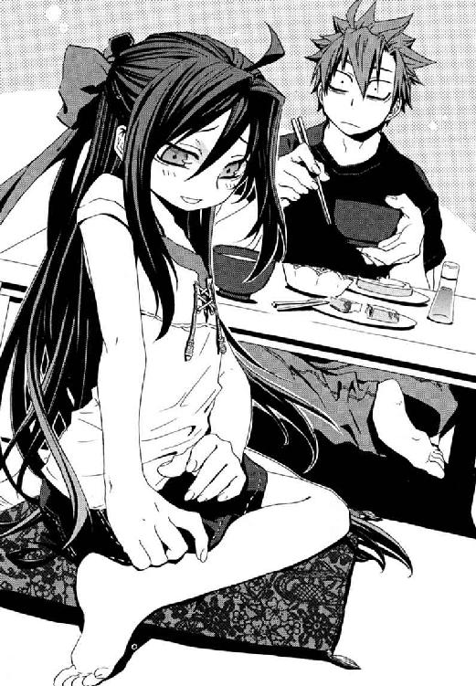

| 円環少女 ５魔導師たちの迷宮 (角川スニーカー文庫) | |
| 長谷 敏司 | |
| (2013) | |
円環少女
⑤魔導師たちの迷宮
長谷敏司

角川スニーカー文庫
本作品の全部または一部を無断で複製、転載、配信、送信したり、ホームページ上に転載することを禁止します。また、本作品の内容を無断で改変、改ざん等を行うことも禁止します。
本作品購入時にご承諾いただいた規約により、有償・無償にかかわらず本作品を第三者に譲渡することはできません。
本作品を示すサムネイルなどのイメージ画像は、再ダウンロード時に予告なく変更される場合があります。
本作品は縦書きでレイアウトされています。
また、ご覧になるリーディングシステムにより、表示の差が認められることがあります。
かつて若者だった男は三十年を経て、取り返しがつかないほど〝おとな〟になって、東京に戻ってきた。彼には、この大都市が、結局は成熟できずただ豚のように肥えたと見えた。
だから、正義を目指した男は、奇蹟のあるじたちと取引をした。
「唾棄すべき平和を打ち壊して、戦争をはじめよう。この国の歴史は、曲がりくねった道だった。今でもそうであることを、自分を勝者だと思っている敵と、脱落した同士と、子どもたちに、思い出させてやろう」
──かくして、地の底で戦争ははじまった。
夜、地下鉄のホームで、ひとりの男性が携帯電話をひらいて何度もメールを確認していた。
会社から帰宅する人々が多いこの時間、せまいホームでは百人を超える客が小さな車両の到着を待っている。寒川淳は、額に浮かんだ脂汗を灰色のハンカチで押さえて吸わせた。五十代になって、前頭部の髪の毛はもう、もうしわけ程度にしか残っていない。
〈紀子がまた変なことを言っています。はやく帰ってきてください。 洋子〉
教育に熱心すぎる妻が、メールを送ってきたのだ。今朝弁当を持って友だちとピクニックに出かけた娘が、兵隊の幽霊を見たと言っているという。淳はいい年になっていた彼と結婚してくれた十三歳年下の妻に、今でもまったく頭があがらない。今日も、盆休み前の飲みの誘いをことわって、ローンの残る自宅へ一直線だ。
小学六年生になるひとり娘は、最近活発だ。学校の友だちの影響だという。「髪が薄いのって元気があまってる証拠よ。あんたが学校でいやらしいこと考えてるのは、お父様ゆずりの元気をもてあましてたのね」先日、その〝友だち〟が家にやってきたときを思い出して、淳はにやついていた。帰国子女だという鴉木メイゼルという帰国子女の少女は、すこし舌足らずで、遠慮なくものを言った。父親の彼が心配なほど〝いい子〟の紀子が、ものすごい剣幕で言い返していた。怒る娘の顔は、妻に似ていた。
車両がやってくる音が近づいてきた。寒川淳は携帯電話をポケットにしまった。
列車到着のアナウンスが聞こえなくて奇妙だなと思ったとき、猛スピードでその列車は通り過ぎた。
人間をかえりみない黄色の風が、さっと抜けたようだった。この駅を地下鉄が素通りしたのは、二十年以上通勤していてはじめてだった。
見たこともないような古い車両だった。列車として長く伸びているべきなのにたった一両だったから、来たと思ったらトンネルの闇の向こうへ去っていってしまった。
だから、人々が立ちばなししだしたのも、奇妙な列車がレールを走る走行音すら聞こえなくなってからだった。
「見た？ 見た？ あれ、だれも乗ってなかったんじゃない？」
心霊体験でもしたように、見たものの正体を想像して、ホームは祭りのようにざわつきはじめた。
淳の携帯電話が鳴りだした。着信メロディは、小学生のころ好きだった月光仮面の主題歌だ。電話は妻からだった。買い物を頼まれて短い通話は切れ、奇妙な事件のことを話題にする余裕はなかった。淳は、子どものころ、怪事件を次々に解決する白ずくめの正義の味方に夢中だった。まだこの国が戦争の焼け跡を生々しく覚えていた時代、月光仮面は輝くほど正しくて、何者でもない謎の人で、彼らのヒーローだった。
「憎むな、殺すな、ゆるしましょう」
淳は、定年退職近くになってもまだ頭に残るフレーズを、口の中で繰り返す。
駅ホームの誰もが、自分たちの幸運を自覚していなかった。走り抜けた怪列車は、世界一危険な地下鉄だった。車両には本物の核爆弾が積まれていたからだ。もしこれが爆発したら、周囲数キロメートルが全滅し、彼らを含めて百万人近い犠牲者が出ていたのだ。
この夏、この国を激震させることになる幽霊電車は、八月十一日、午後七時十三分、はじめてひとびとの前に姿をあらわした。
［八月十一日］
魔法使いとこの世界の人間の間に、一般的には信頼関係はない。
専任係官、武原仁は五年間のキャリアの中で、それを思い知っている。
この世界には、神話や伝説の原型である多くの魔法使いが、異世界から到来し続けている。そうした異世界人の一大政治勢力《協会》との交渉を受け持つ日本政府の窓口は、この世界の法など守る気がない魔法使いを取り締まる治安機関も兼務している。それが、関係者にはただ《公館》と呼ばれる非公然機関、魔導師公館だ。
《公館》は東京の西方、多摩川沿いの古い洋館を本拠とする。
その玄関ホールは、もともと多くの人間でごった返すことを前提につくられた場所だ。午後八時を越えて陽光の名残が消えた窓に、ローブを着た十数人の魔法使いはよく映えた。公務員であるスーツ姿の公館職員たちは、念書や古い約束の物証までそろえても話がとおらない異世界人たちに殺気だっている。信頼関係がないのだから、激突自体は日常茶飯事だ。だが今日は緊張感がちがう。
赤い絨毯のホールに、濃紺のエプロンドレスをまとったひとりの女性がいたからだ。ふわりとした長い白金色の髪も薄化粧の肌も、人形か童話のお姫様のように豪奢だ。その女性、《茨姫》オルガ・ゼーマンを他と隔絶するものは、もうひとつある。彼女は、火刑台の魔女さながら、オレンジ色の炎を全身に這わせていた。
「本当に、こんなにたくさんのウンコが、いったいどこにつまっていたんでしょう」
だがオルガは、業炎の熱で燃えているわけではない。それどころか異世界人たちだけが猛火をおそれ、この世界の住人たちはそれに気付きもしない。
我々この世界の人間は、暮らしの中で奇蹟や魔法に出会わない。観測した奇蹟を破壊する魔法消去能力を持つためだ。魔法は、この世界の人間に見聞きされただけで、熱なき炎──魔炎として砕け散る。六十億人以上の地球総人口ほぼ全員が魔法の天敵だから、魔法使いたちは、この世界を神と奇蹟に見捨てられた《地獄》と呼ぶ。彼らにとって、この《地獄》の住民は、忌み嫌いさげすむべき《悪鬼》なのだ。
弱気に伏せた視線をさまよわせていた彼女が、仁へと、やさしげに目を向けた。
「ウンコの国は、いつもよく燃えてますわね」
「その国を守る専任係官やってるんだから、もうちょっと燃やされる側の焦りを考えてくれ」
「ごめんなさい。......わたくし、すこし無思慮すぎましたわ」
彼女が真夏なのに白い手袋をはめた手を、上品に頰へとそえる。
《茨姫》オルガは、この世界は巨大なウンコだめで、住民はしゃべるウンコだという。その認識は、実はこの世界における一般的な魔法使いの認識に近い。だからこそ今このとき、前代未聞の危機に仁たちは直面している。
魔法使い勢力《協会》の出入り業者だった魔法使い企業、ワイズマン警備調査会社が神聖騎士団から核爆弾を奪取した。現在、その核は、古い地下鉄車両にのせられて、東京の地下を走っている。もしもそれが爆発すれば犠牲者は百万人規模にのぼり、焼き払われたのが政治や行政の中枢が集中する地域なら日本という国は死ぬ。
「《協会》側から、今回の件について対策は？ うちから要請は行っているんだろ」
仁の焦りは、この玄関ホールに集まる、いてもたってもいられない《公館》職員のそれと同じだ。
「わたくしは、もはや《協会》から離れた身ですので」
オルガは、毒花と知りながら目を奪われる《公館》職員たちへと、すまなそうに会釈した。彼女は、ウンコに対して心から慈悲を向けられるほどできた人だからだ。
ざわりと、まるで立ちこめた死臭でも嗅いだように、魔法使いたちがざわついた。ホールの《公館》事務所がはいっているほうのドアが大きく開いたからだ。
そこには久しぶりに顔を合わせる旧友がいた。
前に会ったのはバベル事件の五月だから、三ヶ月ぶりだった。前髪を一房、秀でた額にたらした線の細い貴公子が、ウクレレをわしづかみにしてやってきた。大きく胸元をひらいたアロハシャツにバミューダパンツ姿で、足元はビーチサンダルをつっ掛けた、まるでバカンス帰りだ。八咬誠志郎はただひとり、危機などどこ吹く風とばかりに陽気だった。
「友よ！ 僕も、ひさしぶりに東京ではたらくことになりそうだ。楽しみだよ」
八咬が、体から魔炎をはげしく噴きあげながら、力強い足取りで近づいてくる。旧友は、よく日焼けしていた。最近は、離島に根を張った犯罪魔導師の追討を命じられていたのだ。
「おまえ、なんか海で頭があったかくなったんじゃないのか？ この状況でなんでそんな元気なんだよ」
「北海道から君に絵手紙を出したんだけれど、届いたかい？」
「おまえ本当に仕事してたよな」
八咬の背後から、ゴージャスな秘書が夏らしいミニスカートからすらりとした足を覗かせ、歩み出た。手には一枚の、木の皮をはいで切手を貼ったものを持っている。美女から葉書を手渡された若大将は、なぜこれがまだ手元にあるのかと首をひねっていた。
「知床の原始林にはポストがなかったので、自分で直接わたすと、ヤガミが」
「僕としたことが！ 南洋にもポストがなかったから、僕が郵便配達も引き受けることにしたんだったね。失敬、これが君への、旅のたよりだ」
「熊か？ 鮭か？ おまえ何と戦ってたんだ？」
魔法使いの悪夢、八咬誠志郎は目に映り感じるすべてを愛する。
そして玄関ホールの両開きの扉が、今度は破裂したかのように派手に開放された。魔導師たちと《公館》の職員たちが、等しく緊張に身を固めた。ホールに進み出たのは紬の着物に木綿の角帯をきりりと締め、下駄を履いた総髪茶筅の男だ。年は四十歳を越えているというが、外見に年齢はまったく表れていない。視力をほとんど失って、彼はまぶたを閉じたままだが、足取りに迷いはなかった。
「おう。そろっているな」
武人が、一声で、夜気の湿りを豪快に吹き飛ばす。シャンデリアが揺れる洋館のホールにあって、サムライの時代から漂着したような男は、場違いさを微塵も感じさせない。十八年にわたって人を斬り続けた重鎮、《鬼火》東郷永光は、場の空気をも殺すのだ。
《鬼火》の後ろに控えて、二十歳に満たない美少年が東郷の太刀袋を持っている。《鬼火》配下の魔導師集団である鬼火衆をまとめる、《笑い顔》虎坂井レイだ。最強の刻印魔導師と名高い彼が、あるじである東郷と同行していること自体、尋常なことではない。
魔導師公館の戦力として、犯罪魔導師を取り締まり、市中を警護する専任係官は、定員十二席に対して七名しかいない。しかも六人目と七人目は、日本中で魔法使い狩りに興じて都心に戻らない男と、仁も顔すら知らない亡霊だ。《鬼火》東郷永光、《茨姫》オルガ・ゼーマン、八咬誠志郎、そして《沈黙》武原仁。そして、今は地底で消息を絶っている《魔獣使い》神和瑞希を加えたわずか五名が、魔導師公館の戦力の中心なのだ。
魔法使いも《公館》の一般職員も、断崖からまっ暗な谷底を覗きこんだように無口になってゆく。彼ら専任係官が職務の中で積みあげた死体の数を、知っているせいだ。
現在、魔法使いという異世界人たちは、大っぴらには法を破っていない。だが、その秩序は自然に成り立ったものではない。この世界の人間は魔法の天敵だが、魔法使いが刃物でも持って暴れれば、数人単位の悪鬼を殺して逃げ回ることは可能だからだ。だからこそ、異世界人たちを〝恐怖〟という見えざる手で縛るため、《公館》は罪を犯した魔導師を打ち倒し続ける。
敗北を許されない《公館》の恐怖の象徴たち、専任係官が、こんなお披露目のように集結することはほとんどない。
危険人物が集まったせいで、仁のまわりは、爆発寸前の爆弾でもあるみたいに無人になった。仁のスラックスにしがみついている少女も、猛獣の檻にほうりこまれたようにかすかに肩を震わせていた。彼女は長い艶やかな黒髪をポニーテールにして、おとなしめのピンクのリボンを結んでいた。彼女、鴉木メイゼルは、彼が管理をまかされた刻印魔導師で、私立御陵甲小学校の六年一組の彼の生徒でもある。仁が身長百四十センチに満たない小学生の前に手を差し出すと、そのたいらな胸元近くに手が出ることになる。メイゼルが、ちいさな手で命綱にしがみつくように、仁の指をつかんだ。安心したように目を細めた無防備な表情で見あげられて、仁は彼女の息遣いの現実感にどきりとする。健康的に焼けた肌の色が、整いすぎた顔かたちと微妙にアンバランスで、触れられない世界のもののようにどこか錯覚していたのだ。
人心地つくと、メイゼルが、社公場の令嬢さながら堂々と前へ出た。誇り高い彼女は、恐怖をみすかされることを自身に許さない。
「あんたたちって本当になまけものだわ。仲間なのにカンジンなときぜったい助けにこないから、せんせは、いっつもひとりですごくあぶないことするのよ！」
まるで虎に吼えかかる子犬だ。
専任係官の間では、慣例的に、事件が大きくなった場合は、もっとも近くで関わった者が落とし前をつけると決まっている。つまりワイズマン警備調査会社に核爆弾を持ち去られた仁は、事態がどれほど絶望的に推移しても、終結まで責任を持つ。それは五月のバベル再演事件のとき、《公館》が、致命傷を負った仁を幻影城という死地へ向かわせた理由のひとつでもある。
八咬が芝居がかって大仰に両手をひろげる。
「昔から、君は間が悪かったよ。そう、僕がいないたった三ヶ月で、ひとつ屋根のしたに住む扶養家族がふたりも増えたって聞いたんだけど正気かい？」
メイゼルが傲然と胸を張った。八咬の視線を受け唇から恐怖で血の気を引かせながら。
「あら、家族ができるなんて、間がわるいどころか、せんせの人生、大当たりだわ。だって、愛して愛されること以上のしあわせなんて、きっとないもの」
「えらいですわ、メイゼルちゃん。しゃべるウンコを愛せるなんて、どんなに心が広いのかしら」
《茨姫》がよろめくように体を揺らし、ふくらんだスカートがふうわり揺れる。
鴉木メイゼルという少女は、どんな相手にでも食って掛かる。だがその彼女ですら、仁以外に三人の専任係官に取り囲まれておびえていた。
核爆弾の対処に集まったおとなたちの間に、小さな魔女がいるのは、彼女が刻印魔導師だからだ。魔法世界では、しばしば神前裁判が行われ、刻印魔導師という、《地獄》追放の極刑を受ける者が出る。この死刑に等しい罰を負った者は、背中に刻印を刻まれ、《協会》の敵を百人斃すまで自由になれない。この刻印魔導師たちを、《協会》は魔導師公館へさげわたし、受け取った公館は専任係官に管理させて、治安維持に利用する。
それでも仁には、まだ小学生のメイゼルをひとりで戦わせることなどできない。
「俺の扶養家族だっていうなら、他人ん家のことをぐだぐだ言うな。あと、俺の〝家族〟がひとり、神和といっしょに王子護に連れ去られてるってことも忘れんなよ」
仁は、彼にあけっぴろげな好意を向けてくれる少女がどんな罪をおかしてこの世界に堕とされたか知らない。あるじである《鬼火》の後ろで、メイゼルに軽く手を振る虎坂井レイも罪人だ。この少年は、地獄礼賛派という異端思想のテロ組織を率いて、この世界に墜とされるため国をひとつ滅ぼしたのだという。だが《公館》とて、その手がまっさらだと言える身ではない。
八咬は、仁と本気のケンカになったことがあるほど、あやまるのが下手だ。
「ああ、すまない。僕としたことが紳士らしからぬ非礼を」
貴公子の誠意は、お辞儀するしぐさの優雅さに、完全に塗りつぶされていた。
おびえて誰も注意をしないせいで、専任係官には変人が多い。近代国家と魔法世界のはざまで踊る彼らの舞台が、悲劇か喜劇かはともかく、浮世ばなれしていることにちがいはない。
仁はちいさな魔女と出会ったときから、彼らがいつか別れると承知していた。かつては、抵抗しても、メイゼルの修羅道に斃れた死体をいつか見る日が来ると、理解していた。今は、「いつか」が来る前に、助けてやろうと思っている。少女が彼など必要なくなるほど立派に成長して、巣立つところを、仁は見たい。
仁は、騒がしい玄関ホールから《公館》事務所前の廊下に引っこんで、たくさんのことがありすぎた今日を振り返る。早朝、ワイズマン警備調査会社の一隊が、神聖騎士団が身を寄せる米軍施設を襲撃し、核爆弾を奪取した。《公館》は当時、《協会》の内部情報の提供者である魔女アラクネを捜索しており、この動きに取り残された。そして昼間、仁たちはアラクネを捜しに《公館》周辺に戦前に掘られた地下壕群へ潜った。そこでワイズマン警備調査会社と聖騎士たちの、核爆弾をめぐる戦闘に巻きこまれた。結果、核爆弾は地下鉄車両で持ち去られ、ワイズマンのもとにある。
仁はそばにいるメイゼルに声をかけた。《公館》屈指の変人たちと話して、すこし疲れたこともある。
「もうそろそろ腹も空いただろ。晩飯は、ちょっと外まで食いに行くか？」
少女が不安げに彼を見上げた。
「きずな、今ごろどうしてるかしら」
地下道での決戦に、何も知らずに探検に来たこのメイゼルと、小学校の同級生の寒川紀子、そして倉本きずなも巻き添えになったのだ。そして、武原家のもうひとりの〝扶養家族〟、倉本きずなは、専任係官《魔獣使い》神和瑞希とともに消息がわからない。状況からすれば、間違いなくワイズマンに捕らえられている。
「そうだな。きずなちゃん、今ごろどこかで晩飯してるかな」
そんなことを言ってしまって、倉本きずなの不在を強く感じた。それは仁にもメイゼル自身にも、冷たい恐怖を思い出させた。
「............ねえ、せんせ。本当に、きずなはだいじょうぶだって思う？」
「ワイズマンの王子護ハウゼンは、三年前まで《公館》の専任係官だった。あいつは俺たちとの交渉の余地をなくすようなマネは、絶対にしない。きずなちゃんは無事だよ」
倉本きずなは六十年ぶりにあらわれた再演大系という遺失魔術の魔導師だ。《過去》へ作用するその再演魔術への確実な対抗手段は、あらゆる魔法の天敵である悪鬼の魔法消去だけだ。魔法使いにとって、彼女は危なすぎて触れられない核爆弾だ。理性ではわかる。だが、安全を確認できたわけではない。
頭が落ち着いているからこそ、時間の経過が、じわりじわりとその不在の重みを増してゆく。
メイゼルがくすりと笑った。血を見て本能がさわぎだした猛獣の子どもみたいに、嗜虐的な光を瞳の奥に揺らして。
「せんせ、その人のこと、信じてるんだ」
心臓が止まるかと思った。体の奥で、一瞬、体内時計が針を逆回ししたように、鼓動の乱れはおさまらなかった。王子護ハウゼンは仁をこの世界に引きこんだ張本人で、彼に戦いかたを教えた最初の先生だからだ。
「信じてるわけないだろ」
「そんなこと言ってもちゃんとわかるのよ。だって、あたしはせんせの〝フヨウ家族〟なんだもの。素敵ね、あたしとせんせ、どんどん距離が近づいてくみたい。このまま行ったら夏休みが終わるころにはどうなっちゃうのかしら？」
けれど少女も、ことばでは仁をつつきながら、体温が伝わるほど近くまでは寄ってこない。きずながいなくなったせいで、あどけない小悪魔も、うまく仁との距離がとれずにいるのだ。
だが、やわらかい人間の時間は、つかの間のものでしかない。今は、破滅を前にした、歴史の道行きをあらそう勝負のときなのだ。
†
二十一時十三分。魔導師公館の門扉から、森にかこまれた細道を一台の黒塗りの自動車があがってきた。
その大型車は静かにブレーキをかけ、ほとんど音を立てずに止まった。だから、公館本館の門扉がひらく前にふたりの到来を知ったのは、仁と《鬼火》と八咬、三人の専任係官のみだった。
騒々しかった玄関ホールの声が消えた。その反応のはげしさで、ホール奥の廊下へ引っこんでいた仁にも、やってきたのが誰か予想がついた。予想外だったのは、〝その人物〟の後ろに複数の足音があることだった。
その来場者たちは、喧騒に見向きもせず、《協会》側の人間立ち入り禁止のこの魔導師公館側廊下へ突き進んできた。《公館》職員たちの魔法消去が共用のホールにおよぼす影響を最小限度にするため、玄関とこの公館側の廊下を隔てる気密はしっかりしている。だがドア越しでも、今回の事態の重大さを示す、常ならぬ気配はかくれようもない。
最初に廊下へ踏み入ってきたふたりは、滅多に姿を見ない魔導師公館の幹部職員だった。本来エリートである高級官僚がここに飛ばされるのは、絶対おもてに出せないへまをしでかした場合だけだ。へたにはたらくと殉職確定だから、幹部職員は仕事をしない。官僚で、ここを志願した例外は今やただひとりだ。
「武原係官、今回は難しい話になりますので、会議を潤滑に進める協力をしていただけますか」
役職上の高級官僚たちに続いたのは、視線が冷たく鋭すぎる女性官僚だ。いつもは夏らしいスーツで仕事のできる女を演出する彼女が、薄化粧で服もきまじめな紺色と白だ。彼女が仁たち専任係官のまとめ役である《公館》事務官、十崎京香だ。ついと目をそらした京香のため、幼なじみでもある仁は勇気づけてやれるよう、声をかける。
「問題ないよ。始末はかならずつける」
そして最後に、紺色のぴしりとした制服を身につけた堂々たる壮年男性が続いていた。意志の強さをうかがわせるけわしい額の男は、制服で警察官僚と知れた。脇には、ＳＰなのだろう黒いカバンを持ったスーツ姿の男女が控えている。
武原仁は、何度も死線をくぐり、この国の命運を左右しかねない事件も経験した。だが、公館本館を警察幹部がおとずれたところは、今日はじめて見た。
「魔導師公館は文化庁のその他の機関にあたり、諸君は警察に指導を受ける立場ではない。だから、私が警察庁からここに来たのは、非常事態にあたって横紙をあえて破るためだと理解してもらいたい」
国内の過激派を取り締まる公安警察を指揮する警察庁警備局の幹部、清水健太郎は野太い声でそうあいさつした。
その後、彼みずからが十分近くも口頭説明をした。内容は法律に関わる官僚らしい、彼らがここにいる法的根拠と、どのような筋道でそれが正当もしくはやむを得ない措置であるかという理論付けだ。核爆弾は警察が総力をあげて追い、清水が魔導師公館を監督するという、仕事の切り分けだけが明らかになった。
だが、会議に出席した専任係官たちの反応は薄い。そもそも警察と《公館》とでは事件解決の目的地がちがう。だから、そのための組織も人の動きかたもちがう。
《公館》代表として、京香が役職を比べれば許されない直言をした。
「魔導師公館の仕事は、不謹慎な言いようをすると、害獣駆除に似ています。この世界と共存できない魔法使いを見つけて、永久に黙らせるだけなのです。裁判を開廷しないから書類もとりませんし、犯人を生きたまま逮捕すること自体まれです」
この世界の法を無視する異世界人たちに、異世界の野蛮なルールで返す。つまり《公館》は日本の法律に根ざしていない、存在自体に矛盾をかかえる国家機関なのだ。
警察からやってきた幹部職員が、静かに息を止めた。もう五十歳代の彼の、白髪まじりの頭髪をささえる毛穴がぷつぷつと開いてゆく音が聞こえるようだ。にじむ汗のにおいをじっとりとただよわせながらも、清水は警察とは決定的に〝ちがう〟《公館》の原始的なルールの圧力に屈しなかった。
「続けてもらいたい」
京香がうなずいた。《公館》でいつも使われている薄暗い小会議室の、今日の列席者は七人だ。仁をふくめた四人の専任係官と、十崎京香と、警察官僚である清水健太郎と女性ＳＰがひとり。もうひとりのＳＰは、ドアの外に待機している。
「魔導師公館には、会議で仕事を細かく割り振るほど人員がいません。敵を特定して、戦術を決めて、実行役である専任係官が了承するだけです。専任係官は、警護や監視といった人員をかける仕事は不得手ですが、魔法使いを狩るハンターとしての優秀さはご信頼いただけます」
《公館》はそういう組織だ。治安機関ヅラをしているのは、十崎京香時代のここ二年半に過ぎない。
清水は、頭が切れるうえ、順応力も人並みはずれていた。
「では、諸君への話の見通しをよくするために、私がこの魔導師公館に来た理由からはじめよう。私は非常識な治安機関が暴発しないように、警察の立場からにらみを利かせるために来た。このやりかたもマト外れか？ よろしい、そうでないなら進めよう。──では諸君が、我々警察の仕事に偶然ぶつかって邪魔をすることがないよう、現状わかっている事柄を伝達する」
普通の仕事の進めかたができない仁たちのため、幹部職員みずからが、《公館》のやりかたに合わせてくれたのだ。
「本日、午後七時十三分、地下鉄銀座線新橋駅のホームを通過する地下鉄車両が発見された。諸君が昼にとりにがしたものと同型の、第二次世界大戦前に使われていた車両だ。その後、次の銀座駅ホームで、同じ車両は見つかっていない。魔導師公館が言うところの魔法的転移を行ったものと思われる。この車両の走行自体は、コンピュータシステムで確認できなかった」
それは間違いなく、昼間ワイズマン警備調査会社が核爆弾を積んで去った地下鉄車両だった。魔法使いたちは、いつでも核攻撃が可能だとデモンストレーションをはじめたのだ。
控えているＳＰが、驚きに視線を揺らし、空調はきいているのに汗まみれになった顔をハンカチでぬぐっていた。清水は、みずから事件の説明をするなど考えられない立場の人物なのだ。
「警察は、諸君が追うワイズマンの社員と、我々が以前から追っていた人物が接触したことを確認している。そのワイズマンが核爆弾を売ったなら、この男は最悪の買い手だ。──名前は国城田義一。年齢は五十五歳で、国際指名手配されているテロリストだ」
十崎京香がＯＨＰを操作すると、会議室の白い壁面にひとりの男の写真が映し出された。顔は清水と同い年くらいにも見え、輪郭はまるく頭髪は薄くなっている。体格は、若いころは鍛えていたのか肩ががっちりしていたが、年には勝てず下腹がふくらんでいた。何度も日焼けを繰り返したように頰とこめかみに薄茶色の小さなしみがある。おそらく暑い国で隠し撮りされた一枚だが、この男の顔にはひとつ仁たちに緊張を走らせた特徴がある。目だ。国城田の、目元に深いしわを刻んだ目は、すぐそばを歩く通行人をモノのように見ていたのだ。
「国城田は、一九六〇年代末に、在籍していた大学で学生運動に参加し、そこから反体制運動に関わるようになった。一九七二年には、当時の米軍多摩基地に猟銃を使って火炎瓶を打ち込み、そのとき兵士ひとりが重傷を負った事件を起こしている。その後アラブへ渡航、三年後には南米の共産ゲリラに合流した。彼はそこで爆発物の取り扱い技術をいかして、数々の営利誘拐やテロ事件にかかわっている」
京香がスライドを入れ替えた。カチリと音が沈んで、写真は南国の市場のものに切り替わった。異常なのは、スイカとふたりの男性の頭が砕けて、道路がまっ赤な液体で濡れていることだ。屋台の柱が折れて傾き、そこにも子どもがひとり倒れている。誰のものだろうか、むっちりと肉付きのいい腕が一本ちぎれて転がっていた。
またスライドが入れ替わった。カチリと音が沈んで、今度の犠牲者は、性別も年齢もわからないほどまっ黒に焦げ、道路に敷かれたビニールシートにのせられていた。自動車に爆弾が仕掛けられていたのだろう。燃えてひしゃげ、ドアも外れた車のフロントガラスに、プラスチック製の人形の残骸がへばりついていた。
三枚目、四枚目、五枚目。
職業柄死体によく遭遇する仁が、陰惨な光景にやるせない気分になっていた。仁には、この世界の人間同士が悪意をぶつけ合うさまが、一番こたえる。それが、魔法使いたちが「この世界は地獄だ」と蔑むことばを、実証しているようだからだ。
「今、十崎事務官が映してくれているこれらの写真は、すべて国城田がかかわった事件の現場写真だ」
仁の血の温度は、確実にすこし下がった。国城田という男を前にして毅然とした判断ができると思った。もちろんそのつもりで、京香はこれを彼らに見せたのだ。
「南米とアラブってのは、テロリストにとって行き来しやすいところなのか？ 南米の共産ゲリラとアラブの原理主義者じゃ、言ってることだって全然ちがうだろ」
「国城田は、反政府組織であること以外には共通点のない集団を根無し草のように行き来する、政治色がきわめて薄い〝専門家〟だ。南米はそういう人間には潜みやすい場所だ。日本に戻る直前には、またアラブで目撃されている」
「核を持ってるのは、この男なんだな」
仁は、明確な敵意を感じて視線を返す。警察の人間であるＳＰが、いつもの調子を取り戻しすぎた仁をにらんでいた。
清水は、若造をとがめず、異なる組織の間に共有されたものを大事にした。それは、怒りだ。
「我々はこの男が本命だと判断している。十崎事務官、魔導師公館の立場からはどう見える」
「ワイズマンが企業である以上、利益があって核爆弾を奪取したのでしょう」
警察上層部も、《協会》や神聖騎士団の動向のような魔法世界情勢までは、担当外で掌握していない。だから、京香が異世界と現実世界との橋渡し役を引き受けた。
「現在、魔法使いたちにとって最重要の政治的課題は、この世界での高度魔法の実験場の確保です。ですが魔法使い勢力は、我々人間と戦争になれば、拠点を完全に失います。ワイズマン警備調査会社には、核爆弾が爆発した後に生き抜く特別なアテがあるとみるべきでしょう」
その保護者がテロ時代を切望するテロリストたちだと、清水は納得した様子だった。
仁たちは知っていた。京香は、今回の核爆弾が、人間の世界史を殺す弾丸である最悪の可能性に触れなかった。核爆弾を奪わせたのは、六十億人類と戦争して勝つアテがある異世界人かもしれない。それなら黒幕は、もっとも現状に不満な勢力である《協会》だ。現に《協会》は、核奪取事件に関わった魔女アラクネについての問い合わせを、無視しているのだ。
「最後になるが、現状、国城田から日本政府への要求はない。これだけの規模でありながら国内外のテロ組織や過激派との連携が見られない点でも、きわめて特異な事件だという見解を、我々公安警察も、公安調査庁も持っている」
仁は、この会議がはじまる前、《公館》嘱託の溝呂木という学者から一枚のプリントアウトを見せてもらった。もしも一九四五年にヒロシマに投下された破壊力の核爆弾が、一番浅い地下鉄トンネルと同じ地下十メートルで爆発した場合の被害予測地図だ。同じ情報を、間違いなく警察も持っている。まさにそれは国を殺す弾丸だった。
今回の核は、爆発すれば数十万人規模の死者を出す。この国は三ヶ月前にも《神に近き者》グレンの大規模魔術で海底へ沈められかけたが、核爆弾相手では魔法消去も頼れない。被害規模一千万人以上だが不確定な大津波と、百万人近い犠牲者がほぼ確定の核爆弾。どちらが最悪か仁には判断がつかなかった。
《鬼火》東郷は、立場や身分に興味がない人だ。
「己は、長い前置きは好かん。そろそろ具体的な用向きを話せ」
警察幹部である清水が口をひらいたとき、仁にはひどく彼がまぶしく見えた。
「魔導師公館に、しばらく魔法使いを殺さないでもらいたい」
世間の常識だからこそ、ここでは清新だった。
「現場が、テロの脅威におびえる市民に目撃されたときの影響を考えてもらいたい。警察としては、魔法使いの存在が公開できない以上、諸君の行動を治安活動だと説明もできない。パニックをあおらないため、国城田を逮捕もしくは核爆弾をおさえるかまでは、市民の目にはいる可能性がある戦闘一切を休止してもらいたい」
治安機関にとって、《公館》は日本の暗部、この国が近代化できなかった神話の尻尾だ。現在、十万人を超える警察官は全員この世界の人間だから、そもそも魔法を感じることすらできない。彼らには、日本に魔法使いがいるということ自体、悪い冗談にしか聞こえないのだ。だから実際、警察も、魔法使い事例のときは底なし井戸に投げこむように《公館》に事件をわたす──いや、投げ捨てる。今回はその防波堤として幹部である清水をよこしたほど、警察にとって《公館》は厄介者なのだ。
だが仁は、薄暗い会議室で同僚を見回した。《鬼火》東郷の眼光が、貴様が話せとうながした。
「人間がこの世界を支配しているのは、あたりまえのことじゃないんです。魔法使いは、......歴史もはっきりしない昔から、俺たちの世界を魔法の実験場として利用してる。連中にとって俺たちは、ここ千年二千年で実験場を占領した、しゃべるウンコなんだ」
くすくすと、《茨姫》オルガが、彼女の言いようを仁が借用するさまを笑っていた。
「核爆弾を奪って国城田に売ったワイズマンも、奪われた神聖騎士団も、俺たちの社会の都合なんか知ったことじゃないんだ。魔法使いにとって、連中の歴史の中で、戦争が一万年続いてまだ終わってない。だから、戦争してるやつらを前にして、ためらってたら、絶対にかえって市民を巻き添えにして犠牲者を出す」
「十崎事務官、これは魔導師公館の見解ということでいいのか」
「テロリストは国城田ひとりですが、魔導師公館の敵は魔法世界に億を数えます」
京香のことばに、清水が大げさなとばかりに目を細めた。だから、意味が十分には相手に伝わらなかったと、仁は知った。《神に近き者》グレンや、神聖騎士団たちのような、ほこるべき戦士だけが戦場に立つわけではない。魔法世界にもこの世界と同じく様々な人間がいて、それぞれの理由で戦っている。市民やメイゼルたちのような本来なら守られるべきものが、命をかけるよりないように追い詰められることもあるのだ。そして、彼ら《公館》は、守るための組織だからこそ、相手が何者でも決して敵を選べない。
アロハシャツの胸元を大きくひらいた自由人、八咬誠志郎は大あくびをした。
「僕らは自由だってことさ。見渡す限りどれも敵なら、一番ゆるせないやつから殴ろう」
警察人たちは、核の脅威すらどこ吹く風の怪物たちをあ然と見ていた。この世界の基準では、市民や警官、ときには加害者が傷を負っただけでも、社会的に大問題になる。魔法使いたちの間では、意見の相違があれば人が死んで当然だというほど、人命は軽い。
そして十崎京香は、政府官僚であり、異世界人の過激なルールで動く専任係官をたばねる元締めの両役をかねる。
「仕事の区切りを、これまでどおりにわけてはいかがでしょうか？ 我々魔導師公館は、この世界の人間の問題に警察が専念できるよう、可能な限り、事態から魔法使いを排除します」
京香の、脅威をぶつけて、自分たちの仕事範囲をこじ開けてゆくいつもの手だ。
だが清水は、警察組織の責任を守って小揺るぎもしなかった。仁には、この人物が有能だからこそ、彼とすら《公館》が手を取り合えない事実がつらい。
幸か不幸か、お互いの主張がぶつかる時間すら、敵は与えてくれなかった。
仁は反射的に立ちあがっていた。今夜の会議室には、それを察知できる人間が三人いた。
空気の流れに乗って、かすかな血の臭いが漂ってきたのだ。
玄関ホールは陰鬱な沈黙に包まれていた。架台にのせて、二体の死体が搬送されていたのだ。損壊の状態は、国城田のテロ現場の写真とどちらが陰惨か微妙だ。
数分前、《鬼火》配下の刻印魔導師、鬼火衆がふたり、銃撃で蜂の巣になった死体で発見されたのだという。流れた血もすでに固まり、近づいた仁には胸と腹の傷口が容易に数えられた。ざっと見て、二十発以上の弾丸を最低三人以上の射手から浴びせられていた。皮膚の下は骨も肉も内臓も砕けて、ペースト同然だ。
現在、刻印魔導師の一部には反逆を示す不穏な動向がある。だから、刻印魔導師は、技量と信頼から唯一例外となった鬼火衆を除いて、仕事を取り上げられていた。その精鋭たちが、ろくに抵抗した様子もなく射殺されたのだ。玄関ホールの一般職員も魔法使いも押し黙っていた。それほど敵が手強いか、鬼火衆の中にすら裏切り者がいたかということで、どちらにしろ事態は最悪だ。
「これはひどいな」
仁は、死体の状態から敵の姿を読み取るべく、いたるところに空いた銃創を確認する。敵は、楽しむように執拗に弾丸を撃っていた。兵士や職業殺人者の撃ち方ではない。感情に歯止めをかけられていない。だが今日の昼、仁が核爆弾を持ち去られたとき戦ったのは、軍隊のように統制のとれた射撃をする魔法使いだった。
血と内臓のすさまじい臭気に、清水とＳＰは三メートル以内までは近づいて来なかった。死体の確認義務がある京香だけが進み出て、手馴れた様子で薄手のゴム手袋をはめた。
「ワイズマン狩猟魔導師中隊......ですか」
それが、仁たちのぶつかる敵の名だ。ワイズマン警備調査会社の実働部隊である、銃器を手にした新時代の魔法使い。核爆弾を積んだ地下鉄車両から一瞬だけ顔をのぞかせた、獣じみて野蛮に顔をゆがめた魔法使いたち。明治以来《公館》の戦術にかかわり続けた王子護ハウゼンが編制したわりに、彼らの仕事は不細工すぎた。仁は、新たな敵の姿がわからなくなって、だからこそはらわたが煮えくり返った。
こんなものがこの国の裏にいるのかと、清水がつぶやいた。
ほとんど目が見えない《鬼火》東郷は、瞑目したまま、配下の無惨な最期を読み取った。
「ただではおかぬ」
静かな声が、周囲の者の胸にすとんと落ちた。東郷は、戦い敗れた者の仇討ちならば無粋と退ける。だがそのような武人ゆえ、斃れた体に無数の銃弾を撃ちこむ戯れを許さない。
仁は、今すぐにでもワイズマンの魔導師たちを追いたくてたまらなかった。倉本きずなの身柄は、これをしでかした連中におさえられているのだ。予想していたより、はるかに狩猟魔導師中隊の兵士としての質は低い。
おとなたちの輪の隅っこに、体格のせいで近づけない小さなメイゼルがいた。少女に今、「本当にだいじょうぶ？」と問われたら、彼には安心させてやれる答えを返す自信がなかった。
あのやさしいきずながこんな死体になって発見されたらと思うと、不安で、腹の底が冷たくなる。もう高校生だとはいえ、彼女は三ヶ月ほど前までは魔法に関係なく、こんな非常識な世界とは無縁に暮らしていたのだ。確かに仁は、メイゼルが言うように、敵戦力を率いる王子護ハウゼンをどこかで信頼していたのかもしれない。
誰もがことばを失っていた。
奇蹟に見捨てられたこの世界に、神はいない。だがそんな世界にも、人をしばり魅了し、支配する不可思議な力が、すくなくともひとつある。
──────恐怖だ。
†
そのころ、倉本きずなは細い地下道を移動させられていた。暗闇を、拳銃をさげていたり両手で小銃を抱えていたりする人々に、背中を小突かれながら歩いた。通廊は、幅と高さは学校の校舎の廊下ほどだ。どこまで続いているかは、魔法の明かりに煌々と照らされてもさっぱりわからない。
彼女にとって、確かなものは、お互いの体重を支えあう友だちの体の感触だけだった。
あれから何時間たったのかわからなかった。きずなは、ひどい日になった今日の時間を、疲れきった頭で数えなおす。同居人の小さなメイゼルが地下壕を探検するというから、引率のおとな気分でついていったのが半日くらい前だ。暗い地下道で出口を見失って一時間ほどもさまよい、きずなは高校の友だちの神和瑞希に会った。そして戦いに巻きこまれて気を失って、目を覚ましたら、この山賊みたいな人々につかまっていた。小さな地下施設に監禁されていたのが、たぶん二時間くらいだ。それからはずっと、この三十人ほどの隊伍に連れられて、どこへ向かうとも知れない地下行軍が続いている。
きずなをとらえた人々は、魔法使いにしてはなじみがある格好をしていた。ワゴンセールで買ってきたような安物のＴシャツやカーゴパンツにジーンズを、洗濯もせず汚し放題にしている。一ヶ月洗っていない泥だらけのシャツの山と、一緒に洗濯機に入れられた普通の洗濯物って、たぶんこんな気分だと思った。日光のない真っ暗な地下道を、弱いあかりしか使わずに押し合いへしあいしているのだ。酸っぱい臭気と獣くささにかこまれて、頭の上から思いっきり洗剤をたくさんかけてもらいたい気分だった。魔法のあかりで照らされた人々は、黒い肌の人も白い人もいて、髪も金髪だったり茶色だったり黒だったりで、瞳の色までまちまちだ。もう、日本にいるのかすらわからなかった。
「......きずな...だいじょうぶ.........私が......守る............から............」
熱の低い息が、きずなの耳元であえぐ。魔法の青白い明かりに照らされて、重傷の神和瑞希は凄絶に美しかった。汗まみれの肌は釉薬を塗った白磁のように輝き、整ったその顔立ちは苦悶の相を浮かべない。きずなは友だちを勇気づけたくて、すこし無理をして明るい表情を向けた。
「しゃべらないほうがいいよ。それに、つらかったら、こんなときまでガマンしなくていいんだよ」
瑞希の制服は血だらけだ。体に、磔にされたときの傷口がむごたらしく開いたままなのだ。魔法消去の影響を受けなくなったら、瑞希の体は魔法で自己治癒をはじめた。それでも、神和瑞希が魔導師公館の専任係官であろうと、下腹部と胸のど真ん中を槍で貫通されて無事なわけがない。ひとりで歩こうとする瑞希に肩を貸して、彼女は油断したら泣きそうになるほど軽いその体を支えて歩く。きずなの腕には、しおれた花のように長い黒髪がだらりと垂れている。友だちの瞳はガラス玉のように焦点が合っていない。
苦しい息の下、瑞希は、きずなの心配をやわらげようと教えてくれた。
「あの......男が............魔法消去......してた......せい...で、............さっきまでの......場所......広域探知......魔法............で......見とおせない。............だから、......地下に...空白............あるの......わかって............すぐ...追っ手............かかる............」
あの男とは、地下施設で王子護ハウゼンと一緒にいた、この世界の人間だった小太りのおじさんのことだ。つまりこの銃を持った魔法使いたちも、追っ手につかまらないよう逃げているのだ。その追っ手とは、武原仁たち魔導師公館なのだと思った。年上で頼りになるけれどやさしくしてあげたくなる彼のことを考えると、すこし勇気が出た。彼がきずなを助けに来てくれると思ったからだ。
「だいじょうぶだよ。いつも助けてくれてるんだから、こんなときくらいわたしのこと、頼ってくれていいんだよ」
この魔法使いたちが悪いことをしているのは、きずなでもわかる。
列の先頭の男たちが足を止めた。暗がりに、極微の光る砂が霧のように無数に浮かんだ魔法の門があらわれたのだ。前から、活力と自信に満ちた声の指示が飛んだ。
「閉鎖回廊だ。ヨハン、イムケ、こいつらをよく見張れ」
隊伍の先頭を守っていた身長二メートルを超える巨人が、きずなにのっそりと巨大な銃を押し付けた。貧相な髪がはげあがった頭頂に海草のように揺れている、彼がヨハンだ。彼の持つ銃は桁違いに大きくて背中にドラム缶のようなものまで背負っていたから、おもちゃじみて現実感がなかった。
「うごくだ。うごいたら、うつぞ」
ヨハンは日に当たったことがないかのような、食パンみたいにまっ白な肌をしていた。
「でかぶつの引き金に指をかけるなバカが。オレたちまでひき肉にするつもりか！ ヨハン！ やめろヨハン！ もういい、弟に言って聞かせろイワン。イワン、おまえを呼んでるわけじゃないんだ、おまえは隊のしんがりだ、おまえまで来るなってんだよボケ!!」
小男が、ヨハンの太い脚の、一番痛そうな膝の皿を蹴っていた。これがさっき名前を呼ばれた男、イムケだ。ぴっちりとした黒い乗馬パンツをはき、元は光沢があったのだろうシルクの緑色のシャツを着ていた。大きく開けすぎた胸元からちぢれた胸毛がたわしのように出ている。
「その女には、王子護のスカシ野郎も注意しろって言ってただろ。オレたちはもう、訓練を受けたワイズマン狩猟魔導師中隊なんだぜ。それくらい、おまえにだってできるだろ」
「うごいたら、うつぞ」
きずなはヨハンに、六本の鉄パイプをたばねたような銃の先で、思い切り頭をこづかれてうずくまった。ここから本当に弾なんか出たら人間の頭くらいまるごと消えてしまう。だから体が自然に従っていた。
瑞希が、きずなの胸に甘える子犬さながら顔を押し付けていた。
「ひゃっ」
変な声をあげてしまったきずなへの、友だちの返事が胸の下から響いた。
「............こいつら...くさい......」
たしかに風呂に入ってほしいなと彼女も思った。けれど、はっきりことばにされると、どうしていいかわからなかった。
胸毛のイムケが、陰険な上目遣いできずなたちを見ていた。彼女たちより背が低い小男が、大きな猟銃をもてあそんでいた。わざとおおきな銃口を彼女にちらちら見せる。まわりの男たちも、嫌な温度の視線を彼女たちへと注ぎはじめていた。
彼女たちが、三十人近い、得体の知れない大勢の男性に取り囲まれているという事実に、闇が深くなったように不安になる。
「ねーちゃんたち、ボクらのことこわくないんだな」
きずなは突然背後から声をかけられて振り返る。その澄んだ響きを、女の子の声だと思ったのだ。
体をひねった彼女は、はじめ相手がどこにいるのかわからなかった。予想よりずっと背が低かったからだ。
視線をさげると、鼻筋がきれいに通った肌の黒い少年がいた。南の海みたいにきれいなエメラルド色の瞳で、きずなを見あげていた。年のころはちょうどメイゼルと同じくらいだ。だから、ほっとしていた。
「え!? あの......夏休みですか？」
「ボクは、ピエトロ。ねーちゃんは、王子護サンにつかまったんだろ。サイナンだったな」
「あ、あのっ......わたし、倉本きずなです。ぴ、ピエトロくんと同い年くらいの子たちの面倒をみてたら、こんなことに」
ピエトロのジーンズもＴシャツも、まわりのおとなたちと同じくらい長いこと洗濯していなさそうだった。けれど、子どもだと、泥んこなことすら微笑ましかった。
きずなは、このどうしようもない息詰まる暗闇が、この子どもがいるから悪いことにならないんじゃないかと思えてきた。「きずなには落ちこんだとき、良いことを探して、悪いことばかりじゃないと思おうとするクセがある」と、彼女の父も言っていた。だが現実逃避でも、きずなはこの安心できそうな子となかよくなりたかったのだ。
「同い年かぁ。そいつ、どんなやつ？」
男所帯にたったひとりの子どもだからか、ピエトロ少年は目を輝かせて食いついてきた。
「ちょっと甘い感じのにおいがする、とってもかわいい女の子だよ。嚙みごたえがありそうなにおいで、うりゃって抱きしめて頭をくしゃくしゃにしたくなるんだよ。絶対させてくれないんだけど」
少年の笑った歯は白かった。
「いきなりにおいかよ、ねーちゃんおもしれー」
「きずなも............いいにおい......」
瑞希もしがみついたままだ。友だちの声が、一呼吸ごとに力強くなってきたのが、ちょうどおなかのあたりの感触でわかる。だんだん息が強くなって、熱くて湿っぽくなってきた。
「ねえちゃん！ ねえちゃん！ この人、地上の人だぜ。すごいよな！ すごいよな」
きずなは呼ばれたのかと思って少年に目で問うた。きずなに用があるのではなく、彼は隊列の後方へ大きく手招きしていた。
ピエトロの本当の〝お姉ちゃん〟なのだろう、きずなと同い年くらいの少女が、こまったように肩をちぢめながらやってきた。大きくて細身のライフル銃を抱えた、すこしぽっちゃりめの、場違いにやさしい雰囲気の少女がそこにいた。肌は弟よりすこし色が薄いチョコレート色で、瞳の色は澄んだ青だ。きっとたいせつにしているのだろうウェーブのかかったきれいな金髪を、手ぐしでなおしていた。
ピエトロの姉は、きずなと三メートルくらいのところから近づくことができず、かわいいプリント柄のついたＴシャツの汚れたところをさりげなく隠した。
「......ピエトロ。あんまり、近づいちゃ駄目」
「でも姉ちゃん！ 地上の人って、やっぱ国城田のおっちゃんじゃなくて、こっちだよな。きれいな服、着てるしさ。ああ、ボクも行ってみてえな」
夢見るようなピエトロの頭を、ヨハンの大きな銃口がごつんと鈍い音をたてて殴った。
「うごいたら、うつど！」
私語の罰を超えた強烈な一発を受けて、少年がふらりとバランスを失って体を崩れさせた。悲鳴をあげようとしたきずなの頰が、衝撃とともに熱くなった。小男のイムケに顔を張り飛ばされたのだとわかったときには、瑞希は突き倒され、彼女の体も床に押し倒されていた。
「しゃべるな！ おい、わかるか？ しゃべるな！ もう一発殴るぞ、こら、しゃべるなっつってんだろ！ でかい乳見せびらかしやがって、本当はこうしてほしかったんだろ？」
怖くて暴れたら、二発、三発と、平手打ちされた。きずなが抵抗できなくなるまで、イムケは彼女の顔を殴り続けた。だんだん、これから乱暴されるのだとわかってきた。
奥歯が鳴って止まらなくなった。魔法の薄明かりでは天井も見えず、ただ仕留めた獲物をこれからいただくような、イムケの身勝手な笑みだけが目の前にあった。小男が大きく開いた胸板の、ちぢれた胸毛を一本抜いた。
「王子護のスカシ野郎だっていねえんだ！ 殺さなきゃいいんだろ、オレたちがちょっとくらい楽しんだっていいんじゃないのかよ！ なあ、みんな!!」
野卑な歓声が、周囲から返ってきた。
彼女は、誰かに助けて欲しいと思った。右目に眼帯をはめた、薄気味悪いあの王子護ハウゼンもいなかった。瑞希は、彼女を守ったときの傷で、ひとりでは立つこともできない重傷だ。武原仁は、はるか地上にいる。
きずなには、虫がよくても最後に頼る相手は瑞希しかいなかった。その友だちも黒髪をわしづかみにされ興奮した男たちに床へ顔を押し付けられていた。瑞希が青ざめた唇で「お願い」と叫んだ。
反射的に、きずなは瑞希自身の指で教えられた印を組んでいた。
──《魔法》とは、自然規則がゆがんだ魔法世界で発達した、そのゆがみへ人間がつけこんで意志に従わせる技術を指す。幾億の魔法世界にひとつずつ存在する魔法は、大きく魔力型魔法と、「世界の《索引》を引いて森羅万象を自由に具現する」索引型魔法とに大別される。倉本きずなの索引型魔法、再演大系は、世界が積んできた過去を一冊の《本》として観測し、「それを書き記す文字にあたる《人間》を直接あやつる」。世界へ奇蹟を引き出すための索引行為として必要なのは、魔法使い自身のしぐさだけだ。
胸毛の男に組み敷かれる前にと、無茶苦茶に腕を振っていた。再演魔術に右腕を支配された瑞希が、腕に引きずられて操り人形のように立ち上がった。
「なんだ!? こいついきなり、なんて力だ？」
ワイズマンの魔法使いたちがうろたえて銃に手をかける。残像すら見えない高速で、瑞希が右腕を周囲の男に叩きつけた。人間が、拳で文字どおり弾き飛ばされるところを、彼女ははじめてその目で見た。
きずなの視界に、彼女を害し得る人物をまとめて照準したように、五人の人間だけが浮かびあがった。彼女には、彼らのことがわかる。今ここにいながら、世界という本に潜るように、きずなは〝敵〟が生きてきた過去をさかのぼることだってできる。貞操の危機にさらされた恐怖と怒りが、魔法に問題解決を頼るまいと努めていたきずなの、理性の掛け金をゆるめていた。
最初に彼女たちを見張れと命じた長髪の男が、殺気だった仲間たちを押しとどめた。
「撃つな！ 王子護は、こいつらを使うつもりだ」
──ステファン・ニキの名を、《世界》は彼女に教えた。
銃身を切った散弾銃を腰に吊るしたまま、ステファンがすばやく手元でなにか弾いた。次に起こったできごとの魔法的操作を、きずなにはまだ理解できなかった。なんの前触れもなく、弾丸のようにステファンが体ごと飛んできたのだ。
だが空を飛んだ超人は、肩関節からの鈍い音と苦悶に、顔をゆがめた。
「............化け物め」
一撃できずなたちをなぎ倒すべき超高速のタックルが、右腕一本で受け止められたからだ。腹と胸に大穴をあけた、ひとりでは立つこともできなかった神和瑞希によってだ。だが本来の《魔獣使い》は、腕力で敵をねじ伏せたりはしない、もっと凄絶な業師だ。
生き汚いきずなが、また瀕死の友だちを操ったのだ。本来同じ観測者であるから容易に操れないはずの《人間》を、彼女の再演魔術は容易に支配する。
かみ締めた口角から鮮血を垂らし、瑞希がこいねがうようにささやいた。
「きずな......やる......。......私は............だいじょうぶ.........どれだけ...でも............耐えられる............」
「撃つなヨハン！」
ステファンがまた叫び、大男の指が引き金から離れる。きずなは、息もできないまま手をのばして空をつかむ。それだけで再演魔術に操られて、支配下にある瑞希が、ヨハンの太い腕をわしづかみにした。凄まじい握力で、瑞希の白い指が男の二の腕へとめりこんでゆく。
──ヨハン・サガの名を、《世界》は彼女に教えた。
瑞希の人形じみて細い足が床を踏みしめ、みずからの筋肉を断裂させながら力を振り絞る。二百キログラム近い巨体を、細腕一本で持ち上げ地下道の床に叩きつけていた。
瑞希が大男ヨハンを投げ飛ばしたという〝結果〟を、きずなが押しつけ、必要な膂力を魔法で体から引き出させたのだ。だがそれは人体の限界を超えた代償を要求する。友だちが、狂気の激痛を耐えるように目を見開き、開いた腹の傷口から血を噴き出させ、呪文のようにささやく。
「......きずな.........止めないで............」
その魔法は、神話の英雄が、ここぞというとき豪力や生涯一度の絶技を発揮する原型のひとつだ。世界という《本》に記された文字──つまり人間へと、〝行動してこうなったという結果〟を押し付け、犠牲者の肉体を壊してでも力を搾り出させる概念魔術、《光輝ある破滅》。再演魔導師たちはこの魔法で、幾多の英雄に武勲の栄光を授け、その代償に肉体を削り破滅させてきた。
床に頭を叩きつけられたヨハンが起きあがってきた。彼の体はまるで傷つくということがないかのようだ。
きずなは三十人もの魔法使いに取り囲まれているという恐怖を、まだ理解していなかった。
──ベルナー・ヒルタの名を、《世界》は彼女に教えた。
その魔導師をあらわす文字が、乱戦の足音で埋め尽くされた《世界》にひらめいた。すこし動いただけで肉がぶつかり合う通路のせまさは、彼女たちの味方だった。きずなが振り向くと同時に、魔法に引かれ瑞希が疾走する。間合いを詰め、打ちかかった大振りの裏拳は、だが空を切った。撃つ気ならきずなをいつでも射殺できた死神、狩猟魔導師ベルナーは、魔法的転移でまぼろしのようにあらわれ、消える。
「きずな......さがる............」
血の泡を吐くような、かすかな声が耳にはいってきた。銃声が鳴った。同時に、きずなが数秒前まで立っていた床に魔法の扉がひらき、離れた場所で撃たれた弾丸が爆炎のように噴き上がった。
──イムケ・エダの名を、《世界》は彼女に教えた。
そこには乗馬ズボンを太ももまでずらし、気が早くも男性器を露出させたイムケが猟銃をかまえていた。
「くそ、ぶちかましてやる！ ぶちかましてやる！」
瑞希に打ち飛ばされて額を割ったのだろう、顔は血まみれだった。イムケが腕を振るたび、張子の虎のように性器が股間ではげしく揺れた。
「腕の一本くらいなくしたって、死にゃしねえからなあ！ 思い知らせてやんよ。思い知らせてやんよ!!」
「イムケ、その貧相なものをしまえ」
夏なのに黒一色のトラックスーツに身を包んだベルナーが、いつの間にかイムケときずなの間にいた。その骨ばった手に持った拳銃の、後ろのあたりを引いた。再演魔術が、ベルナーの銃に弾丸が装塡されたことを伝え、脅威の評価をひとつあげた。今度は本気で、きずなか瑞希を射殺するつもりだ。きずなも、再演魔術が観測させる世界という《本》から検索する──助かる方法を。
最適な〝解答〟が、きずなの脳裏に縫合された瞬間、足元の地面が泥沼になったような嫌悪感に彼女はおぼれた。恐怖が恐怖を引き出し、再演魔導師倉本きずなが観測する世界はどこまでも暗く落下してゆく。世界という《本》の文字、人間が積みあげてきた無数の死がそこにあった。弾丸で撃たれた死体、爆破されてこなごなに砕けた死体、飢えと病でゆっくり命を失っていった死体、ささいなケンカがもとで刺された死体が彼女の視界を埋め尽くしてゆく。再演世界の自然法則は、失われた無数の生命を提示した。──それが答えだと。
「やめようよ！ もうやめようよ!! もう死んじゃうから！ 絶対こんなのおかしいから！ ベルナーさん」
きずなの絶叫に、乱戦の中でも冷静だったベルナーが声を凍りつかせた。
「おまえはなぜ俺の名前を知ってる」
魔法使いたちが、一列目は伏せて、二列目は膝立ちで、三列目は立ったまま銃を構えた三列横隊を作って、きずなへ一斉に銃を向けた。魔法は、よほど特別な手段をつかわなければ、魔法使いに直接作用させられない。教えてもいない素性を握られることは、奇蹟に愛された彼らにすら不気味なのだ。
重傷のまま身体を支配された瑞希は、体を血まみれにして意識を失っていた。
きずなと彼らの間には今、冷たい拮抗線が引かれていた。一転がりで、きずなたちは撃たれて死ぬし、彼らにも犠牲者が出るかもしれない。
──アナスタシア・タバタの名を、《世界》は彼女に教えた。
濃いチョコレート色の肌に金髪を垂らした、きずなと同い年ほどの女の子が、半裸のイムケの背後に立っていた。ピエトロ少年のやさしそうな姉が、長いライフル銃を背負ったまま、拳銃をイムケの後頭部につきつけていたのだ。
「......アナスタシア」
イムケが、猟銃を床におろして両手をあげた。アナスタシアは拳銃をおろさなかった。今のきずなには、戦いがぐちゃぐちゃの乱戦だから、背中のライフルは使わず拳銃を抜いたのだと理解できる。三十人の中、この金髪の少女ただひとりが、二種類の銃を使いわけていた。人間がひとり死ぬのに、誰もがしかたないと受け入れてしまっている。人を金縛りにするその〝恐怖〟は、腹を決めたときの武原仁がまとう空気にどこか似ていた。
「中隊長の命令を、破っちゃダメだ」
†
専任係官《鬼火》東郷永光が管理する、刻印魔導師二名の射殺体が運びこまれて一時間が経った。魔導師公館では臨時会議が、会議室ではなく、死体確認に使われる霊安室で行われた。
午後十時の、殺風景で蒸し暑い部屋を照らすのは、裸電球ひとつだ。明治時代に公館本館が建てられたときから万の桁を数える死者を見送った部屋で、二体の死体を、五人の人間が囲んだ。事務官十崎京香と専任係官のみで殉職者を見送るのがしきたりだからと説明すると、清水たちは同席を自粛した。警察人たちはまだ、魔法使いとこの世界の狭間で、どれほど人命が軽いかわかっていない。
会議は覚悟を決めたような静謐に包まれ、だが内容は激烈だった。
「これより、魔導師公館はこの弾丸を、《魔法使いの弾丸》と呼称します」
頭がおかしくなりそうな血肉の生臭さの中、京香は言った。早くも検死が終わった死体は、一度バラバラに切り刻まれ、縫合されている。架台よりは幾分ゆとりがある霊安室のベッドの脇には、金属製の容器が置かれていた。中に入っているものは大量の小石と金属片だ。今日の昼、地下で殺されそうになったとき見たものと同じだと、仁にはわかった。本来、魔法使いが銃器のような精密機械をあつかうときは、個々人が引き連れた自然法則のゆれのせいで、かならず誤作動の危険がある。だが、ワイズマン警備調査会社が持ちこんだこれは、誤作動が起こっても銃が絶対暴発しない〝魔法使いでも安全に使える弾丸〟なのだ。この金属容器の残留物──ふたりの体に残ったおびただしい弾丸は、すべて《魔法使いの弾丸》だった。
仁は、《茨姫》オルガは、八咬誠志郎は、そして手下をむごたらしく殺された《鬼火》東郷は、すさまじい形相の死体を囲んで、ひとことも語らなかった。彼らは皆、自分たちがなすべき仕事を知っていた。
「営利企業であるワイズマンが、今回のテロに協力し続けるのは、それが大きな商売に繫がるのだと考えるのが妥当です。この商材──《魔法使いの弾丸》は、たしかに大ヒットの可能性があります。この世界で不満をかこっている魔法使いたちにとって、我々《悪鬼》を簡単に殺せる希望に見えるでしょう」
十崎京香の話は、簡潔で明確だ。
「ワイズマンは、今回の核テロを、『《魔法使いの弾丸》があれば悪鬼に勝てる』という実演宣伝の場にしようとしている。そう考えれば、核爆弾を受け渡した後も国城田義一に協力している筋もとおります。だからこそ我々は、彼らの無惨な末路をもって、今のこの世界に不満を持つ魔法使いたちへはっきりとしたメッセージを返します」
人間らしさを血の気が引くほど強く組んだ指だけに残して、氷の事務官は、正しいが寒い決断をくだす。
「ウィザード・ブレットを持つ魔法使いを抹殺してください。銃器の実効性を疑わせ、『銃器を持てば死ぬのだ』と買い手がつかなくなるくらい、徹底的にです」
しばらくなかった、《公館》らしい吐き気がするほど過酷な命令だった。だが、わずか七人の専任係官が日本中の犯罪魔導師ににらみを利かせられるのは、〝恐怖〟がゆえだ。
「魔法使いたちの心の底に、もう一度《公館》の名と恐怖を、焼き付けなおしてください」
もしもこの世界の人間が敗北して魔法使いの時代が再来したら、仁たちが非道な弾圧機関の手先として極刑に処されるに十分な所業だ。だが、彼らが見過ごせば、犯罪魔導師が銃器を当たり前に持ち、軽く引き金を引く時代がやってくる。そして新時代を告げるワイズマンの宣伝は、東京を焼け野原にする核爆発で締めくくられる。異世界人たちは、洪水神話やたくさんの神罰の神話が示すように、景気のよすぎる破壊を好むのだ。
武原仁は、殺伐とした会議が閉会すると、真っ先に本館事務所にやってきた。メイゼルと、会議の間ここで夏休みの宿題をしていると約束していたからだ。
事務所では、管理職の席ほどきれいに片付いて書類ひとつない。メイゼルは、すでに帰宅した遺物対策課長の机に国語のドリルを広げて、鉛筆を握っていた。
「せんせ、今日はずいぶん遅かったのね」
メイゼルが、ままごとのお母さん役みたいに、彼女を待たせた仁へと唇をとがらせる。ひどく微笑ましくて、すこしだけこれからの仕事の重さから解放された気がした。そして仁は、残業中の職員に今の顔を見られなかったか慌てて確認する。事務職員が数人、顔をそむけた。
仁は、彼女をひとりにした間のことが、おもに社会的立場あたりが猛烈に不安になった。
「メイゼルからなに聞いたか知らないけど、ぜんぶ誤解だぞ」
小さな魔女は、あめ色の瞳を嗜虐的なよろこびにとろけさす。
「あら、今さら隠したって意味ないわ。もう、せんせとあたしが同じ家で住んでるってこと、みんなが知ってるのよ」
あんまりせんせが遅いからよと、小悪魔は、ミニスカートからのびる足をうれしそうにぱたぱたさせている。事務所の職員たちが、絶好調に外堀を埋められつつある仁へ、向ける視線はあたたかい。
「いや、十崎事務官が忙しい間、うちで預かってるだけだからな。だいたい、きずなちゃんだって同じだろ」
それで会話が止まってしまった。
倉本きずなは、あの狩猟魔導師中隊に捕われている。仁は、蜂の巣になった死体が運びこまれてから心配でたまらない。さっきの会議で決まった全面対決の方針が、人質の彼女を窮地に追いやるのも確実だった。仁は、狩猟魔導師中隊を率いる王子護ハウゼンが《公館》の専任係官だったころ、あの男に殴られたのを今でも覚えている。まだ高校生だった、はじめて人を撃った彼に、王子護は言ったのだ。「上等な狩人は、そんなお里が知れる世間すねた目はしていまセン。駄犬になるんじゃありまセンヨ」だから、仁はよけいに頭にくる。狩猟魔導師中隊の仕事ぶりは駄犬のそれだ。
きずなが快適に整えてくれた小さな食卓すら、《公館》の寒い現実と地続きだと思い知ると、ひどく心細かった。どれほど、彼女に頼っていたかが身に滲みた。仁は、深い海へ潜るように戦場へ飛びこみ、息継ぎに酸素を求めるように〝当たり前の毎日〟へ浮かびあがってきた。あのあたたかい家へ戻るのだから、暗い深淵で溺れることはないのだと思っていられた。
そして、時間が経つごとに不安がいや増しているのは、義理堅いメイゼルにとっても同じだ。キャミソールに着替えた少女の肩は、年相応の子どもらしく小さく頼りない。だから仁もおとなの役目を思い出して、むき出しの肩にそっと手を置いた。少女の肌は、空調のせいか冷たくなっていた。
「だいじょうぶだよ。きずなちゃんは絶対に俺が助けるよ。神和だってついてるんだ、そう滅多なことにはならない」
まだ小学生の彼女も、あの死体に出会って一時間しか経っていない。
メイゼルと出会ったころ、仁はすべてがいつか崩れると覚悟していた。今夜は〝その日〟がついに来たかと思うほど、なにもかもが坂道を転がるようで止まらない。昨晩は、仁のアパートには倉本きずながいてメイゼルがいて、寒川紀子の家からもらってきた西瓜を四等分して食べた。たった一日で、なんでもない団欒は、ひどく遠くなっていた。
だがメイゼルは、彼の気鬱など軽く飛びこし、驚くほど屈託なく笑ったのだ。
「なんだか、ちょっとなつかしいわ」
見上げてくる少女が、小さな手で、仁の結局何もつかめていない手を握った。
「せんせ、はじめてあたしたちが会ったときみたいな顔をしてるわ」
「そうかな。前よりはちょっと締まった顔になってるんじゃないか？」
メイゼルは、彼の手の甲に、やわらかい爪を立てたり指をつまんだりして遊びはじめる。明日を知れない少女は、生の確かさを刻みこむように強い刺激を好む。苦しさや痛みこそ至上のよろこびだというほど、仁は思い切れない。
「やっぱり、マシになってるだろ。おとなになっても、自分が本当にしなきゃいけない仕事に出会ったら、成長するっていうからな」
「せんせが苦しんでる顔、あたし、ぞくぞくするくらいスキよ。だから苦しまないでなんて絶対言わないわ」
小さな魔女が、仁の手にぎゅっと爪を立て、彼の鋭い感覚を想像するように目を潤ませる。
「でも、せんせだって、同じくらいあたしのこと苦しめていいのよ」
少女はまぶしいほど変わらない。核爆弾が爆発寸前だからといって、メイゼルは破滅の気配に追い立てられない。このあどけない刻印魔導師には、この世界にいること自体が極刑の罰で、毎日が破滅の隣なのだ。
彼女に手を差し伸べることは、つまり嚙まれるということだ。けれど、あどけない少女のあたたかさが肌越しに伝わるから、仁はいつも手を引っこめる時機を見失う。仁は、メイゼルに生き続けてほしいと願う。彼女を小学校に通わせた欺瞞の延長だとしても、この小さな魔女に人を殺してほしくなどなかった。
静かな時間は、カツカツと氷を削るようなハイヒールの靴音で破られた。十崎京香だった。仁の幼なじみでもある事務官が、事務所に入りかけ、入り口で足を止めた。微妙な温度の視線が痛かった。
「......武原係官。事務所のみんなが困っているので、外に出たほうがよろしいかと」
仁は周囲の目を思い出し、赤面した。
結局、仁たちは、遅い晩御飯をとるため事務所を出た。純粋に、忙しい事務所の職員たちを邪魔しないためでもある。警察幹部が乗りこんできたということは、いつも作っていない書類を今回は用意しなければならないということだ。なにせ、まともな役所である警察庁からは、山ほど書類が回ってくる。だから向こうの仕事の邪魔にならないためフル回転を強いられているのだ。
「うちで寿命が長い職員っていったら、事務員でしょ。だから、事務所で仁の評価って、年々微妙に変遷してるみたいで、すっごい面白いのよねー。高校生のころは、〝妹の舞花ちゃん追いかけて道を踏み外したすごいシスコン〟だったでしょ？ 次は、例の王子護ハウゼンとか八咬誠志郎みたいな変人の〝類の友〟だって？ 最近なんて、すっごいわよー」
氷の事務官から幼なじみのゆるんだ顔になって、京香が冷えた麦茶を一気に飲み干した。公館本館の二階には幹部執務室が並んでいる。ここは幹部たちの帰りが早いせいで夕方五時以降すべて空き部屋だ。だから仁と京香は、この危機でも退庁した幹部の部屋で、《公館》事務員たちが買いこんだコンビニ弁当を広げていた。部屋にはソファと低いテーブルが置かれた応接スペースまであって、仁はいろいろ釈然としなかった。
「あのな。そういうときは、メイゼルときずなちゃんを預かってる保護者が誤解を解いてくれるもんだろ」
つかの間、〝京香姉ちゃん〟に戻った十崎京香は、なにもかもがめんどくさそうに低い応接テーブルに突っ伏した。
「私、忙しいしー。仕事場の人間関係では安全圏にいたいしー」
魔導師公館がいかに非人間的な組織でも、運営しているのは人間だ。修羅場の嵐にあっても、台風の目のようにおだやかな時間はあらわれる。
「あのな。あたりまえに俺を見捨てるなよ」
武原仁と十崎京香の関係はいびつだ。小さいころから、彼と妹の舞花は、なんでもできる近所の京香お姉ちゃんにあこがれていた。舞花が魔法消去に耐えられない体になって、仁と京香の通う高校もわかれた。仁たち兄妹が《公館》に関わらなければ、関係は自然に薄れて消えるはずだった。京香がここにいてはいけない人に思えて、今でも彼は彼女に逆らえない。
「かいがいしーじゃないの。メイゼルちゃんって、事務所のお茶くみも、とろけそうな笑顔で手伝ってくれるんだって。『あたしの手が人づきあいの全部に回って、もう追い詰められてあたしにひざまずくしかないって知ったときのせんせの顔、想像したらゾクゾクするの』って。あれだけ堂々としたら、嗜虐趣味って素直に応援できるものなのねー。みんなのイタズラごころ？」
「笑いごとか、その人間関係包囲網は？ なんだそれ、地味にナミダ出るぞ」
「いいじゃない。メイゼルちゃんが、こっちで人間関係つくってくれてるんだから」
メイゼルが深くこの世界に根付いたことは、見守ってきた仁たちにもひとつの実りだ。だが、養分になる仁の立場も、誰かフォローしてくれないものかと。
「メイゼルにとっては、俺たちは、事務所の連中も専任係官も、みんな普通に人間なんだよな。本当に、ワイズマンや《協会》の魔法使い連中も、それだけわかってくれたら、もうちょっとな、......ああもうダメだ。愚痴はやめよう」
「愚痴くらいきくよー。あれだ、これ終わったらビヤガーデン行こっか。今年まだだし、私も、相当強烈に愚痴たまってるしー」
仁は、幼なじみとの軽口を楽しみながら、小さな魔女があいさつをするご近所さんの人数を数えてみる。鴉木メイゼルという人間がここにいる重さが、すこしだけ誇らしくて、また熱くなってきた頰をさりげなく手で隠した。
「やっぱり、がんばらなきゃな。もう、あいつがいなくなったら、それだけたくさん悲しむ人間がいるんだ」
分厚い木のドアを開けて、話題の張本人が給湯室から戻ってきた。
「せんせ、冷たいものの上にあったかいものをのせるって、通の食べかただって知ってた？」
両手で容器を抱えたまま、器用にドアをあけてメイゼルが入ってきたのだ。軽い足取りで少女がそっと足を踏むたび、長い黒髪とリボンが揺れる。コンビニのざるそばから、なぜかあったかいグラタンの香りがした。
テーブルに置かれたものを、生粋の日本人である仁と京香は凝視した。そして絶句する。ざるそばの上に焼いた冷凍グラタンがぶっかけられていた。マグカップには、シナモンティーに添えるシナモンスティックがわりか、緑茶にチョコレート味のポッキーが豪快に浸かっている。異世界人ならではのシンプルだが絶望的なひらめきが、仁と京香に数々の悪夢をよみがえらせた。
メイゼルの小さな手が、割り箸をきれいに割る。
「せんせたち、今日はどんなお話だったの？」
息をのんだ仁にかわって、京香が小さな魔女に当たり前のように噓をつく。
「公館も核爆弾の事件に専念したいから、状況を整理するために、まずワイズマンに退場してもらおうって話。メイゼルちゃんには、決まりでお仕事まわしてあげられないんだけどねー」
おびただしい死体を積みあげる厳しい現実を、幼なじみは軽さの下に隠す。
「ほら、小学校だって、持ってきちゃいけないものを持ってきたら没収になるでしょ。それと同じー。実はたいしたものじゃないんだけど、持ちこまれると迷惑なのよ」
軽く手を振って、京香が笑い飛ばした。冷徹な指揮官としての彼女は《魔法使いの弾丸》の実効性自体を評価していない。これまでも魔法使いは、この世界の人間だけは安全に射殺できたからだ。銃器の暴発の原因となる自然法則のゆがみも、原理上、魔法消去で破壊されるのだ。この世界の人間が撃たれる場合は、被害者自身が自然秩序を安定させてくれるから、以前から銃は誤作動しなかった。
「元から効果があったものを、新製品が効果的にしたみたいに見せかける、詐欺スレスレの商売を取り締まるだけ。ちょっと宣伝のされかたも嫌な感じだしー」
その時代が変わる宣伝イメージを潰すため、《公館》は徹底的な弾圧で〝恐怖〟をばらまく。仁も、これから組織人としてせねばならない仕事をメイゼルに伝えられず、京香の噓に乗った。律儀な少女が、責務から遠ざけられたことに怒るとわかっていてもだ。
「そんな顔するなよ、しょうがないだろ。だいじょうぶ、こんなことはすぐ終わるし、きずなちゃんだってすぐ取り戻せるよ」
「メイゼルちゃんが心配しなくても、敵の高位魔導師も王子護ひとりだし、一週間もかからずに片付くんじゃない？」
幼なじみは、噓がうまくなった。昔、仁が妹に去られて、大事に思ったものを守ってやりたいと心に決めたころ、〝京香姉ちゃん〟は普通の高校生だった。そして時間は残酷に、妹や京香の両親を奪い去り、おとなになった彼らは同じ《公館》にいる。仁は、ヒーローみたいなものになりたくて、現実には血なまぐさい仕事の専門家になった。京香がどう思っているか、彼女自身は本音を教えてくれない。
「夏休みが終わったら二学期なんだから、自由研究とか日記とか休まずちゃんとやっとけよ」
「それ、あたしよりきずなに言ってあげるべきだわ。夏休みの宿題、ぜんっぜん終わってなかったもの」
薄暗い夜気に負けまいと不敵に微笑むメイゼルは、信用できる刻印魔導師という、《公館》になじみ深い身内だ。だが、きずなはまた必ず大事件を呼ぶと監視を受けている身だ。だから京香にとっての優先順位は低い。
「同行している神和係官がカタをつけるでしょう。高校生はもう自己責任だし、なんとかするんじゃない」
彼女に、小さなメイゼルややさしいきずながどう見えているのか、仁にはときどき、わからない。
†
きずなたちの知っている東京の真下に、こんなものがあると知ったとき、彼女はただ驚くしかなかった。数ヶ月前まではただの高校生だった彼女の現実は、武原仁や鴉木メイゼル、そして友だちの神和瑞希と出会ってから、確実に裏返りつつある。
ワイズマン狩猟魔導師中隊の隊伍に追い立てられてきた地下通路の果てには、廃墟の町が広がっていた。コンクリートで作ったコンテナのような、灰色の巨大な箱が、薄闇の中に整然と並んでいる。このそれぞれが家なのだと、近づいて入り口のドアと窓が視認できるようになって、はじめてわかった。真夏の八月なかばだというのに、驚くほど空気が冷たい。風はなく、どこかから水のにおいがして、コンクリートの住居群に、昔は人が住んでいたように思えた。
道の両脇には、十メートル間隔で淡い魔法の明かりが浮かんでいた。ほのかな青い光源に照らされて、立方体に近い一階建ての家が、ほとんど間隔を開けずに建っているから、一枚の大きな壁のようだ。その殺風景さはただ幻想的ですらあった。魔法の光を数えると、きずなたちが入ってきた目抜き通りは、長さ八十メートルもあった。地面の底に、こんな大きな空洞を掘る手間を考えただけで、気が遠くなりそうだった。
きずなたちは、壁も崩れて屋根も落ちた、恥ずかしいほど外からまる見えの家をあてがわれた。制服を赤黒く汚した瑞希を、膝ほどの高さの、石材の寝具台に横たえさせた。石をあたためる魔法なんて使えないきずなは、冷たい手をこすり、十二畳ほどのがらんとした家の中を歩く。意識がない瑞希は寒くないかと、心配になって体に触った。きずなが魔法であやつったせいで、友だちの脈は、体の奥から火が消えたように弱々しい。もしもこのまま目を覚まさなかったらどうしようと、暗闇に取り残され不安でたまらなかった。
足元の寝具台の内側から冷たい風が吹きこんできて、内部が空洞だとわかった。ここに住む魔法使いにとっては、ここに魔法の熱源を置くと暖房にできて便利なのだ。震えを止められない指で、きずなは、友だちの冷たい手を握る。ほのかなぬくもりが、彼女の支えだった。
石の床には大きなひびが入って、大きな水たまりができていた。水を温めるのが得意な魔法使いのために、床下を水の流れる管が通っている。崩れた壁からは、小さな大理石の天使像が突き出していた。石や固体をあたためる魔法使いは、こんな飾り部分をあたためて暖房に使うのだ。ただ、きずなにできるのは、寒さに震えて、むき出しの腕をこすることだけだ。
「......あの、すみません。毛布かなにかありませんか？」
吐く息が白く煙になった。
ワイズマンの魔法使いたちが、いつでも撃てるぞと銃口を向けてきた。無精ひげを長く伸ばしたステファンが、大きく腕を振った。
「ピエトロ！ おまえの毛布をやつらにわたせ」
きずなは、まわりの男たちに弱いとあなどられたらまた襲われそうだから、泣きたいのをこらえた。楽しいことだけ考えようと、彼女自身を勇気づけた。ピエトロ少年が来たら話しかけようと思った。まだ小学生くらいの彼は、きずなの体を変な目で嘗め回しもしないから、ここで唯一安心して話せる相手だ。メイゼルは今ごろどうしているだろうと、また心配になった。
家の崩れた玄関口で、足音がした。弾かれたようにきずなが振り向く。
「ピエトロくん？」
「すみまセン。君の〝ピエトロくん〟は、ぼくが晩御飯に食べてしまいまシタ」
そこには、汚れた服の軍隊にあってひとりまっさらな白いスーツを着た、軽薄な中年男性がいた。右目は銀の眼帯で隠し、いつも不謹慎な笑顔を浮かべている。王子護ハウゼンという、こわい童話から抜け出た本物の魔法使いだ。
王子護が、白い帽子を軽やかに頭からとり、いつものように芝居がかった会釈をする。
「ご用命は毛布でしたネ。ああ、人体は、いつだってあたためられることを求めていマス」
白いスーツの〝魔法使い〟が帽子をひっくり返して、中に手を突っこむ。そうして何もなかったはずのそこからオレンジ色の毛布を引きずり出した──たぶん魔法を使って、今、作ったのだ。高度な魔法に、銃を持った魔法使いたちがどよめいた。
さらわれた上に見世物にされたようで頭にきて、きずなは涙目のままそれをひっつかんで奪い取った。そして、まだ意識の戻らない瑞希の体をくるんだ。友だちは血のにおいがして、かすかな呼気にすら血臭がこびりついていた。長くてきれいな黒髪が、ねばつくかたまりのせいでほつれていた。ほかにもう何もしたいことを思いつかなくて、手ぐしで瑞希の髪をていねいに梳いてやった。立ってもいられないほど疲れていることに気付いて、きずなは冷たい床にぺたりと座りこんでいた。
「毛布の代金代わりに、君はぼくの話を聞きなサイ、〝最後の魔法使い〟」
王子護が、燃えるように赤いハンカチを軽く振って、パチリと指を鳴らした。空中に、燃えるものなどないのに火がうまれた。暗い地下でも、はじめて会ったときと同じ〝怪物〟だった彼が、彼女はこわくてしかたない。だが、その魔法の炎のゆらめきとあたたかさに、魅了されるように首を向ける。
「君のショウは不恰好でしたネ。あれはいけまセン。六十年ぶりに舞台にあがった再演魔導師が、よりによって〝彼ら〟の前であんな不恰好ではいけナイ」
「わたしと、あの人たちに、関係でもあるっていうんですか」
きずなの問いに、王子護は答えをくれなかった。かわりに、彼は代金だという話を続ける。
「魔法使いの戦い方には、ルールがありマス。どんな魔法世界の魔法大系でも、極めればたいてい何でもできるんデスよ。......けれど『何でもできる』からこそ、戦いでは逆に筋道を立てないと効率悪いコトして死んじゃいマス。魔法使いが扱う力は強大デスから、まず防御をかためるのデス」
「そんなこと聞きたくありません！ わたしは、もう人を傷つけたりなんかしません」
きずなは瑞希を見下ろす。彼女が魔法を使ったせいで、友だちは起きあがることもできなかった。ただ身を守ることすら、きずなは人を巻きこむ。どうしてこんなに彼女の魔法は「不恰好」なんだろうと。涙がにじんできた。
「聞きなサイ。今は理解できなくてもかまいまセン。再演魔導師にとってすべての経験は、必要なとき《過去の記憶》を参照して生きのびるための投資なのデス。──君は、そういう魔法使いなのデスから」
それは、疑いをはさむことを許さない、強いことばだった。
「だから〝最後の魔法使い〟ヨ。君は、魔法使いが積みあげてきた戦いかたを、ひとことも逃さず聞くのデス。魔法使いは、さっき君がやったような状況が混乱する乱戦を、一番避けなきゃいけないヨ。実力をはかれなくて何が起こるかわからない強敵相手のときほど、自分が何をしたいか把握し続けられる距離をとるのデス」
きずなは、友だちと宿題をしたとき、難問という強敵から〝距離をとろうとした〟のを思い出す。あたたかい陽だまりの過去と暗い地の底の、温度差がおかしくて、うなされる瑞希の頰に指で触れた。
「魔法世界に騎士団があらわれてからはややこしくなったんデスが、まとめると手順はこうデス。
魔法使いが敵と戦うとき、最初にやるのが《前段階》です。魔法は、敵を発見したり、自分が隠れたり、魔弾の誘導魔術を貼り付けたりしたあとで撃つんデスよ。回避や防御の魔法は撃たれてからじゃ間に合いまセンネ」
きずなは、気味の悪い感触を背中に味わわされて、振り返った。狩猟魔導師中隊の人たちが、彼女と、隊長だという王子護の様子をじっとうかがっていた。体を動かすたび、視線と敵意が刺さってくる。だから、重傷の瑞希を守らなければならない、追い詰められているきずなは、それを聞くほかない。
「準備ができたら、魔法を《投射》しマス。ああ、悪い例は、君のところの小さな円環魔導師デス。あの子は、何度死にかけても後先考えず力いっぱい《投射》してしまう一番早死にする魔法使いデス。あれで戦闘に勝てたら、ぼくら商売あがったりデス。
魔法を投射されたら、君は、回避するなり防御するなり《対応》しマス。やらないと死ぬから、がんばってネ。《前段階》、《投射》、《対応》で、全部『ト』で終わるって覚えると受験勉強っぽいデショ」
王子護が、ティッシュペーパーを二枚出してねじり、器用に白い人形を二体つくった。彼が手をかざすと、やっつけ仕事の人形が見事に動きだした。
きずなはおびえながらも、目を瞠る。人形は寸劇を演じる。魔法を投げるしぐさ、それを受け止めるしぐさ、受けると同時に準備して即座にまた投射。何度も何度も繰り返し、輪舞を踊るように、速度をあげても確実にティッシュペーパーの魔法使い人形は、魔法を投げあい防ぎあう。
「戦い慣れた魔法使いは、《対応》と次の《前準備》をひとつにまとめマス。逃げながら有利な位置をとったり、《対応》の結果で決定的な状況を作ったりするわけデス。成功したら、敵の次の《前準備》が不完全なうちに、自分の攻撃を《投射》してオシマイだネ」
同時に白い紙人形の一方が、これまで正面から受け止めていた魔法を、弾き返すように腕を振った。本当に魔法が反射されたように床が弾け、避けようと飛び上がった紙人形が、空中で追撃の一発に打ち落とされた。
「一度、ジンが高位魔導師と戦うところを、魔法消去は《魔法を消去する汎用魔法》、銃器は《鉄の矢を飛ばす魔法攻撃》だと思って観察してみなサイ。再演魔術の防御法も特殊だカラ、参考になるヨ」
王子護がまた指を弾く。片方の紙人形が木炭の濃い灰色に着色された。
「魔法使いはいろんなパターンがいるカラ、たくさん魔法戦闘は見とくといいヨ。たとえば《神に近き者》グレンは、《前準備》から魔法を《投射》する流れがぎこちない、典型的な学術魔導師でシタ。
ただ《前準備》する防御魔術が鉄壁なうえ、《対応》から次の《前準備》にはいる速度と精度が完璧で、防御魔術を突破スル穴がなかったのデス。なのにグレンの攻撃は、《原型の化身》とか分子相似みたいな、防ぎようない大技ぞろいだから、無敵だったわけデス」
グレンをあらわす灰色の人形のまわりに、王子護はティッシュで雑な人形をいくつもつくる。それらが、灰色の一体に、近寄る先から炎へと弾き飛ばされて黒こげになった。
「けれど、グレンは負けまシタ。大魔法を《投射》するために、前もって万全にしておくべき《前準備》を一度だけ省いたからデス。そのせいで、穴のある防御魔術を《対応》に残したグレンは、ジンに刺し殺されました。彼の失敗は、たったそれだけなんデスよ」
ただひとつ、どうやって忍び込ませたのか鋭い針を持っていた人形が、灰色のグレン人形を突き刺した。
「《神に近き者》グレンですら、一発しくじれば死にマス」
そして灰色の人形も、火の中で燃え尽きる。燃え殻になって巻きあげられ、屋根のない家から遠くへ飛んでいった。きずなには、うまく戦うことが、人形をしていたものを跡形もない灰にすることのようで、体が震えてしかたがない。
「............どうして、わたしにこんなことを教えるんですか」
そのとき王子護ハウゼンは、ひどく年老いた古老に見えた。
「君があらわれたということは、裁きの日は間近だからデスよ、〝最後の魔法使い〟。君は、気が遠くなるほどおびただしい破滅を織りあげた綾糸の終端でアリ、だから簡単には滅びられナイ。そういうモノなのデス」
そして話し終えた王子護が、にこやかに微笑みながら立ち上がる。
「では、ぼくは《文化事業》に戻らなければいけナイので、自分の身は自分で守ってくだサイ。君は、再演大系という魔法の特徴に合った、一番いい方法を探すんデスよ」
きずなが見捨てられたと思って、聞き耳を立てていた男たちがゲタゲタ下品に笑いだした。祝砲みたいに、きずながいる家の壁へ誰かが銃弾を当てた。
「オレたちの時代だ！ 《悪鬼》も、こいつさえありゃおしまいだ」
それは嵐が壁を打つような乱射にエスカレートし、家がかすかに震動し始めた。人がいる家へ銃を撃てる神経が、信じられなかった。
きずなは、銃声の嵐の中、立ち去ろうとする白いスーツの背中へと叫んでいた。
「勝手すぎるんじゃありませんか！」
砕けた建材のかけらを踏み、王子護がいかにも残念そうな顔で振り返る。
「ぼくらはいそがしいんデス。神話の英雄なら自分を問うて戦えばいいデスが、ぼくらの後ろには、ワイズマンの社員がたくさんいマス。会社員には山ほど仕事があるんデスよ」
きずなを押し倒そうとした小男のイムケが、何度もちらりちらりと彼女を見た。そして、威勢のいいところを見せ付けるように、また猟銃の引き金を引いた。
「《地獄》を穴だらけにしてやんよ！ こんなふうにな!! こんなふうにな！」
魔法使いたちの銃撃は、撃っている間に不安が麻痺してきたように、銃声で音楽をかなでる不謹慎なものになった。十人以上の魔法使いが、憎悪と快楽の合唱に参加していた。コンクリートの壁が、薄闇の中に砂の霧を作り、かわいた破片の雨を降らす。誰もが銃声と破砕音に陶酔するように、目を細めた。何度も何度も、イムケは猟銃に弾をこめなおして引き金を引く。額に巻いた包帯に血がにじんでいた。
家の壁へ瓶が投げつけられたのだろう、ガラス瓶の割れるこもった音が響いた。銃声が途切れると、かわりに正体をなくしたような、「うー」だの「あー」だのいう意味をなさないうめきが漏れてくる。不意に訪れた静かさの中、きずなはようやく、近い場所だけでなく、崩れた家の壁から遠くを見回せた。地底の都市のずっと向こう側の家屋には、あたたかい家庭の明かりがいくつも灯っていた。
ガラス瓶が投げつけられるのが当然の地底の街にも、だれかが暮らしている。そう思うと、憎み怒る気力すら萎えて、正直なこわさだけが残った。その〝恐怖〟はたぶん、彼らときずなの世界の温度差なのだ。きずなが知っている東京には、こんな人はいない。きずなは、こんな野蛮で不潔で薄暗いこの世の地獄から逃げ出して安心したかった。そして、そう思ってしまった彼女自身を見られたくなくて、両手で顔を隠した。《協会》の魔法使いたちが、きずなたちの世界を《地獄》と呼ぶ、見下した冷たさと重なったのだ。
震えてから、きずなにも寒さのわけがじわじわ理解できてきた。
倉本きずなは、これまで、大事件に巻きこまれても家の仕事ばかりしていた。武原仁や、小さなメイゼル、瑞希は命がけで戦う中、きずなは守られるばかりだった。今日、白いスーツの王子護ハウゼンが、彼女に戦う方法を教えていった。きずなが、本当に誰かを傷つけるようになるのかなんて、彼女自身が一番わからない。けれど、ひとつだけ思い知ったことがある。
どこかと無関係な〝どこか〟なんて、どこにもない。すべてが地続きなのだ。
†
長かった八月十一日は終わろうとしていた。
その元凶である核爆弾を奪われた当人たちにとって、今日は苦悩と恥辱の一日だった。神聖騎士団から核爆弾の警護をまかされていた機械化聖騎士隊は、深夜ようやくワイズマンの尻尾をとらえた。
たどりついたのは地底につくられた古い工房だった。《協会》圏の魔法使いは、この世界では観測されるだけで死滅する矮妖精のために、こうした地下の仕事場をつくる。
上級聖騎士リュリュ・メルルは汗でうなじに張り付いた髪をはがした。聖騎士の鎧を着ての探索は、迷路の暗さとせまさからくる重圧とあいまって、彼女の神経を磨耗させていた。自慢だった白金色のセミロングの細い髪を、うっとうしそうに少女は引っ張った。
「真夜中までかかって、ワイズマンが最初に使った車両基地にたどりついただけなんて」
十六歳にして上級聖騎士になり、副隊長の任を与えられたばかりのリュリュに、この聖務は敗北の連続だった。彼女自身が憧れた理想の騎士エレオノール・ナガンを、追放せねばならなかったこともこたえていた。
肩を落とすリュリュに声をかけたのは、壮麗な騎士甲冑の少女とは対照的な、黒い防弾装備の大柄な黒人騎士だ。
「クールに行こうぜ、リュリュ」
隊長ジェイク・フェニックスは、この逆境でも白い歯を見せて笑ってみせた。
この東京は《協会》と魔導師公館の勢力圏だ。この地下道群は、六十年前の第二次大戦終戦直後ですら聖騎士をはねつけた、死の迷宮なのだ。状況は絶望的だ。打開策が見つからないのは経験不足のせいではない。
「追跡の手段自体を見直しましょう。単純に迷路を追い続けても、挽回できません。ワイズマンの指揮官は、《公館》の戦術を百年も支え続けた王子護ハウゼンです。......半日がかりでようやくスタート地点を見つけただけだなんて。もしも奥まで入られていたら、武蔵野迷宮を踏破した聖騎士はいないんですよ」
若すぎるリュリュは、疲れと徒労感の限界にあった。そして副隊長として建設的な意見をだしたつもりだった彼女は、ことばにすると泣き言だったことを恥じた。
ジェイクは薄明かりの中、大きな目と口を光らせてリュリュを勇気づける。
「俺たちは、もともと落ちこぼれ組だ。失敗なんてしょっちゅうだったさ。だけど、どん底からだからこそ、何度だって這いあがってきた」
彼女を除いた十一名の隊員は、全員、目の前にある仕事に献身的だった。《爆弾屋》の愛称で呼ばれる騎士が、周囲の神音を録音していた。小太りのボマーは高精度のレコーダーを背負って、いつもサンプリング用の音の標本をとっている。ボマーと対照的な細身の騎士が、電子楽器で位置追跡用の神音を、何度かの失敗の末に奏でた。目の下のくまがひどい彼は、「《ドク》でいい」と、本名を呼ばせてくれない変わり者だ。ドクは、神音が作動したときの設定値を手早くメモしていた。
ジェイクが大きく手を打って、「盛りあげてくぞ」と部隊を鼓舞した。その大きな拍手に、自分の作業に没頭していた誰もが戸惑った。核爆弾がいつ爆発するかわからない事実に焦っていたのだ。
「やつらは迷路を使い続ける。見たろ、あの恰好でやつらが地上に出たら、百メートル向こうからでもわからぁな。さりとて全員風呂にはいって服を洗濯してたら、地上に出られるころにはクリスマスになっちまう」
隊長ジェイク・フェニックスの手拍子がリズムをとり、ついには調子はずれの歌までうたいはじめた。下手くそだが、本当に音楽を愛していることが伝わってくる真摯な歌声だ。だがリュリュには、それすら苛立ってどうしようもなかった。
「規律無視はやめてください。ここは敵地ですよ」
「奇襲を受けるならとっくに受けているさ。俺たちの聖務は重要で、敵は強い。敵に会う前から追い詰められていたら、肝心なときベストを尽くせないぞ」
閉じこめられたような闇を、突然、さわやかな風が抜けた。葉ずれの音がさやさやと耳をくすぐるものだから、地下道の果てに日の当たる草原があるように錯覚する。
「ボマー、そいつはビューティフルだ」
ボマーがデッキに録音していた自然の環境音を、装備のスピーカーで流したのだ。みんなの肩の力が抜けた瞬間を見計らって、馬のいななきが暗闇で響いたものだから、あまりのバカバカしさに歓声が沸き起こった。ボマーが、西部劇のモノマネだろうか声をあえがせる。
「助かったぜ。ピンチのオレたちを、騎兵隊が助けに来てくれた！」
「いや、俺たちが騎兵隊だ」
人々を守り救うどころか、強盗どもに核爆弾を奪われ逃げられた張本人のジェイクが返した。あまりにくだらなくて自虐的で、彼女も笑うしかなかった。
胃に穴が空きそうな窮地だからこそ、歴戦の男たちは口元に諧謔を友とし、空気を変えた。ジェイクが、調子はずれの手拍子や微妙にずれた合唱の中、大声で彼女に言った。
「ひどい音だろう？ 恥ずかしい話だが、俺たちみんな機械装備がないと神音魔導師としちゃ役立たずなくらい音痴で楽器がド下手なのさ。だからチームで演奏しても盛りあがらない......いや、バカ騒ぎにゃなるが感動が足りない」
屈託ない大笑いがあがる。神音魔術は、索引型に属し、感覚した音を《索引》として奇蹟を世界に顕現する。だから神音魔導師にとって、音痴は無能の宣告なのだ。リュリュは、彼らが這いあがり重要な聖務をまかされるまで、どれほどの修羅場を踏んできたのかと鳥肌が立った。だから機械化装備への隊員たちの誇りは、尋常なものではないのだ。
「副長は、神音楽器百般に通じる名手だそうじゃないか。ひとつ本当の音楽ってやつを、俺たちチームにレクチャーしてもらいたいんだが」
「いいえ、それとこれとは話が別です。不謹慎です！ 神音楽器は奇蹟を発動させる、神に通じる手段ですとお姉さ............あの、楽しみで弾くようなものではありません！」
「人間をつなげてくれる音楽だって奇蹟さ。知っているか副長。ジャズは昔、ヨーロッパ人や黒人奴隷みたいに世界中の民族や文化が集まった港町で、それぞれの音楽文化が出会って、うまれてきたんだぜ。まったくちがうものの出会いが、新しいものを生むなんて、奇蹟だろ。そんなキラキラしたものが、この世界にはあふれているんだ」
仲裁にはいる隊員たちも、今ではみんな快活に顔を汗でてからせていた。
「副長、隊長のジャズ話は長いっスから。オレたちはみんな適当に聞き流してるス」
彼女は、一番簡単に音が鳴る腰にさげた魔術楽器、飛琴に手をかけた。そして調子はずれでへたくそな音楽に耳を澄ませ、静かに目を閉じた。リュリュはもう、自分が演奏するまでもなく楽しかったのだ。
聖騎士らしからぬ音痴ぶりをさらしたジェイクが、大きく腕を広げてチームの仲間たちを抱きしめた。
「日本はカラオケ発祥の国だ。聖務にカタがついたら、一度チームのみんなでカラオケに行こう、そうしよう。決まりだ」
罠だらけの危険な迷宮の中、疲れきり、希望は暗闇に閉ざされているが、リュリュは確信していた。彼女たちは負けていない。核爆弾を取り戻し、地上で暮らす罪なき人々を守ってみせる。本当に神に愛されたこの仲間たちに、できないはずはないと。
「休憩は終わりだ。さあ、俺たちが尽くすベストを、やつらに見せてやろうじゃないか」
聖騎士エレオノール・ナガンは、地の底の暗闇にただひとりだった。
肋骨が二本折れている。歩くことすら苦行だった。エレオノールの命を救った鎧は、今日の昼、敗戦を決定付けた一撃で完全にひしゃげた。もはや機能をなさない、重すぎるそれを彼女は置いてきた。神音楽器の指輪と一本の剣、そして緊急時のため取り外しがきく数個の簡単な神音楽器が、彼女の持ち物のすべてだ。
そして今や、エレオノールは正確には聖騎士ですらない。今日の昼、騎士隊の隊長から神聖騎士団からの追放を言い渡された。神聖騎士団の規定では、聖務を遂行中の隊長は、それをいちじるしくさまたげる騎士を一時的に騎士団から除籍することができる。その騎士は、神音世界で査問を受け、正当な処罰に服するまで復籍できないのだ。
バベルの聖務に失敗してとらえられ、隊の仲間は全滅し、一ヶ月に及ぶ拘留と尋問の日々を耐えた。そして、私怨で戦いを挑んで敗北し、彼女はもはや騎士の籍すら持たない。
神の前に透明であると称された少女騎士は、もはや剣を手に闇の底をさまよう火傷だらけの苦行者だった。それでもエレオノールの碧眼に迷いはなかった。
「ニコライ......。私は、また生き残りました。......けれど、もう恨んではいません。......まだ命が与えられている意味があるなら、それは、人を救えということだと思うのです」
彼女の愛した仲間はこの世になく、勇気づけてくれるのは思い出のみだ。カリカリと、鈍い音が闇に響いた。その剣は、普通の騎士剣より神音楽器が仕込まれているぶん長く、重い。剣を、しっかり持ちあげていることすらできなくなっていた。
エレオノールは、足を止めしゃがみこんだ。腰にさげた非常照明用の神音楽器の、青白い光だけがほのかに無明を照らしている。真夏とはいえ、地下の気温は低い。彼女は、地下鉄駅の焼け跡から、核爆弾をのせた地下鉄が走り去ったのとは逆方向にトンネルを探索していた。かつてエレオノールを姉のように慕ったリュリュ・メルルたちは地下鉄線路を追った。だから彼女は、拾われない可能性を潰してやりたかった。
「私は......聖騎士ではない今でも、人を救いたいのです。聖騎士は神意を運ぶ鳥です。忠実に責務を果たす中で、助けられるものをみんなが見捨ててきましたね。私も、バベルのとき、あのメイゼルという小さな刻印魔導師を刺そうとしたでしょう？」
もっとも親しい者と語らうには過去を振り返るしかないエレオノールに、見通しのきかない闇も、誰とも出会わない寂しさも、やさしかった。
「ニコライ、あなたならおかしいと笑ってくれましたか。ジェイクという隊長のことばは、昔の私と同じです。神意に従う者が、人間らしくあろうとするなど傲慢です。信じてすべてを捧げることが、聖騎士のつとめなのでしたね」
かつての神意に忠実な少女騎士を知る者なら、瞠目しただろう。エレオノール・ナガンが、神聖騎士団への疑いをはさんだのだ。
「ただ、救いを求める人間がいれば、それを助けてあげることは、罪なのでしょうか」
暗闇の底で、彼女を立たせたものは、希望ではなく、ただ渇仰だ。だから、限界の体でもう一度戦う力を搾るため、誓いを立て人知を超えたものにすがった。彼女はすでに聖騎士ではない。《公館》の武原仁の爆弾追跡を邪魔してしまった埋め合わせで、核を追うわけでもない。たとえ核爆弾にたどりつけたとしても、そこでリュリュたちに出会うかもしれない。《協会》による洗脳を疑われ追放された彼女は、次は裏切り者と誤解され斬られるだろう。だが、それでもエレオノールの行いが、人々の役に立つかもしれない。助かった命の使い道を他に思いつかなかったのだ。
「我ら──愚かな人なれば──」
苦悶から這いあがった歌姫は歌う。泥からのびた一輪の蓮花のように、澄んだ声が花開き、広がってゆく。さわやかな風のように汚れた床をやさしくなでて、遠くへ、遠くへ。
「──我ら神の心を知らず。ただ敬虔に祈りを積み、苦悩に倒れ、至高の意志を求むる旅人たり。祈りを手わたし、あやまちを受けつぎ、我らついに神意をかいま見たり」
それはなつかしい旅立ちの聖句。聖務へ向かう騎士たちが歌う、誓いのことば。
「なれば人の身を捧げるに足る。そを守る、聖騎士の誓願を立つる」
膝を震わせ、エレオノールははじめの一歩を踏みだす。すべてを失ってなお、一万年を戦い抜いた騎士たちにつながっている。彼女のいのちは、まだ強く尊いものにつながっている。
「神意、生命に宿れり」
歩みだした彼女の右手は、しっかりと剣を握っていた。旅立ちの聖句は本来こう続く。「神意、正義を導けり。正義に一命、捧げし一刀。すなわち我らなれば、神意、我らが行く手にあり」と。
だがエレオノールはかみ締めるように、その一句を口の中で繰り返した。
「神意、生命に宿れり」
彼女は、神聖騎士団を追放されてなお生きている。それは彼女の愚かしさも、すべてがなすべきことにつながっているからだと、彼女は信じた。
「──私はもう、〝恐れ〟ません」
たとえ地の底で無惨な死をむかえ、ひとり朽ち果てたとしても、彼女は神のものだ。
八月十一日の夜おそく、まだ地上に、おのれが核爆弾の上で飯を食っていると知る者はほとんどいない。
寒川家では、帰宅した寒川淳の晩酌の時間になっていた。妻、洋子の決めたルールで、寒川家のチャンネル権は父親である淳にある。夜遅いニュース番組では、彼が見た暴走地下鉄のニュースを報道していた。
パジャマを着た、もう寝る前の長女の紀子は、まだ不満そうだった。
「絶対、絶対そうだよ。お父さんの見た地下鉄は、私が見た幽霊と関係あるんだって！」
ピクニックに行ったら地下壕の中に迷いこんで、旧日本軍の幽霊が撃ち合っているところに遭遇したのだと紀子は言う。風呂上がりのせいか興奮したせいなのか、眼鏡のレンズが白くくもっていた。紀子が、何も思いどおりにならないとすねるようにうつむいて、ティッシュでレンズの湯気をぬぐい取った。
「お父さんも言ってやってください。紀子ったら、お弁当も食べずに帰ってきて」
四十歳近かった淳のところに、まだ二十代だったのに嫁いで来てくれた妻に、彼は今でも頭があがらない。
「だって逃げてたんだよ！ みんなすごいことになってたんだよ！ お弁当広げてたら、私、この世にいなかったんだよ」
「でも薄皮饅頭は全部食べたじゃないの」
「薄皮饅頭の空気だったんだよ！」
真っ赤になって母娘は広い額に青筋を浮かせている。怒ると、紀子と洋子はよく似ている。
寒川家は、手芸が趣味の妻が刺繡したカーテンや、手作りドアノブカバーや変な人形で飾られている。ティッシュカバーも枕カバーも、カバーと名のつくものはすべて手作りだ。ゲームセンターで取ってきた景品の安いぬいぐるみを縫い付けるのが、妻のアイデアである。
こんな家族の争いのとき、淳は白いタオルを顔に巻いて家庭を守るヒーローになる。
「そういうときは、正義の味方の出番かな」
タオルを巻いた淳は常識の味方だから、すこしビールが入っている妻も手拍子で応援してくれる。彼は、子どものころ見たバイクのヒーローのつもりでスロットルをふかす真似をする。
「あれ、やっちゃうか？ あれ、やっちゃうか？」
「もうやめてよ、おとうさん！ 恥ずかしいから」
淳と洋子を見てか、紀子は委員長気質のしっかりした娘になった。
「友だちのメイゼルちゃんは大ウケだったのに、悲しいぞ」
「鴉木さんは特殊なんだよ！ 痛いのが大好物なんだよ」
テレビのニュースは遠い国の戦争のニュースにかわり、司会者が日本のゆくすえを問いかけた。妻が、映像で流れた銃声を耳にしてリモコンを握った。
「テレビ変えますよ。もう、紀子が幽霊とか兵隊とか変なこと言うから」
「お父さんの若いころだって、国がどっちへ行くかなんてわからなかったなぁ」
洋子のぎょっとした視線が、彼のタオルの仮面を刺した。寒川淳は手で額をたたく。頭頂近くまで指先は髪に当たらず、ぺちんと軽く肌が鳴った。昔は生え際が後退すると予想もしなかったが、この国がどうなっていくかの予感はあった。彼はそれを敗北だと怒り、抵抗した。父親になり五十歳の坂を越えても、淳の中に、この国がエネルギーに満ちていた若き日々はよみがえる。そんなとき、大学のサークル棟にいつもいた、毎日なにかに怒っていた先輩のまぼろしも、生き生きとあらわれるのだ。
淳は、寒川家を守る父親のポーズをとった。空のコップを倒してしまい、テーブルにこぼれたものをティッシュに吸わせる。彼のティッシュカバーには、妻が縫い付けた月光仮面のぬいぐるみがついている。
家庭を護るのに手一杯の彼は、大昔、白い仮面の正義の味方になりたかった。
「憎むな、殺すな、ゆるしましょう～～～」
────核爆弾が爆発すれば、すべてが焼失する。
［八月十二日］
夜が明けた。テロリストが核爆弾のスイッチを握っていようが、アパートに帰って朝ごはんを食べる時間はある。ちいさなメイゼルも、今日の夜は公館本館に泊まりだから、荷物をまとめている。
テレビには、昨晩から都内の地下鉄で警察が敷いている厳重警備の様子が映っていた。報道向けの発表では、核爆弾のことには触れず、空港へ爆弾を持ちこもうとしたテロリストが逮捕されたことになっている。警察は、このテロリストが爆発物を持ちこんだ恐れがあるという噓で、地下鉄や各所の警備を押しとおす方針だ。
メイゼルは一時間ごとに大事になってゆく事態に、物珍しそうにテレビのチャンネルを切り替えていた。
「変な話だわ。《神に近き者》グレンに海の底に沈められかけたときは全然こんなことしなかったのに、今度はものすごく慎重なのね」
異世界人である彼女には、核爆弾より超高位魔導師の脅威のほうが想像しやすいのだ。黒いデニムのミニスカートの、おとなびた装いのせいか、すこしもっともらしく聞こえた。
都内各所を警官がパトロールしているところも映っていて、まだ捕まっていないテログループがいるのではないかとコメンテーターが話していた。国城田は恐怖を押し付けるだけで、マスコミにも警察にも政治思想や要求の提示を一切していない。テロにしてもどう位置づけていい事件かわからず、警察はいまだ国城田の行動が読めなかった。
今日の朝食は、疲れたのだろうメイゼルが寝坊をしたから仁が作った。簡単なベーコンエッグとトーストだ。野菜が足りない気がして、きずなの真似をしてサラダを作ってみた。きゅうりとトマトを切って市販のドレッシングをかけただけだ。ベーコンが足りなくなったから、かわりにカマボコを入れてみたのが仁なりのひと工夫だ。かまぼこを切ると、突然豆腐の賞味期限が気になって、豆腐の味噌汁を作った。
メイゼルは、自分が作るものを棚にあげて、他人の料理にけっこう厳しい。
「せんせの料理って、キョウカの料理と似てるのね。こういうの、なんていうのかしら......雑？」
「幼なじみだからな」
ものを食べると、台所のあるじだったきずなを思い出してしまう。自然にそこにいるような気がするほど、制服の上にエプロンをつけた彼女の印象があたたかく深く刻まれていることに驚いた。きずなが不幸になる姿がうまく結像しなかった。けれど時間が経つごとに、それは間違いだとわかってくる。夢は、仁のアパートでもすでに覚めて剝がれ落ちていた。それでも仁たちには、取り戻す見込みもたてられない。
メイゼルには、テロよりも、宣戦布告した台所のライバルの不在が響いている様子だ。もそもそと食べながら、自分を盛りあげるように、きずなが帰ってきたらどうしてくれようとおしおき計画を話している。
「図書館で調べものしてたとき、すっごい料理があったのよ。絶対きずなにだって勝てる必殺の料理」
「必殺って誰が死ぬんだ？」
わかりきっていた。仁自身だ。
メイゼルは、和洋折衷の複雑な朝食を、洋食部分を全部ナイフとフォークで切ってから、はしでつまむ手順に決めた様子だった。八つに切ったトーストを、感心するほど器用にはしで食べていた。
「上手くなったな」
「そうよ。お部屋におとまりだって聞いて、すっごく練習したもの。せんせは、そういう本当に大事なところに気付くの遅すぎるわ。お仕事がどんなに大変でも、あたしはあたしでせんせはせんせなのよ」
彼は、核爆弾の一件での警察との連携で、彼自身が余裕を失っているのだと思った。視野が広がってめまぐるしく新しい情報が入ってくるから、流れの中でどこにいるのか不安になる。それは、仁が《公館》に関わりはじめた少年時代にはなかった感覚だ。やっていることは人殺しで、その罪も欺瞞も変わらないが、彼の仕事はおとなのそれになったのだ。
元気に日焼けした魔女が、ませたしぐさで茶碗とはしをきれいに置いた。
「ほんとに、せんせって、あたしがいないとダメな人ね」
仁は言い返せなくて、味噌汁を飲んだ。小学生に甘えているみたいで、背中がむずむずしてきた。
「これでも、きずなに遠慮してるのよ。本当は、あたし、昨日の夜からのせんせを見てたら、もうイライラしてしかたなかったの！」
仁は、苦しくて、小さな食卓に救いを求めていたのだ。メイゼル本人に、よりかかっている事実を指摘されて、言い訳のしようなどなかった。
「いいよ、イライラするなら遠慮はいいから言ってくれ」
嗜虐的に瞳をとろかし、けれど初々しい乙女のようにぎゅっとスカートのすそを握り、メイゼルはつっかえつっかえ告白する。
「......あたしなら、せんせの抱えてるつらいこと、全部忘れられるくらい......ひどいことしたげられると思うんだけど！ どうかしら？」
仁はぽかんと、頰をまっ赤にしているメイゼルへ目を向けた。
「ナニせんせ、その目は？ 女の子が勇気を出したのに、失礼だわ！」
仁の頭の中で、判断力はぐるぐると回転した挙句、信じられない答えを指した。これはもしかして修羅場かと。

「このあたしが、信じられないくらいひどいことしたげるって言ってるのよ？ そうしたら、せんせは、あたしだけをこわがって、怒って、恨んで、もうあたしのことだけ考えればいいのよ。手が届かないような、かたちもないものをこわがったり怒ったりするなんて、もったいないと思わないの？ せんせは、そういう目、ちゃんとあたしに向けるべきだわ！」
言いながらたまっていた不満が連鎖的に爆発しはじめたように、小さな魔女の目が吊りあがって行く。これは、他の女の子に目を向けた男への、かわいらしいヤキモチと同じか。だが核爆弾と我が身を比べて嫉妬する少女に、どんな返事をかえせばよいものか、仁は知らない。
アパートの天井近くを、白とも金色ともつかない《泡》のようなものが漂っている。仁の死んだ妹、舞花の体の断片だ。
ここにしばらく戻ってこれないとして、舞花のかけらはどうしようと、ふと思った。
きずなは、武原家の部屋で見た、白とも金色ともつかない光をはなつ小さな《泡》を見た。こんなものに出会うと予想もしなかった地の底で、ひとつどころか、三つも四つもだ。ふわりふわりと漂ってきて、暗い路の向こうへ飛んでゆく。この地下の町がそれを呼び寄せているのか、泡自体がここから来たのかと、ふとあの武原仁に教えてやりたいと思った。小さなアパートの記憶がやわらかな毛布のように、きずなを包みこんだ。
また銃声が聞こえた。ワイズマンの魔法使いたちが、信じられないほどアンテナを長く伸ばしたラジオに集まって、沸き立っていたのだ。
「新しい時代に！」
それは祝砲だった。地上のテロの報道をニュースで聴いて、彼らは歓声に沸いていた。
「ねーちゃん、朝メシ持ってきたぜ」
ひとりうんざりしたように、ピエトロ少年が朝ごはんらしい缶詰と練乳のチューブを彼女たちの家に持ってきた。後から、狙撃銃を持った金髪のアナスタシアが追ってきた。
「ピエトロはここに来ちゃダメだ」
「オレはずっとここの町から出たことないんだぜ。みんなは、地上に何度も行ってるのにさ。すげえ広くて、明るくて、あったかいんだろ？ な、夢みたいなとこなんだろ？」
無邪気に、ピエトロ少年が、姉からきずなに視線を移して、土ぼこりに汚れた顔でせまってくる。きずなは、姉が弟に教えたデタラメを、その地上の住人として否定できなかった。アナスタシアの手が、すがるようにライフルをぎゅっと握っていたからだ。
きずなは、少女の影が武原仁と共通している気がしたから、思った。この同い年くらいの彼女は、きっときずなたちの暮らす地上で、手にした銃で人を撃ったことがあるのだ。だから弟に聞かれて、そこはきれいな世界だと噓をつかずにいられなかったのだ。
それでも、正しくなくてもきずなは彼女たちを好きになりたい。厳しい世界から小さな弟を守ろうとしているアナスタシアを、正論で切り捨てるには、《公館》や仁にかかわりすぎていた。
「本当に、夢みたいなところですよ。ピエトロくん、地上はすごいところですよ。人を好きになって、がんばってその人のことを想ったら、その人も自分のことを好きになってくれるんです」
きずなは微笑んだ。アナスタシアが、快活な弟をいとおしげに見下ろしていたからだ。
「わたし、あなたとピエトロくんのこと、好きですよ。たいせつな相手にそういう顔を向けられる人は、きっと悪い人じゃないと思うんです」
こんなときに、たいせつなことを思い出した。はじめて出会ったころ、ちょうどこんなふうに仁がメイゼルを案じる姿を見て、きずなは彼を信じようと決めたのだ。
†
たった一晩で、街にはじわじわと不安がしみこみつつあった。
制服姿の警官の姿が目立ち、要所には検問が敷かれている。警察は、地下鉄構内から核爆弾を出させない方針だ。魔法使いが魔法的転移で核爆弾を移送するのは止めようがないが、この世界の人間である国城田はそれほど自由に動けない。地下核テロは最悪だが、そのうえテロリストに地下と地上を自由に行き来されるのは最悪以下だ。
現在、《公館》の刻印魔導師の収容施設は、魔導師公館から徒歩三十分ほどの位置にある。戦前は精神病院だった施設を改装して使っているため、高さ三メートルもの高い壁に周囲をかこまれていた。
武原仁と《茨姫》オルガ・ゼーマンは、朝からここを訪れていた。
「いつもながら、この門は威圧感あるよな」
夏物のラフなジャケット姿の仁と、夏でも長袖のエプロンドレスのオルガは、奇妙な取り合わせだ。強い日差しの下、瀟洒な日傘を差した《茨姫》は、まるで白昼夢から抜け出たまぼろしだった。
新雪のようにつややかな肌に陽光を照り返し、オルガが微笑む。
「そうですわね。どこもかしこも、お便所にあるあのお便器みたいにまっ白で」
「おまえにとっちゃこの門は、ウンコの山な俺たちの世界との、ただの境界線だろうけどな。これはこれで、刻印魔導師とつき合いが深いと感慨深いんだ」
看板がない施設の門は、見た目の威容以上に血塗られている。刻印魔導師は、この世界で順応できる見込みがついた者から、《公館》の外出許可を得てここを出てゆく。この高い壁の内側に溜まっているのは、異世界から放逐されてきた罪人のもっとも暗くよどんだ部分なのだ。刻印魔導師鴉木メイゼルも、十崎京香が環境の悪さを理由に引き取らなければ、許可がおりるまでこの施設で暮らしたはずだった。
《茨姫》が、白い手袋をはめた手を上品に頰に当てた。
「本当にかわいらしい子たちですわ。ウンコの山に突き落とされそうになったら、誰でも便器にだってしがみつきますものね」
核爆弾奪取事件に先立って、何人かの刻印魔導師が、《協会》の魔女アラクネの顔と身元情報を持っていた。そしてこの魔女が、一連の事件で果たした役割は、仁たちの目をそらす敵側の陽動役だ。つまり、さかのぼれば、彼女の情報を持っていた刻印魔導師も敵側の関与が深いことになる。《魔法使いの弾丸》根絶のため、ワイズマンをたたくと決めた《公館》にとっては、捨て置けない内部の裏切りだ。仁にとっては気の滅入る仕事だった。
「好きなように思えばいいさ。俺たちは、《公館》を裏切ったら高くつくってことを、はっきりさせるだけだ」
収容施設のペンキを塗った鉄の門扉をくぐり、すぐ脇のせまい守衛室に、仁ひとりで顔を出す。正門の護衛は四名だが、今日は六名に増強されていた。悲鳴がよくあがるため、高い外壁の内側は、魔法で外界から隠されている。だから、ここの管理スタッフは《協会》の魔導師を使わなければしかたない。おそろしく体格はいいが無愛想な男が、応対にやってきた。顔に刀傷があるのは、たいてい魔法世界の騎士団出身者である。
「そっちの書類に書くこと書いちまってくれ」
仁は、提げていたアタッシェケースをテーブルに置き、開く。中身は、刻印魔導師たちが暴動になりかけた場合に出鼻をくじくための短機関銃だ。専任係官は、ここを訪れるときは、最大限度の武装を要求される。仁は銃にマガジンを差しこみ、安全装置を外した。
「今日は最悪、発砲する。隠蔽魔法を頼む」
ほんの小さな異変でも、ためらわずに撃つことを要求される、狂った世界だ。偽善でも、心から、ここにメイゼルを住まわせることにならなくてよかったと思った。
施設の前庭は、噴水をしつらえた、美しいが、監視者の視界をさえぎる樹木が一本もない広場だ。緑の芝生をレンガの小路が、二階建ての窓のない建物へと続くだけだ。打ちっぱなしのコンクリートの建造物も、庭も、住宅街からそう離れていない割には規模が大きく、違和感の数々に目をつぶれば小さな学校のようにも見えた。
《茨姫》は足取りも軽やかに、まっ白に塗られた墓標のような建物へと歩いてゆく。
「ここも《学校》と呼ばれているそうですわね」
《協会》圏魔法世界で、神聖騎士団と縁の深いアメリカで使われる英語は、最低の侮蔑語としてあつかわれる。〝学校〟の語が指す意味は、『強制収容所』や様々な犯罪的施設ということになる。
「卒業者はすくないし、出たからってしあわせになれるわけでもない《学校》だけどな」
言っていて、仁は御陵甲小学校とのちがいを考えて、憂鬱になった。肩紐で吊るしたサブマシンガンの重みのせいでもある。
仁とオルガの姿を見とがめて、ベンチや芝生で休んでいた刻印魔導師が壁際まで後退した。
魔導師管理棟の、車を突っこませられるほど広い入り口は、芝生の広場を抜けた先にある。窓がひとつもない建物内の暗さを予期して、汗ばむほどの暑さにもかかわらず、仁の頰は血の気が引いて冷たいままだ。
まったく日の入らない屋内は蛍光灯で照らされている。玄関の先にあるのは、建物を貫く背骨のような広い廊下だ。この廊下には、間隔を大きくとって、重い鉄扉が設置されている。管理棟の一階には、こうしたちょうど学校の教室のような大部屋が二十もあり、それぞれに平均十五人が共同生活をしている。仁たちはほとんど刻印魔導師に会わない。部屋ごとに、刻印魔導師が室外に出てもよい時間が決まっているからだ。そして、この牢獄のような学校のような施設の一階には、管理者が集まる職員室と、刻印魔導師の健康管理をする保健室がある。
「ひぃあぁぁぁぁあぁあああああぁぁぁぁぁっぁ ッ！」
ッ！」
音の逃げ場がない廊下を、引きちぎるような悲鳴が響き渡った。理性も人間性も失った者ののどからのみほとばしる、死に瀕した人間の断末魔の声だ。
オルガが、まるでよい音楽でも聴いたようにその残響に耳を澄ませていた。
「心がまっ白に洗われたようないい声ですこと。うらやましい」
「これが楽しく聞こえたら、世界中どこ行っても天国だよ。うらやましい」
仁の耳には、扉のうち半数の内側から、この世を恨むような怨嗟のうめきが聞こえた。刻印魔導師たちは部屋の消毒も掃除もしないから、末期の病人のような死臭すら漏れている。まるで廊下全体が潰瘍だらけの傷ついた内臓だ。
彼らは、この施設の内臓を腐らせた病因である保健室に用事があった。ちょうど学校の保健室のようなスライドさせて開ける金属扉を、仁は引き開けた。
人間の腹をメスで切り開いたような血と脂の重いにおいが鼻をついた。奥には黄ばんだシーツのかかった、放置されたベッドがふたつある。薬品棚に薬はない。ここのあるじが、治療に薬品を使わない魔法使いだからだ。窓がないその部屋でまず目に付くのは、事務机と二脚の椅子だった。
仁たちの来訪に、机の前の椅子にもたれた、体の歪んだ老人が視線をあげた。眼窩は落ち窪み、髪は抜け、顔は骸骨に皮膚が直接はりついたように瘦せこけている。唇も目元も、粘膜が見える場所に健康な赤みはない。背骨が歪んでいるのは、胸や腹、腰にいくつもの病巣を抱えているからだ。白衣の下の横腹が、大きな腫瘍に押しあげられ内側からふくらんでいた。いつ死んでもおかしくない末期がんを患っているのだ。
「診察中はノックをしてもらおう」
老人の粘っこい声が、仁と《茨姫》を迎えた。彼が《痛み貯蔵庫》ニコデマス・ユリー、相似大系の高位魔導師だ。
相似大系は、かたちの似通ったものの間に《魔力》をみいだす魔力型の魔法大系だ。その魔法医師は、己が健康な体と患者の病んだ体を〝相似〟にすることで健康体を無理やり取り戻させる、もっとも優秀な魔法医だ。だがこの老人、《痛み貯蔵庫》ニコデマスについては、話がちがう。彼は身体に合併症を起こした何十もの病巣を貯蔵する、重病人なのだ。つまり、同じ〝相似〟魔術をおこなえば、逆に患者に病を植え付け殺すことになる。この《学校》の保健医は、患者たちに苦痛をなすりつける殺人医師なのだ。
仁は、今日の犠牲者へ視線を落とす。《痛み貯蔵庫》の正面の椅子に腰掛けた姿勢で、人間の残骸が震えていた。かつてはたくましい男だったとうかがえる骨格から、肉は削げ落ちている。龍の刺青をほどこした肌も黄色く変色してしわができ、角質化してぼろぼろはがれていた。仁は、無惨というよりない有様を前に、まともにことばを思いつかなかった。
「診察か」
この病み歪んだ老人は、この収容施設でもっともおそれられ憎まれている。そして、それが気持ちよくてしかたない変態だ。
「本当にいかん。今回来た刻印魔導師は、政治犯ばかりでつまらん。《神に近き者》グレンも、二百十九名は殺しすぎだ。おかげで補充は、生命への執着が足りん、鮮度が悪い。《協会》も、邪魔者にしても、他人を踏みつけにしてでも生き延びようとするようなイキのよいのを墜とせばいいものを」
老人は患者への興味を失ったように、机の前の椅子から立ちあがった。
「元が政治屋や扇動家だった連中は、理屈をこねるばかりで悲鳴にも華がないのだ」
「いい加減にしろ。おまえの趣味のために刻印魔導師がいるわけじゃない」
《痛み貯蔵庫》が洗い場で、骨ばってよじれた手をきれいに洗った。
「うるさい魔法使いは、ためにならん。生きていても、よいところ捨て駒だろうて」
老人が、卑屈な上目遣いで仁を見あげる。その共犯者へ向けるような視線が耐え難くて、なぜこの部屋には窓がないのだろうと、光が欲しくてたまらなかった。仁は一秒でも早く用件を済ませて、ここから帰りたかった。
「この施設内で、腹に魔法構造体を仕込んでいる魔法使いを探している。間違いなく、どこかにいるはずだ」
どんな人格でも、力になるなら頼らざるを得ない。ここには、この《痛み貯蔵庫》以上に健康のチェックに長け、個々人の体調や内臓のかたちにまで粘着質な興味を抱く者はいない。
歩くのすら大仰そうにしていた《痛み貯蔵庫》が、目をむいて身を乗り出した。
「腹に魔法構造体か！ それはどんな症状の病巣だ。末期か？ 進行期か？......わかっておるとも病気ではない。情報保存用の構造体だな。それを使った、この施設と外との情報交換が発覚して、わざわざここまで足を運ばれたわけか。そうか、そうか」
そして《痛み貯蔵庫》は、歯が抜けた口から空気が抜ける音をさせて、うれしそうに笑った。胃も病魔にやられている老人の息は、強い腐臭がした。
「わしの目を盗んで腹に詰め物とは。そんな大それたことを考えるのは、内臓が健康な者にちがいないな」
そうして、魔法世界の字で几帳面につづられたカルテをめくりはじめた。老人は、自分が植え付けた病巣とその種類、病の進行をすべて記録しているのだ。
「《公館》の人間は何もわかっとらん。理性的な犯罪者が増えたところで、仕事をまかせられる人間が増えて楽になるわけがない。この地の底で諦めない刻印魔導師こそが危険な事件を起こすのだ。《公館》の人間は、犯罪者の頭領候補を間引いてやっている、この熱心なわしにちっとも感謝せぬ」
《痛み貯蔵庫》がひがみっぽく並べる。この老人が保健衛生管理の担当になってから、施設内の刻印魔導師の生活態度はあらたまった。どんな人間だって、こんなところで病気を移植されてじわじわと苦しみぬいて殺されたくはない。だが、益をなしていようと、これは組織の必要悪の範疇を超えていると、仁は思う。
「もう、この男を解放しろ。これ以上の話は、ここの刻印魔導師に聞かせる気はない」
「施術が終わったか確認するまで、もうちょっとだけ様子を見させてくれんか」
老人の言う、その確認の機会はすぐに来た。
「っ、っ、っ、おおあぁぁぁぁぁっ」
患者が、やせ衰えた体から、残った生命を悲鳴にして搾り出そうとしていた。瀕死の男を前に、老人がくぼんだ眼窩の奥の目を福々しく垂れさせる。
「痛いか？ 痛いか？ そうか、痛いか」
《痛み貯蔵庫》のものとそっくりな、横腹を大きくふくらます腫瘍を押さえて、激痛に絶叫する。名前も知らない刻印魔導師が死のうとしていた。
「わしも痛いのだ。おまえだけが苦しんでいるわけではないぞ。なんだその目は？ わしだけが苦しんで死ねばいいと思っているのだな？ おまえはたかが一週間だが、わしはこの痛みに十年も耐えてきたのだ！ わしの苦しさがわからぬか、この汚らしい刻印魔導師めが！」
耳にささやきかけながら、どんどん興奮してきた《痛み貯蔵庫》が手にした杖で男の額を打った。口角に白い泡をためて、腫瘍でふくらんだ横腹を突く。苦鳴を絞って目を見開き、犠牲者がそのまま白目をむいて悶絶する。
仁は、これ以上は、組織人ではなくひとりの人間として看過できなかった。
「やめろ」
漂うものは、病で死にかけた老人の、若くたくましい者への悪意だ。相似魔法医は、優秀さと同時に治療費が高額なことでも有名で、自分自身を魔法治療するのは達人の技量が必要だ。《痛み貯蔵庫》は自分を救うカネも技量もなかった男なのだ。どこまでも湿って、鼻腔や口腔にすらへばりつく悪意の腐臭が、耐え難いほどに室内を満たしていた。
「《沈黙》どの。あのグレンの宣戦布告で、気力を失った刻印魔導師どもは、危険なほど焚きつけられてきたのですぞ！ 〝恐怖〟だとも、〝恐怖〟だとも！ わしらは〝恐怖〟と苦痛でゆっくりとやつらを痺れさせるのだ」
魔法使いたちが勝手につけたふたつ名で呼ばれて、おまえも共犯者だと突きつけられたようで、仁は奥歯を強く嚙む。
「ここは、ワイズマン側の重要な攻撃目標候補だ。これ以上は、非常時に刻印魔導師をあおり、秩序を乱したという理由で、おまえを処断する。忘れるな。ここが破られたら、この世界に順応する気もない刻印魔導師が、三百人以上も住宅街に放たれるんだ」
《鬼火》の手下ふたりを射殺した手口で、ワイズマン狩猟魔導師中隊はプロらしからぬ甘さをうかがわせた。それが、《公館》に短期決戦の方針を立てさせた。未熟なものは経験を積めばより厄介に成長するからだ。それは裏返せば、あの王子護ハウゼンが部下を鍛えあげるため、近々に大事件を起こすおそれがあるということだ。この施設も、狙われる予想地点なのだ。
仁に対して、《痛み貯蔵庫》は卑屈だ。老人は円環魔術による生命維持で生きているのだ。この魔法を奪う魔法消去こそ、自分の生命にだけは執着する彼の〝恐怖〟だ。
「《沈黙》どのが言われるなら、よいだろう。《青海の鬼狼》セルミヤ・ロアン・エルギ、今日の診察はこれまでだ」
血を吐いた唇をぬぐいもせず、セルミヤと呼ばれた男がよろよろと保健室を出ようとする。その曲がった背中に、《痛み貯蔵庫》が声をかけた。
「よいことを教えてやるぞ。今日、おまえに移した病巣は、放置すれば余命一ヶ月と宣告された末期癌だ。わしはそれから三週間して、ようやく魔法で病の進行を止めたのだ。まだ計算する頭は残っているな、───────────────あと何日ある？」
セルミヤの振り返った顔に、いかなる表情がよぎったのか、幸運にも仁の場所からはうかがえなかった。
目に入ったのはただ《痛み貯蔵庫》の、患者の深い絶望を反射した、心底うれしそうな法悦だけだ。
全身を支えた最後の気力すらへし折られたセルミヤが、体ごと扉に倒れこんだ。その勢いで鉄のドアが横にすべり、廊下へぼとりと体が落ちた。
悲鳴を聞いて様子をうかがいに来たのか、光のない保健室の前にいた女が、病で死にかけたセルミヤをかき抱く。
さわやかな海風を思わせる情熱的な吊り目の、はちきれそうに肉付きのよい女性だ。追い詰められた母猫のように、しわがれた声をあげた。
「セルミヤ！ よくも、こんな............《悪鬼》！ この《悪鬼》！」
仁が魔法消去を止められる特殊な《悪鬼》だと、この女性が知っているわけではない。魔法使いにとって、「神に見捨てられた《悪鬼》と呼ばれる」こと自体最低の侮辱なのだ。
「口の利き方に気をつけたほうがよいぞ。わしは、無鉄砲な男を苦痛で腐らすのと同じくらい、さかりのついた女を病で歪めるのが好きなのだ」
老人が差し伸べた指を、怒りもあらわに女が打ち払った。
「この《悪鬼》！ あたたかい血も枯れ果てた《悪鬼》！魂のない、人のふりをした《悪鬼》！ おまえのような《悪鬼》の魂を引き受ける神などいるものか！」
本当の《悪鬼》である仁の右手は、銃を握っている。彼女たちを制圧し、仁たちの故郷の安全を守るための武器だ。
やせおとろえ肌も荒れた犠牲者の手が、女のふっくらと肉付きのいい二の腕に触れる。このセルミヤが、熟成しきった病巣いくつに蝕まれているか、仁にはわからない。
「イレーヌ......イレーヌ............イレーヌ......イレーヌ............」
もはや彼女の名前以外はことばを忘れたような、男のうわごとが廊下に響いた。廊下には騒ぎで《学校》の刻印魔導師たちが、すこしずつ集まりはじめていた。セルミヤの体が痙攣しはじめた。だが、もう二十名を超えた刻印魔導師の人だかりにも、発作を起こした病人を助けられる者はいない。その役目を預かっているのは《痛み貯蔵庫》なのだ。
イレーヌと呼ばれた女の怒りは、人間の内からほとばしった共感しやすい激情だった。
「よくもこんなにしてくれたな！」
刻印魔導師は極刑に等しい重罰で落とされてきていて、普通、元の世界で相当数の「彼ら自身がこんなにした」被害者を出している。だがこの世界で罪は犯していない。だから、組織人として、事なかれ主義でも、仁は大事になるのを止めた。
「もうこれで終わりだ。......ニコデマス、《公館》がどんな刻印魔導師を望むかを決めるのは、おまえじゃない。イレーヌといったな、おまえにも《公館》の歴史をひとつ教えてやる。この施設内で反乱を起こして、生き残った魔導師はゼロだ」
この施設内の職員は全員《協会》の魔法使いで、本来、《公館》の立場を語る人間はいない。だから誰もが、仁たちが専任係官──魔導師が《鏖殺戦鬼》と呼ぶ管理者だと気付いた。
ヤジ馬の刻印魔導師たちが、暗がりへと後ずさってゆく。専任係官がここを訪れるのは、管理する刻印魔導師の欠員補充のときで、選ばれれば最後、道具として使い捨てられるのだから。
〝恐怖〟に支配され入所者が縮こまるさまが、《痛み貯蔵庫》は至福のツボだった。
「そこにいる目つきの悪いのが、《影走る者》エッツィオだ。後ろの心臓が強そうなのが、《時計の黒豹》ダニーロ。そこの観測魔法を飛ばしていたのが《キツネ狩り》ショーンだ。名前だけは大層だろう。刻印魔導師は鮮度が落ちるのが早い。使うなら早くしないと、半年後には生きていないかもしれんが、......いや、たぶん生きてはいまい」
くつくつと老人が含み笑いをもらす。魔法使いたちが《痛み貯蔵庫》へ向ける憎悪が、息が詰まるほど重い。
《茨姫》オルガが、いつの間にか装束もまちまちな刻印魔導師たちの列の背後にまぎれこんでいた。エプロンドレスの淑女は、慈悲深い目を刻印魔導師たちへ向けた。
「本当にここは変わりばえがありませんわ。ウンコの海に飛びこんでしまえば、新感覚で、新しい人生が見えるかもしれませんのに」
オルガには、本当に、ここが汚物の海に浮かんだ便器のイカダに見えているのかもしれない。
仁と《茨姫》にはさまれて、刻印魔導師たちが、進退谷まったように身を寄せ合った。オルガが突然、ドレスの胸元に手を差しこんだ。そして、何かに耐えるようにすこし目じりの下がった目を細め、ゆっくりと手を引き抜いた。その白い指には、長い銀の針をつまんでいた。
「わたくし、あの虫の特徴、もう覚えたんですのよ」
そしてオルガは──────────。
自分の人差し指の先に、その銀の針を突き立てた。
苦悶の声があがった。《キツネ狩り》ショーンだと紹介されたばかりの、三白眼の男が、口から泡を吐いて悶絶していた。腹を天井に向けて、爪をたててみずからの胃のあたりを、皮膚が裂けるのもかまわずかきむしった。肌と筋肉の内側で生き物が暴れているように、ぼこりと大きく腹がふくれていた。
「くそ、殺してやる！ 殺してやる！ あがががががががががががががががががががががががががが」
筋肉の引きつれで激しく痙攣して、ショーンは苦鳴の波間に沈み、人間らしいことばを十秒と発し続けられなかった。
オルガが爪側へ向けて銀の針をねじこんでゆく。人差し指の腹側からこぼれた鮮血のしずくが、暗い床をたたく。彼女は、顔では痛みを忌避するように首を振りながら、針をみずから深く押しこむ。オルガの指の肉から品のよい爪が剝がれてゆく、みちりという音が聞こえた。
「助けてくれ！ もうやめてくれ、俺が悪かった!! もううわめてくれれれええええええええあああ......ぽぁ？」
七転八倒していた男が、最後に床から跳ねあがるほど大きく背筋を波打たせ、昏倒した。花開くように、灰色の廊下に血が飛び散った。ショーンの腹のど真ん中に、握りこぶしがそのまま入る、内側から破裂した傷口が無惨に開いていた。そして血みどろの腹から顔を出したのは、銀色の魔法の光針で串刺しにされた、ネズミが一匹。
《茨姫》オルガの魔法、聖痕大系は、索引型に属し、魔法使いの触覚で《索引》を引く魔法大系だ。だからオルガの痛みは魔法につながる。人差し指に針を貫通させたまま、彼女が上品に首をかしげた。
「このかたが、このあいだから魔法ネズミをいろんなところへ送っていた、張本人でしたのかしら」
光の針に刺し貫かれたネズミの背には、昆虫のような羽根が生えていた。その魔法構造体は、米軍基地から核爆弾が奪取された数日前、刻印魔導師火西アーサーの腹から見つかったのと同型だった。なんらかの情報が詰まった、情報保存媒体だ。
眼前で展開された高度魔法に、刻印魔導師たちが戦慄した。他の魔法大系の魔術で作られた魔法構造体を捕らえるのは、並大抵の技ではない。オルガの聖痕大系は、魔法構造体のあつかいに最上級の技術を持つ魔法なのだ。聖痕魔導師たちは、この世界では、苦痛の中で人々が見てきた様々な怪物の幻に痕跡を残している。せん妄状態の人が幻を見るのは生理的な現象だが、あまりにも生々しいものには、聖痕魔導師の血を引いた人物が、魔法の誤発動で怪物を作ってしまったケースもあるのだ。
「このショーンという男は、《公館》で引き取るぞ。いろいろ聞きたいことがある」
仁が副担任をしている御陵甲小学校では、生徒の隠し事はしばしば手のかかる問題になる。こちらの《学校》で、秘密を持った者に対する流儀はわかりやすい。
刻印魔導師たちは、群れでの序列を認めた犬のように〝恐怖〟で腰が引けていた。まるでここが地獄のようで、仁の気は滅入る。《公館》という組織の、組織人としての仕事はこういうものだ。なのに、同じ刻印魔導師である鴉木メイゼルだけは、仁個人として救おうとすらしている。それは、ひとりのおとなの行動として一貫性がなく、おそらく「正しく」もない。
〝人間〟を自覚したからこそ、仁の手の中で、手放せない銃がとてつもなく重かった。
────血みどろの秩序へと挑戦したワイズマン側の〝次の一手〟が打たれたことを、仁は帰りの車中で知った。午前十一時をすこし回ったばかりだった。
†
連絡は、非常呼集というかたちで入った。
午前十時四十二分。東京都千代田区の路上で男性が狙撃された。被害者は警察庁警備局長、貫井正人。現在は意識不明の重傷。周囲に人影はなく、犯行当時、被害者は二名のＳＰを同行していたが、犯人は正確に被害者だけを撃っている。使用されたのは七・六二ミリ口径のライフル弾で、弾丸は被害者の胸部を貫通した。路上に落下していた弾丸をすでに警察が回収している。
銃声は一発。
警察は、現場から半径十キロメートルの範囲内に緊急配備を発令。同心円内にある各警察署員や機動隊員は、総動員されて付近の捜索や検問にあてられている。現在、有効な目撃証言はない。
専任係官武原仁は、狙撃経験者として、犯人が射撃した位置を割り出す仕事をまかされた。警察を通しての正式な命令ではない。《公館》から、ワイズマン側の人間である可能性が極めて高い狙撃手を早期に抹殺せよと、仁に命令が降りたのだ。
警察庁のすぐ膝元での、警戒態勢をあざ笑う凶行に対する、警察の驚愕ははかりしれない。公安とテロ対策のトップを撃たれた警察の、面子のかかった捜査はすでにはじまっていた。公館本館に詰めていた清水健太郎すらもが、警察庁に一時帰庁した。
武原仁は、一千万の人々が暮らし、生活以上の経済活動が行われる大都市を見下ろす。真夏の赤坂のビルの屋上は、風がなければ焦熱地獄だった。陽光の強い照り返しに目をくらませながら、仁は吹きすさぶ強風に感謝する。ジャケットがはためくし髪もぐちゃぐちゃだが、どこから撃ったかは効率よく検証できた。長射程の射撃は、横風に流される。仁が立つビルより遠くからの射撃だとはまず考えられない。だから、ここから被害者の立っていた位置へ近づくように目ぼしいビルの屋上をわたってゆけばいい。候補地はすくなかった。
待ち合わせをしていた少女が、忽然と現れた。仁はここから、鴉木メイゼルに魔法で運んでもらうのだ。今は仕事に刻印魔導師をかかわらせられないのだが、特例の許可がおりた。魔法を使えない仁ひとりで、逃走する魔法使いを追跡するのは至難だ。
「せんせ、すごい風ね」
強風ではためく長い黒髪と、短いスカートのすそを気にしてなめらかな太ももを押さえたしぐさが、彼女が立派に女の子だと意識させる。
鴉木メイゼルの使う魔法──振動や回転といった周期運動をするものに《魔力》を見出す円環大系は、他の大系よりも融通がきく魔法的転移を特徴のひとつとしている。
「これ、電話でキョウカにもってくるように言われたんだけど、どうするの？」
あどけない笑顔を向けてくれる彼女が重そうにさげているケースの中身を考えると、仁は肺の中まで腐ったようで、ただ大きく息を吐いた。
「それは、おまえが持たなくていいものだから。そういう重いのは、俺の役目だよ」
「あら、せんせ、女の子に仕事をしてもらって、ありがとうもなしなの？」
メイゼルが、まだ体に脂肪があまりついていないせいで骨の印象が強い肩に手をやり、トップスの肩ひもを直す。空に近いビルの屋上で、小さな刻印魔導師が不満そうだ。
ここはもう、刻印魔導師の恨みに満ちた《学校》ではない。仁は、せめて子どものメイゼルの前で沈んだ顔を見せまいと思った。
「ありがとう」
明るいはずの真昼の風景に、危険を探して深い影ばかり見ていた。蒸し暑さすら上滑りして、炎夏の気配は不完全燃焼して毒気を生み出すようだ。仁は、〝恐怖〟という毒にやられていた。
メイゼルは、追い詰められて先行きが暗いからこそ、背伸びをして胸を張る。
「せんせってときどき、荷車を引くウマみたいにつらそうな顔をするのね。でも、ウマって、背中にご主人様を乗せてお尻にムチを入れられてるときが、一番生き生きしてると思うの。せんせも、ムチをもらったウマみたいに、大声ではずかしいこと言いながら汗を飛び散らせてお仕事してるときのほうがステキよ、絶対だわ！」
黒髪を風に遊ばせるにまかせて、あどけない魔女がはにかむ。不意の突風でメイゼルの服が無防備に引っ張られ、あばらから腰へいたる未成熟な線がはっきり浮かんだ。
「まるで、俺が仕事のとき、大声で恥ずかしいこと言ってるみたいに聞こえるんだが」
「そういう顔のほうがいいわ。せんせって、荷物をしょわないと走れない人なんだから、だれにのっかられたら一番気持ちいいか、よく考えたほうがいいと思うの」
容赦なく小さな魔女のペースに引っ張りまわされて、けれどそれで収容施設の薄暗さから救われていた。本当に、いつの間にか彼女に甘えているようで、仁はしっかりしようと気合を入れなおす。
「このあたりの高い建物の屋上を、これからひとつずつ調べるから、指示した場所へ魔法で跳んでくれ。狙撃はまずワイズマンの連中の仕業だ。ってことは、撃ったのは魔法を使って逃げられる場所からだから、すぐにでも見つかるさ」
ビルの屋上は、人目がないから人口密集地でも魔法が使える都市の死角のひとつだ。下の街からは見えず、航空機や衛星による監視は定期的なため、突然魔法を焼かれて追い詰められることはない。仁たちがいる赤坂のビルからでは、被害者が撃たれた位置まで一キロメートル以上ある。狙撃用のライフルでも遠すぎるが、狙撃手が魔法使いなら、十分ありえる距離だ。
仁はメイゼルから、彼の狙撃銃が入った細長いケースを受け取る。そばにいると、ことばや雰囲気より、体の小ささを現実として痛感した。彼女はやはり守られるべき子どもだった。
「戦争になるの？」
「おまえは、そこまで考えなくてもいいんだよ」
彼のしていることは矛盾だらけだ。ついさっきまで、仁は《学校》で、同じ刻印魔導師の境遇にある魔法使いたちを押さえつけていた。それなのにメイゼルには、どうにもならない《公館》の仕事に近づくより、あたりまえの小学六年生としてすごしてほしいのだ。
「跳ぶぞ。まずは、あっちの建物だ」
新しい候補地への移動は、まさに一瞬だ。円環魔術による位置移動は、《破滅の化身》と呼ばれる高等魔術のバリエーションで、技術的な難度は高い。ただし、術者がよく知っている場所か目視できる場所へなら、瞬間移動してしまう。こうした圧倒的な機動力が、仁たちこの世界の人間が魔法使いを日常見られない理由のひとつなのだ。
仁は、ビルの屋上に狙撃手の痕跡がないか、丹念に調べる。事件発生から一時間以内という直近であるからこそ、なにかしら臭跡が残っていると確信していた。狙撃銃用のケースから単眼鏡を取り出し、屋上のどの位置から射撃すれば、被害者を撃ちぬけるか確認する。
魔法使いはこれまで、日本政府の高官を狙撃するような、この世界での立場を失いかねない戦いかたをしなかった。魔法使いがらみの事例とみるや《公館》へ投げてしまう警察の幹部を撃っても、意味がない。だから抗争は、《公館》や神聖騎士団のような魔法関係者の間で行われてきた。だが、今回はちがう。おそらく、この世界の人間であるテロリスト国城田義一が関わっているせいだ。
この世界のテロリストには、警察官僚を撃つ理由はあっても能力がなかった。魔法使いには、能力はあってもそこまでする理由がなかった。そんなふたつの間をカネが取り持てば、この世界の人間と魔法使いは、悪意の共同作業ができる。その構図が、魔女や悪魔と取引をするおとぎ話のようで、仁は気味の悪さに怖気だつ。
「次へ行こう」
仁が、新しい時代を前にできることは、やはり《公館》の仕事しかないように思えた。組織人としての彼が、それ以外に何もできないと念押しする。他にできることは何もないのかと、人間としての仁は食い下がる。
メイゼルは、吹きすさぶ風の中、両手を広げて、空気に体を押される感触を楽しんでいた。
「せんせ、ひょっとして風でおしりの形、浮いてない？」
「だいじょうぶだよ。俺は落ちこんでるわけじゃないんだから。あと、おとなは、子どものおしりで元気にならない」
仁は、いたずらっぽく覗きこんでくる少女から視線をそらす。
「さっき電話が来て、寒川さんに、今日、渋谷まであそびに行こうってさそわれちゃった」
「ああ、遊びに行ってこい」
何ヶ月か前なら除け者にしていると怒っただろう義理堅い小学生が、ちょっと戸惑った末、表情を明るくした。
「......本当にいいの？」
「刻印魔導師は今、仕事をできないんだから、仕方ないだろ。別に外出禁止ってわけじゃないんだから遠慮するな。でもちゃんと夕方には帰ってこいよ」
仁には、メイゼルの世界が日々確実に広がっている事実が、うれしかったのだ。だから、早く終わらせようと思った。そうして、きずなも取り戻して、本当の楽しい〝夏休み〟をやり直そうと決めた。
「どんどん先へ進もう。早く片付けないと、寒川との待ち合わせに遅れるぞ」
そして、次の調査箇所が当たりだった。銃口を安定させるための二脚を置いた痕跡が、白く引っかき傷としてコンクリートに残っていた。直線距離で、被害者が撃たれた地点まで千三百メートルあった。
確信が深まってゆくごとに、仁の背中につめたい汗がにじんでゆく。ケースから出して狙撃銃を組み立てて、彼なら撃てるかと立射の射撃姿勢をとってみた。十倍の拡大鏡に、千代田区の整備された太い道路がしっかりと映っている。被害者が通りを西へ歩いてくるところをイメージしてみた。敵の狙撃手の思考をなぞってみる。この近辺は官庁や大使館が多く、もともと警戒が厳しい場所なのだ。これは、一発で仕留めなければならない仕事だった。つまり敵は自信があって引き金を引いた。
────突風が、横殴りに吹いた。
メイゼルの長い髪をはげしくあおる、風速十メートル前後ある強風だ。仁は銃を構えたまま拡大鏡の中の光景に神経を集中した。きっと敵の狙撃手もやったように、被害者が歩いていた位置に近い大使館の旗のはためきで、風向と風速を読んだ。重い国旗が風で開いて、地面近くでも風速が五メートル強もあると告げていた。千三百メートルは、よほど火薬量の多い弾を使っても射程距離の限界に近い。弾丸は、完璧に狙いをつけてすら発射から着弾まで二秒以上飛翔し、横風で四メートル以上も風下へ流される。仁なら条件がよくなるまで引き金を引かない。だが、ただでも射撃機会が限られる、ビル街を歩く標的を狙ううち、偶然風がやんだとは考えにくい。敵の狙撃手は神域の技量で悪条件をねじ伏せたのだ。
「俺たちの世界の神や英雄の末裔なんだから、魔法使いの狙撃手が、魔法みたいな神業をみせたって不思議はないってことか」
仁は彼自身を奮い立たせようと軽口をたたいた。敵の危険さを、冷たい実感として反芻しただけだった。
立っているだけで、仁の血は冷たくなり、裏腹に鼓動は速まった。今この瞬間、どこからか飛来した超音速の弾丸が彼を射殺しても、おかしくはないと悟ったのだ。
「伏せろメイゼル！」
叫んでいた。それは危機の感覚だった。
次の瞬間、遠くで確かに銃声が聞こえた。この近くにいる誰かが撃たれたのだ。
敵はまだ銃を構えて、狩りをあきらめていない。これほどの神業の持ち主が簡単に撤退するはずがなかったのだと、仁は歯嚙みする。《神に近きもの》グレンを撃ち、多くの高位魔導師を射殺してきた仁のライフルの手に吸い付くような地肌の感触が、セオリーを思い出させる。彼もこんな状況で、先頭に立って調査や追撃にくる、正面からぶつかれば最も危険な敵の精鋭を狙い撃ちしてきた。おそらく同じ王子護から銃を習ったワイズマンの狙撃手も、そうする。
仁たちがいる屋上より背の高いビルに敵の狙撃手が陣取っているなら、仁は撃ちごろの標的だ。千三百メートルを確実に当てられる技量があれば、銃弾で人の頭をイチゴジャムにするのは、皿の上のイチゴをつまんで取るくらいたやすい。
メイゼルは、地上の喧騒にまぎれた銃声に気付かなかった様子だった。眉をひそめながら、律儀にその場にしゃがんでいた。
「どういうことなの？」
「警察のえらいさんを狙撃した狙撃手は、もう次の仕事に移ってるってことだ。やつが今、殺したがってる標的は、事件の知らせを聞いて出てきた俺たち《公館》の誰かだ」
魔法使いを《公館》が狩る構図は崩れ、対等の立場でのど笛を食いちぎりあう、泥臭い生存闘争がはじまっていた。
仁は、京香に連絡しようとポケットから携帯電話を出し、指が震えた。十崎京香は、清水健太郎が出席しているのと同じ警察庁での会議に呼ばれている。仁の幼なじみである彼女は、失えば公館の戦闘指揮が瓦解する重要人物なのだ。
呼び出し二回で京香は電話に出た。
〈撤退しなさい〉
前置きをすっ飛ばして、仁にとっては昔、最低の記憶につながる感情のない声が返ってきた。
だからわかった。今、彼らがビルの屋上でさらされているのと同じ死の予感に、京香も支配されているのだ。前線の人間ではない彼女に狙撃手の存在を感じ取れているのは、つまりすでに攻撃を受けているということだ。
「どこだ？ 攻撃を受けたんだな。救援は？ 周囲の状況は？」
まるで世界が崩れ落ちたようだった。太陽のまばゆさすら、不吉な予兆のようで、仁は幼なじみの返事を苛立ちながら待つ。
〈浜さんが撃たれたわ〉
そして京香が告げた現在位置は、テロ警戒中の今なら銃声で五分以内に警官が来る場所だった。つまりワイズマン側の狙撃手は、五分以内に仕事を終える腹だということだ。
「負傷程度は、救急車は？」
〈車は車道の隅っこで停車してる。ほんと、なんで今日に限って渋谷側から入ったんだろうね、ほんと、私、バカ。歩道を歩いてた人が、今さっき警察に連絡しちゃったから、パトカーが来るわ。救急車は、もう間に合わなそう〉
一目でわかる即死状態だということだ。浜勝彦は、魔導師公館で運転手をしている職員だ。九州出身の四十代なかばのきまじめな男で、ひとり子どもがいる。《公館》の、一般職員の殉職は三年ぶりだった。
「頭は低くしているな。車から絶対外に出るな。今から、そっちへ行く」
〝恐怖〟に、空の青すらじわじわと侵されてゆくようだった。
〈本当に仁って、この仕事に向いてないわ。冷静になれないんなら、これ終わったら魔導師公館なんて、やめちゃいなさい〉
電話ごしに京香の声を聞きながら、すべてが銃声で打ち切られるのではないかとおそれに首がこわばった。
三分とたたない前、仁は小さな魔女に引っ搔き回されて苦笑していた。今は、幼稚園のころからの幼なじみを失おうとしている。仁が戦ってきた寒い場所と、彼が守り還るあたたかな食卓の間に、とっくに継ぎ目はない。
だが、それが彼らの故郷の本当の姿だと仁には認められない。電話で声は届いても姿を確かめられないせいで、漠とした距離の空白に、不安ばかり詰めこまれてゆく。
〈まあ、でも、やっぱり、撃たれる身に回ると怖いわよね〉
「のんきに言ってる場合か。今から行く！ 警察より、こっちから跳ぶほうが早い」
仁は、メイゼルのほか聞く者もない屋上で立ちあがっていた。十崎家に居候しているちいさな魔女は、頭はよいし義理を知っている。事態を察して血相を変えていた。
だが、京香は最後のお説教のように、つくった軽い声で、まだ冷静なことを言うのだ。
〈目撃した通行人が、もう警察に連絡しちゃったって言ったでしょ。五分も待ったら緊急配備中の警官が助けに来るわ。私たちは今、警察と共同歩調をとってる建前なの。こっち来るんなら、狙撃手を追跡しなさい。もし魔法使いだったら、《公館》の職域だから仕留めましたって言えるから。やられたのは北に車を走らせてる最中で、銃声は浜さんが撃たれたのと同時くらいだから。そんな感じで敵の位置、わかる？〉
仁には、魔導師公館の指揮者が、しばしば腹が据わっているというより自滅的に見える。
〈向こうも局長撃たれて追い詰められてるってことだけ、絶対、忘れないで。こんな状況で、不安だから仁がこっち来て守りましたなんて、私が無事でも警察の面子まるつぶれよ。今回は、敵が魔法使いだけじゃないんだから、空気読みなさい〉
同じ狙撃手としての仁の判断はちがう。五分が制限時間なら、その時間内で止めを刺すのが専門家だ。狙撃銃に狙われた人間が生き残る確率は、狙撃手と作戦の都合で決まり、京香くらい重要な標的なら危険をおかしてでも必ず仕留めにかかる。
「それでも、死んだら全部終わりだ」
〈おとななんだから、お互いの組織の、縄張りと面子を尊重しあわないとダメなことだってあるの。これから狩猟魔導師中隊を殲滅するなら、最低一回は街中で大規模戦闘やるんでしょ？ 私たち事務方が、警察の縄張りで仁たちが戦う根回しをしてるんだから、判断を軽く見ないで〉
京香は、《魔法使いの弾丸》根絶へ向けた準備をにらんでいた。入庁以来彼女の運転手を務めてきた浜勝彦の死には、一切触れない。車内という密室に運転席の血臭はこもっているだろうに、彼女は私情を見事に殺していた。
〈前から、仁の死体なんて見たくないって言ってるでしょ。仁のこと送り出すのは私なんだから、それなりの準備はさせてもらわないと、悔いが残るのよね〉
仁は、その手に握った狙撃銃の感触を確かめる。研ぎ澄ませと、余計なことを考えるなと頭の隅で声がする。
「あたしの力が必要なんでしょ？」
メイゼルが、強い陽光を浴びて、自信に満ちたちいさな胸を張る。
「悪い、頼む」
仁は結局、救うと決めたはずの少女に力を借りている。場当たり的に、メイゼルに刻印魔導師と小学生の間をふらふらさせているのも、監督者である彼なのだ。
〈仁？ ちょっとだけ話しする？〉
これまでとは打って変わった、勢いの死んだ〝京香姉ちゃん〟の声が、電話口から聞こえる。誰だって、撃たれるのは怖い。
「ごめん。それでも守るって決めたんだ」
けれど、自分は気休めでしかないと認めたら京香を失う気がして、仁は通話を止め、電源を切った。小さな魔女は、同性の不安に敏感だった。
「せんせ、いいの？」
携帯電話は常に基地局と電波でつながっていて、魔法使いが携帯を持ったまま魔法的転移を行うと、それが感知されて移動魔法は破壊される。携帯電話と相性が悪い魔法は数多い。
「ニセ教師だから、ことばで人を助けてやれるほど、口はうまくないんだよ」
仁は、ヒーローみたいになりたかったはずなのに、どうしようもないくらい、こころより銃弾の力のほうを信じていた。そっと、体温の高い小学生が、魔法で仁を運ぶために寄り添った。
「行くわ」
仁がいる赤坂のビル屋上から、京香がいる位置まで直線距離で約三キロメートル。魔法で屋上伝いに転移すれば、適切なビルを見つくろいながらでも二分かからない。
仁は、だがその三キロメートルを不用意には詰められなかった。南回りで六本木側から京香の位置へ近づくにつれ、魔法使いだけを悩ます難所は姿をあらわしはじめる。人口過密の東京で、魔法使いが看板のないビルの屋上を利用できるのは、視界を高い建造物でふさがれた人々が、仰いでまで空を見ないせいだ。だが逆に、近づいた人間が必ず視線をあげるため、周囲の魔法がことごとく砕ける難所も存在する。東京タワーだ。
そして、追跡戦でもっとも致命的なミスは、魔法を目撃されて魔炎をあげることだ。魔炎の光は、真昼でも一キロメートル以上先から判別できる。
メイゼルが、指示を止めた彼をじれったそうに見上げる。
「どうしたの？ 早く行かないと間に合わないわ」
だが難所の存在が、ワイズマンの狙撃手の居場所をはっきりと示していた。東京タワー近辺に潜んだ魔法使いへ、痕跡を残さずに接近できる可能性はほとんどない。常識外れの条件でも正確に当ててくる神域の射手にとって、自分の位置をさらした間抜けを撃つのは簡単だ。つまり、魔炎の城砦に〝そいつ〟は立てこもっている。
京香を助けに向かう二台分のパトカーのサイレンが、早くも聞こえてきた。銃声はまだ、さっき浜勝彦を殺した一発だけだ。同じ人狩りである仁には、敵の狙撃手の選択を理解できた。助けに来た警官が、遠距離からの狙撃に有効な位置をとりながら京香を守ってくれる可能性は低い。車内で隠れている現在より、助けがはいって標的が路上に姿をさらした後のほうが狙いやすい。
「せんせ、どうするの？」
メイゼルに、ただの子どもでいてもらいたい仁たちは、身を守る方法以上のことを教えていなかった。だから、彼女に、人が死ぬときを嗅ぎ分ける嗅覚はない。
「ここが、このあたりでは一番高い建物だ。ここからなら撃てる」
仁はジャケットを脱いで、左脇に吊るしていたホルスターを、狙撃用ライフルでの精密射撃の邪魔にならないよう拳銃ごと外した。予備の小型拳銃はスラックスの尻ポケットに移す。狙撃銃以外のことを、すべて頭から整理すべきときだった。
「しばらく音を出さないように頼む。集中するから、誰か近づいてこないか見張ってくれ」
仁はもはや隠れることをやめ、無造作なほど思い切りよく立っていた。京香は着弾から銃声までの時間を同じくらいと言った。きわだった遠距離射撃ではなく、撃たれたときの車の進行方向を考えれば彼の現在位置からも近いということだ。ずっしりと重いライフルを手に取ると、骨格で立射の銃口を安定させた。仁なら潜むだろう候補地のビルひとつひとつへ銃口を向けてゆく。単眼鏡よりもライフルの拡大鏡のほうが、敵の呼吸に近づけるように思えた。彼は今、撃たれるべき獲物であり、敵を撃つべき狩人だった。
拡大鏡のせまい視野の中、なじみ深い東京の風景から、ゆっくりと意味は消失してゆく。銃を構え、狙いを定め、引き金を引く。その単純な作業を極限まで精密に行うことが、仁は、紙に描かれたち密な迷路を落ちついてなぞってゆく作業に似ていると思う。物言わぬ鉄の機械装置に寄り添って、その正確さに生身の体を着地させてゆく。幼なじみの命が引き金ひとつにかかっていると知りながら、仁の中でその事実は色を失い、生身の身体と銃だけに世界は単純化されてゆく。
──二重奏で響くパトカーのサイレンが、京香の位置へ近づいてゆく。
真夏のはずなのに、凍えるように寒かった。肩や背中の筋肉は張り、吐いた息がこおっているのではないかと疑うほどだ。数えきれないほど重ねてきた経験が、狙撃手の居場所を知らなくても、わからせるのだ。
──サイレンが止まった。
それはパトカーが現着して、停車したことを意味していた。仁には、同じ迷路をたどっているだろう〝そいつ〟のことが、はっきりとイメージできた。警官たちは今ごろ、用心深く、周囲をうかがいながら車をおりている。そして今度の犯人もテロリストだと考えて、市民に騒がれないことを最優先に、用心しつつも手早く片付けようとする。
仁には、同じライフルと語らっている〝そいつ〟が、今、何をしているかまでもたどってゆける。ワイズマンの狙撃手は、この瞬間を待って、呼吸を整えてたっぷり血中に酸素が流れた状態を作っていたはずだ。〝そいつ〟が息を吐き、息を止め、ふくらんだ胸郭を安定させた。きっと〝そいつ〟の拡大鏡に姿を現した京香は、車の後部座席の下にもぐりこんでいたせいでアップにした髪を乱している。〝そいつ〟は、髪を気にした女が頭を大きく振る可能性を嫌い、頭部から心臓へ狙いを変更する。ライフルの狙いを、京香へと定めたはずだ。引き金に余分な力をかけて銃口がぶれてしまわないよう、一拍おいて、筋肉が弛緩していることを確かめた。あとは人を殺す引き金を、精密な機械装置のように、ゆっくりと絞るだけだ。〝そいつ〟が、あるべき場所へそっと置くように引き金を────
──その前を盗んで、仁が引き金を先に引いた。
驚くほど澄んだ銃声が、青く高い空へと、波紋が見えそうなほどきれいに広がってゆく。
銃声はひとつだ。
銃声から三秒経っても、ワイズマンの狙撃手は引き金を引かなかった。精密作業のための深い集中は、予想外の妨害で乱れれば、平静を取り戻すのが難しい。生命の危険に直結する銃声なら、なおさらだ。
仁の、左の頰だけが凶暴にこわばり、口角が吊りあがっていた。気付いて、自分の胸に淀んだ暗いものに怖気だって、左手でぬぐった。
視線を顔に感じて見下ろすと、メイゼルが体をこわばらせていた。
「危ないから隠れろ」
彼が発することのできることばは、どんどん短くなってゆく。
仁は、じめじめと感情が濡れる人間に戻りかけた彼自身を、乾いて単純なものに戻そうと狙撃用ライフルを構えなおす。
ワイズマンの狙撃手にメッセージが伝わったと、確信していた。
ここにいると。
仁はもう一度引き金を引く。銃声がもう一度、〝そいつ〟に示す。ここにいると。
銃声から十五秒。京香を殺す銃声は聞こえない。
すでに現場の状況は変わっているはずだった。京香を助けに来た警官は、間違いなく仁の銃声を、一時間前の狙撃犯のものと勘違いする。通行人が混乱して、走っているかもしれない。しかも京香は、もう車を出て処刑台になど決してあがらない。パトカーの警官は応援を呼ぶ。
〝そいつ〟にとって、仁の存在はどんどん大きくなってゆく。だがどんな名手でも、一丁の狙撃銃で、ここに立っているまる見えの仁を狙いながら、京香を撃つことはできないのだ。
武原仁は、大事だと思った人すべてを守ると決めた。そんなヒーローみたいなものになりたかった仁は、おとなになって人狩りの専門家になっていた。
仁は、ライフルのボルトを素早く引き、排莢した空薬莢が屋上に落ちた軽い音を聞く。決戦の一射のため、よどみなくライフルのボルトを押しこみ、薬室に弾丸を送りこんだ。もう一射、その弾丸で誰かが死ぬことが決定事項のように、あたりで一番高いこのビルの屋上から注意深く視線をなぞらせた。
一瞬、約六百メートル南東のビルから、星のような輝きがまたたいた。狙撃用ライフルの拡大鏡のレンズが、太陽光を反射してしまったのだ。はじめて〝そいつ〟はミスをして、生身の輪郭を浮かびあがらせた。
狩人なら、本来、臆病に身を隠すべきときだった。けれど仁は、一秒後には弾丸が彼の頭を貫通しているかもしれない死線の緊張の中、〝そいつ〟と同じ引力に引かれて銃口を誘導した。鏡に映った自分と対面しているようだった。〝そいつ〟は今の彼と同じように、銃をかまえなおしている。横風はまだ強いが、六百メートルならほとんど準備なしで命中させる自信があるのだ。それは同じような射撃を幾度となく成功させた、経験に裏打ちされた、揺るぎのないものだ。
真昼の陽光の下、影は色濃いが小さく縮み、世界は残酷なほど明るく照らされている。仁からは標的が太陽を背負う逆光の位置関係だから、拡大鏡の中で遠ざかって見えることを計算にいれ、標的に狙いを定める。
死をはさんで、お互いがお互いの姿を、肌の色、髪の色、背丈、鼻の穴の大きさまではっきりと認識した。
ワイズマン側の射手は、転落よけの金網を切り裂いて、その裂け目にライフルを固定することで、銃口を上向ける難しい照準をつけていた。身長は百五十センチメートルほどだった。髪の毛はやわらかい金髪で、肌はチョコレートのような艶のある褐色だ。まっすぐに彼へ向いた目は大きくて、瞳はアクアマリンの水色だ。頰はふっくらとし、眉毛は庇護欲をかきたてるようにやさしく下がっている。笑うとかわいらしいだろう少女が、豊かな胸が窮屈そうな立射姿勢でライフルを構えている。引き金に指がかかっていた。敵は、倉本きずなとせいぜい同い年ほどの、仁が守ろうとしているものを思い出させる子どもだった。
武原仁は、引き金を引く一瞬、親しい人を守る人間であり、同時に《公館》という組織で仕事をする人殺しの専門家であることが、できなかった。
銃声はひとつだった。

武原仁は外堀通りを新橋駅へ向けて全力疾走していた。
汗でシャツの背中も襟元も、ぐしゃぐしゃで、スラックスの布地が太ももにへばりついて気持ち悪かった。
ライフルと殺意を持ち寄ったふたりは、同時に弾丸をはなった。仁の指は瞬間、矛盾を突きつけられて、まっすぐ引き金を引ききれなかった。仁の左頰を、〝彼女〟の弾丸がかすめた。当たらなくてよかったのか射殺すべきだったか、今、ひとりの人間として武原仁はそれすら迷う。
射撃期を逃したワイズマンの狙撃手はおそらく魔法で遠くへ逃げ去った。だが仁は、警官の姿が目立つ八月の都心を、走らずにいられなかった。銃をもった少女へ指示を出していた誰かが、まだ近くにいると信じたからだ。それは根拠の薄い、確信より祈りに近いものだった。狙撃犯が、倉本きずなと同じ高校生くらいの女の子だったから、命令したおとなが後ろにいると思いたかった。子どもが熟練した手並みを見せたと考えたくない、ただの惰弱さだった。
テロの報道は流れても、夏休みの街路は色とりどりの服を着た男女であふれて華やかだ。尻ポケットに小型拳銃をぶちこんだ仁は、夏に乗り切れず、敵を求めて人々の顔に視線を走らせる。年季の入ったその拳銃は、皮肉な偶然か、戦前の《公館》職員が、当時の対テロ部隊だった警官突撃隊にいたころ使っていたものだ。
年季の入ったコンクリートの高架にぶちあたる。高架の上を走るＪＲ山手線は、引っ切りなしに外回り内回りの電車が走る都心の大動脈だ。
「くそ、なんで東京のインフラは、こんなに戦前のものがごろごろ残ってるんだ！」
第二次世界大戦のさなか、東京には当時の刻印魔導師によって、秘密の地下壕や地下施設が数多く造られた。仁たちが幽霊地下鉄に遭遇した地下壕もそのひとつだった。今回の核爆弾すら、元は戦後の米軍占領期に、米軍と協力関係にある神聖騎士団が運んできたものだった。彼らの喉元に牙を突きたてようとしているのは、この風景を支えてきた歴史の地層そのものだ。山手線も、同じ高架上に駅がある京浜東北線も東海道本線も、すべて第二次世界大戦が終わる前から運行している。つまり、鉄道高架近辺に未知の抜け穴がある可能性は、極めて高いのだ。
敵は、明治期から百年間も魔導師公館の歴史と歩んできた元専任係官、王子護ハウゼンだ。《協会》に跳躍位置をつかまれてしまう魔法的転移より、地下施設のほうを使う可能性は十分にあった。山手線の路線距離は、地下鉄も警戒している警察にカバーしきれる長さではない。
仁は、快晴の歩道も車道も交通量が多い都心を、何度も駅前広場の観光客にぶつかりそうになりながら全力疾走する。目標すらはっきりしないのだから、ゴールがないマラソン同然だった。
魔法で先回りして、メイゼルが子どもらしい小さい歩幅で近寄ってきた。
「せんせ、思いっきり走りすぎだわ。追いつけないでしょ」
「まだこんなとこにいるのか？ 持ってきてくれたカバンを、魔導師公館へ返してくれって、頼んだばっかりだろ」
汗ばんだ太ももを気にしたように、少女がスカートのすそを直す。
「本当にどうしちゃったの？ 魔法で跳んだらすぐに決まってるじゃない」
仁が全速力でビルを降りて二キロメートルも走れない間に、メイゼルは三十キロメートル近く離れた多摩川沿いの魔導師公館まで狙撃銃を返しに行って戻ってきたのだ。魔法使いとの機動力の差を見せ付けられて、仁の頭は冷えた。
「わかってるよ。そりゃ、走ったって追いつくわきゃないだろうよ」
仁は、まばゆく高い空を仰ぎ、シャツの胸元のボタンを一個はずし、息を整える。
「せんせ、魔法使いは、こんな警察の人が多いとこをうろうろしてないと思うの」
ビルばかりの街のどこで生き延びてきたのか、目の前を、甲虫が飛んで行った。大都会にすら緑が輝く、こんなにも生命が横溢する季節に、人間は死んでゆく。守るべきものが戦場になり、敵の手にさらされているのが怖くてしかたなかった。
「検問の隙間で、秘密の地下道でもなきゃ逃げられないとこのほうが、逆に網を張るにはいいかもな」
ときに引き寄せられるように出会いは結ばれ、最悪の問いを投げかける。仁たちが、商店街とは一筋はずれた、さびしい高架沿いを歩いた先に、彼はいた。
その男は、高架下の、迷いこんだ観光客と地の人間しか使わない細道へ、仁たちと同時に、逆側からはいってきたのだ。五十歳代の日焼けした男が、ハンカチで額をぬぐいながら歩いていた。内臓からかたい脂肪でふくらんでいるように、腹はすこし出ていた。生えぎわの後退した額はよく焼け、肉体労働者のように肩はがっちりして見えた。そして、男が観光客を見る目元は、力が入りすぎて逆に空虚だった。
これが敵だ────同じ人間相手にそんな思考停止してよいのかと良心が問い返した。
国城田義一がいなくなれば、すべて元通りになる────その排除の論理は、死んでゆく無数の刻印魔導師を見捨てる論理と似ていた。
彼が始末をつける相手ではなかった。警察の手前もあり、魔法使い事例をあつかう《公館》の職分を超えていた。だが仁には、国城田の動きを確実に止められた。
国城田は、彼に気付いていなかった。尻ポケットに拳銃の重さを感じた。
アイスクリームを手に歩く子どもへうらやましそうに首を向けながら、メイゼルがとことこ後ろをついてきた。
仁は、この世界の人間同士の争いに小さな魔女を巻きこむのをためらい、だが誘惑に抗し切れなかった。
「炎をあげろ」
少女が、かたちのよい眉を不審げに寄せつつ、電子として大気中に満ちた《魔力》を励起した。この近辺に魔法使いがいるなら派手に驚かせるつもりか、視界いっぱいに大きく。そして奇蹟は光の砕片となり弾けた。魔炎が、高架下と盛夏の白い陽光に打たれる街へ、洪水のようにあふれた。紅蓮の炎が、鮮やかに咲き乱れ、花吹雪のごとく下天を満たす。
刹那、世界は〝この世界の人間に観測されている〟魔炎と、それのない場所とで、くっきり二色に色分けされていた。魔法消去を作動せず魔法を見ることができる武原仁にとって、つまり奇蹟が魔炎で燃えていない場所は、通行人の視線が届いていない死角だ。
街中で千人に囲まれようが、目撃者がゼロなら撃てる。
仁は一瞬で小型拳銃を抜き撃つ。流れる魔炎を感知できない国城田が仁に気付いたとき、すでに拳銃の狙いはついていた。だがテロリストは、小口径でも引き金を引けば銃声を聞かれるぞと侮り目元を笑わせる。そして銃声は、今、消える。首都の大動脈である山手線は、昼間は引っ切りなしに頭上の高架を通る───────────ガタン、ガタン、ガタン、ガタンガタンガタンガタンガタンガタンガタンガタンガタンガタンガタンガタンガタンガタン
†
国城田が青春をすごした学生運動の一九七〇年代を思わせる、古びた喫茶店だった。
どこをどう走ってきたのか、まったく覚えてはいなかった。
突然、市街地でためらいなく抜き撃たれた。まわりに二十人近くいた通行人が、誰ひとりそれに気付きもしなかった。カラクリがわからない国城田にとっては、常識を超えた、まるで魔法だった。暗い高架の向こう側から、十五メートル近く離れて無造作に当てたほど狙いも正確だ。たぶん彼の心臓か額に穴をうがつこともできた、十五メートル以内に入られたら助からない敵が、まだ彼を狙っている。
「なんて国になっちまったんだ、この国はよ」
身を隠すなら、教えられた地下道だった。だが、人目がない暗闇に踏みこめなかった。命の限り走って、ビルの二階まで階段を駆けあがってこの喫茶店に飛び込んだ。居続ける一秒ごとに、逃げきれる可能性は減少する。目撃者も増えるというのに、足腰が立たなかった。
中年のウェイトレスが注文をとりに来た。たじろぎ慌てて紅茶を頼んだ。
国城田は、狙撃の標的指示に出る寸前、王子護ハウゼンから、「この七人を見たら逃げるんデスヨ」と七枚の写真を受け取った。海外で修羅場をくぐった国城田は、日本で射殺されるわけでもあるまいしと、タカをくくっていた。
四十歳を越えたころから、国城田は、不摂生のせいで心臓が動悸を起こすようになった。
「俺みたいなのに、あんな怪物ぶつけんなよ。こちとら、せいぜいしょぼい軍隊か警官としか撃ち合いなんてしたことねえんだぞ」
あえぐばかりで息が整わなかった。大きく呼吸するたび、右胸に鈍痛がした。王子護が、彼のスーツの内ポケットに一冊の手帳を差しこんだあたりだ。あの白いスーツの魔法使いは、絶対に手帳を開けないよう忠告した。それでも冷たい汗が止まらない国城田は、節くれだった指で、手帳をつまみ出さずにいられなかった。
手帳の表紙に、銅の被覆をほどこした二十五口径の弾丸が、二発食いこんでいた。こんなちゃちなもので銃弾を防げた奇蹟と、あの短時間で二発撃たれていたことの両方が信じきれず、手帳をめくった。白いページの間に、薄い鉄板みたいにトランプのカードが五枚はさまっていた。一発目の弾丸は、二枚のＫを貫通して三枚目の表面で止まっていた。二発目の弾は、眼帯をはめた四枚目のＫまで到達していた。この手帳がなければ、彼は右肺に穴を開けられ、走れなくなって逮捕されていた。テロ計画は、そこで終わるところだった。
脂汗がだらだらと垂れ、クーラーの匂いが気持ち悪かった。小便に行きたかった。だが、便所という密室であの目つきだけが鋭い若造が後ろに現れたらと思うと、歴戦のテロリストである彼が、小娘のように震えた。
国城田は広げたおしぼりを顔に押し当てる。その冷たさに表情を隠して、小声で自身を叱咤した。
「今さらガタつくなよ。俺ぁ、どこのガキだ。東京吹っ飛ばすんだぞ、俺ぁ」
二階にある喫茶店の窓ガラスを透かして、新橋の町が見えた。この三十年で変わってしまった東京は、華やかで鼻についてしかたがない。店のテレビは、警察が地下鉄を警戒しているニュース画像を映していた。
地下鉄で核爆弾が爆発したらどのくらいの被害になるかと想像してみた。その瓦礫と血の風景は、彼が目にしてきたこの世の地獄に似ていた。
三十年以上前、この国は本当の自由と国家の行く末を求めた戦いの中にあった。国城田もその前衛のひとりとして学生のまま革命の隊伍に参加し、そして日本を飛び出した。世界中で、多くの抵抗を続ける人々の輪にはいった。そして一昨年、国城田は、日の丸をつけた装甲車が派兵されてきたのを、アラブで目にした。彼は、ともに大きな力に抵抗していた異国の同士に、その現実を説明できなかった。彼らの青春時代が決定的に敗北したことを、三十年以上たって知ったのだ。
彼は若き日に捨てた故郷へ戻って来て、苛立ってしかたない。国城田たちが国を問うた時代など存在しなかったと、日本が偽っているように思えた。歴史の曲がりくねった道の果て、ちがう現在があったかもしれない事実が、ほとんど知られていない不誠実に悲憤した。体は五十歳を過ぎても、怒りが老けることはないかのようだった。
「オレたちの時代より、今はいい時代になったのか？ これからよくなるのか？ おまえらの守ってる〝体制〟は、世の中を実際によくしているのか？ 努力してるなんて話ぁ、三十年前だってどんなひでえ国でだって、ずっと聞いてきたぜ。おまえら、この国をどこへ連れて来たんだ？」
昔より腹が弱くなったテロリストは、冷たい水を口の中でよく嚙んでから飲んだ。ガラガラに空いた喫茶店で、国城田は口の中で怒りを確かめる。
彼が日本を離れて出合ったのは、おびただしい死と、壊れた建物ばかりの灰色の世界だ。どこへ行っても、大切なものを永遠に失って泣き叫ぶ人間がいた。国城田も、転戦した多くの国々も心の風景はみんなつながって地続きだ。彼は自然と、『ハチのムサシは死んだのさ』を鼻歌でうたっていた。日本を飛び出したころ、遠い国からかけた国際電話の電話口で、はやっている歌だと、このレコードを聞かされた。大学の後輩が、革命の鎮魂歌だと、男泣きにむせんでいた。国城田は、太陽に挑んでひとり死んだ夢見る蜂の歌を、口ずさめるようになるまでかけなおしてもらった。
彼は核爆弾という、国家の息の根を止められる〝国を殺す弾丸〟を、東京へと撃ちこむ。この小さな太陽が、ともに闘争した踏みにじられる人々の手にあったなら、同じことが起こった自信があった。
国城田義一は、やわらかいソファに、恐れなどないと虚勢でもたれかかった。目もとは、革命家の不遜なまでの強さを取り戻していた。
「敗れ去り、忘れ去られて行った革命の鬨の声よ。さあ、〝恐怖〟をこの国に、もう一度刻みなおしてやろうぜ」
もしもヒーローの条件を、世界を変える力と意志ある者だと単純化するなら、テロリスト国城田義一はそれを満たしている。彼は、核爆弾という巨大な力のボタンを握り、世界を変える意志を有しているからだ。
国城田は、三十余年ぶりに帰還した彼自身が、もはや異世界人と同じくらい日本人とことばを共有できない異邦人だと知らない。

武原仁は、警察に国城田発見の連絡を入れるとすぐ、警察側からの要請で地下鉄の検証作業に回された。テロリストの始末は警察がつけるという断固たる意志が、《公館》を現場から遠ざけさせたのだ。
警察による地下鉄トンネルの探索は難航している。魔法使いは、近づいただけであがってしまう魔炎のせいで、この世界の人間の接近をたやすく察知する。警察の、怪我すら極力させずに逮捕しようとする方法で、彼らを追い詰めるのは至難だ。ただし、この状況で《公館》の人間が地下鉄トンネルに入れてもらえたのは、専門家の力を借りるためではなく、国城田発見のごほうびだ。テロリストと核爆弾を積んだ幽霊地下鉄は、警察が管轄していて、現状ここからも仁たちは遠ざけられている。
仁は、複線の地下鉄トンネルの線路からはずれた脇を歩いた。魔法使いが同行しているわけではないから、明かりは懐中電灯ひとつだ。細い光を頼りに、仁は丹念に魔法使いたちが痕跡を残していないかさぐる。彼の同行者が、ワイズマンにダメ出しをするようにつぶやいた。
「魔法使いは、なぜ地下鉄を、決戦の場所に選んだのだろうね。レールの幅自体は、地下鉄も地上の電車もたいてい狭軌か広軌なのだ。列車で爆弾を運ぶにしろ、やるなら核爆発を地上で起こすほうが被害を大きくできるのに、非合理的だ」
溝呂木京也は、《悪鬼》だが、魔法研究の権威者である変態科学者だ。《公館》は、観測すると破壊してしまう魔法に思考実験だけでアプローチする手法に注目し、溝呂木を嘱託として引き抜いた。研究生活を満喫するため体を鍛えている彼は、長身で体格もよいから、スポーツ刈りの頭につけた電灯が似合っていた。
仁は、闇の底で迷わないよう、自分の答えだけはいつも持っている。
「ワイズマンも魔法使いだから、人目につきにくい場所にいたいんだ。連中は、観測されることをなによりおそれる。管理センターからの監視が、管理区画ごとに車両があるかわかる程度の甘い精度じゃなきゃ、そっちにも攻めこんでるはずだ。だいいち、核爆弾自体が神音魔術で起爆する可能性が高いんだろ。それなら、地下でやるほうが魔法消去を気にせず爆発させられる」
真っ暗なトンネルの向こうから、空気の振動が響いてきた。地下鉄がやってきたのだ。
直径十メートルに満たないせまい管の中で、地下鉄車両の存在感は圧倒的だ。たかだか人間ふたりと八両編成百五十トンを超える列車の重量差は、逃げ場のない空間では空気の運動というかたちで現実になる。
嵐さながら、轟音と気流と鉄の塊の存在感が突き抜けていった。壁面にへばりつくように、仁はその余韻にことばを失った。
溝呂木が、平然とトンネルの壁面に懐中電灯の光を当てはじめた。
「なるほど。王子護のことだから、魔導師公館の人手のすくなさをついて、多くの目標を同時攻撃かと思ったが。基本は持久戦ということか」
そして、彼らはまた懐中電灯の淡い光を追って歩きだす。仁は、王子護には正面対決で《公館》を打ち破る自信がないのだと思っている。《公館》の最大の弱点は、たった七人の専任係官に頼って、彼らが全員斃れれば機能しなくなる層の薄さだからだ。百年も仁たちの先輩として戦い続けた王子護は、それをよく知っている。だから、狩猟魔導師中隊が地下施設を利用して逃げる戦術なのは、特記できるほどの戦闘力を持っていないということだ。
公館のことを考えると、警察との連携をずっと気にしていた京香のことが、気になった。
「十崎事務官は何か言ってたか」
「無事だが、武原君は国城田を撃つべきではなかったと言っていた。確か、彼女が事務室で八つ当たりのように言っていた要旨はこうだ。『このテロ警戒のさなか、しかも警備局局長の狙撃事件という緊張の極限の中だ。もしも目撃されていたら、武原君は警察を大混乱に陥れていた』。浜君の殉職の事後処理は、さしもの十崎事務官も、慣れていないぶん手を焼くだろう。《公館》職員の殉職に立ち会うのは、はじめてではないかね」
溝呂木は、政治にも人間の生死にも興味はない様子で、まったく同じ温度で語った。
仁は、京香が入庁して二年半で、これがはじめての《公館》職員の殉職だと思い出した。彼は、京香に、判断が魔法使い的だと指摘されたことがある。《鬼火》東郷や八咬誠志郎よりずっと普通なつもりだった彼には、青天の霹靂だった。
「悪い。浜さんのことは、やっぱりあとから考えさせてくれ。なんで同じ職場の人間が殉職してるのに、そこが頭から抜けるかな。やっぱり俺、最近、魔法使いのほうに頭が引きずられてるのか」
「はじめて武原舞花を抱えて来た九年前から、君は〝狭間〟の住人だ。魔法使いと人間の、どちらでもないことが、武原仁の生物的価値ではないか」
溝呂木は、さらりと仁の人格的価値を全否定した。だが、観測すれば破壊してしまう魔法を悪鬼である溝呂木が研究することもまた、矛盾に満ちている。魔導師公館は、魔法使いの世界と人間社会のあやうい中間点に属する。だからこそ、魔法使い相手なら人間社会代表でいられるが、警察のようなこの世界の常識に関わると、彼ら自身が異形の貌をさらしてしまう。
無明の線路を、死をいたむこともできていない罰当たりなふたりはゆく。足音が、地下墓所のように湿った空気に反響した。
魔法学者が、トンネルの天井にヘッドランプの光を当てた。
「そんなことはいいとして、あれを見たまえ」
「なんだあれ。あいつらが魔法で刻んだのか。ずいぶん深いな、底が見えない」
天井の、溝呂木が示した部分に、幅三メートル近い巨大な裂け目ができていた。シールド工法できれいにくりぬかれた円筒の上部に、人間をのみこむ巨大な口腔のように深く広く、暗い谷が口を開けている。
「警察は、間接消去で魔法使いを追い詰めるために、トンネルにカメラを仕掛けて回ったそうだな。それが片っ端からワイズマンに破壊されて、かわりに刻まれた置き土産がこれだ」
そして公館嘱託の魔法学者は面白いことでもあったように、口元を押さえて笑いだした。
「なにが楽しいんだ？」
「興味深い、やはり現場には出るものだな！ あれを見たまえ。核爆発が起こると、強い圧力がかかって、あの裂け目から地面が割れるようになっている。それで核で熱せられた高熱のジェットが地上へ噴きあげて、地表の都市は焼き尽くされるわけだ。放射線で汚染された粉塵も、広範囲に散って、甚大な被害をおよぼすぞ。いや、地表方向の地盤にかかる圧力が、大地震を起こす被害もあなどれんな」
「要するに、この裂け目の下で核を爆発させても、ワイズマンの連中は目的を果たせるってことだろ。同じのが刻まれるたびに、状況がどんどん悪くなってたってことか」
仁は、胃のあたりのむかつきをこらえた。溝呂木は年甲斐もなく線路をまたいで走りまわり、様々な角度から攻撃的な裂け目を小型のデジタルカメラで撮影した。
「武原君は、この裂け目の価値がわかっていないな。確かに、これを刻んだ場所から地表を攻撃できる以上、警備側の警戒すべき場所は大幅に増える。トンネルが地下二十メートルの位置を走っていようが、地表へ向けて深さ十六、七メートルも穴を刻めば、核爆弾の破壊力は簡単に地上へあふれるからな。だがこの裂け目の価値はそんなことではない。──彼らが、これだけの工事を逃げながらやった土木技術は、たいしたものだと思わないかね？」
変態科学者は、核爆発で十万人単位の被害が出ることより、裂け目の表面処理に執心していた。午前の警察幹部狙撃事件で、警察が地下を警備する名目は変わった。もはや、テロは現在進行形だと白状せざるを得なかったのだ。
仁は、都市の血管が走る地下迷宮にひそむワイズマンの魔導師たちが、気持ち悪くてしかたなかった。
「ワイズマンの狩猟魔導師中隊って連中は、何者だと思う？ 今日の狙撃は、神業ってくらい見事だった。昨晩の、刻印魔導師ふたりを蜂の巣にして殺したのは、不恰好な仕事だった。あいつらは、なんであんなにちぐはぐなんだ」
溝呂木の反応は、興味のない問題には薄い。
「戦術の答えを科学者に求められてもこまるな。私にわかるのは、今回の狩猟魔導師中隊の魔法で、はじめて私の心を躍らせたのがこの裂け目だということだけだ」
「あいつらは魔法使いとしちゃ、〝弱い〟魔導師だってことか？」
「武原君も、王子護の訓練で養成されたのだから、彼の方法は熟知しているだろう。強い魔法使いは希少だし信用ならないことが多いから、無理をして探す必要はない。弱い魔法使いを鍛えて、足りないものを道具で補わせればいい。王子護は、他にどう言っていたかね？」
仁がよく知っていた王子護ハウゼンは、隻眼で未来を見据え、同時に過去との位置づけを探るような、奇妙な男だった。その先生に、仁はこの地下鉄トンネルともつながっていた武蔵野の地下壕で訓練を受けて、何度も死にかけた。記憶の風景も静かな闇の底だったから、ありありと思い出せた。
「《前段階》──防御魔術を前もって展開し、攻撃魔術を当てるために誘導魔術や防御破壊を打っておく前準備。《投射》──敵を無力化するための魔法投射。《対応》──敵から撃たれた魔法を、着弾前に回避、防御する、まあ、そんなのだ。俺が血反吐を吐きながら覚えたのは、理屈より具体的な戦いかたばっかりだよ」
訓練時代の何もできなかった仁は、魔法戦闘の基礎を、恐怖と痛みの間に叩きこまれた。魔法消去を発動させないことができる彼は、その特質を活用するため、悪鬼ではなく《魔法を破壊する魔法》を使う魔法使いとして自分をあつかうことを要求された。王子護は、悪鬼の魔法消去能力を、全魔術を封殺する最悪の《対応》手段として魔法戦闘の文脈に組みこんだのだ。そして仁には、火の玉や稲妻を《投射》する奇蹟は永久に手が届かないから、代用として銃器が与えられた。
「魔法使いが、まず魔法を使うべきなのは機動力で、次が防御で、攻撃は一番いらないってのもあったな。引き金を引くだけの銃があるのに、攻撃を魔法でやるのは非合理的なんだと。王子護って男は、ヘマった魔法使いを殺すたびに、そいつが死んだ理由を毎回愚痴こぼすみたいに死体のそばで講義するんだ。ああくそ、また思い出した気持ち悪い！」
《投射》は銃器で代用して魔法の訓練を他の二項目にしぼれば、魔法使いの兵士を養成する学習効率はあがる。純粋な魔法使いとしての、狩猟魔導師中隊の実力は高くないという指摘は、真実を突いているように思えた。ただしそれは戦って手ごわいかとは問題がちがう。
溝呂木は爪を立てて頭をかき、力説した。
「魔法使いと人間の〝狭間〟の開拓は、我々魔法学者にまかせておけばよいのだ。実務家の考える方法は華がない。驚きがない。王子護の方法はつまらん！」
地下鉄線路は、魔導師公館本館につながる地下壕群のような、墨染めの迷路ではない。せいぜい二キロメートルも歩けば次の駅へつく。暗いトンネルから明るい次の駅ホームへ、そしてまた闇の底へ潜り、次の光に照らされた場所へ。その繰り返しが都心中枢部の地下でのリズムだ。
警官の制服姿が目に入るホーム上では、地下鉄の利用客が立ち尽くし、列車の到着を待っていた。すでに人々の顔は無防備ではなく、警戒するように周囲へ緊張した視線を走らせている。それは、仁たちにとっては見知った、高まる〝恐怖〟にとらわれた姿だった。
蛍光灯の灯火を見ると、仁は、地底の線路をたどりだしたときと同じように人間社会が気になりだした。
「浜さんのこと、俺はメイゼルにはっきり言わなかったんだけど、公館本館で誰かが伝えたのか？」
「武原君の刻印魔導師など、私が知るはずなかろう」
《公館》は、車両管理で一部門を持てるような役所ではない。だから浜勝彦の机は、昨日メイゼルが夏休みの宿題をしていた事務室にあった。浜は官僚専用の公用車のドライバーで、仁は彼の車に乗ったことがなかった。だが、殉職した彼のほうが、仁より公館での職歴は長かったかもしれないと思った。浜勝彦は、ぴしりと決まったスーツ姿でよく自動車の車内を掃除していた。品のいい男で、彼が怒っているところを見たことがなかった。メイゼルもかわいがってもらったのかもしれないなと、今さら仁は、薄情さを反省する。
「人間の死ってのは、いちおう、特別なもんじゃないのか」
仁がそう思いたくなるのは、浜勝彦が一般職員だからだ。魔導師公館でもっとも人間社会に近い人々には、人間らしくその死をあつかわれてほしかった。身勝手であっても、おびただしい数の刻印魔導師と同じ冷たさのものであってほしくなかった。
溝呂木が面倒そうに、地下鉄の客に目撃される前に、頭につけていた電灯をゴム帯ごとむしり取る。
「必要ならホームからでも電話をかけたまえ。倫理は私の専門外だ」
仁が戦い倒れようと、同僚の専任係官は、八咬誠志郎を除けば、当然と受け入れる。それどころか、《公館》に仁の追討を命じられたなら、八咬以外の全員がためらいなく彼を殺しに来る。それでも、彼自身がほとんど面識のない浜勝彦の死を残念に思うのは自由だし、それは偽善ではない。
暗がりへ光を投げる地下鉄ホームが、もう目の前だった。錆びついた階段をのぼるそこは、魔法使いがひそむ迷宮と地上の街との〝狭間〟だ。駅ホームは、仕事中の会社員や学生、夏休みの行楽客の生活の場だ。人々が意識せず、魔法使いの世界と仁たちの世界の〝狭間〟へ踏みこんでいることが、ふたつの世界が地続きである希望に思えた。どうにもならない悲劇と彼らの日々の営みが、〝いつか〟ホームのような明るい場所で手を取り合うと信じられると思った。それでも、仁にできるのは〝いつか〟手を取る相手を、今、撃つことだ。
アナウンスが流れ、彼らを次の駅へ運ぶ地下鉄がやってくる。
仁は、ポケットから携帯電話を取り出す。彼と一緒に悲喜劇を演じる小さな魔女に、話をしようと思った。
†
「あのね、せん......えっと、なんでもないの。......あのね、今の状況、聞いたら、すっごいドキドキできると思うの」
鴉木メイゼルの頰は、携帯電話を取りながら、すこしだけほころんだ。
だが電話口の向こうで、武原仁が言いかけたことばを止めた。彼女の先生は、失った話の接ぎ穂をさがすように沈黙し、そして毎度の先送りを決定した。
〈いや、やっぱりいい。帰ってからゆっくり話す〉
「なに？ 大事なお話があるんでしょ？ すっごく変だわ。事務所のみんなも変な感じだし、聞いても教えてくれなかったし」
〈また会ったときに話すよ〉
そして通話は切れた。携帯電話には、二分四十五秒と通話時間が表示されていた。そのあっけなさに、小さな魔女は、男の人はどうして爆弾がそんなに好きかと、嫉妬を感じていた。
「......その電話って、ひょっとして『好きな人』から？」
十崎家の居間の中心を占める掘りごたつの、仁がいつも座っている席で、寒川紀子が素足をぶらぶらさせていた。
メイゼルは電話をふたつに折り曲げて、そっと手の中ににぎった。『好きな人』と聞くと、腹にすえかねていたはずなのに、心臓から流れる血が変なふうに甘くなった。
「今日は『オシオキしたい人』に格下げだわ。お礼も上の空で、女の子を置いて仕事へ行くんだもの」
昼前の狙撃事件からまだ二時間だ。武原仁は遊びに行けと許してくれたから、彼女が出かけようとしたら、今度は十崎京香がすぐ戻れる場所でと条件をつけた。つまり、公館本館から徒歩十分の十崎家に寒川紀子を呼んだのは、そういうわけだ。
「でも、ここ、大きい家だよね。鴉木さんと、昨日の倉本さんっていうお姉さんと、十崎さんっていう人だけで暮らしてるの？ 十崎さんってどんな人？ やさしい人？ きれいな人？」
よその家にお呼ばれということで寒川委員長は、レースの上品なブラウスと、イチゴ色から赤に色が深くなってゆくスカートでおめかししている。まるで、尾びれをひらひらさせた金魚みたいにかわいらしかった。
「キョウカは、やさしいほうじゃないけど、おとなの判断でいろんなことしてくれるわ。どういう顔してたらいいかお互いわかってラクだけど、ふたりっきりじゃ話が続かないの」
十崎京香は、寒川紀子を家に入れることを、簡単に許可してくれた。メイゼルに、昨日の地下壕探検のように飛び出されたくないからだと理解できた。そして彼女は、世話になっている人を見透かすのは品がよくないから、言い足しておいた。
「でも、本当はいい人よ、......たぶん」
魔導師公館におけるメイゼルの位置づけは、かわいがられる愛玩動物に近い。そのいびつな愛情が少女を焦らせるとわかっていても、おとなたちは変えられないのだ。
寒川の、縁なし眼鏡の下の目は、ときどきメイゼルに気づかうような視線を向ける。
「それ......いい人なんだ？」
「いい人よ。だって、お酒飲まないと家にいられないのに、ちゃんと家に帰ってくるんだもの。..............................土日もお仕事だし、スキな人もいないみたいだし、こう......ムダにきれいなんだわ！ 信じられない！ きれいだし色気もあるのに全部ムダなのよ？ どうしてあんな資源が、本当に必要な人になくて、キョウカみたいに浪費する人に不公平に与えられるのかしら？ あたしにあのムダ色気があったら、一日で、人生墜落させてみせるのに」
「鴉木さん、ナニする気なの？ ねえ、目がこわいよ、ナニする気なの？」
浜勝彦の殉職を、今このとき、小さな魔女は知らない。メイゼルが、《公館》職員の死を経験するのははじめてだから、先送りにされたのだ。職員たちは、同僚の死に、特別あつかいしている刻印魔導師の少女がどう反応するかを、一番つらいときに試したくなかった。おびただしい死を放置しながら、彼女ひとりを取りのけて人間らしいつもりになっている欺瞞を、自覚しているからだ。
「あれ、これ、なんだろう......男物の、くつっ、くつっ？」
寒川委員長が、ソファの下に押しこまれていた黒い紳士靴下を引っ張り出して、まっ赤になっていた。そこは、いつもは仁が座っている席で、お酒に酔うと武原仁はよく靴下を脱いでしまうのだ。
「鴉木さん、ここ、女のひとの三人暮らしだって............」
男性の生々しい生活臭に、寒川さんが靴下をつまんだまま縁なし眼鏡をなおした。十崎家の居間は、テラスとの仕切りがガラス戸になっていて、日差しがよく入る。寒川紀子が、まるで世紀の大発見でもしたように、引っ張った靴下を太陽に透かす。ろれつが回らなくなってきて、けれど寒川さんは、視線がぐるぐる回ってなぜか涙目で、この夏一番くらいにかわいらしかった。
「ろ、ひょ、ろ、ひょっとして、鴉木さんのスキな人って、いっしょに住んでるの!?」
メイゼルは、友だちが妄想の谷底に落ちたらどんな顔をするか、知りたかった。
「そうよ」
「な、な、なんでそんなとっておきの笑顔なんですか！ がっ、がっ、私、学級委員長だから！」
寒川さんが、六年一組の委員長の潔癖な顔で、興奮しすぎてむせ返っていた。
当の武原仁が何を言いそびれたかも知らず、小さな魔女は泣くべきことと笑うべきことの狭間で、嗜虐的に瞳をうるませた。
「さっきの電話も、あたしに、『大スキな人』が今晩、大切なおはなしがあるって。......あら、なに想像したの？ 言ってみなさい。どんなイヤらしいこと考えたの？ そんなふうに目に涙を浮かべるようなこと、想像したのね！」
メイゼルは、彼が言いかけた内容を、頭の片隅で推測する。まず思い至ったのは、ワイズマン狩猟魔導師中隊に拉致された、倉本きずなのことだった。だが心情的な不安を除外すると、メイゼルの高位魔導師としての本能は、むしろきずなの存在に〝恐怖〟する。魔法とは、歪んだ自然秩序の影響下にある魔法世界の住人の、生まれつきの性質だ。人生の途中で魔法に目覚める魔法使いなどいないはずなのだ。それに魔法使いは、本来、理屈を知らずに魔法を制御できない。《協会》が、《地獄》とさげすむ世界で研究を続けているのも、理屈の積みあげなしに高度な魔法はあり得ないからだ。きずながときに元から知っていたように高度魔術すら使うのは、ことばを知らない赤ん坊が、ことばを知らないままで小説や詩を書くくらい異常だ。
あの家事が得意で勉強が苦手な倉本きずなのことは、電話の話題ではない。彼女になにかあったとしたら、口ごもれる事態だとは考えられなかった。
寒川紀子が、仁の靴下を握りしめたまま、きっと毅然とした声をあげた。
「鴉木さんに人生墜落させられるその人がかわいそうです！」
縁なし眼鏡の下の目はきまじめで、男物の靴下をつまむ指は傷ひとつない。そのまっさらな彼女が所帯くさい洗濯物をわしづかみにしているさまに、メイゼルの背筋には衝撃が走ったのだ。
「......今日は、あんたの、恥ずかしい写真の撮影会をしようと思うの」
「なに突然言い出すんですか！」
突然の展開に、寒川紀子がわけもわからず、顔をまっ赤にする。その手だけは別の生き物のように、仁の靴下をくしゃくしゃにもんで止まらなかった。
「どうして自分のいやらしさって、ひとりじゃわからないのかしら。名前も顔も知らない男の人のにおいをそんなに体にすりこんで、あんた一体どうなりたいの？」
「靴下なんてすきじゃありません！」
悲鳴をあげて寒川が靴下をほうりだす。メイゼルは居間の戸棚を開けて、十崎京香の小さなデジタルカメラを取り出した。日焼けした小さな指が、電源のスイッチを入れる。寒川紀子が憤然と立ちあがったその瞬間、メイゼルがシャッターボタンを押して写真をとる。二度と戻らない一瞬が、一枚切り取られた。
「あら、こんなふうに写真を撮られるの、はじめてなんだ？ びくって、体が止まったわ。噓じゃないわ。ほら、もう一枚とるから。......そんな顔して、撮られるのスキなのね？ 学校では隠してた、そのおすまし顔の裏で渦巻いているもの、さらけ出しちゃいなさい」
メイゼルがのぞくカメラのファインダーの中で、ブラウスの下の胸元まで桜色に染めた寒川紀子が、逃げるように体をよじった。逆光に肌を輝かせた彼女の、産毛が金色の羽毛のようだった。
二枚、三枚と撮影されるうち、寒川がわけもわからず眼前のカメラを意識して、ぎこちなくもまじめに表情をつくろうとしはじめた。
「............鴉木さん。私、鴉木さんと、一学期いろいろあったけど、お父さんとお母さんに相談したら、そういうのもお友だちなんじゃないかって」
夏の日差しは音もなく降り落ちて、時間が止まったみたいに、何もかもがメイゼルの答えを待つ。
小さな魔女は今、寂しい巣から落ちて森の広さを知ったひな鳥だった。《地獄》とさげすまれる世界で、居場所を確かめるように首をめぐらし、うつむき、真正面から寒川紀子へ向き直る。
「......お友だち。............そうなんだ。うん、そうね。......悪くないかんじだわ」
「お友だちだから、もうちょっとなかよくできる......よね？」
だが、微笑んだ異世界人の魔女が、友だちへ最初に与えるのは泣き笑いだ。
「あたし、友だち関係で最初に決めておくべきことって、どちらが屈服するかの力関係だと思うの」
まっとうな家庭で育った寒川は、鴉木メイゼルの真剣な瞳に、ようやく想像外な泥沼の深さを悟った。
東京が〝恐怖〟へのなだれ道に突き進みつつあろうと、知らない者の世界は暗転しない。だが昼下がりの十崎家では、余計なことを教えられて人生がひとつ墜落しようとしていた。
†
そのとき、きずながとらわれた地下の闇を、静かに断末魔の絶叫が揺らした。血の泡を口から吹いて、力を失った体が横倒しにどうと倒れる。
きずなは与えられた暗い廃屋の台所で、見開いた目を、死骸へ向けるよりなかった。
「......どうして、......こんなことに」
牛が一頭、死んでいた。
昼ご飯の準備がどうしてこんな惨状になったか、きずなには理解できなかった。すぐそばの寝台に横たわった、毛布のかたまりからまっ白な細工物のような手がのびた。神和瑞希の、幽明をさまようような白い肌と長い黒髪は、地下の薄闇によく似合った。瑞希は、とつとつと、いつもきずなを勇気づけてくれる。
「............だいじょうぶ......」
一晩がかりの自己治癒魔術で傷をふさいだこの瑞希が、魔法で牛を出した張本人だ。《魔獣使い》は、この世界に存在するあらゆる自然を召還する。それが哺乳動物のような複雑なものであろうとだ。その弱点は、肉が切り身で現れるわけではなく自分で解体せねばならないことである。
崩れた家の外では、ワイズマンの魔法使いたちが銃口を並べて、女子高生たちを取り囲んでいた。地下世界しか知らない彼らは、牛の実物を見たことがないのだ。だからあやういところで、女子高生たちがとてつもなく頭が悪いことはバレていなかった。
制服は乾いた血で赤茶け、髪もほつれていても、照れる友だちは同性の目にも猛烈にかわいかった。
「わたしと神和さんがはじめて会ったときも、そういえば、わたしが魔法使いに捕まったりしてたなあって。今度は神和さんといっしょだから、まだまだだいじょうぶだよ」
疲れきって、血だらけで、不安だらけな彼女たちは、顔を見合わせる。おかしくなって、きずなは笑った。瑞希が、この空気に胸を満たすように、静かに笑みを返した。
きずなは王子護ハウゼンに、戦いかたを聞かされた。このときも銃で狙われている。それなのに、瑞希が傷をなおして起きてきただけで、もうだいじょうぶだと思えた。
逆に、せっかく捕らえたきずなたちが、ほっと一息つけるような状況を王子護がわざわざ作った意図のほうが、こわくなってきた。
「そうだ。武原さんに連絡しなきゃ、きっと心配してるよね」
「............《沈黙》は、......ダメ...」
どんなときもつらさを押し隠していた瑞希が、沈痛な面持ちで体を起こした。なつかしい地上の食卓を思い出していたきずなは、慌てて友だちの顔をのぞきこむ。
「どうしたの？ 武原さんって、最初はこわい人かと思ったけど、いい人だよ」
だが、瑞希はぽつりと吐き捨てた。
「......《沈黙》が............きずなを見る目.........いやらしい......」
「えっ、えっ、そっ、そんなことないよ！ わたし、武原さんにとって、そういう対象じゃないよっ。全然ちがうよっ！」
「............絶対......きずなの......こと、...なんか...目で...なめまわしたり......しようとしてる.........。......油断したら、............たいへんなことに......なる............」
下世話な語彙がうまく出なかったか、最年少の専任係官は、つかえつかえことばにする。
女子高生として恥ずかしくない程度は知っているきずなは、顔が熱くなって、わけがわからなくなってきて、両手を頰に当てる。汗が出てきた。
「武原さんはそんなことしないよ！ そっ、そんなこと言われたらっ、帰ってからもう、武原さんの顔見られないよ。......もう変に意識したら、胸とか苦しいし。どうしよう、帰ったら武原さんのアパートだよ」
しゃがみこんだきずなの目の前に、こわいほど整った瑞希の顔があった。あたたかい手で、力強く、きずなの手を包みこんだ。
「......きずな............私が......守るから............」
血が熱くて体がむずむずしてどうしようもないきずなを、小学生くらいの男の子が見下ろしていた。
「なにしてんだ、ねーちゃんたち」
銃を持つ魔法使いの隊伍でただひとりの少年、ピエトロ・タバタだった。
「......人生の............一番だいじなこと......相談してる」
「そ、そうだよ。ピエトロくんも、なにか相談したいことがあったら、おねえさんたちにまかせるといいよ！」
「ねーちゃんたち、相談もなにも、自分が落ちるところまで落ちてるまっさいちゅうだろ？」
きずなは、会って二日目の子どもに説教されていた。そして、行き当たりばったりの連続でここまで転落してしまった女子高生たちは、ぐうの音も出なかった。
「食い物つくるなら、このくらいあったほうがいいだろうと思ってさ。感謝しろよ」
ジャガイモの皮むきを手伝ってくれている少年に、きずなは心から感謝する。ピエトロ少年は、食事の準備中のきずなたちのため、小麦粉と砂糖と香辛料に、小さな瓶に入った豚脂まで抱えてきてくれたのだ。そうしてきずなは大量のジャガイモに、すりおろした玉ねぎと卵とつなぎの小麦粉をくわえた生地で、パンケーキを焼いている。《魔獣使い》の魔法で野菜類と卵は生成してもらえたが、香辛料や、なによりフライパンを持ってきてくれたのが素直に助かった。
「すごく助かったよ。お礼に、ちょっと多めにつくろうと思うんだけど、みんな食べてくれるかなあって。玉ねぎとか、きらいな人がいたりしないかな？」
香ばしい香りが、見知らぬ暗闇の町へと広がってゆく。テレビで作り方を見た、ドイツふうのジャガイモの小さなパンケーキは、黄色い地肌に焦げ目をつけながらおいしそうに焼きあがっていた。
銅板を手打ちで目立てした即席のおろし金で、黒い肌の少年がジャガイモのすりおろしも手伝ってくれた。はじめて見る料理を準備するのが、楽しそうに見えた。
「なんだねーちゃん、あいつらのぶんまで作ってやるつもりかよ！ アッタマわるいなあ」
食事のしたくをはじめてからというもの、魔法使いたちがかまえていた銃の銃口がさがっていた。けれど、匂いにときどき反応しながらも、遠巻きにしたまま誰も近づいては来ない。
「このくらいなら、お弁当がわりに持っていってもらえるかなあって思ったんだけど」
家の外の監視の人数は増えつつあった。けれど、きずなたちと彼らの間には、たぶん〝恐怖〟が境界線を引いていたのだ。
「たくさんありますから！ あの、......どうですか」
勇気を出して声をかけようとして、張りあげたはずのきずなの声はすぐにしぼんだ。しかたないかと落ちこみながら、ただパンケーキをたくさん焼いた。仲良くなれる希望は持てなくても、何もせず待ち続けたら、また彼らと戦いになるようでこわかった。
そのしぐさにか、術者のしぐさから《索引》を引き奇蹟を呼び出すきずなの再演魔術が重なった。唐突に、今この地底の家にいることのほうが幻覚であるかのように、もうひとつの世界がきずなの眼前に展開する。
それが再演大系の魔法使いが観測する歪んだ世界像だ。再演観測者にとって、世界は彼女自身が肉眼で見るものであると同時に、人間個々人を文字にした一冊の《本》でもある。そして魔法の《本》がひとりでにページをめくりはじめる。きずなが魔法を使ったのではない。世界という《本》に存在するきずな自身という《文字》──未来の彼女自身からさらに未来の彼女自身へと、無理やり引きずられつつあったのだ。本来、再演魔術は《過去》へ干渉するもののはずなのに、あらがいようもなく《未来》へと落下する。誘導された再演観測が重なった先は、今から何年も経った後のきずな自身という《文字》だった。
長くなった髪をうなじがのぞくくらい持ちあげてピンでとめた彼女は、化粧をしていて、今のきずなよりすこしおとなびていた。そこは十崎家でも、武原仁のアパートでもない知らない家だ。それでも未来のきずなは台所仕事をしていて、振り返ると食卓があって、仁と、あまり容姿の変わらない瑞希が椅子について待っていた。未来になろうが、倉本きずなの世界は、台所で料理をしているという一点で繫がっているかのようだ。現在は地下の暗闇にいるからこそ、きずなは、あまりにしあわせな将来の可能性に胸をあたためる。ただ、すぐに彼女は気がついた。その《未来》には、メイゼルをあらわす《文字》が存在しなかった。魔導師公館のまわりにも、仁のまわりにも、どこにもだ。その不吉な意味を察した現在時点のきずなの動揺が、様々な時期のきずな自身に伝わって表情をくもらせた。
制御できない再演魔術が過敏反応して、きずなが観測する再演世界を、同じくらい不安だった《過去》時点のきずなまで弾き飛ばした。そこはもう、〝いつか〟来る団欒の未来ではなかった。残酷に、魔法は彼女を何度でも試す。次に魔法が見せたのは、まだ中学校の制服を着ているきずなが、台所で突然泣きだしているところだった。中学生のころの彼女は、家で自分のおやつを作っていると突然不安になることが多かった。再演魔術が観測させたその日のきずなは、珍しく家にいたトラック運転手の父に心配されていた。今はもういない父が、「いじめとか、あったりしたらお父さんに言うんだぞ」と、インスタントのコーヒーを入れてくれた。
それで、正式に訓練したことが一度もない再演魔術が完全に暴走をはじめた。父、倉本慈雄という《文字》を鍵に、《幻影城》にさらわれたときと同じように、世界という本が急速にめくられてゆく。なぜこの世界には、わかりやすく彼女の時間を整理するようにページなどが存在するのだろうと、八つ当たりのように怒る。
「もういいよ、やめて、もういいから！」
きずなは本能的に、彼女の残酷な魔法から意識を引き戻そうとした。五月の夕暮れ、父が刺された最期の瞬間を、あのときは魔法に無理やり観測させられた。また、あれを前にしなければならないのかと、こわくてしかたなかった。白いスーツの王子護ハウゼンは、きずなに魔法で戦う方法を聞かせた。だが、再演魔術は、ひとつ踏み外せば、いつでも彼女自身のあやまちを無限に見せ付け続ける拷問になる。そして、彼女の奇蹟は、気に入らない《過去》を書き変えてしまえと誘惑する内なる悪魔だ。
魔法が、もはや彼女がどこに立っているかを見失うほど一斉に、倉本きずなの生涯を眼前に展開してゆく。けれど、翻弄され頭がおかしくなりそうな彼女を、あたたかく誰かが支えてくれた。《未来》の台所に立っていたきずなが、そこから見れば《過去》になる現在のきずなを再演魔術で固定したのだ。今の彼女が知らないつらいことを越えてきたのだろうその人は、会ったことのないお母さんみたいにやさしく微笑んだ。
「わたしのことは、いいよ。あなたが、好きなようにしていいんだよ」
こんなふうに自然に魔法と付き合える魔法使いに、〝いつか〟なりたいと思った。
はじまったときと同じくらい前触れなく、きずなは、彼女の居場所に戻っていた。
「......きずな、............こげる」
神和瑞希が、フライパンの上のケーキを器用に指でつまんでひっくり返してくれていた。黄色がかったパンケーキは、表面の半分が茶色に焦げかけていた。
焼けたパンケーキを盛る皿は、出してもらった笹の葉を、きずながすこし加工して作った。とりあえず、材料をあるだけ全部焼いてみたら、薄いケーキが三皿ぶんに山盛りになった。一皿は家の中できずなたちが食べて、残りの二皿は、外へおすそわけにピエトロに持って行ってもらった。
「みんなバカだなあ」
ピエトロが後を引いて止まらないように、皿から手づかみでケーキを口にはこんでいた。
家の外から、心配そうに褐色の肌の少女が、ふわふわした金髪を揺らして中の様子を覗きこんでいる。少年の姉のアナスタシア・タバタだ。
「姉ちゃん、それ、かなりうまいぞ」
両手で長い狙撃用ライフルを抱えたまま、弟をよろしく頼むとばかりに、彼女が遠慮がちに会釈する。きずなは同い年くらいの少女が、地上でなにをしてきたか知らなかった。
アナスタシアが、最初に家の皿からパンケーキを取って行った。
腹いっぱいになると、ピエトロは、さっきまでジャガイモをすりおろしていた銅板を打ち鳴らし、鍋にこすり合わせだした。金属音は、リズムに乗ると音楽になる。その上に、少年ならではのボーイソプラノが乗ると、それはもう見事な即興の楽曲になっていた。
歌は素朴でありながら澄みわたって、気がつくと心臓の拍動に乗って心地よくなっている。歌が上手だというのはこういうことなんだと、はじめて知ったように思えたほどだ。それは、そばにいるだけで豊かな声の震えが伝わって体の血が高揚する、身震いするような体験だった。
「オレらの町って、いろんな大系の魔法使いの寄り合いなんだよな。だから、はじめのころは、ことば通じないやつもいたりで、しょうがないから歌とか楽器やるようになったんだ」
ことばを失ったきずなを前に、ピエトロ少年は、はにかみながらも誇らしげだ。
「まあ、オレんとこのタバタ家が、一番うまいんだけどな」
少年の自慢を聞きとがめたように、脂でてかった顔が、崩れた壁の間から突き出した。昨日きずなに乱暴しようとした小男のイムケだった。
「このガキぁ、あいかわらず歌だけはうめえな。まあ、おまえだって、もうすぐ声変わりして、こんな声の仲間入りだ」
酒でのどを焼いてしまった鈍い声だった。奥歯が鳴りそうなきずなをよそに、イムケは見事に口笛でピエトロの歌に伴奏をつけながら、ぴったりした乗馬パンツの尻ポケットに、パンケーキを詰めこんだ。
調子はずれの鼻歌を歌いながら、家の屋根より背が高い、はげ頭の男のひとが、ふたりやってきた。ヨハンとイワンのサガ兄弟だ。
「イムケだって、ガキんときぁこんないい声で、女の子にモテてモテてしかたなかったのになあ」
「だぁな、名前も声も顔も女の子みてぇだったのにな。時間は残酷だぁな」
二本の指でつまんだだけなのに手が大きいものだから、ケーキがごっそりなくなった。小男のイムケが、象みたいに大きなヨハンの尻を散弾銃の台尻で突いた。
幽霊みたいに音もなく、殺し屋ベルナー・ヒルタはそこにいた。その場でひとつつまみ口に入れて、味を確かめたあとで、もう一枚取って戻った。無言の彼の、左手の人差し指だけは、拍子をとるように太ももをトントンとたたいていた。
ピエトロが、そのリズムを受け継ぐようにメロディをつないで、見事に即興の音楽をかなでる。外の人々が足を踏み鳴らす音が、地震のように唱和した。にわか雨が降るように、手拍子が加わった。入れ替わり立ちかわりに皿からケーキをとってゆく。銃口をきずなたちへ向けるおそろしい人たちは、もう存在しないかのようだった。
不毛だと思っていた荒れ野に花を見たように、きずなの目にも熱いものがしみ出てきた。確かに、これまでも歌詞は野蛮でも、歌は聞こえていたのだ。悪趣味な冗談のように、銃声と空き缶を撃つ音は、音楽を奏でていた。
ピエトロの歌に合わせて、地下の町のそこここから、手拍子や即席の楽器の演奏が聞こえてきた。音楽だから、わかりあえなくても気持ちは伝わるようで、きずなにも素直にここにいるのがみんな同じ人間だと受け入れられる気がした。
「これはおいしいね。子どもに持っていってやりたいから、一枚余分にもらってゆくよ」
踊るように肩を揺らしながらやってきた温厚そうなおじさんが、はじめてきずなに味の感想を言ってくれた。クレメンス・ヤクラが丁寧にケーキを紙に包みながら、隊伍へ戻ってゆく。
音楽に引き寄せられたか、ちいさな光が、薄闇の街から舞うように揺れながら近づいてきた。
瑞希が、すばやくそれに反応して立ち上がる。
「......あれ............部屋にも......いた」
武原仁のアパートに迷いこんできた《蛍》が、地下の底にもいた。空中に見えない小川でもあるかのように、白金色のしずくはゆっくりと流れてゆく。きずなは、人心地ついたせいか、彼らの素性もここがどういう場所かもろくに知らないことが気がかりになってきた。
最後に、長髪で濃いひげをはやしたステファンが、パンケーキを一枚つまんだ。
「みんな、王子護が呼んでるぞ。仕事の時間だ」
そして、きずなの家のまわりには誰もいなくなった。
彼女は祈るような思いで、音楽ほどではなくても伝わっていてほしくて、家の外の葉っぱの皿を確かめる。ピエトロの歌のおかげか、パンケーキは全部なくなっていた。
†
八月十二日。地下の闇のすぐそばまで東京の空が光量をさげたころ、白塗りの墓標に忍び寄る影があった。住宅街に近いが街灯のすくないここでは、自然のままの月影が青く道路に落ちる。魔導師公館、刻印魔導師収容施設の門扉の前には、コンテナを積んだトラックが停車していた。普通ならヘッドライトを消して走ることはない、宅配便のマークをつけた自動車だ。トラックの運転手は、暗所に慣れた目で周囲を確認する。
それは数時間前、地下空洞の町で倉本きずなのパンケーキを最後に取って行った男、ステファン・ニキだ。この宅配車は、荷台に、ワイズマン狩猟魔導師中隊から選別された十名からなる攻撃部隊を積んでいるのである。
午後九時十五分。申し合わせていたように、施設の鉄の門は、鈍い音を立てて内側から開いた。
トラックは静かに門の中に滑りこむ。現在も施設は、三百名以上の刻印魔導師を抱えている。だが、広大な前庭の奥にそびえる窓のない建物、《学校》から人間の生活臭は一切漏れてこない。
ただひとつ人の臭いがするのは、明かりがついたままの守衛室だ。《協会》から派遣された六人の魔法使いが詰めているはずのその小屋で、緊急時にもかかわらず人が動く気配はない。扉のそばの壁に、胸を血に染めた男が寄りかかっているだけだ。荒い息をついている彼は、ずんぐりして肉付きがいい。この場に武原仁たちがいれば、彼が《痛み貯蔵庫》ニコデマスに紹介された刻印魔導師、《影走る者》エッツィオだとわかったはずだ。
ぴっちりした乗馬ズボンをはいたイムケと、黒い外套を着た二挺拳銃の幽鬼ベルナーが、荷台からまっ先に飛び出した。ベルナーが周囲を見張り、荷台の奥へと合図を送る。イムケは小柄な体をかがめて、ショットガンを手に敏捷な猫のように守衛室へ足を進めた。
隊の全員が荷台から降りた。トラックの運転席からステファンが、銃身を短く切った水平二連式の散弾銃の安全装置を外しながら、小声で鋭く号令をかけた。
「行くぞ」
静かに、収容施設の建物へと攻撃隊が忍び寄ってゆく。こうして、ワイズマン狩猟魔導師中隊による、刻印魔導師収容施設の襲撃は幕をあけた。
イムケが守衛室の扉の影に隠れたまま、ショットガンの銃口を地面に向けて撃った。すさまじい銃声とまばゆい銃火が連続して二発轟いた。狩猟魔導師イムケ・エダは、宣名大系の魔導師だ。彼は、瞬間移動の扉を構成し、その《扉》へ銃弾を撃ちこむことで安全圏から一方的に敵を攻撃できる。かつてバベル事件で《鮮血公主》ジェルヴェーヌが使った瞬間移動魔術も、銃器を持った魔法使いがあつかえば万能の銃眼に変わるのだ。
狙いなど関係なく飛び散る大型獣狩り用の散弾の嵐が、転移扉から飛び出して守衛室の内部を跳ね回る。爆発するように食器が粉みじんに砕け、家具は木くずをまいて倒れ、まだ生きていたものもすでに殺されていたものも等しく人体はかたちを失った。
血まみれで壁に寄りかかっていた刻印魔導師、《影走る者》エッツィオは、硝煙の臭いの中、月明かりを背負うイムケをあこがれるように見あげていた。
「俺たちも、そんなふうになれるのか。悪鬼の武器が、俺たちにもそんなふうに使えるのか」
「ありがとよ、しばらく休んでな。あとは俺たちがやってやんよ」
この施設が破られれば、犯罪魔導師は東京の市街に飛び出す。当然《公館》は罪人たちに対処せざるを得なくなり、処理能力を飽和させることになる。
夜の大気に銃声は派手に響いたが、市街地の住民が気付いた様子はない。彼らがどんなに銃を撃ちまくろうが、外からは銃火も見えず銃声もまったく聞こえない。施設の高い塀の内側には、音や光を外に漏らさない強力な魔法障壁が張られているからだ。魔法消去されないよう、念入りに高い塀の死角に配置されたこの魔法が、今はワイズマンの味方だった。
ワイズマンの部隊が侵入して数分で、窓のない白い建物、《学校》の中から、乾いた銃声がいくつも鳴りだした。襲撃者の強固な意志をあらわすように、管理者たちの命が奪われた証の音はテンポよく続いた。それが、みんなで歌い、きずなのパンケーキを持って行った魔法使いたちの、もうひとつの姿だ。
《影走る者》エッツィオが内通して門扉を開いたからといって、収容された刻印魔導師たちがたやすくワイズマンに尻尾を振るわけではない。それほど魔導師公館による弾圧は徹底して〝恐怖〟を刷りこんでいる。そして、用心深さを持ち合わせない犯罪者には、元の世界で神判の極刑を受けるほどの大罪は犯せない。
疑い深い刻印魔導師たちの信頼を買う生贄は、校舎から月明かりの前庭に引きずり出されてきた。その老魔導師は、金切り声でののしりながら、骨にそのまま皮がついたようなやせた指で相手をかきむしろうとしていた。まばらな白髪を振り乱し、ハゲタカのような落ち窪んだ目で侵入者たちひとりひとりに恐怖に満ちた視線を移動させてゆく。《学校》の恐怖と恨みの的である保健医、《痛み貯蔵庫》ニコデマスその人である。
《学校》の唯一の出入り口である正面玄関に、深い夜の下、幾人もの人間の姿が現れていた。ワイズマンの部隊が大部屋のカギを片っ端から外したことで、自由になった刻印魔導師が様子をうかがいに出たのだ。
身は垢だらけでも、小隊指導者ステファンは、銃を片手に堂々と呼ばわった。
「おまえたちは自由だ。ワイズマン狩猟魔導師中隊は、収容者全員に安全な隠れ家を、希望者には戦うための武器を支給する」
夜の深い海底にたまった汚泥のように、《地獄》に墜とされた者たちは、声ひとつ返さなかった。ステファンは、常人の想像もおよばないほどの罪を重ねた刻印魔導師たちの、心に届くものは〝恐怖〟しかないと知っていた。
「我々の実力に不安があるなら、試したいと思う者はここに出ろ」
「《協会》は間抜けではないぞ、キミ」
さっそく応じる返事があった。それも狩猟魔導師中隊がやってきた正門の側、つまり襲撃隊の退路を断つように、背後からだ。
「ここが狙われることが想定外だとでも思ったかな、そうなのかな？」
たったひとりで侵入者を追い込んだとばかりに、その贅沢な身なりの男はからかうように言った。衣服は身に着けていないが、裸形の全身に、金や銀、鋼鉄や鉛、様々な金属でつくられた太い鎖を巻いている。《協会》が施設につけた、高位魔導師の守衛だ。
「ワイズマンは、いささかやりすぎた。《協会》が皆、王子護を放置するわけではないのだよ、キミ。もはや退路は断たれたのだよ。魔法消去能力もない魔法使いが悪鬼の武器なんて持って、一体どうするつもりだ、キミ」
語りながら、魔導師の全身は急速に獣のような剛毛を生やし、筋肉量の増加しつつある上体の重みを支えきれず前傾姿勢になった。それは人間でも狼でもない、半人半獣の祖型だった。ある種の魔法大系にとって、身体変換は高位魔導師のたしなみであり基本能力だ。全身を魔法に置き換えた高位魔導師は、強力な再生能力を持ち、一撃で即死させない限りいくらでも傷を修復する。
「弾丸の威力程度じゃ、キミ、強い防御魔術や再生魔術は突破できないじゃないか？」
そうして、《協会》の守衛は姿を消した。全身に巻いていた金属の鎖が地面を跳ね回る轟音と、巻き起こる土煙だけが視認できるものだった。
訓練された動きで、ワイズマンの魔導師たちが音を頼りに銃弾を守衛に浴びせる。それぞれ鎧の役目も果たす鎖が、弾丸を容易にはじく。だが、あざ笑う声も疾風の風鳴りに消える中、銃を撃つ魔導師たちは誰ひとり焦ってすらいなかった。
狩猟魔導師ステファン・ニキの、腰に巻いた弾帯には、それぞれの弾丸に合わせて、彼自身が間違えないようにマークが入れてある。
──鎖、直方体、卵形、円盤。
「これが、おまえを吊るす絞首台だ」
ステファンは、弾帯から鎖の刻印がある弾丸をすばやく選ぶと、中折れ式の散弾銃の薬室にこめる。その銃口の奥深くから、疾駆する高位魔導師が体に巻いた鎖へと、銀色の相似弦が幾本も結ばれた。最初は残像程度にしか見えなかった端の鎖へと。そして、そこから急速に同じかたちの鎖の輪へと、銀弦が異形と化した高位魔導師をからめとってゆく。
多くの相似魔術師たちは、手元にあるものと遠くにあるものを相似弦で結び、これを操作することで離れた敵を攻撃する。この威力を強大にする方法は二つある。大きく重いものを動かすか、動かす速度を速くするかだ。だから、狩猟魔導師ステファン・ニキは、さまざまな形状の小粒弾を詰めこんだ散弾を銃に装塡し、発射する。弾丸の音速で物品を操作するということは、それほど致命的な効果をもたらす。
ステファンは引き金を引く────散弾の内に詰め込まれた様々な形状の小粒弾が銃口から飛び散る────小粒弾のひとつ鎖形の小弾には相似弦が結ばれている────それは《協会》の魔導師が体に巻いた鎖につながっている────相似魔術でその鎖が引かれる速度は超音速である。
体に巻いた重い鎖が突然超音速まで急加速された圧力に、《協会》の魔導師は耐えられなかった。毛皮に食いこみ皮膚が避け、骨が折れてその後に肉が千切れ臓器がつぶれ、最後まで抵抗した腱のたぐいも最後には降伏した。鎖にみずからの体を切断された高位魔導師の死体が、十二等分されて中庭にぶちまけられた。魔法を有効に使う方法は、かならずしも魔法の力自体を鍛えることとは限らないのだ。
陰惨な死とたしかな力を前にして、見物の刻印魔導師たちがどよめいた。
《痛み貯蔵庫》ニコデマスが、続く血の生贄だった。多くの刻印魔導師に病巣を植え付け殺してきた殺人医師が、生にしがみつくように震えていた。
つばを吐き散らし、老魔導師が叫んだ。命乞いを一度たりとも聞き届けたことのない彼が、孤立無援の前庭で卑屈に頭をさげていた。
「わしを殺そうというのか？ わしを助ける者はいないのか？」
自分のことを語るたびに高揚して、病人の土気色だった肌はどんどん赤くなってゆく。魔法で生命を維持しても消しきれない痛みに、《痛み貯蔵庫》が体をよじらせた。よだれも涙も鼻水も、体中の穴から体液を垂らす彼に、浴びせられるのは冷たい視線のみだ。
「わしの行いはすべて愛だというのに、今さら瀕死の病人を殺そうというのか。わしを傷つければ、おまえもただではすまんのだぞ」
相似大系の魔法医である《痛み貯蔵庫》の肉体から、爆発するように、ワイズマンの魔導師たちへ百本を超える銀色の相似弦がのびた。刻印魔導師たちに、彼の背負う死の病巣を共有させ、何人もの命を奪ってきた呪われた弦だ。銀弦で結ばれたワイズマンの魔導師たちも、もしも《痛み貯蔵庫》を傷つけたなら全員が、同じ傷を負うことになる。
「自分がやろう」
同じ相似魔導師であるステファンには、結ばれた相似弦を外すことができる。だが、単純に相似魔導師としての技量を比べれば、《痛み貯蔵庫》がはるかに勝る。ステファンが一本弦を切るたび、老魔導師は彼へと新たな弦を五本結ぶのだ。
「ステファン、君はリーダーだ。私がやろう」
分の悪い攻防を見かねて、おだやかな目元の男が、彼のかわりにナイフを抜いた。クレメンス・ヤクラは狩猟魔導師中隊の軍医である。後方の人材であるべき彼が、襲撃隊に参加したのは、《痛み貯蔵庫》という男に対する義憤だ。
「私の子どもも病気がちだから、こいつだけは許せないんだ」
同じように相似弦を無数に結ばれながら、クレメンスは意にも介さずナイフを横に振るった。そのためらいのなさを、自分の体を本当は何より大事にしている《痛み貯蔵庫》は読み違えた。ろくに抵抗もできないまま、老魔導師の両目が横一文字に切り裂かれた。傷つけた側の両目も、相似魔術でまったく同じ傷を転写されて眼球を割られた。相似大系は、かたちの相似の間に《魔力》を見いだす魔法であり、視力なしではほとんどはたらかない。だから、両目を失った《痛み貯蔵庫》には、もはや高度な相似魔術をあつかう能力はなかった。
「なんという愚かな男だ！ おまえのような親からもらった体を平気で傷つける男が、なぜ健康な体を持ち、わしには与えられていない？ 不公平だ。不公平だ！」
両目を押さえて《痛み貯蔵庫》が芝生をのたうちまわる。
クレメンスは、ナイフを手にしたまま右手で右目を覆っていた。粘土でも成形するように彼はやさしく眼球を撫でる。眼窩はまだ血に汚れているが、彼の右目は傷つく前のかたちを取り戻していた。クレメンス・ヤクラは隊の軍医なのだ。
精度は落ちても相似弦がつながっていたおかげで、わずかだけ《痛み貯蔵庫》の視力は回復した。そして、壊れる一方だった体がはじめてよくなった異変に気付き、彼の心は平衡を失った。何十年もお預けを食っていた犬が、待ち望んでいた餌の皿を目にしたように、理性もなく魔法医にすがりついた。
「それは......わしの、わしの病気も治せるのか？」
「私のは、昔、魔法医だった家に残っていたわずかばかりの技だ。もうほとんどの魔法が遺失して、内臓までは治せない」
いまや無力化された《痛み貯蔵庫》を、イムケが襟首をわしづかみにして引きずって行った。
誰が殺してもヒーロー気分になれる老人へ、銃口が無慈悲に向いた。銃声が、二度、響いた。大きな花火でも見たように、《学校》の玄関から喝采の声があがった。
人を撃ったばかりのイムケが、きずなのパンケーキを景気づけに口にほうりこむ。
「そらそらそらそら！ 早く出てこいや!! 助けにきてやったぞ。《痛み貯蔵庫》は死んだ！ 護衛の魔法使いももういねえ。おめえらは、自由だ！」
二枚目のケーキを引っ張り出して、思いなおしたように尻ポケットに戻す。
ひとり、刻印魔導師が前庭へと足を進めた。もうひとり、さらにひとりと、《地獄》の恐怖から解放された罪人たちがワイズマンの銃列へ向かって歩き出す。
賭けてみたい気持ちが、刻印魔導師イレーヌ・ギュラルニにも理解できた。トラックのヘッドライトが、かすかな希望へと己が身を投じる魔法使いたちを照らしている。
イレーヌとともに罪を犯し、神判の果てにこの《地獄》へと落とされたセルミヤ・ロアン・エルギは、太陽が落ちるころ死んだ。巨大な腫瘍によって苦しみ抜き、最後には焼かれた蚯蚓のようなねじれた死体になった。魔女にとっては忘れ得ぬ、悪ではあったが筋の通った男だった。だから、《痛み貯蔵庫》へ復讐を果たすと心に決めてこの夜を迎えたのだ。
その憎むべき老人は、前庭の芝生に、ゴミ袋のように倒れてもはや動かない。
だから、突如、《学校》の玄関にひとりの魔女が現れても、イレーヌは足を止めなかった。魔導師公館の専任係官、《茨姫》オルガは、本当に音も気配もなくそこにいた。オルガは上品に、まるで、やんちゃ坊主のいたずらでも見るようにワイズマンの魔導師たちをながめていた。
すでに二十人以上の刻印魔導師が前庭へ出ていた。あとは、鉄の門扉をあければ自由になれる。今朝このエプロンドレスの魔女に腹をえぐられた《キツネ狩り》ショーンは、かつて、魔導師公館はすでに処理能力の限界に達し、逃げた刻印魔導師を追う余裕はないと言っていた。その情報がワイズマンに都合よく歪曲されたものだということくらい、イレーヌにも読めた。それでも、こんなゴミ溜めで道具として利用されて死ぬよりはマシだった。
「かまいませんわ。覚悟がおありなら、ご遠慮なく──わたくしを追い抜いて外へ向かいなさいな」
その、《地獄》のためにはたらく魔女は、逃げようとする刻印魔導師たちを追わなかった。ただ、オルガはイレーヌたちに背を向けたまま告げた。
「けれどウンコだめの世界で、ウンコまみれの運命に首まではまりこむなら、ここで静かにお待ちあれ」
専任係官は、《公館》の恐怖の象徴で、刻印魔導師を死地へと追いやる鬼だ。それでもひとこと言ってやるつもりで、彼女は、《茨姫》の背中と長い白金色の髪に触れるほど近くに立った。その瞬間イレーヌの足は固まった。それは致死量の毒を飲んだと知ったような、心臓が止まるほどの〝恐怖〟。本能がこの先へゆくことを拒絶した。
何もかもが色あせる。この女が見る、この一線から向こうは、人が生きていける場所ではなくなる。ああ、駄目だと、これと戦ってはいけないと。これは夜の闇よりもずっとずっと深い。
狂乱の祭りの最後の客は、白い日傘を差して前庭に進み出た。
くうるり、くうるりと夜だというのに日傘をまわして、エプロンドレスの審判者はただひとり銃列の前に姿をさらす。
「もう、終わりましたの？」
《茨姫》オルガ・ゼーマンの役割は、ワイズマン側の攻撃隊から施設を守ることだ。そして、刻印魔導師の中から内通者や直接行動に出たがっている不満分子をあぶりだすことでもある。
自由を手にするために、乗り越えねばならない本当の恐怖を前にして、前庭の囚人たちは顔色を失った。専任係官、鏖殺戦鬼たちの戦いを、目にして生きのびる刻印魔導師はほとんどいない。それは彼らにとって未知の領域なのだ。
オルガはその降り注ぐ視線を弾くように、楽しそうにパラソルをくるくる回している。
「《茨姫》と魔法が使える場所で戦う必要はない。我々とともに戦う者は、荷台に乗れ！」
狩猟魔導師中隊側の動きもあわただしくなった。銃を《茨姫》へと向けながら、ステファンがトラックの運転席へと乗りこむ。
次々に襲撃者たちが荷台へ駆け戻る。だが、自由を選んだ刻印魔導師の大多数は、最後の逃げ場へ駆けのぼらなかった。ここで戦えば、施設の刻印魔導師三百人余と専任係官ひとりで、三百対一だと錯覚したのだ。
相手を女ひとりと見てのスケベ心で、狩猟魔導師中隊からイムケひとりが残った。
「まあ、オレは、適当にやるだけやって逃げてやっかんよ」
ショットガンを激しく振って、ポンプを作動させて弾丸を薬室へ送りこむ。刻印魔導師ならぬイムケには、収容者たちがなぜこの人数差で追い詰められた様子なのかも察知できていなかった。
「オラ、やってやんよ！ やってやんよ！」
「イムケ、もういいやめろ」
撤退のため走り出したトラックの荷台から、ベルナーが銃を突き出した。イムケの後退を助けるように、《茨姫》オルガへ向けて乱射する。
まっ赤な鮮血のはねを飛ばして、日傘が飛んだ。次の瞬間、魔法使いたちは理解を超える高位魔導師の業を目の当たりにする。白い傘が羽根のように落ちた。そこには、魔法のような早業で脱ぎ散らかされた上品なエプロンドレスと、黒い拘束衣の魔女があった。
《茨姫》オルガがまとっているのは、衣服ではなかった。丈夫ななめし革と、明らかに装飾用ではない太い鋼線で構成されたそれを隠すため、彼女の服は夏でも長袖だったのだ。淫猥に肌をさらしながら、見るものの劣情をかきたてることを拒絶する。それは身につけること自体が刑罰である、《茨》だった。清楚なドレスを脱ぎ捨てたオルガの柔肌には、太いものや細いものを含めて十本以上の針や長いネジが打ちこまれている。腰の背中側に固定されていたのは、明らかに発動機と思われる無骨な鉄塊だ。こんなものにひとたび点火すれば、オルガ自身の全身各部を縛り付けた鋼線と革ひもが引かれ、ねじられ、骨を砕き折ることが明確な自殺機関である。
機械に拘束された生まれたままの肌に、苦痛の汗がすでににじんでいた。羞恥が、彼女の体を敏感にする。だが、イムケと刻印魔導師たちは、これから《地獄》について学びはじめることになる。
オルガが、銀の腕輪を手首にはめた右腕を月へとかざした。木材に鉋をかけたようなガシリと鈍い音とともに、腕輪が肘まで移動し、血の雨とむかれた生皮が落下した。腕輪の内側に仕込まれた鋭利な刃が、皮剝き器でリンゴの皮でもむくように、彼女の右腕から皮膚をそぎ落としたのだ。
「いやあああおあおあおあおあおあああっ！」
激痛に《茨姫》が腕を押さえてのたうつ。その手のひらから、灰色のヘドロのような粘液のかたまりがこぼれた。それは腐りながら音を立てて泡立ち、顎にびっしりと鋭い歯を並べた猛獣の頭部を生んだ。その顎は、大きく口を開いて夜風を嚙み砕こうとし──だが歯をかみ合わせられない。のどの奥からまた新しい腐った泡がはじけて、自身より大きい猛獣の頭部が生じ、のどをつまらされたからだ。顎を外して窒息した獣は、激しく頭を振る。先端ではすでに新しい頭が生み出され──飢えを満たそうとし──さらに湧き出た新しい頭をのどに詰まらせて窒息し、さらに生み、窒息し続ける。その餓えと苦悶をつなげた不毛な無限連鎖は、魔法生物の鎖であり、魔女が握る一本の鞭でもある。
《茨姫》オルガ・ゼーマンの魔法は聖痕大系。触覚と痛覚を《索引》として奇蹟を現実化する、索引型魔術だ。
「っはぁ、はぁ、あっ、あっ」
意味あることばを発することすらできないオルガが、灰色の鞭を軽く振った。魔法生物の鞭はそれ自体がのどを詰まらせる前にせめてひとかじりと獲物を求めて飛翔し、前庭を突っ切り守衛室までのびた。男がひとり飢えた鞭にぱくりと上半身を一嚙みに食いちぎられ、残った下半身だけを崩れさせた。《影走る者》エッツィオ。守衛室を襲って門を開けた内通者は、なすすべもなく死んだ。
あまりにも異様な光景に、誰もがことばを失っていた。
ただの一瞬で、前庭に出てしまった刻印魔導師たちは、みずからが今、食われる側であることを悟った。
刻印魔導師はそれぞれに、故郷では大罪人でありその腕に自負を持っている。普通の魔法使いと戦って、あっさり負けるようでは、大罪を犯すことすらかなわない。だが《茨姫》の鞭は、飢えた野獣の群れさながら、その彼らを完璧に追尾してとらえ嚙み砕く。
「来るなっ、誰か助けてくれ！ 誰か、オレが食われる」
ひとりの刻印魔導師が、全身をおぞましい魔法生物の鞭に巻かれて絶叫した。自慢だった強力な防御魔術が、圧倒的な出力差を前に、またたくまに食い尽くされる。骨が砕け肉が裂かれる鈍い音とともに、また刻印魔導師がひとり、齧り散らかされて死んだ。
狩猟魔導師イムケ・エダには、だがまだ勝算があった。彼が戦闘で使うただひとつの魔術、魔法の転移扉を自分の足元と《茨姫》のすぐ頭上につくりだし、空間をつなぐ。
「おら、やんぞ、コラ！ やんぞ、コラ」
ショットガンの引き金を引く。すさまじい銃声が鳴り響き、銃口から小粒の弾丸が八発同時にまき散らされ、転移扉を通過して《茨姫》の頭上から降り注いだ。ショットガンの雨のように飛び散る弾丸のどれかが、我が身を拘束した魔女を砕くはずだった。
だがイムケの夢想は、人間が弾丸より速いという理不尽をもってくつがえされる。
高位魔導師たちには、《化身》と呼ばれる、術者自身がここにいること自体を魔法化した高位魔術が存在する。聖痕大系における《化身》は、《まどろみの化身》。オルガたちにとって、世界は「感覚（触覚つまり触れた感覚）されるものの総体」であり、魔法化した主観時間は、共有されるべき時間を侵食する。つまりオルガは、死に瀕して刹那の走馬灯で全人生を見るように時間を引き伸ばし、うたたねの間に一日が過ぎ去っているように時間を縮めるのだ。
体重二百キロを超える鹿や猪を射殺するための大粒の散弾が、芝生の地面をたたいて土しぶきを跳ねあげさせた。衝撃の中で何もかもが液体になったような、生ぬるい時間の中を、ただオルガひとりが当たり前に活動し続ける。
黒革と鋼線に縛られた《茨姫》は、はるかイムケの射界の外だった。彼ひとりではない。三十人近くいた刻印魔導師が、誰ひとり《茨姫》オルガをとらえることができない。
「ぃ いいいいいあいああ」
いいいいいあいああ」
それはもはや悲鳴ではなく、大気が共振するうなりだった。時間の流れがズレたオルガの発する苦悶の絶叫を、もはや本人を除いては正確に聞き取ることすらできない。
オルガが腰の後ろに固定していたエンジンの固定用ハンドルを左手で握り締め、左手で思い切りよくスタートノブを引いた。早回しのビデオを見るようだった彼女の動きが、息継ぎにイムケや刻印魔導師たちと同じ速度域に戻った。エンジンの初爆発音が轟き、始動すると同時に、ガリガリと轟音を立てながら拘束衣のチェーンが回りだした。
《茨姫》オルガが、《公館》の専任係官という汚れ仕事に飛びこんだのは、この世界が好きだからではない。しゃべるウンコに等しい《地獄》の住民を守りながら、同族のウンコにすら認められない公館が地獄で最低の場所だからだ。《茨姫》オルガは彼女自身の罪を浄化する苦行を積みにきた苦行者、自発的な《地獄》巡礼者なのだ。
「耐えられないくらい苦しいですわ......。それでも、これが、強者が弱者を思いのまま蹂躙する、魔法使いの世界なんですものね......許してなんて言えませんわね......」
オルガが、エンジンの回転数が十分にあがるまでの待ち時間、その不吉な音と振動に全身の血を引かせながら、黒革の拘束具を指でなぞり続ける。
「────だから、皆さんよりも、わたくしが、先に痛くなりますわわわわわわ」
反響した語尾で、誰もがオルガの周囲の時間の乱れを悟った。拘束の魔女が、クラッチを操作してエンジン動力の伝達を開始し、小型のシフトバーでギアをつなぎかえる。
────ギア、一速。
チェーンが拘束具の根元にしっかりとかかり、オルガは声すら失った。反射的に、胸郭に大きく息を吸いこみ、目を見開く。原動機からチェーン、チェーンから黒革のベルトへ伝達されたすさまじい力が、彼女の左手首を逆方向へねじあげていた。そして次の瞬間、いともたやすく彼女の左手首は、骨折した。
聖痕大系は、術者の触覚が魔法につながる索引型魔法である。だから、適切な痛みもまた魔法へとつながる。
絶叫がそのまま破壊力に変換されたかのような衝撃波が、おもちゃさながら刻印魔導師たちを吹き飛ばした。加速状態の《茨姫》が魔法で生み出した段階では、強風だった。それが、時間を引き延ばしていた《化身》の勢力圏から外れた瞬間、超音速の衝撃波に変わったのだ。前庭を吹き荒れた猛烈な力を目の当たりにし、世界は悪夢さながら〝恐怖〟でゆがむ。
イムケは、先刻彼自身が撃った《痛み貯蔵庫》の最期の顔のように、顔中の穴という穴からだらしなく体液を垂らしていた。ただ圧倒的な実力差という現実を前に、すがるように銃を撃ち続けた。
「死ね！ 死ね！ 死ね！ 死ね！ 死ね！ 死ね！」
ワイズマン狩猟魔導師中隊は、機械を利用して魔法は最小限しか使わないことで、魔導師の養成を簡単にした。
神音大系の機械化聖騎士隊は、むしろ魔法を誰でも安定して使えるよう、スピーカーや電子楽器を用いた。
そして三系統目の機械化魔導師が、高位魔導師が機械装置の精度でさらなる高度魔術を引き出す、《茨姫》オルガ・ゼーマンだ。オルガを拘束し、その身に四十五本の杭を打ちこみ全身三十二箇所の骨を折る触覚で、魔法を引き出す。その《茨》は、《公館》嘱託の変態科学者、溝呂木京也の最高傑作である。
その光景を一キロメートルほど遠くで、白いスーツの〝魔法使い〟は観戦していた。ちいさな食品会社の屋上の、高さ一メートルほどの鉄柵にもたれかかってあんぐり口をあけた彼に、ビルではたらく人々は気付いていない。
「あの変態科学者は、また病気が悪化してるじゃありまセンカ。本当に、学者のやることは論理的だがスマートじゃナイ」
彼、王子護ハウゼンすら、《茨姫》オルガのいびつな強化ぶりに呆れた。
王子護の中隊が収容施設へ抵抗なく接近できたのは、彼がトラック車両を、魔法的転移で門扉の前まで直接飛ばしたからだ。明治期から《公館》にかかわり続けている王子護ハウゼンにとって、収容施設はよく知った場所だった。狙撃事件から検問を続けている警察は、魔導師公館と有効な連携を組めたためしがない。だから、混乱させた警察を逃走用の目くらましに使う算段だった。
だが、今や王子護は、撤退中の襲撃隊の立て直しにすら参加できない。専任係官、《鬼火》東郷永光がすぐそこまでせまっていたからだ。
「おぅ、久しいな」
《鬼火》東郷は、瀟洒な絣の浴衣に、桐の下駄をからりと鳴らした粋なよそおいで、そこにいた。目を閉ざしたその男の周囲だけ、時代の針が、侍の時代まで巻き戻ったかのようだ。右手には愛用の肥前国忠吉の大業物。ぬるい夜風の湿気は、にわかに血のぬめりのような鉄の臭いを帯びた。
魔法消去を止める武原仁のような例外ではなくとも、極限の修練をもって魔法使いにすら接近を勘づかせない者はいる。《鬼火》東郷が光のない闇の底の住人になったのは、はじめは視覚による魔法消去をみずから封じる訓練だった。
噓くさいほどにまっ白なスーツ姿の〝魔法使い〟が、白い帽子を脱いで自分を扇ぐ。
「まいりましたネ。ぼくは、ひょっとして大ピンチですカ？」
《魔術師》王子護ハウゼンと、《鬼火》東郷永光、ともに武原仁の師であるふたりは、真夏の夜の底、三年ぶりの再会を果たした。
ことばを弄するのは、いつも王子護だ。
「ぼくを斬ったって、核は爆発しマスよ。花火大会でチョット一稼ぎしたい、夜店の露天商みたいなぼくらをいじめて、どうするんデスか？」
「女々しいやつめ。叩き斬られる程度でぐだぐだ吐かすな」
《鬼火》はただ、一刀をもって人間をはかる。
鋭く迷いのない東郷の居合いを、純粋に剣技で受け止めた魔法使いは、十人といない。一合の交錯の末、和装の剣客と洋装の魔人は、互いの間合いをうかがいあう。東郷の右手には今や抜き身の肥前忠吉、刃渡り二尺五寸弱（約七十五・八センチ）。王子護もまた、右手に一本の細い金属の棒を持っていた。独眼の魔導師の構えは、東郷と比しても遜色ない風格ある青眼である。
東郷の剣の、疵ひとつなかった小糠地の地鉄に、うっすらと一本、刃から峰へ引っかいたような跡が生じていた。
「────《神人遺物》か」
「この世界は、どうしようもナイくらい謎だらけで、百年どころか千年さまよったって出口が見えない迷路デス。なのに、守るだけでなにかをよくしようナンテ、虫がイイとは思いまセンか？」
王子護ハウゼンの魔法は完全大系。術者が頭の中でイメージした像に《魔力》を見いだし、世界を書き換える魔法だ。だから完全魔導師は、人体と訓練について高度な知識とイメージがあれば、あり得ない効率で極限の修練にすら手が届く。そして王子護ハウゼンは、幕末の剣客たちが存命だった明治中期から、百年以上も日本で暮らし続けた高位魔導師なのだ。
「逃げ足ばかり速い詐欺師が、天下を語るは、おこがましいというものだ」
元同僚へ剣尖を向け、《鬼火》の剣に迷いはない。
ひとひら、舞い落ちる紅葉のように、《鬼火》の頭上で魔炎があがった。修練の賜物である武術家の超感覚が、王子護の仕掛けた魔法を瞬時に焼き尽くしたのだ。炎を貫いた、ほとんど視認不可能の突きが王子護の右頰をかすめる。銀の眼帯をはめた右目の死角にある刃に、反応せずにいられるものではない。注意がそこへ向かった瞬間、桐の下駄を履いたままの足刀が王子護の腹を蹴りあげた。その衝撃にさからわず、白いスーツの魔導師は後頭部を屋上に打ち付ける寸前まで上体を後ろへそらし、片手をついて後転とびを決める。そのすぐ背中をかすめて、東郷の横薙ぎの一閃が、この世界の人間には見えないはずの魔炎を横一文字に両断した。
さらに止めにはいらんと踏みこんだ東郷の、足が止まった。
王子護が手首から、五枚のカードを引き出して、熟練の手裏剣術で投じたからだ。薄い刃物の表裏に紙を貼った物騒なカードを、東郷は左手に持ったままだった鞘で受け止める。
「その袖口に札を隠すのは、イカサマ用か」
「──いいえ、〝魔法〟用デス」
王子護は続いて、芝居がかったしぐさでひとそろい五十二枚のトランプの束を取り出した。軽くシャッフルして厚みのあるカードを束ごと折り曲げると、刃物を仕込んだそれが、今度は噴水のように夜空へ高く跳ねあがる。そして月光を映して青白く輝くカードが、瞬間、八倍に増えた。重力に引かれて雪のように舞い降り、だがほとんどは地に落ちることすら許されず魔炎に燃え尽きる。
高位魔導師には、高度な魔法を使うため、みずからの感覚器を変質させる技術がある。王子護ハウゼンは、一時的に眼球の角膜をゆがめて強度の乱視になったのだ。乱視の視界では、空中に散ったカードはすべてぶれ、多数に分裂したように見える。そして、完全魔術はイメージどおりに世界を変容する魔法だ。かくして乱視の目が見たそのまま、刃物のカードは吹雪のごとく増える。
《鬼火》はそのすべてを、超人的な皮膚感覚をもってとらえ、魔法を破壊した。あふれる魔炎は、季節ならぬ紅葉の洪水か、真夜中の夕焼けか。だが、その赤に染まる世界で東郷が足を止めた一瞬で、王子護は屋上の鉄柵をのり越えていた。
「ぼくも年だし、種もしかけもない脱出マジック、もうやめたいんダけどネ」
そして《魔術師》王子護ハウゼンは、五階建てのビルの屋上から夜の大気の側へ、ためらいなく身を躍らせた。
中隊長王子護もさじを投げた収容施設の状況は、もはや取り残された者たちだけで覆せるものではなかった。
殺戮の前庭に四肢が飛び散り、またひとつ刻印魔導師の断末魔の叫びがこだまする。
拘束衣に組みこまれてひき潰される、オルガの絶叫も響き渡る。
施設を襲撃した狩猟魔導師イムケは、もはや血みどろになっていた。オルガの魔術が収容施設からの音と光を隠す防壁へと、打ち寄せる。魔法使いたちは、波間に浮かぶゴミが防波堤へ押しつけられるように、翻弄され続ける。
「わたくしを見てくださいな！ 見捨てられた《悪鬼》が作った拷問具で、こんなに血を流して、こんなに責められて！」
《茨姫》オルガは、品性をかなぐり捨て、苦痛からの救済を祈った。それが聞き入れられない現実を罵倒し、きしむ拘束衣に締めあげられてゆく。奇蹟を生み出すのは正確に刻まれる痛みであって、苦行者オルガの祈りも悲鳴も、魔法に結びついてはいない。だが、その放置された残酷さこそを望むように、《茨姫》はエンジンで革ベルトを引き、おのが骨を折る。
「しゃべるウンコのために、わたくし、こんなに痛い思いをしていますの！ わたくしはしゃべるウンコ以下ですの!! わたくしは、......ウンコ以下のわたくしに、贖罪させてくださいまし」
イムケは、もはや恐怖で心の平衡を失い、ショットガンを近くで動くものへ向けて撃っていた。
《学校》の建物へ逃げ戻ろうとしていた刻印魔導師がひとり、頭に《魔法使いの弾丸》を受けて倒れた。
「畜生！ なんだ、こんな、ここは地獄だ！ こんな地獄にいたくねえよ。なんでオレたちには地獄しかねえんだよ畜生！ 畜生!! 畜生！」
イムケの絶叫は、ウンコまみれの世界に浮かぶ便器の箱舟にしがみつく、刻印魔導師全員の声と同じだった。
苦痛からをも奇蹟を引き出す聖痕大系は、神への供儀にヒトを捧げる風習の始祖である。エンジンは爆音をあげ、《茨姫》オルガのなまめかしい太ももは黒革のベルトで締められはじめる。その白い脚線をかきむしる彼女の手すらもが、上体ごと拘束衣にねじられた。彼女の肌を伝う汗は、苦痛に搾り出された脂汗か、全身を奇蹟に捧げた巫女の法悦か。しっかりと固定されたその力で、肌が裂けみしみしと怖気だつ音がたちはじめる。そして右大腿骨が、おもちゃのようにぽきりと折れた。利き足がＶ字に折れ曲がった衝撃に彼女が転倒する。
地を這った魔女が、狂おしく天へと差し上げる。震える指が満月をつかんだそのとき、雑巾を絞るようにオルガの体はきっかり一回転半、ねじれた。
かくして、野蛮で精緻な触覚の組み合わせは、魔法という奇蹟に接続した。
その聖痕魔術が構成した魔法生物が何であったか、完全に確認できた者はいなかった。ただそこにある忌まわしいものの影を、一瞬、不幸にも感覚できた者だけが永遠に正気を失った。障壁魔術を突き破った大魔術を周辺住民が一瞬観測し、猛烈な魔炎が《学校》にまで荒れ狂う。
炎と光と、爆音の残響が去ったとき、前庭のまっ赤に濡れた芝生に、生あるものはオルガひとりだった。イムケがどれなのか、どれが刻印魔導師なのかもわからない。暗闇に転がったおびただしい人間の残骸はすべて食い散らかされ、破壊しつくされることで平等に何者でもなくなっていた。
静謐な沈黙が、施設を支配していた。《学校》に残った刻印魔導師たちは、そこで行われたできごとを前に、同じ境遇の魔導師たちを見捨てたみずからをほめた。みずからへと敗北者の烙印を押して、それに満足したのだ。
ただひとつ、断末魔の大合唱をもって幕引きされた舞台に、場違いに熱く響くものがあった。弱々しい拍手だ。
誰もに死んだと思われていた《痛み貯蔵庫》ニコデマスが、満身の感激をこめ手のひらを打ち鳴らしていたのだ。
「............美しい、ああ、......ああ」
何十何百人の人間に病苦をわけ与えてきた老魔導師が、極限の痛苦に身を捧げたオルガを褒めたたえた。間近からショットガンで吹き飛ばされ、魔法の巻き添えで弾き飛ばされ、彼はもはや《学校》の壁に張り付く肉塊だ。だが、血とよだれを吐き痙攣しながら、苦悶と生命の悲喜劇の終幕に、彼は手を叩き続ける。それは、全身の力と生命を燃やし尽くす拍手だった。
オルガが全身の骨を折りながら最後にとった姿勢は、闇の中、まるで激しい舞踏の決めの姿勢のようにぴたりと決まっていた。限界を超えて人間をいびつに歪め、それゆえ無視し得ないものがそこにあった。
ろうそくの炎が燃え尽きるように、拍手すら消えた。死の沈黙が、刻印魔導師たちの肌に沁みこませたものは、〝恐怖〟の周辺に広がる語り得ぬものだ。
意味がよじれて歪んだ、正気の枠を踏み外した者にすらただ賞賛以上の答えを出せない、混沌があった。じわじわと理解できてくるにつれ、専任係官という《地獄》の茨の本質は、飲みこむのどに刺さって抜け落ちる。彼らの腹に残ったのは、刻印魔導師を確実な死に追いやる、不可解で圧倒的な力が存在するということだけだ。
だが、魔法使いにとっての《地獄》を、まだ境遇を覆せるつもりだった収容者たちに刻みこむには、それで十分だった。
†
この世に守るべき価値があるものがあるとしたら、それは未来を託すべき子どもだという者は多い。
魔導師公館もまた、そういう一般的な道徳と無縁ではない組織だ。鴉木メイゼルは、だからこそ今夜の戦闘に巻きこまれないよう、事務室で待機させられていた。
夕方、公館本館に呼ばれて、はじめて浜勝彦の殉職を知った。
顔見知りの死にはすでに慣れていた。ただ、事実を知らされず、メイゼルの反応すら望まれていないすきま風が、絶望的にうつろだった。ちいさな魔女は、寒川紀子が遊びに来たとき、洋服をしわだらけにしてしまったから、かわいらしいミニのワンピースに着替えて頭には派手めのリボンを結んでやってきた。緊迫したときだからこそ華やかにしてきた彼女は、事務室で座敷犬のように浮いていた。《公館》の職員たちは、彼女と目を合わそうとしなかった。葬式のように余裕がないときこそ、自分が身内かそうでないかの線引きはよく見える。おやつを与えておけとばかりに、メイゼルが座る席の机には、菓子盆が置かれていた。
メイゼルは、ピンクのワンピースのすそを、日焼けした指でぎゅっと搾る。クーラーのきいたここには魔法も銃弾も飛びかってはいない。けれど、慌しい事務所の会話を漏れ聞いて、刻印魔導師収容施設がおそわれて、待ち伏せていた専任係官《茨姫》が交戦中だという状況はわかった。シャツの背中を汗で濡らした男性事務員たちが、額に興奮で浮き出た汗をぬぐった。
「今、《学校》から連絡はいりました。ワイズマン側戦力を撃滅だそうです！」
電話に出ていた、経理担当の事務員が、受話器を置いて大声をあげた。異世界人であるメイゼルの頭上を、歓声と熱い拍手が飛び交った。
「関係ない浜さん殺すなんて、あり得ないだろ」
「負けるのに、なんであいつらしつこく突っかかってくるんだ？」
「お子さんふたりいるのに。ワイズマンの魔法使いも、どうにか、ならなかったのかねえ」
戦いに勝った祝いのように、拍手はしばらく止まらなかった。気を利かせて、メイゼルによくお菓子をくれる中年の女性事務員が給湯室へ向かった。
よろこびにわく事務所に、大またで入ってきた男がいた。警察庁警備局の幹部職員である清水健太郎その人だった。
警察は夜になっても、局長狙撃犯も、新橋で目撃されたテロリスト国城田義一も逮捕できていない。頰の肉が落ちたように見える清水に遠慮して、事務員たちの唇がかたまった。
だが、清水はここが彼の居場所のように、ネクタイをゆるめて空いている場所に座った。すでに帰宅した課長用の広い机ではなく、一般職員の古い事務机の席にだ。
「こちらで私も仕事をさせてもらえないか。ここの幹部執務室は、仕事をする場所ではないな。内線電話一本では仕事にならない」
清水健太郎という男が五十の坂を越えるまでにつくってきた顔は、苦労を深いしわに刻んだ、実直なものだ。
「我々警察は、今日のワイズマン迎撃作戦において、魔導師公館へ全面的に協力することを決定した。警察は、君たち魔導師公館と、気持ちを同じくしていると考えている」
立て続けに起こった警察幹部の狙撃と浜勝彦の殉職が、ふたつの組織を、同情と怒りからくる連帯感でつないだ。
──刻印魔導師は、二百人近く死んでも、とむらいのことばひとつなく、焼いた灰だけを納骨堂におさめられる。だが、この世界の人間は、ひとり死ぬと、社会を動かす役所が動く。
メイゼルは、その遠さを前に、唇を嚙んだ。刻印魔導師の中で特別あつかいされているやましさに、彼女の骨身はきしんだ。子どもの命だから、浜勝彦と同じ〝重い側〟に特別入れてもらっていると、本人が気付かないわけがない。
清水は、机にノートパソコンを置いて自分のオフィスを作った。そして、ひとり所在無く腰掛けた場違いな彼女に、目を留めた。
「こんな小さな子が、どうしてここにいるんだ？」
事務職員たちは正直に答えなかった。おとなの論理と子どもの間の、この世界の人間と魔法使いの間の絶望的な〝遠さ〟を、彼女自身が跳んだ。
「あたしは鴉木メイゼル、刻印魔導師よ。このあたしが『核爆弾』ってのとも戦って、あんたたちを守ったげるわ」
清水は信じず、笑って流した。
「ありがとうね、お嬢ちゃん」
メイゼルは、頭をなでようとした警察幹部の手を振りはらった。
「あたしをカンタンにかたづけないで！ どんな都合の悪いときだって、どんなむずかしいときだって、今ここにいる人間は、いなくなったりしないのよ」
不協和音になっても、人間関係を壊したとしても、彼女は魔法使いとしての彼女自身を捨てられない。
「たしかに、この魔導師公館がやってることのほうが、あいつらより正しいわ！ でも、あいつらのこと、あたし、ひとつだけわかるわ。弱いからって、あきらめたら、それで終わりなの。強くて誇り高くて、勝っても負けても立派な魔法使いだけが戦うわけじゃないって、みんな知ってるでしょ？ ガマンできないことを抱えて〝こわいこと〟に負けてたら、きっとまるくおさまるわ。でも、そうしないでいられないんでしょ！ だから、弱くても、ブザマになってもほめてもらえない方法でも、戦うのよ」
鴉木メイゼルとワイズマン狩猟魔導師中隊は、命をかけて戦い続ける理由だけは大きく重なっている。この厳しい《地獄》では、魔法使いは、生き抜くための戦いをやめたら、かつての浅利ケイツのように際限なく片隅へ追いやられてゆく。
メイゼルのまわりにいるのは、どんな理由にしても彼女自身を救ってくれているおとなたちだ。だが、この世界が好きだからこそ、彼女にはいまの事務所の空気が〝こわい〟。魔法使いが魔法使いであることまで、捨てなければ生きてゆけないように思えるからだ。
「なにもなく見えたって、そんなの、平和みたいに〝見えてる〟だけよ。あたしたちには、もうここしかないもの。負けたって負けたって、犯罪魔導師は出てくるし、不満な魔法使いは戦いをいどむわ。それがなくなる日なんて、あたしたち魔法使いがこの世界からいなくならない限り、こないわ」
語尾が金切り声になるほど力をこめても、肝心なことはなにも伝わらない。彼女は、この世界に来てはじめてなくらい不安で、涙がこぼれそうになっていた。
「だから、あいつらと同じ魔法使いのあたしが、あんたたちを守ったげる。あたしは、この世界のこと、スキよ。だから、そういうあたしを、あたしっていう魔法使いらしく戦わせて！ あたしは、ブザマにならずに戦ってみせるわ！ いつだって、そうできるように心がけてるもの」
この魔法使いの存在すらおおっぴらに認めていない世界では、魔法使いが自分自身で居るためには、はげしくなくてはならない。彼女自身もそうだ。
この事件が魔法使いとの出会いだった、異世界人の悪意ばかり見せつけられた清水が、驚いて言った。
「君は、この世界が好きなのか？」
少女は愛情深く、顔を赤くしてのろけた。ぼろぼろと、倒れないように頑張っていたときにはこらえられた熱いものが本当にあふれそうで、彼を思い切りにらみつけてしまった。
「ヘンなことなんかじゃないわ。この世界にだって、思うように生きてけないあたしたちを、愛して戦ってくれる人もいるもの。......わり切るのがすっごいヘタな人だから、今度も苦しみぬいて、それでもなんとかして、あたしのとこにもどってくるわ。でも、あたしが、つらそうで泣きそうな顔、大スキだからって、......そんなカンタンじゃないのよ。何回痛い目にあっても、つらいのをよけられない人だっていうのが、カンジンだと思うの......」
†
武原仁にとって、夜が近しい場所になったのは、正確には魔導師公館にかかわりだしてからではない。妹の武原舞花に、体を魔法に置き換えてしまう症状がではじめ、この世界の人間に見られると魔炎をあげて燃えるようになってからだ。
仁は、中学生だったころ、舞花がいつ魔炎につつまれるかわからない昼間が、こわくてしかたなかった。人が家に帰り、外のことを忘れる夜が好きだった。真夜中には、部屋にとじこもりきりの妹のために、深夜にそっとカーテンを開けてやることもあった。世界に彼と妹しかいなければ気楽だろうと思えるほど、月明かりは彼らにやさしかった。
なつかしい思い出と変わらぬ月夜の下、二十四歳になった武原仁は、閉店したゲームセンターの前にいる。《茨姫》オルガに施設開放を阻止されたワイズマン狩猟魔導師中隊のトラックを、追跡してきたのだ。
《鬼火》東郷永光が、王子護のことをまかせろと言った。つまり、仁は、敵部隊が編制を立て直す前に、彼らに止めを刺す役目なのだ。
一階がゲームセンター、二階がボウリング場というこの大型店舗は、《公館》の調査では、閉店してもう半年になる。店の入り口前には、三十台ほど駐車能力のある駐車場が広がっていた。錆びた巨大なシャッターが、人を拒むように閉まりっぱなしになっている。そしてそのシャッター前に、青いビニールシートをかけて簡単な隠蔽をほどこされたトラック車両が停車していた。
仁は、周囲を確認する。夜ももう深夜に差し掛かり、四車線の大通りを通りすぎる自動車もほとんどない。今回は、警察のバックアップのもと、彼が討ち漏らしたときのため周囲一キロメートルの道路を検問封鎖してもらっている。魔導師公館が騒音をおわびする《地下工事中》の立て看板を周囲に設置していた。
「それじゃ、頼みます」
笑顔をたやさず、街灯の明かりの下から、妖精のように軽やかな少年が、仁へと声をかける。《鬼火》東郷の手下、鬼火衆の筆頭である当代最強の刻印魔導師、《笑い顔》虎坂井レイだ。この少年が、できる限り周囲に銃声を漏らさないよう魔法の壁を作り、仁を魔法ではこぶバックアップ役だ。刻印魔導師を使用できない今、彼ひとりが例外におかれたのは、純粋な人手不足のためだ。ここにいるのがメイゼルでないのは、他の刻印魔導師から間諜の疑いや嫉妬で命を狙われても、虎坂井レイならすべてはね返すからである。
武原仁は、余計なことを考えず、乗りこんで撃てばよかった。制限も、警察との申し合わせでひとつあるだけだ。つまり、もしものときは仁の身元保証を警察が要求されるから、そのとき説明できない軍用小銃や短機関銃は使ってくれるなということだ。
「邪魔するぞ」
仁は、一階ゲームセンターの、入り口前のシャッターを無造作に開けた。銃を持った魔法使いたちの顔は、薄闇の中、予想外の客の訪問にこわばっていた。アウトドア用の電池式ランタンの黄色い光に照らされた男のうち、七人が訓練された動きで物陰に隠れ、三人が威圧するように立ちあがった。七人をワイズマン、三人を施設から脱走した刻印魔導師と仁は判別した。
ワイズマンの魔導師たちが陣取ったのは、一番奥の店員用レジカウンターと、そのカウンター内の店員用スペースへつながるドア付近だった。店内で防御しやすい場所にこもるとは、つまり、敵は警察の警戒の中で魔法的な逃走手段を確保できていないということだ。銃声をあげれば、彼らは悪鬼に取り囲まれて魔法を完全に奪われ、全員逮捕されるおそれもあった。
だから、仁が一度あげたシャッターをおろして外界と中を遮断したときも、適切な反応をとりそこねた。
「おい、そこのバカ、バラバラにされて花壇の肥やしになんぞ？」
顔に百合のいれずみを入れた刻印魔導師が、大またに近づいてきた。振り返りざま、仁はワイズマンの集団へ向けて、閃光手榴弾を床に滑らせた。
光が炸裂し、世界は百分の一秒にも満たない一瞬だけまっ白に塗りつぶされた。仁は、眼球を手で覆ったまま、数秒でほぼ頭に入れた店内の配置に命を預ける。
ゲームセンターの中は、がらんとした寂しい状態になっていた。売り上げを出せる大型の器材はすべて回収され、引き取り交渉に失敗したものばかりが残っていた。この施設が、かつては入り口近くに、スペースに余裕をもって大型のＵＦＯキャッチャーや写真シール機を置いていた配置が、目に見えるようだった。閉店して、筐体が持ち去られた今では、入り口側は全力で走れるほどスカスカだ。夜闇を真昼の二十倍の明るさへとたたき起こした閃光がうむ純白の闇を、仁は足音を殺して疾走した。ワイズマンの銃列は彼が三秒前にいた場所へ銃撃をあびせた。百合のいれずみの刻印魔導師が、仁のかわりに背中を撃たれて死んだ。仁は目を閉じたまま、視界を取り戻されないため煙幕弾を投じる。
白煙が広がりきるまでの、決定的な数秒間に、狩猟魔導師中隊に幸運は訪れなかった。仁は記憶を頼りに、遮蔽に使える金属製の自動両替機の陰へ滑りこむ。強すぎる光は、人間の薄いまぶたでは遮蔽できない。眼球を手でしっかり保護していた仁ですら、眼球の中に鉛が詰まったように重いのだ。耳を澄ますと、最大一千倍近い明るさの差に直面し、よどみない足音で移動できている者はいなかった。
両替機の位置は、二階のボウリング場へあがる大きな階段のすぐそばだ。仁の頭上を、屋上からの襲撃にそなえて二階を守っていた魔法使いたちの足音が跳ね回っていた。
「二階！ 侵入者だ!! 気をつけろ！ 正面入り口からひとり来た！」
ワイズマンの指揮者が、無線に向かって怒鳴っていた。有利な射撃位置をとりながら、魔導師たちが、侵入者である仁を挟撃しにおりてきた。仁は、その足音を頼りに、抜き撃ちの銃撃をあびせる。彼が右手の拳銃の、薬室に装塡済みだった一発と弾倉の七発を撃ちつくしたとき、人間がふたり階段を転がり落ちてきた。まだ、まどろむような白と緑に沈む視界の中、仁は転落してきたふたりが動かないことを確認し、拳銃の弾倉を交換する。
一階の密閉空間であるゲームセンターには、今やまっ白な煙幕が立ちこめ、泥の海に溺れるように十センチ先も見通せない。
「ぽっ、おっ、ぅおっ、おっ！」
牛がなくような叫びとともに、煙の向こうで爆発が起こった。空気が弾けてぶつかってきたそれが銃声だったと、仁は、コンクリートの壁をえぐった常識はずれの弾痕で知った。広いとはいえ幅三十メートルほどのゲームセンターを、すさまじい銃声が揺らした。鼓膜に痛みを覚える轟音に、室内がまるごと巨大な太鼓の内側に入ったように、大気もシャッターもびりびりと震えた。
ワイズマン側にある光源が、おぼろげな輪郭を雲越しに浮きあがらせた。人間離れした巨漢が、二メートル近くも長さがある砲身を抱え、背中にドラム缶のような巨大な弾倉を背負っていた。砲身は一本ではなく六本の砲身を束ねたもので、弾帯は金属製のベルトだ。その装備の正体を理解し、仁は、魔法使いに銃を持たせる狂気の際限なさを思い知った。狩猟魔導師中隊は、戦闘機にすえつけるための二十ミリ機関砲を、人間が持てるよう改造したのだ。
仁は、行動を限定される危険を承知で、体を床に投げ出して伏せる。三十メートル以下の至近距離において、床を狙える急角度で重すぎる砲身を下に向けて撃つのは、まずムリだと判断したからだ。魔法使いが抱える機関砲は、砲身を回転させ弾帯を送る駆動部を抜いても、百キログラムを超える重さだ。連射を続けるだけの弾丸を確保している以上、背負った巨大な弾倉は重量一トンを超えている。このうえ一発撃つごとに、二百キログラム以上のものが動くほどの反動に襲われているのだ。このどうにもならない力の綱渡りを、魔法使いはせいぜい二百キロ程度だろう自分の体重と膂力でバランスをとっている。肉体を魔法で強化しようが、骨格の限界を超えずに撃てる範囲は限られるし、それをはみ出ればぐらついて転倒すらしかねない。
連射の反動で砲口が上を向き、壁や天井にめりこむ。そうして削れたコンクリートのかけらと粉塵が、雨のように降りだした。硝煙のきついにおいにコンクリートの鈍さが加わって、もはや臭気は戦場だ。
「おで！ みんなの、やくにたつ!!」
口径から推測すれば、この最大威力の《魔法使いの弾丸》は、厚さ二センチメートルの鋼板を貫通する。それは、車両程度なら紙同然ということで、機関砲弾に当たったものは、すべて砕け、大穴をうがたれる。隅っこに並べられていた年季の入ったピンボール台が、流れ弾で砕け散った。『ブラックナイト２０００』が、『ハイ・スピード』が、『フック』が、『マタ・ハリ』が、往年の名機が跳ね回り、ガラスのしぶきをあげ木くずを落とす。金属製のボールが落ちる音が、楽器のように激しいリズムを刻む。白い煙の壁の向こうで、魔法使いたちの歓声があがった。
「ヨハン、やれ！ いいぞ、やっちまえ!!」
ヨ ハ ンが、射撃の反動でのどを痙攣させながら「しねしね」と絶叫する。発射した砲弾の弾道をヨハンが追尾し、ホースで水をぶっかけるように弾丸があふれる銃身を、ヤマ勘で狙い位置へ近づけてゆく。
だが武原仁は、かすめるだけで四肢が飛ぶ砲火の下、必死で床に耳と頰を押し付けていた。床ごしに振動として伝わる敵の足音から、ワイズマンの魔法使いが、猛射と煙幕の壁の向こうで動きを止めていると知った。気の狂いそうな緊張の中、銃火を隠すため拳銃にジャケットを巻きつけながら、仁の胸は冥いよろこびに躍った。身長二メートルを超える巨漢の姿は、もうもうたる白煙を透かすほど、激しい魔炎をあげて燃えあがっていた。仁が魔法消去を作動させたわけではない。市街地の住民に大きすぎる銃声が観測されて、その銃器を支えるヨハンの肉体強化魔術がすこしずつ削れている魔炎だ。
つまり煙幕の白煙の中での射撃は、最悪の愚策だった。
視界を失った霧の中で魔炎が浮かばせる影絵は、ヨハン自身の姿を映したものだけではない。炎のまわりには、仁の動きをつかもうと、何秒かおきに物陰から頭を突き出す多数の魔法使いの影が躍った。自分たちだけが魔炎に照らされていると気付いていないワイズマンの魔導師の頭部へと、仁は冷静に弾丸を撃ちこんでいった。
「血だ！ 血だ!! ステファン、血だ！」
血の臭いをかいだヨハンが子どものような金切り声をあげた。銃を持つ魔法使いたちは、仁ひとりを多勢で取り囲んでいる。そのはずが、数秒にひとりずつ、確実に、魔法使いだけが倒れて死んでゆく。その悪夢に、ヨハンはパニックを起こしだしていた。
「んで？ なんで？ ステファン、なんでら、ぜんぜん！ ぜんぜん、あたらねえ......」
ヨハンの声は、ままならない現実を前に、鼻にかかった泣き声になっていた。
「やめろ！ 撃つなヨハン!!」
ステファンがようやく、ヨハンから漏れる魔炎を明かりに仁が撃っているからくりに気付き、砲手を止めた。
「全員、頭を出すな！ さがれヨハン、さがれ！」
「おれ、役に立つ！ おれ、みんなのためにはたらける」
かつて王子護ハウゼンは、魔法使いの戦いかたを仁に教えた。彼の自由に停止できる魔法消去能力を、《魔法を消去する魔法》のようにあつかわせるためだ。防御や攻撃を確実にするため準備する《前段階》。敵を無力化する《投射》。攻撃が着弾する前に身を守る《対応》。実戦形式でしか訓練をしなかった王子護のせいで、仁は何度も死にかけて、そうして戦闘のリズムを身に刻んだ。
白煙の向こうで、ジャラリと、金属製の弾帯が揺れる音がした。
「撃つなヨハンッ！」
悲痛な叫びは、爆発するような機関砲の銃声でかき消された。その触れれば崩れる状況で、敵はなおも肉体強化魔術に頼って大砲を撃ち続け──《前段階》
《投射》──魔法使いならとどめの魔法を打ちこむタイミングで、仁は魔法消去を作動する。視覚が、聴覚が、肌で振動を感じた触覚が、煙の向こうの魔法を破壊しヨハンをただの人間に戻した。そして魔法を失った人体が、機関砲の反動と装備の重さに、耐えられるはずもなかった。
腰だめに撃っていたその腰を中心に、ヨハンの体がぐるりと一回転ねじれたと知れた。機関砲の火線がぐるりと射手を中心に一回転したからだ。つまり、背骨が脱臼して折れ、脊髄もそこで切断された。
背骨を折ったヨハンは、背負った一トンを超える二十ミリ弾弾倉とともにどうと倒れ、そのまま動く気配はなかった。
「悪鬼！ クソ悪鬼！ ヨハンが、助けてやってくれクレメンス!!」
王子護の部下である狩猟魔導師中隊は、当然知っている。魔法消去を作動させない能力を持った、先祖がえりの悪鬼は、知られている限り武原仁ひとりしかいない。
「隠れてやがるのは鏖殺戦鬼だ」
狩猟魔導師中隊が展開する足音が、ついに煙幕の薄れはじめた室内に反響した。
仁は、銃口を隠すため拳銃に巻いていた用済みの上着を、ほどいて捨てる。
「《沈黙》！ 《沈黙》！ 隠れてないで正々堂々と勝負しろ」
火災のような白煙の中、仁は足元の床に、いくつもの磨かれた金属製の球体を見た。ピンボール遊戯台の残骸から、銀色のボールが何十個もこぼれ落ちていたのだ。
実利主義者の王子護は、高校時代の何もできなかった仁に教えた。「魔法を使わなくてモ、魔法を使ったミタイに敵を追い詰めテ、止めを刺すのガ、強い魔法使いってものデスヨ」と。
魔法で脚力を強化した、明らかに人間ばなれした速度の足音が、ジグザグに走りながら距離をつめてきた。煙幕は薄れても視界は二メートルとなく、銃声にさらされ続けて聴力は一時的に鈍っている。
だから仁は足音へ向けて金属球を蹴って転がす──王子護が言うところの《前段階》だ。それを踏んで魔法使いが転倒した大きな音を頼りに、拳銃を撃つ──《投射》。その間も常に走って位置を変えている仁を追いきれず、ワイズマンの銃弾がとらえる場所は常に五秒遅い──《対応》。
ショットガンや拳銃の銃声と怒号が、仁の姿をとらえた瞬間に射殺せんと、白煙が薄れても暗いままのゲームセンターにこだまする。
ステファンと仁は、お互いの姿を見なかった。だが、ふたりが動き出したのは同時だった。
「おまえを......打ち砕く鉄槌はこれだ」
ステファンによる《前準備》──ステファンが散弾銃にこめた弾丸には、仁は知らないことだが、円形のしるしが刻まれていた。相似弦が、必然的に〝相似〟であるピンボールの玉を同調させ、すべて超音速で撃ち出すべく結ぶ。床を転がる五十個以上の玉が、ステファンの散弾銃にこめられた、球形の小粒弾を封じた弾丸につながって──
仁による《前準備》──仁は、逆にボールをつなぐ相似弦が集まる場所を魔法使いの居場所と判断し、《投射》──魔法消去を作動しながら二発の弾丸を撃って沈黙させた。
敵を斃すため最低限度のことしかできないからこそ、仁の引き金は余計なものをそぎ落として速い。
仁は、最初に飛びこんだ両替機の陰に隠れ、もう一度二階の動きをうかがった。十人以上の団体客でも雑談しながら楽にのぼれるくらい広い階段の、下から十五段目付近にひとり胸を赤く染め、二十段目付近にひとり額の弾痕から血を流して死んでいた。煙は靄ほどに薄れ、空気の色は夜の暗い青に戻りつつあった。
視界が回復すると、ゲームセンターの荒れ果てた姿があらわになった。放置されていたゲーム機も機関砲に巻きこまれて砕けて、倒れていた。機関砲がシャッターに空けた穴から漏れ入る明かりを、床に散乱するガラスの破片が瑠璃色に照り返していた。プラスチックとコンクリートの破片の上を、長い電源ケーブルがのたくっている。仁は、小学校教師として、繁華街のゲームセンターを生徒指導で何度も回った。だから、彼がニセ教師として見てきた当たり前の日常との、言い訳のきかない落差に震えた。
確かに、そこかしこに転がっている死体、ワイズマンの魔導師たちは、やったことの責任を負うべきおとなだった。そして仁は、六年一組の教え子のような罪のない市民が殺されないよう引き金を引くのが〝仕事〟だ。
──武原仁の仕事とは、見通せない煙の中、おぼろげに映るだけの魔法使いを射殺することだ。
仁は、暴れる感情をおさえて、弾倉を交換すると、惨劇のあとを確認しはじめた。一歩足を進めるたびに、靴がコンクリートとガラスを踏んだ。銃口を向けて、もう動かない魔法使いの数を確かめてゆく。
ゲームセンターの店員用のレジカウンターの前に、大男が目を見開き、耳から血を流して倒れていた。腰が粘土の人形をひねったようにねじれて一回転し、タンクトップは汗まみれで、まだ体温で湯気を立てていた。仲間のために機関砲を撃っていた丸坊主の男の顔を、仁はこのときはじめて見た。
「おまえが『ヨハン』だったんだな」
武原仁は、自分の声が含んだ感傷が、まるで死者を上から見下ろしているようで気持ち悪くて、凶暴な衝動にかられる。
彼は高校生だった昔に戦いはじめたとき、ヒーローみたいなものになりたかった。おとなになった彼は今、こんな仕事の専門家だ。それでも彼には、テロリストの国城田やワイズマンたちとはちがって、社会的に認められた役割がある。だが仁は、したかったことは、眼前に広がるような死体置き場を作ることではないと思った。メイゼルを救ってやると、妹を失ったようなことは二度と繰り返さないと、決めたはずだった。なのに、生き続ける限り何度でも最悪のかたちで、彼らが抱える問いは問われなおす。
──こんなどうしようもない場所からメイゼルを救い出すとして、仁自身がその私情の戦いで誰かを死なせてしまったら？ 武原仁は、ワイズマンや国城田と同じになるのではないか。
現実が本当に救われないのは、死ぬ思いで命がけの答えを出した問題すらもが、何度も戻ってきていつまでも縁を切れないことだ。
だが、彼の感傷を長々と許すほど、ワイズマンは脆弱でも無能でもなかった。
仁は、ほとんど本能だけで右へ跳んでいた。察知できていたわけではなかった。ただ、背後の鉄のドアに弾丸が食いこむ音で、誰かに撃たれたのだと知った。減音器を通した、空気が抜けるような銃声は、入り口から向かって左の階段側から響いた。だが、仁は、まったく逆方向、闇深い店舗奥のカウンターへ銃を向けていた。
表からの光がほとんど届かないそこに、確かに人間がいた。
肌を青ざめさせた生気のない幽鬼のような魔法使いが、仁へと銃口を向けていた。
「貴様と、勝負をしてみたかった」
「......魔法的転移か」
魔法使いと戦うとき、視界のあるなしで局面は大きく変わる。たいていの魔法的転移では、視認できていない目標地点へ向けて、自由に飛びまわることはできない。裏を返せば、見渡しがきく状況では、物陰に隠れても、魔法使いは魔法的転移で後ろに回りこんでくるのだ。ワイズマン側に、魔法的転移のできる移動役がいる可能性は十分あった。そうでなければ、今日の昼、警察庁の幹部を撃ち浜勝彦を射殺した後、厳戒態勢の警察から逃げきれなかったはずだ。
怒りも憎しみも、凄惨な死体の山を積み重ねてなお燃え尽きない。
「警察の幹部と、俺たちの運転手を撃った狙撃手を、おまえ、知っているな」
仁の詰問に、気配のない魔法使いが、遠く高いものを誇る微笑みを返した。
だが、ともに身内から死人を出した仁と幽鬼は、もはや動くまいと決め付けていたものが立てた音に、動きを止めた。
「......ベルナー、そいつは、......俺が仕留める」
胸と腹に一発ずつ銃弾を受けて血だまりに沈んでいた魔法使いが、屍鬼のように立ちあがっていたのだ。青い夜光の薄明かりの中、全身をぬらす血もあごひげにへばりついた血の泡も黒ずんでいた。瀕死の男は、脂まみれの長髪を額に張りつけ、目をぎらぎらと輝かせている。仁は、息をのんだ。致命傷を受けた魔法使いが、重い水平二連の散弾銃を、拳銃をあつかうように右腕一本でかまえていたからだ。銃口は、ぴたりと仁へ向けて固定していた。
ワイズマンの魔法的転移役、ベルナーも、拳銃を仁へと向けたまま硬直していた。
散弾銃の魔法使いは、関節がかたまってぴくりとも動かない。仁は、死体が無理やり動いているようなその不自然さを、体を魔法で立たせているせいだと見た。だが、彼は魔法消去すべき局面か、迷った。仁がここに踏みこんだとき、一階に狩猟魔導師中隊が七人と刻印魔導師が三人で、合計十人いた。そしてこれまでに仁が見たのは、生存者死者をあわせて九人だけだ。まだ、潜んでいる敵がひとりいた。
だが最後のワイズマンは、仁にとって予想外のかたちで姿をあらわした。散弾銃をかまえた瀕死の魔法使いが、息と同時に血を吐き出し呼びかけたのだ。
「クレメンス......。おまえが死ぬと、軍医が......いなくなる」
こたえて、すぐそばのカウンター奥で、店員以外立ち入り禁止の貼り紙をした鉄のドアが開いた。その男、クレメンスは、飛び散ったガラスの破片を浴びて顔を鮮血に染め、重傷だった。ショットガンを引きずって、この場に似つかわしくない温厚そうな男が、よろけながらカウンターをくぐる。
「ステファン、......なんてことだ」
そして、右手一本で散弾銃をかまえ続ける魔法使いステファンの、胸にあいた大穴を一見して天をあおいだ。クレメンスの嘆きに、失血で不足した酸素をとりいれようと逆に過呼吸におちいり、肺の傷から血を噴き、あえぎながら、ステファンが答えた。
「俺は、......いいリーダーじゃなかった。銃弾で......強くなったつもりで、たくさん見誤った。ここに連れてきたかった仲間を、たくさん死なせた。......腹の底で、俺は......ここが〝こわかった〟んだ」
仁は、出血多量のステファンが、なぜ散弾銃を片手であつかっていられるのか理解した。散弾銃を握っていない、空いた左手の中から銀色の弦がのびていた。それはさっきピンボールの玉に結ばれたのと同じ相似大系の魔力弦で、ステファンの体の各部につながっていた。相似魔導師である彼は、空いた左手に、自身と《相似》なちいさな木彫りの人形を握っていたのだ。人形は、右腕一本で銃をかまえる姿勢をとっていて、だからそれに固定されたステファンの体はぴたりとかたまって崩れない。
「俺の失敗を...くりかえすな......おまえたちは行け......。ここは......俺がやる！......おまえたちは、残ったやつらを守れ、......行けぇぇぇぇっ！」
死を覚悟した絶叫がゲームセンターを震わせた瞬間、仁へ向いていた殺気が一瞬、それた。機械装置の歯車が連動したように、それに仁の体は反応していた。身を低くしてステファンの真正面へと飛びこんだのだ。人形と同じポーズをとっているだけのステファンは、狙いを機敏に変えることができない。銃をかまえた姿勢のまま、内懐に入られても動くことすらできず、仁が肩を打ちつけた体当たりで仰向けに転倒する。この位置関係なら、ベルナーたちが、ステファンを巻きこまずに仁を撃つのは至難だ。
だが、瀕死のステファンが、仁の歯車を狂わせた。視線だけで背後を確認すると、三対一でまだ有利なはずのワイズマンの、ベルナーとクレメンスが魔法的転移で退避していたのだ。五年間生き延びた専任係官の本能が、止めの銃弾より逃げ場を求めた。
「おまえは〝こっち側〟だ、デーモ──────ン！」
差し招くような怨嗟の声に、仁は必死に走りながらいざなわれ振り返った。うつろな散弾銃の銃口の奥、装塡された弾丸から、何十本もの相似弦がのびていた。相似魔術が作用している証である銀弦は、ピンボール台の残骸のほうへと結ばれていた。五十個を超えるピンボールの遊戯玉は、すべて球形という〝同じかたち〟だ。〝恐怖〟が瞬間に魔法消去を発動することを忘れさせ、機会は失われた。
仁は目の前にあった高さ一メートル二十センチほどのカウンターを飛び越えた。希望は、その奥で鉄の扉をひらきっぱなしの、クレメンスがいた室内だ。体を丸めて飛びこんだのと、散弾銃の引き金はほぼ同時だった。超音速の小粒弾と同調して、同じ超音速で仁へ向かって飛んでくる悪夢。ゲームセンターは、運動エネルギーなら軍用ライフルの三倍を越える金属球が、五十個以上跳ね回る地獄と化した。店内は、機関砲すらなまやさしい音の洪水に沈んだ。重量百グラムに満たない金属製のピンボールが、ゲームセンター全体を盤面に、砕けながら壁に天井に床に、あたった場所を砕きながら跳ね回る。
衝撃を覚えて、仁の体も遊戯台のフリッパーでひっぱたかれたように弾き飛ばされた。ひしゃげた鉄の扉が衝撃で外れて、後ろからぶつかってきたのだ。気がつくと、タタミ一畳ぶんほどのがらんとした空間に、仁は横倒しに転がっていた。頭がぐらぐらした。意識を失ったのは一秒か二秒か。まだ五十個ボールの残響が、店内に残っていた。
派手な大当たりを祝うように、スイッチを切られたはずのランタンが、こわれて黄色い光を明滅させていた。
そうして仁は、ほかに生存者のない血と死体の海に這い出し、立ち尽くす。
約五分の戦闘で、狩猟魔導師中隊は七人死亡。《学校》から合流した刻印魔導師は三人全員死亡。仁は背中に受傷した。高位魔導師ならきっと、グレン・アザレイがほぼ無傷で百五十人を殺したように、もっとスマートにやった。目覚ましい戦果ではないが、今日は、魔法使いとの戦いを積んできた仁に一日の長があった。ただそれも、ワイズマンがもっと銃器と魔法の併用戦術を進歩させるまでの話だ。彼が敗れる日は、十年以内には確実に来ると思った。長くて十年の命かと、仁は捨てたジャケットのポケットに煙草を入れていたことを思い出し、拾いに向かった。
足元に、黄色いものが落ちていた。仁はホコリまみれのそれを慎重に拾いあげた。思いのほか、やわらかかったのが不思議で、細かい塵を払った。
たぶん、小麦ではないでんぷんを練って焼いた、家庭的なパンケーキだった。玉ねぎの甘いにおいがして、おいしそうな茶色の焦げ目がついていた。ワイズマンの持っているパンケーキは、ドイツの家庭料理に似ていた。仁は、これを焼いたのが連れ去られた倉本きずなだと、知らなかった。ただ、血と瓦礫の臭いから逃れるために鼻に押し付けたいような、十崎家の団欒を思い起こさせる、いい匂いだった。
仁は、妹の思い出とつながる夜の下、彼らの死が近しいものに思えて立ち尽くす。銃を持った魔法使いたちの、こんなパンケーキを作ってもらえる普通の人間としての姿を想像してしまったのだ。仁は、魔法使いの怒りに一面の正当性があると知っていた。そこに金銭が関わっていても、彼らに命がけで銃をとらせた不満と願い自体は、あらわれて仕方ないものだ。そして《公館》やこの世界も、《協会》を中心とした、魔法使いに問題を押し付ける仕組みに荷担している。
だからせめて、仁はパンケーキを持ち主に返してやろうと暗い床を見渡した。
あったのは、ただ黒い影のかたまりが横たわる、名前のない死、死、死。
†
異世界人たちにとっては《地獄》だが、この世界の人間にとっては見慣れた光景だ。
魔導師公館の専任係官、八咬誠志郎は、なつかしい夜の町並みをながめた。公館本館から徒歩約十分。かつて専任係官のまとめ役をしていた十崎理五郎が存命だったころ、八咬も十崎家で何度か飯を食わせてもらったことがある。その帰りは、いつも窓からあたたかい明かりが漏れる、こんな夜ふけを楽しんだ。
「仁たちは、ここでご飯を食べているんだね。うん」
八咬は、合鍵を借りた十崎家の掘りごたつでくつろぎながら、人を待っていた。昔、高校生だったころに感じたより、風情のあるよい家だった。庭には、立派な椿が一本、高さ三十センチほどの石垣の上に枝を広げている。まわりの植物の種類は、不案内な彼にはわからなかった。物語の中の王子様さながら、繊細な額に落ちた前髪を払い、かかえていたウクレレをかき鳴らす。
「ヤガミ、気分が盛りあがりませんか？」
今日は気鬱気味だったので、秘書にはバニーガールの耳をつけてもらった。左肘を抱えていた看護師が、少し短いウサギ耳を揺らしながら、彼の左手首の動脈をそっとおさえた。こたつのテーブルの一辺に三人で並んで足を突っこんでいるので、とてもせまい。
「体のキレはいまひとつですが、脈拍は正常です」
「ああ、僕は正常だとも。わが友が女子高生やあまつさえ女子小学生にうつつを抜かしだしたときは、僕も人生墜落かと思ったけどね。でも、僕の女性のタイプは、正常だった」
出会ってすぐ、公館本館に近いからと、ここのすぐそばの武原仁のアパートに入り浸るようになった。夜まで粘っていると、ときどき友人の美人の幼なじみが晩飯だと呼びに来た。音楽や漫画の趣味もあまり合わない仁と、女性のタイプだけは合っていることを確認した。
「ヤガミ、それを確かめに小学校にしのびこんだことと、それに私たちを同行させたことについて、何か言うことはありませんか」
眼鏡をかけるとどこか十崎京香に似ている彼の秘書は、いつも冷静だ。
「あれは楽しかったな。夢を達成した男は、子どもたちに秘書とマイナースを見せびらかして、夢の伝道師になるべきなのさ。さあ、そんな嫌な顔をせず、楽しみたまえ！ そうだ、この家の冷蔵庫にはビールがあるはずだ、あれを吞もう！」
八咬誠志郎は、人間を愛する。人生を楽しむ。彼にとっては、毎日が祭りの日だ。
今日、刻印魔導師の腹から摘出した魔法構造体を解析した結果、《学校》の刻印魔導師の間に、専任係官全員と十崎京香の、名前と住所が出回っていたと判明した。だから、《公館》の敵にとって最大の標的である十崎京香の家に、八咬が網を張っているのだ。十崎家と、武原兄妹をめぐる事情に多少かかわった彼としては、多少の義憤もあった。
今夜の宴の後始末は、若大将のへたなウクレレに秘書と看護師が手拍子も打ってくれなくなったころ、ずいぶん遅れてやってきた。月光を浴びて、黒い肌を鉄のように鈍く輝かせて、瘦身の男が影から影へと縫うように用心深く十崎邸の塀を乗り越えたのだ。
魔導師公館の要チェックリストに記載されていた、《時計の黒豹》ダニーロという刻印魔導師だった。人や街にまぎれるのがうまいと、備考欄に書いてあった。
「しばらく音楽を聴いていたまえ。すぐに終わる」
美人秘書と看護師が、彼の手からビールのコップを取ると、腰をくねらせ台所へ姿を消した。彼女たちがヘッドフォンをかけて音楽に没頭する前に、八咬は掘りごたつから出ると、客を迎えるため無造作に庭へと足を進める。
目を閉じて、忍びこんだ賊へと八咬はささやく。
「僕としては、君のような連中に、土足でこの家に踏みこんでほしくないのだ」
だが、叛旗をひるがえした刻印魔導師は、八咬に殺気でこたえた。魔法をかけるため、《黒豹》が、彼へ向けてなにかを突き出して振り子のように揺り動かした。
「この時計を見ろ」
八咬誠志郎は〝見た〟。ダニーロが、突然爆発に巻きこまれたように飛びずさり、転倒した。悲鳴を振り絞り、同時に致命傷を負ってのたうちまわる。
ダニーロは目の前にいる魔人から逃げられないことを知った。彼の名は、悪鬼とは異なる、もうひとつの、すべての〝魔法使い〟の悪夢──────────────────────────────────
八咬誠志郎は、刺客の魔導師がもういなくなったから、魔炎燃え盛る空にひとつ輝く満月を見あげた。すべての魔法使いが、魔炎に覆われた風景を〝恐怖〟するわけではない。八咬のようにそれに心休まる者もいる。どうせまた落ちこんで戻ってくるのだろう友だちを、十崎家から酒でも一本拝借して見舞ってやろうと、八咬は快活に笑った。
かつての上級聖騎士エレオノール・ナガンは、武蔵野の地下をさまよい続ける。明けない夜の旅人となった昨日から、時間の感覚はなかった。八月の地上の暑さを、エレオノールはもう忘れていた。地底数十メートルの大気は、湿って、冬のように寒かったからだ。
エレオノールは息を吐いて手をあたためながら、ちいさな金ヤスリ型の楽器を、指輪にこすりつける。かたちのない闇を引っかいて、細かく金属音が震えた。彼女は唇を寄せて、楽器の表面に浮いた露をすする。聖騎士たちは、作戦行動中の最低限度の飲み水をこうして手に入れるのだ。
牢獄から引き出されてすぐ地下迷宮へ投じられたから、彼女は食料を持っていなかった。昨日の朝、粥を食べたきり一日以上の絶食に、十七歳の体は胃の痛みで不満を表明した。栄養状態が悪かった一ヶ月以上の拘禁生活で、少女の体力は確実に落ちていたのだ。
それでも、鎧を捨てた歌姫は足を止めなかった。すべてを失った少女は、騎士でなくなってなお生きる理由を、人を救いたい強烈な発心のほか見いだせなかったからだ。
そして、もうひとつの理由は、彼女の前に漂ってきた、白とも金色ともつかない輝きをはなつ《蛍》だ。
エレオノールが、それが武原舞花の成れの果てだと知るはずもなかった。ただ、淡い光の航跡は、彼女の眼前で、石壁にしか見えなかった幻の中へ潜り、関係者しか知らないだろう秘密の道をさかのぼった。無惨な瓦礫だらけの通廊を、《蛍》自身が記憶をたどっているように、安全な足の踏み場を縫いながら進んだ。彼女がその後を追うこの武蔵野の地下迷宮は、六十年前の終戦時期、《協会》の魔導師たちと神聖騎士団の決戦が行われた古戦場でもある。何万という騎士の命を奪った迷路には、今も数多くの死の罠が残っているのだ。
魔法生物は、理由なく動くものではないから、その先に人間がいると思った。それを求めて、追いかけて不眠不休でまる一日半。
彷徨の末、剣を杖に、火傷だらけの乙女は眼前に、燃え立つような明るい世界を見た。幅三メートル程度のせまい通路で構成された迷路の先に、彼女は巨大な地下空洞に出会ったのだ。
突然、天井が十メートルほどまで高くなって、彼女は急激な空間の規格の変化にめまいがしそうだった。青い光をはなつ魔法の光源がいくつも掲げられ、闇に慣れた彼女の目を痛いほど刺激した。道の幅は三メートルのままだが、約十メートル進むごとに横から来る道とまじわる十字路になっている。それだけで、単調だった通路が街路の雰囲気をかもしていた。通りをはさんでいるものも、ただの壁ではなく、戸口と窓をそなえた生活感がある家の一部だ。灰色のコンクリート造りの殺風景なものだが、《協会》は要塞の生活圏を確保するため、よくこうした機能一辺倒の街を建造する。どこもかしこも同じ規格で設計し相似大系のような魔術でひとまとめに加工することで、最短二週間ほどまで工期を短縮できるのだ。
それは、地下都市だった。
目が慣れてくると、道々にかかげられたのが、精霊光源の、人間が生活できる程度の薄明かりだとわかった。《蛍》は彼女が立ち尽くしている間に、ずっと先へと行ってしまった。
エレオノールは、聞いたこともない地下の居住施設を前に、ここへ到達した聖騎士はこれまでいたかと感嘆する。追放騎士である彼女がいざなわれたことが、まるで大きなものの意志のように思えた。
ちいさな街からは、あたたかい生活の音が伝わってくる。目の前の通りからも、食事どきのような煮炊きの音と、よいにおいが漏れてきた。彼女は、一番近いものは五メートルと離れていない家に邪魔をして一椀の粥をこいたくなり、自分を叱咤した。浅ましい体の欲求に耐えんと、エレオノールは、祈りつつ耳を澄ます。神音大系では、人と神は音でつながると教える。彼女を包んでいたのは、日常生活のくつろいだ足音であり、魔法の反応する火花の音であり、電化製品のモーターのようなうなりだ。
魔法の警鐘でも仕掛けてあったか、まっすぐのびる道を二十メートルほど進んだ家から、女性があらわれた。さっぱり髪を短くした女は武装しておらず、地上の街で見るような派手な色のＴシャツを着ていた。
だがエレオノールは、自然に重心を落とし、剣を引き寄せて身構えた。三十歳代なかばの、女の指に、聖騎士の標準装備と同じ指輪型の楽器がはまっていたからだ。
網にめずらしい魚がかかったのを見た漁師のように、地下都市の女魔導師が彼女に声をかけてきた。
「あんた、神音魔導師だね？」
ステッラ・タバタと名乗った魔法使いは、エレオノールを自分の家に招待した。彼女はそれを受けた。つまりは、空腹を抱えた異邦人であるまま、阿呆のように突っ立っていたくはなかったのだ。
彼女の前には、こんな地底でどう入手したか疑うほど、豊富な食料がならべられていた。焼いたパンと、スープと、すこし皮がやわらかくなった古めのリンゴ。バターで茸ともやしを炒めたものが、主菜としてこんもり盛られていた。
そして家の中には、神音世界の魔法使いの家では決して見ないものがあった。外から簡単な工事で引かれてきた太い電線と、寒い家を真夏のように暑くする二台の古びた電気ストーブだ。
「あんた外の人なんだろ、外は今、どうなってるんだい？」
ステッラは、警戒感の薄い陽気な女性で、一歩歩くにもリズムをとって複雑なステップを踏む。鼻歌をうたいながら、黒い肌もなめらかな細い腰を揺らすのだ。ナイキのバスケットシューズをはいた彼女は、二児の母親なのだと言った。
「うちは、ばあちゃんが聖騎士だったってねえ。七年前に死んじまったけど、ほら、壁にかかってるだろ。うちの魔法はみんな、あのばあちゃんが伝えたんだ」
エレオノールは、広いキッチンダイニングの椅子に腰掛けたまま、魔法の淡い光に照らされた奥を見る。紋章を刻んだ古い鎧が、誇らしく壁にかかげられていた。この家の先祖は脱走聖騎士なのかもしれないと、彼女は思った。一万年前から続く戦いの中では、脱走者もいる。武蔵野迷宮は六十年前の激戦地だ。戦列から離れた騎士がいても不思議ではない。
「あんたも、神音魔導師なんだろ。だったら、なにか新しい便利な魔法でも知ってるんだろ」
歓迎の、理由の現金さに、彼女は苦笑した。
「かまいませんが、楽器と調律用の道具を用意してくださらないと、お教えできる魔法はありませんよ。私は歌い手ですから」
「うっそ。あんた神音歌手なの？ 合唱？ 主席？ 《聖霊騎士》とか連れてたりすんのかい」
奇蹟の歌姫は、守秘項目に触れることが多すぎて、こまってしまって曖昧にごまかした。
「あんた、行くトコないなら、うちで暮らさないか？ そうしなよ。タバタ家の女になんなって。あんた神音歌手なら、どんな男だってよりどりみどりだよ」
「いえ、私は、そういうことは......」
「なに気取ってんのさ。ここは地上のどんな国よりも、女が強い街さ。ほら、子どもの魔法大系ってのは、だいたい母親の魔法大系を受け継ぐだろ。ここは、いろんな魔法大系の寄り集まりで、人数もすくないから、ちょっと油断するとその魔法大系の子がうまれずに、すぐ魔法大系ごと絶えるんだ。魔法大系なんて生まれたら決まってるもんで、別の大系の魔法なんて、覚えようったってムリだからね。子どもの大系がちがっちゃ家の魔法は子どもに教えようがないんだから、技だって魔法大系を生みつなぐ女が伝えるわけさ。ほら、魔法がなきゃ動いてかない街で、女をなにより大事にしない道理はないだろ」
そして、ステッラは無造作にパンに手を伸ばして、頰張った。
「あんたも食べなよ」
家の主人を待っていたエレオノールは、祈りのかたちに手を組みかけたまま、ぶしつけな問いを投げてしまっていた。
「食前に、祈らないのですか？」
「さっきも言ったろ。ここは、いろんな魔法大系の魔法使いが寄り集まってできた街なんだ。魔法大系ごとに、どこの神様だなんて、いちいち神様のことなんて考えてたら、とっくにみんな生きちゃいなかったよ」
外の人間に指摘されて、服の着かたを忘れて半裸で暮らしているのを知ったように、ステッラが黒檀のような肌を紅潮させた。
「タバタだけじゃないよ。エダだって、ニキだって、ヤクラだって、どこだって神様の祈りかたなんて、とっくに忘れたよ」
奇蹟に愛された彼らが、魔法世界間のはげしい混交の中で、それぞれの信仰を捨てた。その実在を感じられる魔法使いが神を失うという本来ありえない事態に、敬虔な信仰者であるエレオノールはどう返していいかわからなかった。振る舞ってもらった食事もゆっくり味わえず、彼女はすまない気持ちのまま、フォークで炒め物を皿にとる。
地の底の神音魔導師が、つばをとばして張りのある声をあげた。
「どうせあたしたちを救ってくれない神様のために祈ったって、こんなせまい地面の底で、ケンカになるだけじゃないか。お金のほうが、よっぽど便利で助かるよ」
この雰囲気を変える救いの手は、家の外から水晶の窓を乱暴に開いて現れた。何日も顔を洗っていないような、小学生くらいの子どもたちが、顔を突っこんできたのだ。
「タバタのおばちゃん、もうストーブかえなよ。アナスタシアが、ガバガバすっげえお金かせぐんだろ」
「モーリッツ、あんたいっつもメシどきになるとくるね。なんでヤクラの子が、父親に似ないのかね」
「おなかへった」
そして、寝グセがついたままだったり鼻水をたらしていたりの、男の子女の子とりまぜ五人もの子どもたちがタバタ家に押し入ってきた。寒い寒いと手をこすりながらストーブの前を占領されても、ステッラは何も言わない。よその子があがってもいい、信頼に満ちた共同体をこの地下都市は作っているのだ。
「すげえウワサになってんぜ。タバタ家に、外から魔法使いが来たって」
ものめずらしそうに、モーリッツと呼ばれた少年がテーブルのそばに寄ってくる。子どもたちで一番年長の、小学校高学年くらいの少年は、外の気温は摂氏十度ほどなのにジーンズに長袖Ｔシャツ姿だ。微笑んだ彼女にぽうっとなって、恥ずかしそうにませた少年が頭をかいた。
「姉ちゃん、きれいだな」
「騎士をからかうものではありません」
子どもたちが思い思いに話しはじめて騒がしくなった家に、よちよち歩きの女の子が遅れて入ってきた。せいぜい四、五歳の、手足は短くて頭ばかり大きい、人形のような幼児だ。チョコレートみたいに甘そうな褐色の肌に、ハチミツ色の夢見るような金髪を豪奢に落とす、かわいらしいちいさなお姫様だ。
宝物を持ち上げるように、ステッラがたくましい二の腕でその子を抱きあげた。
「うちの末っ子だよ。ナーディア・タバタ、正真正銘の神音魔導師さ」
ナーディアは、他の子どもたちと比べて一番きれいなフリルの子供服を着ていた。
「なーでぃあ、です。タバタけの、おねえちゃんです」
愛されて育てられた子どもらしい、こわいものを知らない女の子が、エレオノールへ手を振った。
「ナーディア、お客さんに歌っておあげ。ほぅらナーディア、この人は神音歌手なんだって。神音大系で一番古くて強い魔法を使う、いっとう頼りになる魔法使いなんだって、お母さんのお婆ちゃんが言ってたよ。ナーディアも、すごく歌が上手だろう？」
そして、子ども仲間にもかわいがられているとわかる様子で、ナーディアを中心に自然に子どもたちが合唱の列を作った。そして、ガキ大将らしい鼻水のモーリッツ少年が手拍子でリズムを取る。
専門の教育を受けたエレオノールには、聞いてすぐにわかった。地下都市の音楽は、神音大系世界の神殿音楽を起源としていた。それは、この《約束の地》になぞらえるなら、教会の賛美歌からゴスペルがうまれたような、独自の音楽文化だ。子どもたちが、楽器がないかわりに見事に声で伴奏をつける。
そして得意そうに、ナーディアがちいさな唇をあけた。
「おかーね──。おかねが、わたしたちを、たすけてくれるの──」
地底のあたたかい家で、エレオノールのために透き通るような美しい声で歌ってくれた。無邪気に、〝お金〟がみんなを救ってくれるという歌を。
子どもたちが、素晴らしいリズムで、小さいナーディアの歌に、合いの手を「金！」「金！」「金！」と入れてくれる。モーリッツ少年は、とにかく声が大きかった。
エレオノールは、うち捨てられてなお、人を救いたいと立ちあがった。人を助けたいと、暗闇の地下迷宮をさまよった。そうしてたどり着いた先である地下都市の、〝弱き人々〟を彼女はどうしていいかわからなかった。
神殿音楽のなれの果ての楽曲にのせた、金をあがめる浅ましい歌詞を、彼女のために無垢な子どもが歌う。それを聞くエレオノールは、よろこびとやるせなさの間で振り回される。
だが、それでも歌のお礼に拍手をするべきか、信仰者が懊悩する必要はなかった。
────銃声が、子どもたちの歌声を裂いて、地下空洞に響いたのだ。
最初は、拳銃の銃声だった。それに、ショットガンの発射音が一発続いた。そして、機関銃が嵐の雨音のように轟く。地下空洞は、地底につくられた施設としては圧倒的な規模だが、せいぜい幅も長さも一キロメートルに満たない。
子どもたちが、雷雨に出会った子鹿のように、張り詰めた緊張感に動きを止めた。
鋭い高音が耳に残る、ある程度の距離が離れた銃声だった。エレオノールの騎士としてつちかった経験が、テーブルに立てかけていた剣を引き寄せさせた。銃手は最低六人いる。
「隣の空洞に入り浸ってる、男どもさ」
電気ストーブの赤い光に照らされ、ステッラが呆れた様子で吐き捨てた。
「男どもは、《会社》の連中にそそのかされて、銃なんか持って調子に乗ってるんだよ。ひっきりなしに遠くでバンバン、たまったもんじゃないよ」
ここはどこよりも女が強い街だと、紹介したこと自体がただの強がりだったように、地底の母の目元には疲れがたまっていた。
「こわいよ」
鼻がすこし上向いた女の子が、しがみついてきた。ナーディアに嫉妬するように「ヒルデ・エダ」と自己紹介していた、小学校低学年くらいの少女だ。エレオノールは、くたびれたセーターを着たちいさなヒルデの頭を、なでてやった。
ヒルデが客の注意を独占しているのが気に入らない様子で、ナーディアが大きな声で言った。
「むこうにも、おんなのこが、ふゅたりいるって」
子どもたちは、銃器の咆哮に純粋におびえている女の子たちと、あこがれている男の子とにわかれる。昨日の夜はこんなもんじゃなかったと、銃声に慣れだしたモーリッツたちが、乱暴に話しはじめる。
「それってイムケたちが言ってた人質だろ、死んだんじゃないの？」
「ばっか、死んでないよ。死んでたら、イムケだってあそこまで撃たないだろ」
ステッラは、薄明かりの地下都市を不気味に揺らす、銃器がかなでる音楽を、じっと聞いていた。銃声を聞いた神音の暴発で、ちいさな家の中に白い火花が数度またたく。
「ろくでなしや、もてない連中ばっかりだと思ったら、クレメンス先生やステファンまで行くんだから、これはホンモノかね」
だが銃声は散発的に、悲しく、遠吠えのように響き続けた。こんなにも膨大な弾薬を彼らがなぜ持っているのだろうと、エレオノールはじっと考えていた。いつもとちがうと、興奮していた子どもたちまで、また不安をかくしきれなくなってきた。
「オレ、おやじんとこ行ってくる」
モーリッツが走って出て行った。
かぶせられた沈黙の重さに耐え切れず、ついに女の子たちが泣き出した。男の子も、どうしようもなく逃げるように立ちあがった。そしてエレオノールは、子どもを守る母親の顔になったステッラに、問い詰められる。
「あんた、教えておくれよ。地上から来たんだろう？ 地上は一体、どうなってるんだい」
エレオノールは、《公館》の十崎京香から、神聖騎士団からワイズマン狩猟魔導師中隊が核爆弾を奪取したと聞いた。これまで幽霊地下鉄や王子護ハウゼンに出会った記憶、そしてこの銃声をあわせれば、地下都市が事態に深く関わっていることは明白だった。狩猟魔導師中隊とはどこから出た人々か、予想がついた。
彼女は、神聖騎士団をよく知っている。奪われた核爆弾につながる手がかりがあるなら、リュリュたち機械化聖騎士隊は、かならずここへたどり着く。そして、かつてのエレオノールは民間人が相手でも、ゆえあれば剣を抜いた。リュリュたちもそうする。地下の街で身を寄せ合って生きてきたタバタ家や、この子どもたちの家族は、もうすぐ破滅する。
「教えておくれよ！ あたしたちは、一体どうなるんだい」
子どもはおびえ、守らねばならない母親は同じ〝恐怖〟に、怒りで耐えようとしていた。エレオノールは〝恐怖〟にあらがう手段をひとつしか知らなかった。彼女たち聖騎士はこんなとき、祈り続け、世界とみずからに対する信頼を、取り戻し続けた。
「一度捨ててしまったなら、これから拾いなおしましょう。《神》は、お救いくださいます」
エレオノールはタバタ家の、ちいさな末の子の手を取る。愛されたナーディアは、あたたかく湿った手のひらで、彼女の剣になじみすぎた指を、ぎゅっと握った。
「こわいと思うことは、決して恥ずかしいことではありません」
永遠に夜明けを知らない街で、子どもたちをすくうすべを知らず、歌姫は古い聖典の一節を思い出していた。かつて神聖騎士団の祖は、《地獄》とさげすまれた神なき世界へ信仰を伝えた。それは〝恐怖〟にさいなまれた人々の力にならんとした、聖なる愚行だと伝えられる。そしてこの世界の人々は、〝恐怖〟のたびに居もしない神に逃げ場を求めて、信仰を爆発的に広めていった。
「だから、あなたがたが忘れてしまった《神様》のおはなしをしましょう。《神》は、苦しむものを永遠に救いたまいます。もっとも弱いものを神様は愛するのです」
「ほんとうに？」
ナーディアが、薄桃色の唇をとがらせてたずねた。エレオノールは、地の底でまたしても神に出会ったことに、生命を洗われる。
「お金は、それをほしがる人がいる場所でしか、あなたを救うことはできません。けれど《神様》は永遠に、苦しいときも、つらいときも、この世を去るときも、ずっとあなたといてくださるのですよ」
「本当に、そんなたいしたものなのかい？」
震えを隠すようにストーブのそばにいたステッラが、すこし黄ばんだ前歯で親指を嚙んだまま、彼女に問いかける。
「本当にですよ。祈ることが悪であるはずなどありません。恐れ震えるものこそ、神は、救ってくださいます」
そして、祈り自体すら何度でも最悪のかたちでよみがえる〝問い〟だと、そのとき、彼女は思い知らされる。
「本当の、本当に？」
エレオノールの袖を、ちいさなヒルデが引いていた。鼻が上向いた、気の強そうなその子は、タバタ家の子どもではない。おそらく神音大系以外の魔法使いの子どもだった。
神音の《神》による救いが有効な範囲は、神音大系とこの世界の住民だけだ。そもそも《神》とは、それぞれの魔法世界のゆがんだ自然秩序を安定させる存在だからだ。だから原理上、神がことなる魔法世界の者を救えないのは、魔導師の常識だ。
だが瞳を震わせて、神を知らない魔法使いの子どもが、恐怖から救われようと、すがりついてくるのだ。
かつて神意に透明だったエレオノール・ナガンなら、魔法大系がちがうあなたがたまでは、救いようがありませんと、言えた。けれど、今の彼女に、純真に祈りの聖句をなぞろうとしている子どもたちは、まばゆすぎた。
ただの人間に過ぎないエレオノールに、目の前で苦しむ人間を、切り捨てる力はない。
それは、彼らには当てはまらないから説いてはならない、美しい物語。
「──ええ、そうです」
墜ちたる歌姫は、それが噓である苦悩に息を詰まらせた。そして、それが現実になってくれる本当の奇蹟を願った。
「神は、救いをもとめる、すべての人々を、お救いくださいます」
エレオノール・ナガンは知っている。神こそ、何千回最悪の試練を受けても輝く、ただひとつの〝正解〟だと。だからその偉大なものが、一心に救いを求める子どもたちを見捨てるはずがないと信じた。一万五千年前の神聖騎士団の開祖たちも、そうして《悪鬼》とさげすまれた住人たちに信仰を伝えたと、彼女は知らない。
エレオノールは、祈りのかたちに指を組み、やさしく微笑む。そして、泣きながら祈りを偽った。
「神様は、あなたたちを、かならず救ってくださいます」
それは神音大系を一万年の聖戦に駆り立てた、尊く、そして呪われた物語。
†
［八月十三日］
日付が変わったばかりの、真夏にしては肌寒い深夜だった。発達した低気圧が関東全域に張り出して、鉛色の雲が月を覆いはじめていた。
《公館》本館では、戦闘の戦果報告と今後の戦闘指針の決定のため、早くも会議がもたれた。魔導師公館は、政府の役所であるため、もともと会議が嫌いではない。核爆弾とワイズマンにかかわるこの一件では、警察と連携する必要から清水健太郎をまじえて日課になっていた。
今夜の戦闘で、ワイズマン狩猟魔導師中隊の兵士八名と、この世界と《公館》への敵意を明確な行動に移した刻印魔導師三十七名の死亡が確認された。幽霊地下鉄に乗っていた約三十人を戦力の中心と仮定するなら、彼らの三十パーセント近くが一夜で失われた計算になる。《学校》内の刻印魔導師の協力者も、おそらく全滅に近い。《魔法使いの弾丸》のデモンストレーションは、現状、「魔導師公館との直接激突＝死」という見慣れた結末をさらしたにすぎない。だから、ワイズマンは、テロリスト国城田義一の核テロを成功させるバックアップへ専念すると考えられた。個々の戦闘で敗北しても、核爆弾で東京が吹き飛べば、新商品の勝利は印象付けられる。裏返せば、もはやこれ以外のかたちは望みが薄い。
そして局面の変化を印象付けるできごとが、もうひとつ、武原仁のいる公館本館では起こっていた。いつもの窓のない会議室を、状況を日和見していた《協会》の使者がおとずれたのだ。
その使者は、色の抜けた長い白髪を、滝のように褐色の背中まで落とした魔女だった。唇や眉を、蜘蛛の瞳みたいな小粒の宝石のピアスで飾っている。表情は華やかで自信に満ち、まるで成功した女優だった。わずか三日前に出会ったときは、彼女はこの会議室へ、車いすにのって重度の麻薬中毒患者としてやってきた。仁は座っていたパイプ椅子から立ちあがっていた。その魔女は、《協会》の幹部である超高位魔導師《九位》がグレン事件で行ったことについての、重要な情報を持つ証人として、仁たちに保護を求めてきたのだから。
円環大系の魔女、アラクネ・ショージァが、今度はまるっきり逆の立場、《協会》側の使者としてやってきたのだ。
かつてこの部屋に彼女の車いすを押してきた、《茨姫》オルガ・ゼーマンが、アラクネに微笑みかける。
「おはようございます。ずいぶんご立派になられまして」
長袖のエプロンドレスに身を包んだオルガに、戦闘の傷痕はない。どれほど傷ついても、彼女は機械式拘束衣、《茨》によって、自動制御で治癒魔術を発動させ、体を修復できる。
アラクネが、額から目じりのあたりへ落ちた白髪をかきあげた。その耳にも、豪奢なダイヤモンドが輝いていた。
「おまえたちがどんな魔法使いと会ったか知らないけど、それは、私の名前を借りたニセモノさ。魔法使いの技術力の高さくらい、とっくにご存じだろうに、《公館》ともあろうものがダマされたのかねえ？ 身元を疑うなら《協会》に問い合わせておくれ」
《協会》は、鴉木メイゼルが二十四歳の刻印魔導師だという書類をつくって、魔導師公館へ押し付けた組織だ。魔法世界との付き合いでは、こうした不実は珍しくない。人間以上の存在である神が本当にいる魔法世界では、人が定める法律も契約も文書も絶対ではないのだ。
魔導師公館側スタッフへ、しらじらしくもアラクネが言い放った。
「刻印魔導師収容所の襲撃じゃ《協会》からも犠牲者が出てるんだ。だいたい、《協会》と魔導師公館は、おたがいの世界の利益を代表する、パートナーじゃないかい」
十崎京香は、彼女自身の冷静さを確かめるように、会議室の安っぽい机を人差し指でコツコツとたたく。
「魔法使いの代表をかたるなら、この場に王子護ハウゼンを、生死を問わず連れてくるのが誠意ではありませんか」
「《協会》にも王子護の居場所がわからないのさ」
そして若い娘のようでも老婆のようでもあるアラクネは、「もう座っていいかい」と、パイプ椅子に腰掛ける。そして、背もたれに体をもたせかけて、悪意をこめて唇をつりあげた。今かじったリンゴは毒入りだと教える、〝悪い魔法使い〟のように。
「それじゃ、その誠意として、私が、おまえたち悪鬼が忘れてしまった、この国の昔話をしてあげようかね。《公館》のおまえたちには謎でも、そもそも魔法世界自体は人間同士の大戦に巻きこまれていないから、《協会》には残ってるのさ。この街の地下の昔話がね」
アラクネの長い話がはじまる前に、清水健太郎が、録音機のスイッチを入れた。そして、それは結果的に、彼が官庁に話を持ち帰った後で、おおいに役立った。その情報は、信じるにはあまりにも荒唐無稽で、重すぎたからだ。
「六十年以上も昔、この国は戦争をしてた。これはもちろん知ってるね。つまり、この公館本館の地下からつながる地下壕を掘らせて、武蔵野迷宮をつくった、アレさ。
じゃあ、これは知ってるかい？ その最中、《協会》が《公館》との協定で決めた刻印魔導師の定数は、ほとんど守られてなかった。私たち魔法使いの側の落ち度じゃないよ。おまえたちの国の軍隊が、首都に空襲が来るってんで、爆弾が落ちたときのために地下施設を掘る魔法使いを、《協会》に要請したのさ。八号地下壕とか、見つかったんだろ。ああいうのを、山ほどつくった。兵隊に使いたいって話まで出たときは、あのころの定数四百五十名を大幅に破って、魔法世界が《地獄》に墜としてた魔法使いは二千人を超えてた」
話をするアラクネは、麻薬中毒をよそおっていたときとは別人の、明確な知性をのぞかせた。仁は、ニセ教師としての彼より堂々としている講義ぶりが引っかかった。
「ずいぶんくわしいな」
「私は、元々《地獄》史の専門家だったからね。それがどういう意味か聞きたかったら、あのくそアリューシャに聞くんだね。
まあ、それからおまえたちの国は戦争に負けるわけだ。それで、くそ神聖騎士団が、同盟国と一緒に乗りこんでくる占領時代がはじまった。王子護たちがぶんどった、例の核爆弾が運ばれた時代さね。武蔵野迷宮で、今度は《協会》が、くそ聖騎士どもと戦争さ。これは記録に残ってるかい？ おまえたち《公館》は、まともな戦力にならなかった。まとめ役の蓮寺貞時が、勝手にけじめ取って処刑されて、専任係官はバラバラだったからね。ウソじゃないよ。《公館》の名前が出ないように憲兵ってことになってるから、資料でも探せばいい。おかげで《協会》は、一番大事な《門》を守らなきゃならない決戦のとき、どうしようもないくらい人手が足りなかったんだよ」
魔導師公館では散逸した歴史の空白で、なにがあったか仁にもわかってきた。
「だから、おまえらは刻印魔導師を、聖騎士と戦わせたのか？」
「まあ刻印魔導師だけでやれるわきゃないんだから、高位魔導師が山ほど投入されたんだけど、大筋はそうさ。
でも連中、いざ戦えってとき、誰かに入れ知恵されたんだね。罪人のぶんざいで、《協会》と交渉したのさ。『戦ってやるかわりに、武蔵野迷宮にある、《協会》が使わずに放置した地下都市を自分たちの住処によこせ。そして、もう自分たちは全員この戦いで死んだと思って、干渉するな』ってね。それから十年近くも戦って、死んで、それでも戦い続けて、刻印魔導師たちは、罪人のまま安住の地を手に入れたってわけさ」
「それで、刻印魔導師は何人生き残ったんだ？ その時代から今じゃ、五十年以上たってる計算だろ！ その地下都市ってのは一体どうなったんだ？」
会議室の仁たちは、アラクネの話をどう判断していいのか、答えを知らなかった。明確に理解していたのは、ふたりだけだ。
毒がききはじめるのを待つ蜘蛛ように、アラクネは、じっと仁たちの表情やしぐさをうかがっていた。
「地下都市かい？ あそこは、都市を作る職人が寝起きするための職人街だけが完成しててね。地下に掘った空洞の中に、箱みたいな殺風景な家が並んでるから、見りゃ一発でこれだってわかるよ。丹気とか、絵田とか、昼蛇とか、刻印魔導師っぽい家名の家が今でも並んでるから、会って名前を聞いたらピンとくるさ」
「何が言いたいんだ？」
「いいかい。あれは、元はといえば、おまえたちの負債なんだよ。この世界に引っ張って来いって、最初にバカスカ連れてこさせたのは、おまえたちの国さ」
十崎京香は、理解していた。
「ワイズマン狩猟魔導師中隊の兵士たちは、五十年以上眠っていた〝もうひとつの日本〟から来たということですか」
仁は、ここまで顔色を失っている幼なじみを、二度しか見たことがない。
警察庁の幹部である清水健太郎までが、魂が抜けたようにほうけていた。だから、京香が、わかっていない仁たちに簡単に教えてくれた。
「基本的に血統主義をとる日本の法律では、日本人の条件とは、日本人の子どもであることです。刻印魔導師には日本国籍が与えられていることは、知っていますね。この世界でうまれた刻印魔導師の子孫にいたっては、日本人として自分のルーツも知らずに生活しています。同じ条件で、地下とはいえ日本で生まれているワイズマン狩猟魔導師中隊の兵士たちは、日本人です。そして魔法世界の法でも、刻印魔導師の子孫である彼らは、神判で追放されたわけでもなく罪人ですらありません」
つまり核兵器を保有しているもうひとつの日本が、都心の地下に存在すると、アラクネは言っていたのだ。
国家体制を守る公安警察の元締め、警備局の幹部である清水健太郎は、降ってわいた難問を前に絶句していた。
まぼろしのように遠かった核爆弾が、仁たちにも大きな実体となってのしかかっていた。そして、それをどうするべきなのか、もはや誰にもわからなかった。
「どうするね、魔導師公館？ 敵から《ワイズマンの異世界人》っていう、戦いやすいラベルははがれちまったよ。あるのは銃を持ったおまえたちと同国人の魔法使いと、そいつらの街だけさ。こういうのを、おまえたちのことばでは、『内戦』っていうんじゃないのかい？」
鋼鉄の事務官は、毒の効きを試すような魔女の視線を無視して、宣言した。
「魔導師公館は、本日より、刻印魔導師の使用を全面的に許可します」
それは、今回の一件を、従来どおり《魔法使いとこの世界の抗争》の枠組みで闇に葬る意思表示だった。刻印魔導師は日本政府の役人ではなく、魔法使い社会からさげわたされた、立場があいまいなものだ。だから彼らの所業の責任もあいまいにできる。十崎京香は、アラクネが明かした、人間性に引きずられて迷うはずの猛毒を、あっさり振り払ったのだ。
「あははははははっ、はあぁっ、はははははははははっ。間髪入れずにそう来たか。こりゃ鋼鉄の女どころか機械だよ。論理的に見て、魔法使いより悪鬼の命のほうが重いのかい？」
アラクネが、薬物の夢に浮かされていたときと同じに、ヒステリックに笑いだした。京香はその哄笑すら、気にも留めない。
「以後、魔導師公館の目標は、武蔵野迷宮より《ワイズマン狩猟魔導師中隊の拠点》へ突入し、策源地としてのここをたたくこととします。清水参与、それでかまいませんね」
十崎京香の〝答え〟は、地上にいる人間にとってはギリギリの必要悪──地下住民にとっては地獄の選択だ。清水までが、核の脅威や彼自身の仕事をさておいて、怒った。
「相手は我々と同じ日本人だというのに、人目につかない地下に押しこんで、すべてを闇に葬るということかね」
「首都直下の地下鉄網で、核爆弾はいつ爆発するかわかりません。かかる脅威を抱えた状態で、交渉の時間は計上できません。闇に葬るという意味では、今回の核爆弾の存在も同じです。どのみち公開はできない性質のものです」
京香は投げかけられた難問自体を埋めようとしていた。これから仁たちは知られざる地下都市へ飛びこむ。そして、そこで暮らしている人間の息の根を止めて、本当に歴史の墓穴にする。魔導師公館はそういう、すべての問題を魔法世界と人間世界の関係という闇夜に押しこんで解決する、最速の問題解決機関だからだ。
「待てよ！ きずなちゃんや神和も、まだ地下にいるだろ」
武原仁は、声をあげていた。倉本きずなたちがまだ地下にいるからという、個人的な理由だけではない。メイゼルと同じ刻印魔導師だった地下住民に同情したからだけでもない。この一線を踏み越えたとき、仁たちは決定的な壁を乗り越えてしまうと〝恐怖〟したのだ。
「答えはまだ、出さなくていいだろ。話し合いが必要なんじゃないのか？ 敵が地下都市で社会を作ってるなら、それは、そこにいるのは戦闘員だけじゃないだろ！ 兵隊になる男がいるってことは、そいつらの親や、そいつらが守ってる女子どももいるんだろ！ 本当はわかってるんだろ！ こっち見ろ、京香姉ちゃん!!」
「──武原係官、あなたは迷っている間に核が爆発したとき、十万人以上の犠牲者を前に同じことを言えるのですか」
胸をかきむしるような痛い沈黙の中、仁と京香はにらみ合う。
答えがわかっているはずの問いは、いつも、最悪のかたちで投げ直される。
「なあ、......俺たちは、一体、何だ？」
†
かつての若者は三十年を経て、取り返しがつかないほど〝おとな〟になって、東京に戻ってきた。彼は、夢をかけた国が結局は成熟できず、豚のように肥えたと見えた。
五十五歳になった国城田義一は、長いこと歩いたすえ、夜明け前の闇の中、明かりのない古い地下道へたどりついた。魔法使いたちが造った地下施設にくらべればお粗末な、レンガ壁も崩れかけたみすぼらしいトンネルだ。この、大戦のとき陸軍が掘ったという湿った地下道は、三十四年前、テロリストとしての国城田がはじまった場所だ。
「この国は、なんてぇ国になっちまったんだ」
今日の昼、国城田は、この国の若造に撃たれ、警官に追われながら、地下道へ老いた体をなんとか滑りこませた。東京の街へ、危険と知りつつ出てしまったのは、彼がいなかった三十年で変わったこの国を、核爆弾で吹き飛ばす前に見たかったからだ。なつかしい時代とは制服のデザインが変わった警官におびえつつも、若かった時代を思い出して痛快だった。
一九六〇年代末から七〇年代の曙光を払う時期、学生闘争がまだエネルギーを持っていた暗い迷路の時代が、国城田の青春だった。
「石原、寒川、ガチケン......蓮寺」
人生を振り返る年齢になった彼は、闇色の炎に焼かれたようなトンネルに立ち尽くす。ふと昔の自分に出会いたくなってやってきて、大学とも近いここまで、夜中までかけて三十キロも歩いてきたのだ。国城田は、殺風景な地下道とはいえ、こんなにも寂しい場所だったろうかと呆然とした。
彼の中で、思い出の東京は、熟成されたウイスキーのような琥珀の色彩を帯びていた。実際に戻ってみれば、まるでセピア色に褪せた、古びた写真だ。
大学生だったころ、国城田はここからすぐ近くにある米軍基地に火炎瓶を撃ちこんだ。それはひとりの米兵を火だるまにし、彼は銃を持ったＭＰに追われてトンネルに迷いこんだ。
そしてあの銀の眼帯をはめた魔法使い、王子護ハウゼンに出会った。国城田は闘争を、怒りからはじめたか〝恐怖〟からはじめたか知らない。
若かったころ、煙草は、みんながそうしていたからゴロワーズを吸っていた。
国城田義一が大学に入学したころ、日本国では、大学生が社会を変えようと戦っていた。それはこの国だけの現象ではない、アメリカでは黒人市民が公民権を勝ち取り、学生運動が高揚し、キング牧師の暗殺に衝撃を受けていた。ヨーロッパでもパリの五月革命やイタリア、ドイツの学生運動と、第二次大戦から世代をひとめぐりさせた世界は、変化の大波に揺さぶられていた。正義や人間の尊厳をかかげた大宣伝合戦でもあった戦争は、次に新しい時代が訪れると、人々にまぼろしを見せた。だが外国との戦争は、利害や社会状況に牽引されるもので、世界を変えるため行われるものではない。
軍国主義の暗い網が払われ、民主主義で社会はよくなると学校で教えられた戦後復興期に、国城田は感じやすい子どもだった。だが彼らが、社会にもうすぐ出る青年になって直面したのは、公害や様々な矛盾が噴き出す、約束されたよき世界とはかけ離れたものだ。六〇年代から七〇年代初頭は、かつて発行した夢というカラ手形を清算すべしという、若い世代による取立ての時期だった。日本では、歴史的に見れば、学生闘争の敗北を決定付ける事件は終わっていた。それでも、まだ闘争ははなやかだった。自分たちは世界を革命できるかもしれないと、大学という保護区の中で彼らは思っていた。
三十年以上前の、大学の構内を、国城田は鉛色のくもり空でばかり思い出す。彼がいた新民主主義研究会というサークルは、社会学部の講師、蓮寺公直が主催した思想勉強会だった。実態は、学生自治会の主導権争いにも無視され続けた無風地帯だ。たった四人しかいないメンバーが、せまい部室を占領してだらだらと漫画本を読み、煙草をふかしていた。ろくに勉強などせず、デモと聞くたび、国城田は黒いヘルメットと角材をひっさげて飛びだした。それが、不正をはたらき弱者をおさえつける社会悪と戦い、世界で起こっている現実とつながることだと思っていた。
蓮寺公直を、国城田は、当時は反体制の象徴だったジーンズを穿いた姿で思い出す。三十代でも遠目には学生同然で、カマキリのようにやせて目つきは鋭かった。だから、一九七〇年代初頭の不安な時代、警察に引っ張られることもしょっちゅうだった。
「君たちは、正しく怒らねばならない」
蓮寺は、当時の講師はしばしばあったように学内で学生に議論を吹っかけられるたび、こんなことを公言した。
「君たちに必要なのは、熱だ。時代は熱しか記憶しないんだ。右翼も左翼も、歴史の中では溶け合う。百年前の幕末期なんか、尊皇攘夷も佐幕も開国派も、当時は斬り合いまでやったのに、今じゃみんな『幕末志士』じゃないか」
学生たちが、ゲバ棒と称して角材や鉄パイプを振り回して、死者まで出る殴り合いをしていたさなかだ。共産主義を自称してはいたが、蓮寺は、国の未来を背負ったつもりで闘争している学生に信用されなかった。それどころか血気盛んな学生たちに取り囲まれて、総括──自分の行動の位置づけを広い視点から問い直し、筋を通したり反省や状況分析したりすること──を、せまられていた。この総括を、マルクス主義だけでなく実存主義でも、リベラルでも、思想や党派を問わず学生たちはさかんに行った。巨大な社会に小勢で挑むからこそ、国城田たちは〝正しい〟ということに潔癖だったのだ。
そんな金看板をかかげながら、毎日、勉強もせず、歩き煙草で手書きの看板や捨てられたビラだらけの大学内を闊歩し、部室で酒盛りをした。三十数年前の、煙草くさい四畳半のサークル部室には、いつも四人いた。国城田と、一年から気が合った文学部の石原慶太がいた。そして一年後輩の、寒川淳が蓮寺を尊敬してやってきた。一番の新顔が、デモで国城田と意気投合した学生服に下駄履きの熱血漢、ガチケンだ。
「悟ったようなキレイごとで、ベトナムで殺されてる女こどもや、弱いものに銃を向ける豚どもをどうできるんだ。アメリカのベトナム戦争への介入は、もう五年以上におよび、平和は泥まみれだ」
石原は、家で読んでいればいい新聞を、わざわざ裸電球の部室で読んでいた。石原は部屋の中でもサングラスをかけっぱなしの二枚目で、新聞のニュースで毎日議論をふっかけてくる。
国城田は変わらないことが苦痛でしかたなかった。
「ベトナム人民とともに戦う意志があるなら、新聞を置いて闘争に行け！」
そのころ国城田は、南米の革命家チェ・ゲバラを尊敬していた。巨大なアメリカの鼻先で、独裁者からキューバ革命を勝ち取ったような、革命が日本でも起こると信じていた。
「俺は闘争に命を捧げるぞ。あそこの基地に俺が爆撃して、暴力に負けんことを見せてやる」
国城田は、大学のすぐそばの米軍基地を攻撃するとか、農村でゲリラ部隊を蜂起して支配地域を広げてゆくとか、そんなことばかり考えていた。ゲバラの『ゲリラ戦争』が教科書だった。
「オレは行かん。『愛国心を持つなら地球に持て』ってな。人間は、どこまでも自由でなくてはいかん」
石原は政党の会合に顔を出しながら、似合わない口ひげをたくわえ、アメリカではウッドストックがジミヘンがと、ロック音楽に傾きだしていた。
「一兵士として命を捧げることは、本当の勝利者になることか？ 闘争には組織をつくって、それを守ることが必要だぞ。国城田よぉ、オレたちが準備せねばならんのは、今の腐った政府の転覆を狙う〝もうひとつの政府〟だということを、本当にわかっているのか？ オレたちの政府を、日本政府が座視することはあり得ない。その証拠に、公安警察は大学をおそれて、学生をスパイに仕立てて、自由であるべき学内を監視しているではないか！」
国城田は、水を入れた空き瓶の灰皿に、吸っていた煙草を押しこんだ。
「公安なんかクソ喰らえだ」
田舎から出てきた第一印象から、彼は東京という街が鼻についてしかたなかった。国城田の故郷の農村とちがいすぎ、そして地元で優等生だった彼は、優秀な学生が集まる都会ではただの人だったからだ。そして、都市の裏路地や見えない場所は汚くて腐臭がたち、国城田を崇拝者に変えるほど素晴らしくもなかった。
「おめえ、頭だけで体を差し出さねえやつは、革命の船には乗れねえんだよ」
顔のまるい寒川淳は、温厚な顔をまっ赤にし、粗末な机をたたいて割りこんできた。寒川は、おばあちゃん子のおぼっちゃんだが、酔うと正義漢に変身した。
「先輩たちは、本当に日本をよくしたいんですか！ おれぁ、子どものころ、先生とかが戦争のころからこんなに変わったとか、農村の改造運動やってたり、みんながんばってて、もっとすげぇ世界になるって思ってたんですよ！ なのに、なんで内戦するぞみたいな話なんスか？ 矛盾してるでしょう！ そんなで、おれたちが今度、親んなって子どもできたとき、そのころ日本はどうなってるんスか？」
酒のはいった石原が、乱暴だが親切に、まるっこい寒川の肩をたたいた。
「おまえは集会行くなよ。袋叩きにされっからな」
彫りの深いガチケンは、口数すくなで、話がややこしくなると開いた本を顔にかぶせて寝てしまう。
「オレにはわからん」
共産主義の勉強会なのに、維新志士かぶれのガチケンは司馬遼太郎ばかり読んでいた。
「もっと真剣に戦え！ 寒川ぁ、おまえ月光仮面みたいな、素性もわからん〝誰か〟に助けてもらうつもりでいたら、日本もいつかベトナムみたいになるぞ。子どもん夢じゃねんだぞ」
カッとなって、国城田は寒川の胸ぐらをつかんで揺さぶった。寒川もつかみ返してきて、もみ合いになっていた。
「だからって、もうそっぽ向かれかけてるのに、火炎瓶や角材で革命ができるんですか。おれんとこのばあちゃんなんか、マルクスどころか資本主義が何かも知りませんよ！」
子どものころは盲目的にエライと思っていたアメリカが、ベトナムでもがきながら輝きを失ってゆくのが、不安でしかたなかった。黄金のはずだった未来が鉛色だとわかって、このままずるずると終わることが〝恐怖〟だった。
他力本願な後輩の顔を、奥歯の一本も折れればいいのにと思いながら殴った。いつも怒声をあげ自然に声も大きくなり部室はいつもうるさかった。
「だったら《神様》にでも助けてもらうか？ 誰もやってくれるかよ。社会が、進歩することをやめたんなら、俺たちでやるしかねえだろうが！ 野郎ふざけんな！」
黄金の日々は、議論に明け暮れては酒を飲み殴りあいだった。友情は暑苦しく、多摩川沿いの米軍基地に近かった大学と、基地周辺のデモ隊のそばをいつも行き来していた。寒川淳の下宿にいりびたり、肩を組んで歌って昼まで眠っていた。大学を出てからはたらくことが、大学を会社員養成の人間工場におとしめることのようで、進路など考えてもいなかった。
机と積みあがった新聞と漫画本を派手に巻きこんで、小太りの寒川が転倒した。
「国城田君は、いつも怒っているな」
部室にやってきた蓮寺が、鼻血をたらす寒川を起こしてやった。大学教員のくせに、その男は国城田が怒り狂っているのをみるたび楽しそうだった。
「怒ればいい。革命家の仕事は、正しく怒り、その怒りを人々へつなげてゆく橋渡しなのだ」
「怒るだけじゃ、なにも変わらん！ そんなものは、かわいそうだってメソメソ泣くだけの偽善者と同じだろうが。具体的な実践なしで、変わるものがあっかよ！」
「怒りこそ世界を照らす太陽だ。そう、不正義への怒りは、この国に本当はくすぶっている」
細身の大学講師は、深いマグマを身内に秘めて、拳を握り若者たちをあおる。
「平和の歌では、空襲で家族を焼かれた年代がくすぶらせる怒りをなぐさめるだけだ。もう一度、日本を戦火に投げこむための味方にはつけられない。そう、焼けあとに作るものを算段するのではなく、焼き払いたい混沌とした怒りとこそ正面から向き合うべきなのだ」
大学時代の国城田に、蓮寺は、ただの生徒に吊るしあげられる道化者に見えた。学生たちにすら、せせら笑われていたのだ。
石原はつばをとばして、蓮寺に食ってかかる。そのころ盛んに開かれていた党の青年集会に、彼だけはきちんと参加していたのだ。
「蓮寺さんは、思想的な立ち位置を総括すべきだ！」
「わたしは、敵をよりわけて殲滅する思想ではなく、〝怒り〟の味方だ。諸君は、自分たちが何に怒っているかを起点に、世界を明確にするべきなのだ。今、怒る方法をきちんと築けないと、この国は今後五十年、本当の怒りかたを忘れるぞ」
蓮寺公直は、国城田たち戦後生まれの学生とはちがう、戦前生まれの戦禍で親を失った世代だ。その男の叫びは、学生だった彼らにも、ひどく深い闇を引きずっているように思えた。
「戦後民主主義は、もっと素晴らしいものだったはずだ。我々の親たちが戦って、犠牲の果てにつくられた社会は、もっと素晴らしいものになるんじゃなかったのか？ その騙された我々を、本当に世代を超えて共感させるのは、理に適った論文でも権威あるテクストでもない。本当に深く、正しい怒りだ！」
大学四年生への進級をひかえた冬、蓮寺公直が殺されたと聞いた。蓮寺は、大学に近い実家へ帰る途中、やみ討ちされ、鉄パイプでめった打ちにされた。そのころ、正しい社会を目指して社会と戦った、学生たちの〝正しい組織〟は、学内だけで十以上もあった。だから必然的に組織間では正しさをあらそう戦いがあり、死者すら出た。大学講師、蓮寺公直の死も、闘争史のひとつに加えられた。
それが他人ごとではない国城田たちは、その死が世界にとってどんな意味があるかと問われたような、おおきな空白を前に立ち尽くした。
「結局、誰が蓮寺をやったのかもわからねえってのは、どういうこった！ 蓮寺は、革命的じゃないって思われて攻撃されたのか。それとも、あいつは俺たちが知らない党派にでも参加してて、抗争があって死んだのか？」
人の減った部室で、国城田は安いウイスキーをあおった。部室の空気は、なんとはなく悪くなって、石原もガチケンも寄り付かなくなっていた。
「......あのよ、『正しい怒り』って、なんだったんだ。ナニが悪かったらこんなになるんだ」
それを知っていたかもしれない人間は、頭蓋骨を割られて、まったく無為に死んだ。
国城田の答えが出たのは、ある講義あがりの夕方だった。蓮寺が顔を出していた頃より、部室には酒瓶が増えた。彼と、あの失格講師を尊敬していた寒川淳だけが、時間の流れに取り残されていた。
寒川は白タオルを顔に巻いて、石原の置き土産のサングラスをかけて、持ち芸の月光仮面のマネをした。
「月光仮面が来たって、だれをこらしめるんだよ。俺たちの敵は、どこにいんだよ、それとも、〝いつか〟どっかから正義の味方がやってきて、社会の仕組みまで変えてくれんのかよ」
「憎むな、殺すな、ゆるしましょう！」
琥珀色のウイスキーを口に含んだまま、国城田は、笑いがこみあげて噴きだした。鼻の穴に強い酒が逆流して、痛くて涙が出てきた。
「ばっか。殺すなったって、もう死んでるじゃねえか。ゆるせとか憎むなとかムシがいいだろ」
ここに置いていた本を引き払うとき、ケジメをつけることにしたと、ガチケンは言った。
「学内では、蓮寺のことを『無政府主義者だからやられた』って言ってやがった。おい、国城田よぉ、蓮寺はあんなに怒ってたのに、あいつが何に怒ってたか、考えてたのはオレたちだけだぞ。ものごとの『正しさ』を社会が決めるなら、まあいい。けどオレは、死んだ後で、怒りをせせら笑われたくない。だから、オレは社会ん中で怒ろうと思う」
答えを出して去ってゆくガチケンが大きく見えた。国城田は、おとなになった彼自身の姿がまったく見えないことが、憂鬱でしかたなかった。彼はせまい部室で、それで社会が変わるわけもないのに、追い詰められてわめき続けた。
「怒ってることも、泣いていることも、死んだらこんなもんか。こんな簡単に薄まってどうでもよくなるのか!? だから、いつまで経っても社会は変わらねえんだろうが」
国城田の腹の底には、怒りはまだ燃えさかっていた。それでも、あと一年ほどで卒業してはたらきだしたら、これすら社会に飲みこまれるのかと〝恐怖〟した。
「蓮寺は、そんなふうにとおりすぎて忘れりゃいい、道化だったのか？ 本当にあいつがそんなにくだらなかったら、俺たちは、なんでこんな怒ってるんだ？ あいつが言っていたことに、賛成なんてできなかったんだぞ。それでも、蓮寺は、あのときここにいた、あいつ自身のために戦っていた。あいつは自衛していたんだ。理由なんかなくても、あいつの敵は、ここにいた！ 俺たちとつながっている、ここだ！」
国城田は新聞を放り投げた。ズボンのポケットには、ゲバラの『ゲリラ戦争』がいつも突っこんであった。重要なのは、侵略されたものの勝利を願うことではなく、みずからの運命をかけることだと、尊敬する革命家は言った。国城田は、問題があるとわかっていて立ち向かうこともなく、座視したまますべてを失う予感に、なにより〝恐怖〟した。
「怒って全力で抵抗してなきゃ、敵はかならず俺たちをふみつぶすんだ！ 俺は、ガキんころ先生とかムラのおとなが言ってたみたいな、もっとすげぇ世界を作ってやる。かならずやってやる。その足を引っ張るすべてのものと戦うんだ。......おい、俺は、敵を見つけたぞ。俺は、人間が前へ進み続けようとする足を引っ張る、足を止めた古い世界と戦う。だから、俺は、戦いにふさわしい俺になってやる」
凡人の国城田が、〝もっといい世界〟の具体像など持っているはずもなかった。それは思想の天才でも、勇敢な軍人でもない、ただの二十代の青年の怒りだったからだ。だが彼らは、あの時代、ごく普通の人間がヒーローみたいに世界を変えられると信じた。ただの男や女が連帯して、世界を変えられると信じた。人間と自由に、それだけの力があると信じた。
寒川淳が、国城田は具体的な行動について口にしなかったのに、はえぎわの後退した額をまっ赤にして、思い詰めた目で彼を見ていた。
「おれも行きます！ 先輩ひとりを、行かせられないでしょう」
「ばっか。おまえは無理だ。今こんとき、もう戦う理由がひとまかせじゃねえか」
だが、決定的に社会の枠からはみ出そうと心に決めたら、目の前に灰色の大きな壁があるようで身がすくんだ。罪を前にしたとき、とっかかりもない倫理の壁がそれをはねつける。だから、してはならないのだとわかる。その壁の向こう側はどんな世界かと不安で震えた。どこへ行っても逃れるすべはないかのように、そこにも〝恐怖〟があった。
それから一週間後、寒川が実家に帰っているとき、国城田義一は火炎瓶を米軍基地に撃ちこんだ。
当時、実銃を手に入れるのは二十一世紀より簡単だった。ポケットに突っこんでいた、ゲバラの論文に載っていたとおり、散弾銃を改造して火炎瓶の投射器を作った。夜の基地に、爆発した火炎瓶はオレンジ色の鮮やかな炎を広げ、兵士がひとり火だるまになった。
この暗いトンネルで、白いスーツの〝魔法使い〟王子護ハウゼンに出会ったのは、軍用小銃を持った米軍のＭＰから逃げている最中だった。
彼は奇蹟のあるじと、最初の取引をした。そして、横浜から日本を出る船に乗った。
国城田は、それから三十年以上の長い時間で、アラブから南米、中央アジアにヨーロッパと、世界中を渡り歩いた。どこに行っても世界は不満足と怒りに満ち、廃墟ばかりだった。国城田義一は、彼自身が政治色の薄いテロリストだと言われていることを知っている。彼は、主義宗教を問わず、社会への怒りを抑えられないどんな集団にも手を貸したからだ。
三十年以上、故国へは一度も帰らなかった。罪という灰色の壁を跳び越えて、彼なりのケジメをつけて日本を離れたからだ。だがアラブで銃を持った日本人を見たとき、故国もまたすでに罪の壁の、彼自身と同じ側にあると感じた。
──国城田は数限りなく、日本での闘争と同じ問いを最悪のかたちで試され直した。怒りを胸に苦闘して、そのたび答えなおした。だが、あの時代に夢見た進歩を勝ち取れたことは一度もない。だから国城田は、瓦礫の風景ばかりだった世界中を渡り歩いて、どうにもならなかった問いを、今度は彼自身がこの国へ問いかけるため、王子護の話に乗った。そのための一発の弾丸が、彼の手元にはある。核爆弾という〝国を殺す弾丸〟だ。
暗闇のトンネルに、ひたりと気配があらわれた。国城田は、痛む腰を拳で押しながら、立ちあがる。
銀の眼帯の魔法使いは、国城田が若者だった三十年以上前と何ひとつ変わらない。
「ミスタ・クニキダ。こんな危険なトコロへ夜の散歩は、感心しまセンね。ここは《公館》と神聖騎士団、両方の勢力圏ですヨ」
「どこでだって、不注意ならやられる。抜け目なくて運がありゃ、生きのびるさ」
その男、王子護ハウゼンは、投資した株の値崩れを嘆くように眉をさげ、脱いだ帽子をくるくると指でまわした。
「ぼくの中隊も、うまく逃げればなんてことないトコで、八人もやられちゃいまシタよ。君に、今度は〝彼ら〟のほうからお願いがアルそうデスヨ」
魔法使いは、国城田へ、彼がただひとり戦争をはじめた夜と同じことを問い直す。
「君は、この神なき世界をひっくり返したいと、本当に望んでいマスか？」
「おまえたちは、この世界には神も奇蹟もないって言うがね。《神》ってのは、何だ？ あらゆる人間を支配すればいいか？ 力を与えるものか？ 人間を再生させればいいか？ 愛を教えればいいのか？ どんな人間にも認めさせるくらい権威がありゃいいか？ 目には見えないほうがいいか？ そんなモノでいいなら、この世界にも《神》はいる」
魔法使いの武器商人が、興味深そうに白い帽子のつばを押しあげる。
「この世界の《神》とは、なんデスか？」
「────〝恐怖〟だ」
三十年以上も怒り続けるテロリストが、左の唇だけを吊りあげ、おびえこわばるような笑っているような表情を浮かべた。
「怒りは人間の生命そのもの、〝恐怖〟はその一歩先だ」
もしも〝恐怖〟が神ならば、国城田は、その鏡のように人の顔を映す無貌の神の、敬虔な信仰者か、祭壇の生贄であるのか。砂のようになにかが風化した彼には、もうその問いに答えられない。
五十歳を越え、時代に取り残されても戦い続ける国城田の声は、暗闇に染みわたって溶ける。
「もうこの国は一度、死ねばいい。だが人間は残る。それで、本当の〝恐怖〟を知って、世界中が地続きの瓦礫の山だと自覚した若いヤツらが、新しい世界をつくればいいんだ」
八月十三日の朝、仁は、情報協力者である刻印魔導師に会うため、電車で都心にくりだした。地下壕群からワイズマン狩猟魔導師中隊の地下都市へ突入するにあたって、可能な限り地上のリスクを減らすためだ。ワイズマン側の被害は、もっとも大きく計算すれば全戦闘部隊の三十パーセントにおよぶ。軍隊にとって戦闘員の三割を失うことは壊滅と言えるが、敵が王子護という指導者を残したゲリラ部隊である以上、話がちがう。
なにより核爆弾をのせた幽霊地下鉄が、まだ警察を翻弄し続けていた。警察が間接魔法消去や機械装置を駆使して罠をしかけても、車両は、かならず狩猟魔導師中隊が安全を確保してから現れる。はじめに顔見せでホームを突っ切った一回以後、幽霊地下鉄は利用客がいる状態の駅には決して近づかないのだ。《協会》からの情報提供も、この状況では、情報自体が状況挽回を狙った罠にも見えた。
地上での一勝はちいさくはないが、ワイズマン側の縄張りは、地下迷路だ。地下都市という有力な後方基地を自由にさせている限り、敵の戦闘継続能力はほぼ無限だ。だから、十崎京香が言うように、いつかはそこをなんとかせねばならない。ただし地下の深層まで突入すれば、電波が通らないため魔法でしか地上と連絡もつかなくなる。ただでもすくない《公館》の戦力は二分されてしまう。その手薄な期間、首都は機動力の高い敵魔導師たちのやりたい放題だ。地上のワイズマンを、ひとりでも多く排除しておく必要があった。
「せんせは、ことばにしなくても気持ちが伝わってるとか、ゆだんしすぎだと思うの」
今回の一件では、離れて行動することが多かったメイゼルは、電車の切符を買ったあたりからずっと浮かれっぱなしだ。改札口を出て、駅から午前十時すぎの街へ飛び出しても、テンションは高いままだった。
「そうは言っても、仕事だししかたないだろ」
少女の自己主張は、東京の街を謳歌する女性たちにも負けず力強い。
「ねえ、せんせ、しかたないなんて安い程度のもののために、一晩もほっとかれたあたしは、もっと安いみたいでしょ。しかたないってことばがたくさん出る恋愛って、どうかと思うわ」
メイゼルは、涼しそうなギンガムチェックの袖なしシャツに、夏らしい軽いスカートを合わせている。子どもっぽくリボンが黒髪に弾む。ことばはおとなびていても足取りが元気すぎた。
彼はちいさな魔女と、都心で居酒屋を営みながら役割を果たす刻印魔導師をたずねて来たのだ。《公館》は、この世界に順応できると判断した刻印魔導師には、職を持たせて、戦闘には極力使わない。仁たちが少人数で日本中をカバーできるのは、日常生活を背負うことで縛られた魔法使いによる情報網があるためだ。犯罪魔導師や外部からのよそ者の情報を《公館》へ伝えた刻印魔導師は、しばらく戦闘に出なくてよい仕組みなのだ。公館本館から遠い、より徴用の危険がすくない地方部へはきわめて素行のよい刻印魔導師しか行けないから、このネットワークも都心が一番緊密だった。
仁は、警察幹部の狙撃事件から一日しか経っていない、警官の制服が目立つ駅前で、ちいさな魔女との距離をどう取ってよいかわからない。肌もあらわな道ゆくおとなたちに、対抗するようにメイゼルはそばに寄ってくる。そして、体温を産毛に感じるかどうかのギリギリのところで、まだ、地下にとらわれているきずなに義理立てしたように距離を保つ。それでも、仁くらいのおとなと小学生のふたり連れは珍しいから、警官が、じっと彼を見ていた。
一番なさけないのは、彼自身、あまりにもこの数日が殺伐としていたから、こんなやりとりでほっとしていることだ。
「......せんせ、あたしを見て、どこか変わったって思わない？」
自慢げに、メイゼルが子どもっぽい腰に手を当てて、彼を見あげた。空は灰色に雲っていても、その小麦色に焼けた肌が太陽を思い出させてくれた。仁は足を止め考えこみ、メイゼルも距離感を詰めそこねて、お見合い状態になってしまった。
「なんだろう......どこだ、いや、わからん」
「あたし、夏休みで、もうこのくらい背がのびたのよ」
メイゼルのやわらかな親指と人差し指が、一センチメートルほどの間隔を作っていた。自称二十五歳の小学生が、夏休み前半で一センチ背が伸びたと、満面の笑みで報告していた。
「ちゃんとあたしは毎日成長してるんだから、せんせのこともあたしが守ったげられるわ。すぐに、あたししかせんせのこと傷つけられないくらい、強くなるもの」
少女は、昨夜、公館本館で職員の殉職を知らされたことについては、彼女のほうからふれなかった。
仁はこの数日、彼女に出会って自分がずいぶん変わったことを思い知らされている。メイゼルがやってくる前、仁は専任係官として、昨夜のような戦いをくぐり抜け続けた。あたたかな団欒で息継ぎができていたおかげで、彼は、ここが水底であることすら忘れかけていたのだ。
そうして、仁は今、ちいさな魔女が仕事に同行している理由に思い当たった。夜中の会議を物別れさせた彼への、京香からの、なにが大事か考えろというメッセージだった。
武原仁は、やりたいことがたくさんあった。あどけない刻印魔導師を助けたかった。きずなに、父親の真相を伝えねばならないし、憎まれたとしてもそれを受けなければならなかった。だから、生きていたかった。メイゼルが、刻印魔導師らしく人を殺すところを見たくなかった。
「今のままでも、たぶん、俺は守ってもらってると思うんだ。おまえがいないと、俺はときどき仕事がつらいんだ。......ちがう、そんな意味じゃないぞ！ ただ、ちょっとだけ、仕事がマシになる気がするんだ」
「せんせ、もうちょっと、大きな声で言わないと聞こえないわ」
ちいさな魔女が、あわてた仁の姿がたまらないとばかりに、しなやかな体をよじる。六年一組の教室どころではない。首都をめぐる山手線の駅から、大通りひとつわたっただけの、繁華街のど真ん中だ。小声など足音で塗りつぶすほど大勢の通行人が、みんな彼らを振り返っていた。頰を紅潮させ、挑発するようにギンガムチェックの胸を張り、メイゼルが長い髪を弾ませ体を揺する。
「人目がないときはあんなにすごいのに、いくじなしだわ。あたしが恥ずかしいのも、せんせのはずかしい顔も、体がしびれるくらい素敵。このまま心臓が止まるまでいっしょにドキドキするの......あら、せんせ？ 遠くへ行くの？ あたしにおおきな声、だしてほしいんだ？」
「ああもう、どういうふうにしてたら、夏休みにたまたまいっしょにいる小学生と教師っぽいかんじになるんだ」
心臓が破裂しそうな仁へと、嗜虐的な少女が微笑んだ。
「それに迷うせんせには、一生ムリだと思うの」
仁は、道ゆく人にくすくす笑われていた。ちいさな魔女は、ちいさな胸に詰まった義俠心と誇りを示すように、胸にそっと手を添える。
「つらいときは、あたしも、いつでも力になったげるわ。グレンのときだって、だいじょうぶだったじゃない。あたしは刻印魔導師だし、学校のみんなにも守るって約束したもの」
少女の抱えたものは、おとなの生存競争の泥くささのそばでは、輝くようだ。だから人の死を見すぎた〝専門家〟は、真夏の街でひとり震えた。《神に近き者》グレンとの、確実に今よりずっと生還の望みが低かった戦闘では、感じなかった種類の寒気だった。
「昨日だって、狙撃犯を追いかけるのに、ずいぶん助けてくれただろ」
世界は、いつも利害を提示して、純粋な気持ちを踏みにじる。アラクネは《協会》の使者として、ワイズマン狩猟魔導師中隊が、百人討伐の対象者をしるす《黒帳》に載ったことを告げた。銃を持った魔法使いを倒せば、刻印魔導師の少女はこの世界からの脱出に近づく。そして、狩猟魔導師中隊と、そうでないただの地下都市住民を判別する方法はない。これからはじまるのは、〝恐怖〟にかられた多数の刻印魔導師が、斃しやすい標的へ襲いかかる惨劇かもしれない。仁は、《協会》が狩猟魔導師中隊をあっさり切り捨てた理由を、読めないのが不安だったのだ。
「今回の戦いは、あんまり、おまえに向いてないと思うんだ」
「それじゃ、せんせは、昨日の晩みたいに、あんなにやけた男といたいの？ せんせは、どこまでみさかいがないの？」
核爆弾の次に嫉妬が向かったのは、昨晩、仁が警察につかまらないようついてくれた移送役の魔導師だった。最強の刻印魔導師、《笑い顔》虎坂井レイは、高校に通う十八歳の男の子である。
「あっ、あれはただの仕事相手だ！ ヘンなこと考えなくていいんだよ。〝家族〟はみんな同率一番だ」
「せんせは、そういうところがみさかいないのよ。せんせの〝家族〟に、およめさんは何人いるの？」
「────へ？」
家族とは親子と兄妹関係のことのつもりだった仁は、すっぽり抜けていた〝夫婦〟関係の存在を思い出し、血の気が引いた。
〝家族〟の人数を、つねに〝夫婦〟から数える恋愛観の小学生が、仁のシャツをつかんで怒っていた。また急速に集まる人目に冷や汗がにじんで、仁はメイゼルの手を引いて、大またで進む。
パチンコ屋の前をとおり、細い路地へ一本はいる。さっきまで機嫌がよかったのに、なにが理由でここまではげしく爆発されたのかわからず、仁は冷静に思い返す。たぶん、こまめにコミュニケーションをとらないと心配が腹立ちに裏返るほど、彼らの関係はもう近いのだ。
「決着は、きずながもどってくるまでゆるしたげるわ。でも、家族なんでしょ。あたしがいないときに、せんせにもしものことがあったら、あたしは自分をゆるせないのよ。あたしがどんな気持ちで〝おしらせ〟みたと思ってるの」
仁にとっては、メイゼルもきずなも、選ぶとおとなとして問題だ。それでも家族ということばが、彼から反論の機会を奪った。今朝はどこのチャンネルを回しても、テレビが昨晩の銃撃戦の報道をしていた。二十ミリ砲弾が、シャッターを貫通して飛び出し、市街地のマンションや店舗の壁にめりこんだ画像を、仁も見た。十人以上の人間が銃を撃ちまくった銃声が通報されて、共犯関係だった警察のパトカーが駆けつけたのは十分後。警察はそれをテロリスト同士の仲間割れであると発表し、あとは口をつぐんだ。
アスファルトの隅から青草が花を咲かす路地裏で、ようやく足を止める。仁にも、言いぶんはあった。けれど、本当はつながりがいつ切れるとも知れない少女に、振り回されて不愉快ではなかった。昨晩、すべてが終わったゲームセンターで、こんな自分になりたかったか途方にくれた迷い路の、上空から光を注いでくれるようだった。
「おまえがそばにいない間も、おまえをどうやって助けてやれるかって、ずいぶん考えたんだけどな。なのに、なんか俺に出せたことなんて、全部がまちがいだったみたいだ」
「あたりまえでしょ。あたしのことの正解なんて、あたしの目を見てお話しせずに、一体どこにあるの？」
「そっか。......俺じゃダメか」
仁は、気恥ずかしさから煙草へ逃げようとして、それが恥ずかしいように思えて手を止めた。だがちいさな魔女は、仁よりもはるかにおとなだった。
「ちがうわ。せんせにとってのあたしの正解は、あたしとせんせが、ふたりで作るのよ」
──武原仁は今の彼につながる戦いをはじめた日、彼にとって大事なものはすべて守ってやろうと思った。けれど、十年近いときが経ち、出会ったちいさな魔女は「ふたりで作ろう」と言う。
それは、ひどく心に満ちて、異論のはさみようがないほど腑に落ちて、行き着く先が彼の貧弱な想像力では予想もできなくて、──そして救われるこたえだった。
「そうか、ふたりで作るのか。......そうか、ふたりで作ればいいのか。......なんでそんな簡単なことに、気付かなかったんだろうな」
仁は立っていられず、すぐそばにあった電柱にもたれかかっていた。ずいぶん昔、まだ魔導師公館にかかわりはじめて一年ほどしか経たなかったころを、思い出していた。妹に去られた緋色の夕方に決めた、あの彼の決意は、一体なにを救うためだったのだろうと。もしも高校時代の彼が、今のメイゼルくらいおとなだったら、舞花を救えただろうかと。
何度も何度も問い直され、何度でも彼は答えをまちがう。
「でも、......あたしにとってのあたしの正解がほしかったら、せんせはあたしを屈服させるのよ？」
どこに刺激過多なよろこびを目覚めさせるツボがあったのか、あどけない小悪魔が瞳をうるませ、わきあがるものをこらえるように両手でスカートのすそをぎゅっと搾る。気がつくと、風景のどこかはおかしなことになっていて、素直に泣くことすらできない。
それでも、仁にはその一瞬、本当に世界がまばゆく見えたのだ。
「俺の守ろうとしてるものは、それだけの価値があるものばっかりだ」
終戦から六十年を経た都市には、コンクリートのビルが建ち並んでいる。古いものも新しいものも取り混ぜた、このすべてに人々の営みがある。空をくもらせる、厚い灰色の雲の向こうには太陽が輝いている。
「これが終わって、きずなちゃんも取り戻したらさ、ゆっくり旅行にでも行こうか」
頼ってはならないと、どこかでは思う。それでも彼女がいてくれて、よかったと感謝した。
そして仁は、また彼自身の仕事を果たすため歩き出す。
路地の奥には金網が張ってあり、その先には青草のはえたコンクリートの堤が盛られて、そのてっぺんを山手線の線路が通っている。首都をめぐるＪＲ山手線は、街のど真ん中を走るため、線路の相当部分は高架上にある。だが、すぐよじのぼれてしまう低い崖の上に電車を走らせている場所もある。狩猟魔導師中隊を目撃したという刻印魔導師とは、この線路沿いの古い雑居ビルの店で、開店前に会う約束だ。
「............女の子をふたりも旅行につれてくって、人としてどうなのかしら」
だが、それでも何度でも、せっかく出した答えは問われなおし試される。
電話をかけてきた刻印魔導師、山咲ディランは、居酒屋のまだ作動させていない自動ドアのすぐ奥に倒れていた。額に一個、銃創が黒くあいていた。即死だった。
ワイズマンの魔導師たちは、仁たちの警戒をすり抜けてくる。戦前と、東京中心部の主要道路はたいして位置を変えていない。ＪＲ山手線や中央本線は戦前からあり、地下鉄駅はかつて都心の風物詩だった路面電車の駅に近接しているケースが多い。魔法使いの地下トンネル群が、古い時代の交通要所をおさえていたなら、二十一世紀の首都交通の動脈近辺にもやはり抜け道を確保しているのだ。
仁は、歩いてきたまっすぐ見通しのきかない都心の道路を、この東京の歴史そのもののように思い出す。ここの下にも、おそらく同じ風景に息づくもうひとつの歴史である、魔法使いの迷路が広がっている。
はじめて来た街で死体に出会ったメイゼルが青くなっていた。ふたりで歩んでも、世界は敵ばかりだ。仁は、出会ったばかりの救われる答えが正しいかすら自信がなくなりそうだった。
仁は《公館》に、情報提供者死亡とこれから戻ることを告げた。彼らが都心まで小回りのきかない電車でやってきたのは、帰り道はメイゼルの魔法的転移で一瞬だからだ。彼は魔法使いに移送してもらえるからこそ、みんなが使うときは自動車を割り当ててもらえない。
だが、曇天の下、沈黙を強いる現実はそれだけでは終わらなかった。
社会にきちんと根を張った刻印魔導師が死亡した場合、状況が魔法使いとの戦闘でなければ、普通に人としてとむらってもらう。だから雑居ビルのせまい階段をおりてから、仁は警察へ死体を発見したことを連絡した。
そのとき、見あげた山手線の線路に、彼はたしかに目にしたのだ。
ただ一両、錆びた路面電車のような車両がレールを走っていた。
あの幽霊地下鉄だった。忽然とあらわれた歴史の遺物は、陽光の下では、汚れすぎてかえって玩具のようだった。塗装も褪せた、人が歩くほどの速度で進む古い電車の背景としてみると、彼らの見慣れた景色まで異物に変わってゆく。六十年前に異世界から連れてこられ大都会の下にトンネルを掘っていた魔法使いの世界が、生皮の下の肉を露出するように、今、人々の眼前にあった。
心臓が止まったような、世界が裏返るような〝恐怖〟が、仁をしばりつけた。一昨日、地下で核爆弾を載せて走り去ったワイズマンの車両が、軽快な音をあげて、何千人という人間が電車を待つ渋谷駅へ向かっていたからだ。
生まれながら地下に押しこめられた狩猟魔導師中隊と、世界の戦場をめぐった国城田の、核爆弾という太陽がそこにある。ここで爆発したら、渋谷を含む周囲二キロほどは全滅する。
真夏の湿った空気の中、仁のまわりばかりが乾いているようだった。仁は唾液を失ってからからになったのどでは声も出せず、ただ魔法消去を作動する。電車の速度は落ちなかった。つまり、車両は魔法で動いているわけではなかった。
だが、彼の脇にいたメイゼルも、あの地下で、核爆弾を運び去った幽霊地下鉄の実物を目撃していた。だから、見落とすはずがなかったのだ。
「あたしが見てくるわ」
思いつめた横顔で、ちいさな魔女が線路の金網を飛び越えた。電子をあつかうことを得意とする円環魔術で、強力な磁力を発生させて体をはじく。緑に塗った鉄柵をこえて、ビルの二階と同じ低さの高架に着地した。彼女はいつも、魔法使いの存在すら認めないこの世界で、〝恐怖〟より強い自負と誇りに押されて、戦っていたのだ。そして、彼女は線路の上を細い二本の足で走る。ゆっくりと遠ざかるワイズマンの車両に取り付こうとする。
「待て！ 様子がおかしい」
仁はそれを止めようと叫ぶ。
──その瞬間、メイゼルのちいさな体が、動力を失ったように崩れ倒れた。彼が見ていたものが、救われる夢の人形劇で、操り糸が切れて人形が倒れてしまったから、すべておしまいであるかのように。
遠くから狙撃を受けたのだと、喧騒を縫って響いた銃声で知った。弾丸に貫かれ、コンクリートの高い土手に倒れた少女の体は、死角になって仁の位置からは見えない。線路上は、東京のビルの林にあっても、空白地帯のように視界が開けている。そして、狩猟魔導師中隊には、千三百メートルを確実に当てる、神域の狙撃手がいた。あの褐色の肌に金髪の少女が狙うなら、あの線路は処刑台も同じだった。
激しい魔炎が仁から直接見えない線路上であがった。メイゼルが自分の命をつなぐため使った生命維持魔術が、今、この世界の人間に観測された消去で燃えた。ここは神に見捨てられた、奇蹟が滅び去る荒野だ。彼女は、このままでは、魔法でみずからを助けることすらできず死ぬ。
まるで、世界は、白く燃え尽きた灰だ。
銃声がして、人間がひとり、撃たれた。線路に倒れた小学生を目撃して、お盆でもはたらき続ける日本の会社員たちが、周囲のビルで悲鳴や声をあげはじめた。
武原仁は金網をよじのぼって乗り越えた。そのまま、赤茶けたコンクリートのがけを線路まではいあがろうとして、訓練された理性がその体を止めた。
姿をあらわにしたときが、彼の最期だ。
仁の、専門家である部分が告げていた。ワイズマンの狙撃手は、彼を釣る餌として、メイゼルに一発で致命傷を与えなかったのだ。瀕死の少女の悲鳴に耐え切れなくなって、無防備な線路上に出た彼を射殺する、これは狩りだ。昨日、彼が撃てなかったあの娘が、ライフルの引き金に指をかけ、仁が頭を出す瞬間をじっと待っている。だがそれはつまり、メイゼルがすぐそばで苦しみ助けを待っているということだ。冷静になれと、仁は石に額を打ち付けた。
生命にあふれた夏の気配は、一呼吸ごとに色あせてゆく。生命維持魔術を使う余力がある以上、メイゼルは一分二分で死ぬ傷を受けたわけではない。だから仁も、あと百秒か二百秒か、この時間帯なら三分に一本は運行している山手線の巨大な列車が、狙撃への壁になってくれるときを待つのだ。それが最良だと、専任係官としての経験がはじきだす。
仁は汗ばんだ手に頼りない小型の拳銃を握りこむ。ふたりで答えをさがそうと言ってくれたちいさな魔女の、荒い息遣いがかすかに聞こえた。今、彼女がどれほど不安でおそろしいだろうかと思った。だが、狙撃手は、仁を殺せば、用済みになった瀕死のメイゼルの命を簡単に摘み取る。もう一度、小さな生命の最後の輝きのように、魔炎が爆発した。白昼の人々の、心配そうな視線に奇蹟を焼かれて、少女はたったひとり死ぬ。
「窓を閉じろ！ 誰でも、一秒でいい。閉じてくれ！」
冷静な分析とは無関係に、仁のかわいたのどが先に悲鳴を搾っていた。彼は、救ってやると決めたメイゼルを、どうすることもできない。すべては簡単に失われる。それでも激情は、仁の体を動かさない。彼は、誰かの命を勝ち取ってやるヒーローではなく、ただの人狩りの専門家なのだ。
「せんせ」
だが、少女の呼ぶ声が聞こえるのだ。
「メイゼル！」
叫んだつもりだった。なのに、仁の世界から音が消えたように、その声は聞こえなかった。
何度でも何度でも、最悪のかたちで問いは、試される。仁が耳を押し付けたコンクリートに、列車が近づく振動が大きく鼓動のように伝わった。ブレーキを踏んだ金属のきしみが伝わった。愚かでも、運頼みでも、彼は処刑台の線路によじ登っていた。だが飛び出したその瞬間、彼の目に飛びこんできたものは血の海に倒れ伏す少女と、ただ圧倒的な光──。
オレンジ色の炎が、爆発した。仁を跳ね飛ばすだけの圧力を持った、魔炎ではない、熱と膨張する大気の炸裂だった。
爆炎が発電機用だろうガソリンに引火し、その気化した燃料にさらに熱気で火をつけながら空へとのぼった。燃えカスの重い黒煙を残しながら、紅蓮と黒の対流は高く高く、電線を焼き切り巨大な噴煙のようにどこまでも上昇する。幽霊地下鉄が、おそらく最初から仕掛けてあった爆弾で、爆破され燃えたのだ。最初から、仁が助けに行けば巻きこまれるように、一定時間が経てば爆発するようになっていたのだ。
線路脇から爆風にあおられて、仁の体はぶざまに金網のてっぺんに引っかかっていた。土手から金網の頂上に落下して、打ち付けたわき腹がしびれていた。
飛び散った煤の焦げくささと、ガソリンの悪臭が仁のところまで漂ってきた。夏の繁華街の開放的な匂いは、もうどこにもない。ここはすでに、彼らがそうあると思った日本ではないかのようだった。
刻印魔導師、鴉木メイゼルは爆心地にいた。
頭が、打ち鳴らすように、誰にも聞こえない音を鳴らしていた。まるで色も音もない世界に取り残されたようだった。
爆発音で目を覚ましたように、人がいるビルの窓はどこも開いていた。数人ずつ男性が飛び出して、駆け寄ってきた。親切な誰かの手が、動くことすら忘れた仁の体を、金網から引きずりおろした。だが、彼の奥歯は小さくがたついて止まらない。手のひらに拳銃を握ったまま、仁は誰を救うこともできない彼自身が、どうして十秒早く線路にあがって撃たれてでもメイゼルを引きずりおろさなかったのかわからなかった。太陽はまだこんなに明るいのに、ひどい寒気がして震えが止まらなかった。
そして仁は、彼自身の居場所が、最悪よりさらに深い奈落だと知った。上着を脱いだシャツ姿で駆け寄ってくれた男女の中に、明らかにちがう目つきの者が混じっていたからだ。仁を取り囲むように、銃器を隠すように紙袋や上着を持った人間が、三人せまってきていた。ふたりは大口径の拳銃、もうひとりは短機関銃でも握りこんでいるように紙袋に不自然に手を突っこんでいる。
携帯電話のカメラで爆炎を撮影しようとする者を、間接魔法消去や顔が撮影されるリスクを避けたい魔法使いたちが制止していた。注意された人たちが不承不承、携帯電話を警察に通報することに使いだす。ここで仁を殺すには、魔法なしでも銃器で十分だ。今も続くこの派手な攻撃が、昨夜、仲間を七人も倒した仁への報復攻撃なのだと、鈍痛のような理解がおとずれた。逃げ道は左も右もふさがれていた。
仁は、どこかが麻痺したような鈍い世界の中、借りものの警察手帳を左手で引っ張り出す。
だがゲリラ化した魔法使いたちは、前を歩く人々の背中を押して盾にして、足を止めない。数分前、メイゼルがいたらだいじょうぶだと思った。だが世界はかき回され、守るべきものと戦場は地続きで、死とあたりまえの生活は攪拌されている。ワイズマンの魔法使いたちは、仁たちと同じ人間で、この地面の下で暮らしてきた隣人だ。そんな人々に、あと数秒もすれば撃たれて、彼はここで死ぬ。《公館》が守る市民の眼に行動を縛られた結果、しかばねをさらす。何も知らず爆発に近づいてきた街の住人も、銃撃に巻きこまれて血の海に沈む。仁は、常識の範囲内に正解がない問いに、逸脱した答えで応じた。
それは生命の一瞬。
仁は右手の中で、拳銃を回した。トリガーガードのリングに人差し指を突っこみ、くるりと一回転させて握ったときは、手品のように拳銃は構えられている。人体を貫通しない二十五口径の銃の、引き金を引く。オフィス街に、三度、銃声が響いた。武原仁の世界に、赤ん坊がはじめて泣いたように、音が戻った。
驚くほど当たり前に、人間が三人斃れた。魔法使いたちの心臓に、命中の衝撃で弾丸がつぶれるソフトポイント弾を、確実に一発ずつ。死んだ魔法使いたちの手から、銃が三丁、落ちてアスファルトを滑った。実銃も、それが発砲されるところも、人間が射殺されるところも、日本人は普通一生目にしない。だから、人々は修羅場から一メートルでも離れようと逃げ惑った。
真昼のビル街が、すでに阿鼻叫喚の戦場だった。
無線機を口に当ててここから離れようとしている、初老の制服警官がいた。
帽子を目深にかぶった警官の横顔に、仁は銃口を向けた。彼ののどから出た声は、遠い荒野から響く、野獣のうなりのようだった。
「おまえ、国城田だな。これは魔法使いの手口じゃない。おまえか！ こんなやりくちを教えたのはおまえか!!」
テロリスト国城田義一が、暗い笑顔を、同じ国でうまれた彼へと向けた。
「日本はひでぇ国になったもんだ。公衆の面前で撃ちやがるとは、本当にイカレてる」
「動くな！ 国城田義一、おまえを逮捕する」
「オタつくなよ。こんなどうしようもなく間違った世界じゃ、こういうのが当たり前だろ。俺ぁ、だいたいどんな国でも、このきなくささと焼け跡の臭いがなきゃ、生きてるって感じがしなかった。そうだ、魔法使いどもの言うとおりだ──」
そして武原仁は、異世界人たちから聞き続けたことばを、国城田の口から聞かされた。
「この世界は〝地獄〟じゃないか」
仁はそのことばを、同じ世界の人間からだけは、聞きたくはなかった。
国城田が、帽子のつばを深く引きおろして、立ち去ろうとする。つかみかかろうとして、仁は走り出せなかった。警察官に見える人物に銃を向けたせいで、勇気ある男性に、ジャケットを引っつかまれていたのだ。
「国城田ぁぁぁッ！」
仁は怒りに衝かれて、名前もしらない男の手を振り払って追いすがる。
猛スピードで突っこんできて、自動車が横付けした。その車のドアに、よろけながら国城田が転がりこんだ。タイヤをきしませながら急発進する。追いつけないと悟って、仁は携帯電話をわななく手でとり、緊急用の連絡番号に怒鳴った。
「国城田だ！ 明治通り方面へ向けて車で移動、車両は白のセダン、ナンバーは────」
「まだ息があるぞ！」
線路上から、歓声が聞こえた。その声に、仁の全身から力が抜けた。銃をおろして、仁は振り返る。恐怖と、ヒステリー直前の明らかな憎しみをこめたいくつもの目が仁を射ていた。
魔導師公館は市民を守るための組織だが、市民の間に人狩りの怪物が生きる場所はない。彼らもまた、神話と伝説の末裔たる魔法使いたちと同じ、異物なのだ。
救急車と、パトカーのサイレンが近づいてきていた。
†
そのとき、地下の暗闇で、きずなは〝何か〟がフッと消えたような感覚に、振り返った。
見通しがきかない闇を歩くのも、ずいぶん慣れた気がした。隣では、友だちの《魔獣使い》神和瑞希が、昨晩焼いたのと同じパンケーキを、思い出したように口に入れては、しあわせそうに微笑む。きっと地上もたいへんなことになっているだろうに、魔導師公館の専任係官である瑞希は、どこでもマイペースだ。
「どうしたんだ。ねーちゃん」
ピエトロ少年が、魔法の明かりをかかげて、きずなの顔をのぞきこんだ。ワイズマン狩猟魔導師中隊は、地上で大きな打撃をこうむった。だから、部隊を立て直すために根拠地である町で、物資や兵員の補充をするのだと、ピエトロ少年が教えてくれた。だからきずなも、今いる地下空洞のとなりにあるという都市へと、連れられて歩いている最中なのだ。
「うん、なにか、大事なものが、とおくへ行ったような気がした......のかな」
おとなたちは、疲れ、見る影なく焦燥していた。元気なのは、ピエトロと、モーリッツという、都市からお父さんに会いに来た少年だけだ。
「すげえだろ！ ここが、俺たちの街だ」
ピエトロが両手を広げて、きずなに示した。崩れかけた家のあったさっきまでいた区画とはちがう、きれいに整備されて快適そうな街が広がっていた。Ｔシャツやセーターの上に、ショールのように毛布を引っ掛けた女性たちが、きずなたちを迎えてくれた。
そして街の通り、人の輪の中に、きずなにとっては見間違えようのない、青い瞳の少女がいた。はじめてその姿を見たときは、銀色の鎧に身を固めていて、彼女の髪はもっと長かった。それは、たしかに再演された《神の門》で出会った、かつて神の前に透明だった少女騎士だ。
たぶん何度でも、厳しい問いは掘り返され、怒りと罪の螺旋は止まることがない。
神和瑞希が、かつておのれを死のふちに追いやったエレオノールから、きずなを守るように前に出た。きずなは、父、倉本慈雄を追いつめ普通の生活を奪った聖騎士たちを、今でも許せない。負い目があるエレオノールは、発することばを迷うように、何度も唇をとがらせては視線をそらす。
もはやここでは、彼女たちは敵ではなく、憎しみあってもしかたないとわかっていた。必要なのは、ただあいさつをして一歩近づこうと踏みだすことだった。ケンカをするよりずっと簡単なはずのことだ。
なのに、強大な奇蹟の力に愛されたはずの少女たちが、ただそれだけのことができない。
†
何度も何度も、仁たちは、答えを出したはずの問いを、最悪のかたちで試され直す。正解ではないと、突きつけられるように。
〝いつか〟来ると予想していたことが現実になったにすぎないのだと、仁は知っていた。救いなどない。ここは、国城田が言ったとおり、《地獄》なのだろうから。
鴉木メイゼルは救急車で運ばれた病院の集中治療室で、細いのどに人工呼吸器を挿管され、点滴と輸血を受け続けることで生命をつないでいる。
腹部に銃弾を受け、車両の爆発で五メートル飛ばされた、失血による多臓器不全。今、メイゼルのちいさな体では、生命維持に必須の臓器が三つ機能していない。病院に搬送されたときにはすでに意識がなく、十一時間以上たった夜中になっても危篤状態が続いている。
仁は、日付が変わろうとしているこのときも、集中治療室の前から動けなかった。体温の高そうな少女がいれば、すずしい日でも、今が夏だと忘れることがなかった。ガラス張りのドアから見えるメイゼルは、土気色に色を失って何本もの管につながれている。この病院は、都内にいくつかある魔導師公館に関係深い病院のひとつだ。普通の医療機関に診せられないような、魔法でつけられた傷も治療してくれるが、治療過程に奇蹟は介在しない。
子どもの体力では、一ヶ月はもたないと宣告された。
医者は、手術でメイゼルが助かる可能性はきわめて低いと言った。魔導師公館の魔法使いは、全員が完全にお手上げだとさじを投げた。《協会》への協力要請は、刻印魔導師が元の世界では死罪の罪人であるという理由で断られた。相似大系の魔法医でもひとりいれば、一時間でなおる症状だ。だが、ここが《地獄》で、彼女が刻印魔導師だから、メイゼルは死ぬ。
《学校》を恐怖で支配した保健医《痛み貯蔵庫》ニコデマスが生存していたら、少女の止まった内臓を、老人の死病を抱えた臓器と魔法で〝相似〟にして延命できた。メイゼル自身が意識を取り戻しさえすれば、円環魔術の強力な生命維持に頼ることもできた。
仁は、簡単な椅子に座って、非常階段の表示以外の電灯が消えた廊下をじっとながめていた。現在、彼は魔導師公館の仕事から外されている。昼間、やむをえない状況とはいえ、市街地でワイズマンの魔導師を撃ったせいだ。世間の非難が集中して、警察は揺れていた。この国の普通の治安活動では、相手がテロリストであれ発砲はできない。市民が巻き添えになりかねない状況でなど問題外だ。警察は結局、報道向けの記者会見で、銃を使った人物はしかるべき身元の人間で、緊急避難だったとだけ伝えた。《公館》と魔法使いの存在を、公開できないからだ。だが、マスコミから責められ続ける警察の、今回の顚末への不満は強い。《公館》は、もはや仁が事件に表側から関わることには、利より害のほうが多いと判断したのだ。
彼にできたことは、医者にメイゼルのことを「家族だ」と言ってやれたことだけだ。そして、ただ仁たちおとなの都合や偶然で結びついた関係を、家族みたいだと言いだしたのは、今はとらわれの身の倉本きずなだ。彼は、自然にあふれてくる彼女やメイゼルの思い出をどうしようもなく、半日の間、集中治療室の前に座り続けた。生きるため静かに戦い続けるちいさな魔女を前にして、彼はただ祈り続けている。この世界に人を救う神はいないと知っている、ただの自己満足だ。医者は彼に、他に連絡する人はとたずねた。鴉木メイゼルの世界はとてもちいさい。仁はなにもことばにできず、相手もそれ以上事情に踏みこみはしなかった。
病院の白塗りの廊下が、東京地下に掘られた地下迷宮よりも脱出の困難な、迷路に思えた。わずか数日前、武原仁は鴉木メイゼルに言った。おまえがどんな罪を負ってこの世界に来たとしても、おまえを助けてやると。最後まで欺瞞から逃れられなかった仁自身を、責めることばばかり、際限なく浮かんできた。ふたりで答えを見つけるにも、肝心のメイゼルがいなくなったらどんな答えを見つければよいのかと、泣き言の泥沼に溺れる。惰弱な逃げばかりわいてくる頭が気持ち悪くて、仁はもたれた壁に思い切り後頭部を打ち付ける。ちいさな魔女が死んで、彼ひとり楽になれるはずがない。
そのどうにもならない、昼と夜とが攪拌されひとしく薄暗くなったような感覚を、武原仁は知っていた。彼の家族、妹の武原舞花が死んだと知ったときに似ていた。
──何度も、つらい問いばかりが掘り返され問われなおす。
彼は、大切なものはヒーローみたいになんでも守ってやりたくて、戦うすべを身につけた。だが、〝家族〟だった妹に去られて誓った、本当の望みをかなえたことは一度もない。
深い海の底に沈没したようだった。まだそこで誇り高い少女は闘っているというのに、メイゼルが死んだ後のことばかり思い浮かんでしかたなかった。
廊下に、うつろに靴音が響いた。顔を上げなくとも、それが誰のものかわかった。
「......アラクネか」
仁の誰何に、真夜中の客は、底意地の悪さがすけるかすれ声で答えた。
「もう私の足音も、覚えたのかい、こわいこわい」
白髪の魔女アラクネは、肌の色艶が見えなくなる薄闇では、本当に老婆のようだった。《協会》の使者が、真夜中に病院をおとずれる理由を、彼は考え付かなかった。
「俺が、魔導師公館をハメてくれた《おまえのニセモノ》と、おまえを勘違いする前に、帰ったほうがいい」
だがアラクネは無造作に、病院のリノリウムの床を土足で歩く。集中治療室の様子が覗けるガラス扉の前で足を止めた。
「ひどい有様だねえ。こりゃ《地獄》の医者じゃムリだ。本当に、《悪鬼》って連中は、なにも感じないから残酷なことをやらかすよ。中途半端に頭ん中だけ生命維持魔術が燃え残ったせいで、痛みの閾値が低いままだからとんでもなく苦しいね。いっそ、ちょっと入っていって首でも絞めてやるんだね。そのほうが、あのガキもよろこぶんじゃないかい？」
瀕死のメイゼルをにらんで、吐き捨てるアラクネは、本当に活力を失った老人のようだ。
「そうやって、おまえたちは勝手に死んでゆくのさ。アリューシャってのはそういう連中さね」
「用事を言え。もうたくさんだ」
まっ赤に口紅を塗った魔女がにぃと頰を引きつらせて笑った。
「私は、おまえに、チャンスをくれてやるんだよ。偉大なる《協会》が、あのガキの雑巾みたいな命を、魔法で救ってやると言っているのさ」
彼女たち魔法使いは、仁たちの世界でかたられる神話や伝承の源だ。そして、古い物語では、〝魔法使い〟とは、人間に取引を持ちかけ誘惑するものでもあるのだ。
情けないほど簡単に、武原仁の心は揺れた。だが、専任係官である彼は、それに飛びつくには魔法使いを知りすぎていた。だから、望みがかなうよろこばしいしらせのはずなのに、背中がびっしょりと汗に濡れるほど〝恐怖〟した。
「代償は？」
おとぎ話の悪い魔女のように、アラクネはやさしげな声でささやく。
「えらいかたの言うことには、こうさね。『おまえの刻印魔導師鴉木メイゼルを健康体に修復してやろう。代価として、魔導師公館の鏖殺戦鬼、武原仁は、これより地下におりよ。そして、地下都市にいるすべての魔法使いを殲滅し、核爆弾を奪取せよ』あと、《公館》とはかって私たちを裏切らないように携帯電話は今ここで没収だよ。
──言ってることはわかるね？」
仁には、わかった。言い値で救いを売りつけられる立場の割に、代価が安すぎた。
どうしようもなく心をとらわれながら、それでも仁は怒った。
「この間、十崎京香が、とらえていたエレオノール・ナガンを引っ掛けたときと同じ手口だな。今、おまえたちが要求している狩猟魔導師中隊の殲滅も核爆弾の奪取も、魔導師公館の方針どおりだろ。わざわざ人間ひとり釣りあげてまでやらせる仕事じゃない。飲みやすい条件で命令違反をさせて、俺の帰る場所を奪いたいのか？ 情報なしで地下をさまよってる俺なら、簡単に操れるつもりか？」
公館への連絡手段を最初に奪うのが、後ろ暗い証拠だった。
そもそも、メイゼルが本当に助かるか、またすべて噓で、騙されているのかすら定かではなかった。本当はアラクネだって、《協会》の総意を受けた使者ではなく、ワイズマンに同調するわずかな魔法使い派閥の代表でしかないかもしれない。それなら、ワイズマンの《魔法使いの弾丸》のデモンストレーションの失敗を、仁に取り返させるのかもしれない。彼がいなくなれば、集中治療室のメイゼルを守る人間はいない。ちいさな刻印魔導師を病院から連れ去り、人質にとることも簡単だった。
「さあ、どうだろうね？」
それでも、希望がひとつしかないと知っているから、魔女ははぐらかすように笑うのだ。
そして、守るべきものを失いかけている間抜けな男は、暗い病院の廊下にただひとり取り残される。
アラクネは、仁から携帯電話を受け取ると、三分以内にこの階のエレベーターホールまで来いと言い残して行った。
魔法使いがなぜ時間を切ったかは、理解できた。もしも誘いに乗ったとしたら、それは個人としては正解でも、組織人としては一番つらい時期の組織から抜ける〝逃げ〟だ。だから、仁に冷静になる時間を与えたら、断られると考えたのだ。
仁が《公館》に関わったのは、妹を助けてもらいに行った九年前からだ。専任係官になった五年前からは、彼は場当たり的なほど眼前の事件に集中してきた。彼は、斃すべき敵を、どんなに腹のうちで泣き叫んでも最後には撃つ職業人だった。彼の心のどこかは、あどけない魔女たちと出会ってなにかを思い出すまで、薄暗い迷宮をさまよっていたのだ。
実のところ、三分も必要はなかった。
──武原仁は、彼女のために、どこまでやってやれるのか？
この問いを何百回何千回と、彼は、メイゼルと出会ってずっと突きつけられてきたからだ。
そして、いつでも最後には、彼に選べる答えはひとつだった。
集中治療室のベッドでは、残酷な現実の中、ちいさな体で誇り高く生きた少女が眠っていた。鴉木メイゼルは小学校の教室では、自分の意志を曲げない問題児で、英語の授業をムチャクチャにする常習犯だ。居候している十崎家では、あつかいやすいよい子だ。仁には一人前の女性としてあつかうことを要求する。率先して戦場へ飛び出す刻印魔導師で、そして、彼にとってはじめて、ここは地獄ではないのだと言ってくれた魔法使いだ。
「俺は、俺がそうありたいと思ってるくらい、やさしくなれているか？ それとも、ただバカなことをしているだけなのか」
仁は、手の届かない場所に横たえられた彼女の、包帯で覆われた顔へとガラスごしに語りかける。彼の目に映る、彼女の生命の痕跡は、心電図に表示される微かな波形だけだ。それでも仁は、ひとりではない。
追い詰められてそこへ逃げるのではない。もしもこの世界に、誰ひとりこの小さな魔女を助けてやる者がないなら、彼が〝それ〟になってやりたかった。あめ色の瞳が映した、地獄ではない世界へすこしでも近づけるよう、その欠けた一片に、彼自身がなってやりたかった。社会に関わることが、もしも大きな仕組みに組みこまれることなら、独り立ちしたおとなとして、彼はその欠けたやさしさを回す歯車でありたかった。
──だが何度も、何度でも、一度出した答えはまだ問われなおす。「そんなうまくいくと思っているのか？」と、専任係官という職業人としての判断が、一秒ごとに問いを投げた。「現実が見えているか？」「それでも職場から逃げることにかわりはないだろ？」と。「状況が改善する可能性はほぼないだろ？」と。「勝手で、核テロと戦っている《公館》の戦列をみだすつもりか？」と。「職業人として責任を果たさないのか？」「地の底で犬死にしたいのか？」と。問いが掘り返されるたびに、何度も思い出がよみがえった。世話になってきた人々の顔が浮かんだ。「友だちや先生、同僚と命を奪いあうつもりか？」たくさんの人に支えてもらった思い出が痛かった。「社会の中での居場所をなくしたら、テロリストの国城田と同じだろう？」仁が斃した魔法使いのしかばねの山が、記憶の裏口をたたき、そのじわりとにじむ〝恐怖〟から逃げだしたくなる。「裏切りものになるつもりか？」「《公館》を敵に回す意味がわかっているのか？」頼ることを知らない幼なじみの〝京香姉ちゃん〟の顔が、いつまでも消えなかった。「彼女にどんな決断をさせるか理解しているのか？」と。そして、高校生だったころ、この道を歩くと決めた、妹に去られて泣く彼自身に、じっと見られている気がした。
だが、武原仁はすべての問いに、間違いであっても答える。
「俺は、メイゼルを救ってやる」
──本当に大事でつらい答えほど、何百回でも最悪のかたちで問われ、試し直される。だからこそ、世界は神に見捨てられても、彼らが選ぶ答えのうちには〝人間〟が息づく。
欺瞞でみずからを覆い、本音と建前、人間と社会の間で揺れてきた彼が、はじめてぴたりと定まった。
《公館》に戻ることはできない。信用は二度と回復できないだろう。それでも、武原仁は飛び出すのか？ 飛び出すのだ。
「さあ、俺自身へかけた約束を果たしに行こう。俺がなりたかった俺は、どんなことがあったって、大事に思う人を助けてやれるはずだ」
そして心を決めた仁の前にあるのは、もはや迷い路ではなかった。
仁はアラクネに、民家にしか見えなかった建物の地下に案内された。壁にかかった、新聞紙に包まれた大きな絵を外すと、そこには《閉鎖回廊》。魔法を破壊してしまうこの世界の人間には見つけることもできない閉鎖空間の入り口があった。魔法の抜け穴は、地下施設とおぼしき、踏んだ地面以外に定かなものがない、まっ暗なトンネルにつながっていた。地下施設が未知であるうえに、それがおたがいこの世界の人間には観測もできない魔法でつながっている。ワイズマンの魔導師たちは、仁たちや警察が知らない地図にしたがって動いていたのだ。
そしてアラクネは、ここがどこかという仁の質問を無視して、下水の臭いがする地下道を三十分ほども歩き続けた。たどりついた目的地は古い地下鉄ホームだ。赤錆びたスロープをのぼると、白色電球の鋭い光が苔むした駅舎を照らしていた。戦前そのままの旧仮名遣いの錆びた看板がかかっていた。看板には駅名として、地名ですらない、昔の要人だろう誰かの名前が書かれていた。ここは誰かが空襲の東京を脱出するために、戦時に、魔法使いが造らされた駅なのだ。
もはや魔導師公館の専任係官を名乗る資格がない、ただの武原仁の手には、重い狙撃用ライフルがあった。メイゼルを撃った狙撃手が使ったのと同じ種類かもしれない銃をにぎる力を、仁はうまく調節できなかった。
後戻りができない道をゆこうとしている今、一年中冷たい地下の空気を、呼吸するたび肺が痛んだ。痛みを脱することなど、不可能だった。だが仁は、その胸の引きつれに、救われていた。答えを抱いても、彼は、彼自身を切り捨てて別の何者かになるわけではないとわかったせいだ。
ホームでは、核爆弾を積んで走っていた、あの幽霊地下鉄と同型の電車が待っている。
「やっぱり君は来まシタか」
その入り口の前には、なじみのうさんくさい顔があった。戦場よりも場末の賭場のほうが似合う白いスーツに白い帽子を頭にのせて、右目は銀の眼帯で覆っている。ワイズマン狩猟魔導師中隊の中隊長、《魔術師》王子護ハウゼンがそこにいた。
暗い迷路を貫いて、一本の線路が長く延びていた。
暗闇の中を、魔法使いの地下鉄は前照灯もつけずに走った。この運転手は、光がなくてもものが見えるのだ。
仁は、窓の外の風景も確かめられず、古い六人がけの座席に腰掛けていた。古い車両の床は板張りで、揺れるたび、かすかに木材がきしんだ。ちいさな電車の、正面の座席には王子護が座った。
明かりのない車内で、彼には王子護の輪郭すら見えなかった。この中年男が、地底を下降している電車に同行している事実が、仁に極限の緊張を強いていた。《協会》が狩猟魔導師中隊の本拠の殲滅を仁に求めたのに、その隊長本人が、使い走りをアラクネから引き継いで、地下鉄に揺られている。
「きずなちゃんは無事なのか？ 神和は？」
「それは、君の目でたしかめるといいデスよ」
「どういうつもりだ？ こんなところでちんたらして、地上の部下はもう見捨てたのか」
板の合わせ目からすきま風が吹きこむせいで、何も見えない車内は地底の底冷えより寒い。だが、仁の背中は汗で濡れていた。《公館》は、ワイズマン警備調査会社の目的を、《魔法使いの弾丸》を売りつけるためのデモンストレーションだと推測していた。その読みが当たっていたなら、王子護は今ごろ、昨夜の大被害を立てなおしテロリスト国城田を援護するため、奔走していなければおかしいのだ。落ちかかるただの黒が、どんな迷路より彼をおそれさせた。
闇の中、衣擦れの音がはっきりたつほど大きな身振りをつけて、言った。
「本当に、いけまセンね。前線指揮官がなってナイと、部隊は、計画外の状況になったとき、一気に崩れてしマウ」
仁をこの道に引きずりこんだ元先生は、昨夜の戦闘を敗戦だと総括して、はやくも改善点を洗い出していた。
「それはおまえのミスだろ。銃器を持たせて魔法使いを兵隊として鍛えたって、士官も下士官も育ってないんだ。リーダーなしで集団戦闘をきちんとこなすのは無理だ」
「その役を、ジンがやってくれるとよかったんだけどネ。ジンは、《公館》より、ぼくらのほうに来るべきなんデスよ。魔法使いと、この世界の人間がわかりあう時代を作りたいでショウ？ だったら、経済活動をとおして交流の時代をはじめるために起業したワイズマンと、同じ考えじゃありまセンか」
「協力者ヅラをするなら、はやく取引の条件どおりにメイゼルを治して、元気になった姿を俺に見せてくれないか？」
「それはダメでス」
電車は立っていたら倒れそうなほどの遠心力をかけながら、カーブを切る。仁は、レールと車輪がこすれる耳障りな音を聞きながら、かたちもさだかでない王子護をにらんだ。
「──君たちは、まだぼくらを上から見てるんデスか？ ぼくら魔法使いは、本当は、正面からぶつかる戦争になったって、悪鬼より有利なはずなんデスよ。悪鬼は、魔法の天敵であって、魔法〝使い〟の天敵ではないんデスから」
そして、〝魔法使い〟が指を弾く。車内に、王子護がつくった魔法の白い火花が無数に浮かんで、照明になった。幽霊列車だった車両の内側を、仁ははじめて見た。列車の内側には、まるで見本市のように武器が並んでいた。古いものは剣や弓、古い大砲、博物館のように各種取り揃えた銃、戦車砲弾まであった。
「魔法使いは、悪鬼の人口爆発が原因で、歴史の表舞台から追いやられたというのが通説ですが、実際には正しくありマセン。本当は、神話の時代からの、この世界の一番大きな変化は、使っている武器なんデスヨ。ぼくらはそこを見誤ったから負けたんデス」
《魔法使いの弾丸》を開発し、魔法使いに銃を持たせた男が言った。古い布張りの座席の上、王子護ハウゼンのかたわらにはひどく古い回転拳銃が影を落としていた。
「だから、この世界の人間が使う、この世界の人間自身を殺すための武器を、ぼくらも使えばよいのデス。もちろん、この世界の武器をあつかう人間を育てることが必要デス。
そのためにぼくは、明治維新からわずか三拾年で清国を打ち破り、急速に強国への道をかけあがってゆく日本にやって来まシタ。政府機関である魔導師公館に参加すれば、明治をつくったいろんな人に会えると思ったんデスよ」
仁の目の前にいたのは、まだ闇が深かった時代から魔法使いの存在すら否定される二十一世紀までを歩んだ、もうひとつの日本史だった。
「それで、公館にも、おまえのことは『百年前から記録が残っている』わけか。明治時代から勉強し続けて出た結論がテロなら、ずいぶんお粗末だな」
死の商人は、抜けしゃあしゃあと言った。
「ぼくの仕事は、歴史の起点をつくることデシタ。そう、リョウマ・サカモトでイイ。暴力だけを手に持とうとするのは、まだ《協会》の古い考えデス。新しい時代の魔法使いに本当に必要なのは、生きられる場所と仕組みを、我々の手で作ることではありまセンか？」
「大きく出たな。おまえら、テロリストだぞ」
仁は毒づいた。王子護は笑顔を顔面に張り付ける。武器を売りさばく武器商人でもあった坂本龍馬は、権威として万国公法を利用した。ワイズマンは、成熟した現代にふさわしく、ただカネを高く積みあげる。
「魔法使いは、それがダレでも、ぼくらを求めるモノと手をつなぐのデス。神話や伝説においても、神とはいつも求める者に手をさしのべる公平な存在でシタ」
「おまえらは神なんかじゃない。勝手にそういう話を広めただけの、歴史を盗んだ泥棒だろうが！ 円環大系が雷霆神の原型だろうが、相似大系が海神の原型だろうが、今のおまえたちは人間と同じだ」
「ジン、ぼくらと君たちこの世界の人間が調和する楽園は、いつも取引関係のうえに築かれまシタ。たしかに神話をもたらしたのはぼくらですが、そのとき、この神なき世界を支配していたのは〝恐怖〟でシタ。ミスタ・クニキダは、この世界の神とは〝恐怖〟だと言いました。それは歴史的にも、一面で正しい」
王子護は、軽薄な白いスーツさえまとっていなければ、まるでおとぎ話の古老だった。
「神聖騎士団のはじまりは、〝恐怖〟から逃げられない人々へ、肝心の神サマがいないのに信仰を伝えてしまったことデス。ここまでは聞いたことありますネ。
でも、これは知らなかったでショウ？ 《協会》は、信仰にすがって〝恐怖〟からのがれようとした悪鬼たちを見て考えついたのデス。そうして、問い直される〝恐怖〟にたてつく気休めと、わずかばかりの知恵や知識を、神話と名づけて支配に利用しまシタ。こうやって古き魔法使いたちは最初の《僧侶》となり、みずから語る神話と伝説の原型の座についたのデス。でもそれは、取引で安心という代価を受け取ったということではありまセンか？ 一度としてぼくらは武力でこの世界を奪えたことはないのに、君たち自身が世界を売り渡したのデス」
仁を乗せたまま、幽霊地下鉄は暗闇を突き進んでゆく。
鉄路を進む耳にせまる反響が、一瞬で解放されたようにちいさくなった。電車は、どこまでやってきたのか、存在すら《公館》には知られていない、直径五百メートル以上ありそうな巨大な地下空洞を走っていたのだ。すさまじい破壊が吹き荒れた跡地を、幽霊地下鉄は一直線に突き抜けてゆく。現代の車両のものよりちいさい窓を透かした向こうで、地面を星のように光が照り返した。大魔術の結果だろう超高熱で、地面の珪素がガラス化していたのだ。
「この地下には、神聖騎士団が、最大で二百体近い《聖霊騎士》を投入したんデスよ」
王子護のひとことで、仁はぞっとした。目の前にいる白いスーツの魔法使いは、その修羅の時代を戦い抜いたのだ。
「よくまあ、東京は、地の底に沈まなかったもんだ」
「六十年前の占領時代、東京の地下が聖騎士と《協会》の決戦の場だったときも、はじまりはこんな感じデシタ。そろそろここも、不死者の戦場になるでしょうネ」
神聖騎士団の本当の切り札は、機械化聖騎士隊のような実験段階の新しい装備群ではない。仁も複数体を同時には見たことがない、一万年の戦争を戦い抜いた戦場の悪夢がもうすぐ現れる。そして《協会》圏でも、目の前の王子護ハウゼンが百年以上この国にいるように、超一級の高位魔導師は寿命で死なない。
もうすでに魔法使いたちに仁が魂を売ったとして、王子護は計算に彼を組みこんでいた。
「ジンがきちんと戦果をあげたら、ちゃんと《協会》はあのアリューシャの娘の命を助けるヨ。君は、ぼくらの側へ身を置くでショウ。ワイズマンの仕事、ジンの嫌いそうなのもいっぱいあるケドしかたないネ。もう代価を受け取ったんだカラ」
──何度でも問いは最悪のかたちで問い直され、だが、もう仁の答えは揺らがない。
「思い出せ。俺が魔導師公館に飛びこんだ九年前だって、妹の命がかかってた。でも、今の俺は、もう何もできなかったガキじゃないんだ。おまえと交渉だってできる。俺になにかを聞いてほしかったら、まずメイゼルをきちんと俺のところに無事でよこせ」
理屈なら、ワイズマン側は今すぐ彼をここに置き去りにしたもいい。専任係官ひとりを戦列から引き離したことだけでも大きな戦果なのだ。本来は選択の余地などない。それでも仁は最低の選択肢しかない問いを前に、理性が奈落だと告げる〝恐怖〟の底へ、おとなになった今夜は祈りではなく、信念で飛んだ。
「俺は殺しに行くんじゃない。メイゼルも、きずなちゃんも、俺の大事なものだから、救ってやるんだ」
人の魂を買う神話のあるじ、銀の眼帯の〝魔法使い〟が、手を振ってあきれてみせた。
「まだ夢みたいなことを言っているのデスか？ 現実見なさいヨ。ジン、君は君自身が裏切った《公館》の専任係官たちにこれから追われマス。ぼくらの協力者になって援護を受ける以外に、生き残る目なんてナイんデスよ。悪鬼の君では、《神に近き者》グレンのような奇蹟をつかむ可能性もナイ。からっぽの手のまま、ひとりで世界を敵に回してみマスか？」
暗夜である。どこまでも、太陽の日など差さない。
「たぶん、遅いか早いかの差だったんだ」
もう彼は絶望しない。
「メイゼルを救ってやるには、あんな子どもを死地へ放り出す仕組みと、いつか戦わなきゃいけなかった。もっと穏当な方法も、もっと応援してもらえる方法だってあったかもしれない。それでも、そんな最高の〝いつか〟が、こんなふうにメイゼルが斃れる日より早く来なかったら、運が悪かったってあきらめなきゃいけないか？ メイゼルの、ひとりの人間の命ってのは、そこまで安いのか。結局、今日来たのはこれだ、現実はこれなんだよ。だから、答えを出すのは今なんだ」
そういう仁自身が、ワイズマンの魔導師の安くはない命を奪った。ただ、そんな矛盾をあきらめる理由にすることは、楽すぎる欺瞞に思えた。メイゼルの命が見捨てられるべきでないのは変わらない。
「この世界は《地獄》じゃない。本当にそうだ。だったら、誰かひとりくらいは、あいつのために、世界中を敵に回しても戦ってやるべきなんじゃないか？」
彼が道化にしかなれなくても、それならメイゼルを心から笑わせてやりたかった。きずなを安心させて、その笑顔から陰を取り払ってやりたかった。無理でも〝京香姉ちゃん〟に、作り笑いでない表情を取り戻してやりたかった。そして遠い夏に道をわかれた妹、武原舞花を、明るい顔で思い出せる兄になりたかった。
王子護は、帽子のつばの下から、けわしく動くことのない瞳を彼へと向けていた。仁は、長生きし過ぎた中年男のこんな姿を、たしかに思い出のどこかで見た。
「どうにもならないことばかりだったよ。けど、俺のたどった道に、もし救いが残ってるとしたら、俺がまだ生きているからだ。だから、今日も生き残るさ。そうしたら帰ってきた俺のバカ面を見て、笑えばいい」
武原仁は、そう思う。心から、そう思う。
「──この世界は、地獄じゃない」
†
夜明けが、夜の終わりと朝の始まりであるように、信念にはふたつの顔がある。
核爆弾のスイッチを握ったテロリスト、国城田義一からの声明は、新聞の朝刊にギリギリ間に合う時間にマスコミ各社へ送られた。ただし、時節柄その内容は簡単にあつかえるものではなく、抽象的でもあったため、紙面へのせることはひかえられた。魔法使いの存在を、奇蹟を破壊してしまうこの世界の人間の報道機関は立証できない。それでも〝何か〟がある可能性は、多くの都市伝説にまじって知られていた。歴史がズレ、自然法則がズレた〝向こう側〟から、今ある世界を引きずりこもうとする怪談じみた引力に、気付かないことも不可能だった。
だが、警察の会見が行われる朝からと予測されていた事態は、すぐに動き出す。国城田が声明を、コンピュータネットワークを通して、多くの市民へも音声ファイルで送りつけていたからだ。そして、この時代と国から決定的にズレてしまったテロリストのことばは、夜明け前に拡散した。
人々は、名乗ることのない無名の戦士のものとして、国城田義一の声を聞いた。
〈君たちは、正しく怒っているか。
我々は、こんにち、真におおきなものを破壊されながら生きている。
それは人間としてあたりまえの、正義であり、正しいことのために戦う活力だ。
上を見てもきりがなく、下を見てもきりがないと君たちは言う。だが、君たちがあきらめたこの三十余年、新しい植民地主義者たちは、搾取することをやめたのか。世界中で虐待を受け、踏みつけられ続ける人々は、救われたのか〉
それは激しかった迷路の時代から、たったひとり戻ってきた男の咆哮だった。
〈この世界は間違っている。
何度でも言おう。この世界は間違っている。〝恐怖〟にしばりつけられ、間違いを知りながら、卑しむべき〝平和〟に耐えている。
かつて焦土を経験したこの国が、核爆弾の傘の下で惰眠をむさぼり、核戦争の脅威によって世界を脅迫する窃盗団の一味に加わっている。
だが君たちは、世界は変わると希望を抱き、新しくこの国をつくりなおした戦後の焼け跡をまだ覚えているはずだ。世界はみな、この焼け跡と地続きなのだ。
もしもみずからの立つ位置を総括し、戦う活力を取り戻すことがないならば、君たちにはこんにちの繁栄を享受する資格はない。そのときこの国は、六十年前の焦土へ戻るべきなのだ〉
それは声明ではない。革命の時代を呼び覚ませという、この国の、若者と、たぶんはげしい時代に若者だった人々へあてた檄文だった。
〈いま、わたしは一発の弾丸を持っている。
この国を殺すことができる弾丸、歴史の歯車を戻す弾丸、世界を正しくする弾丸だ。
わたしは君たちに問いたい。君たちはこの世界を、本当に正しいものだと思っているか？
君たちは、国家という暴力装置に心を押さえつけられて、自由に怒ることを失ってはいないか？ 戦い敗北する予感に〝恐怖〟し、戦うこと自体を悪だと思いこまされてはいないか？
国家は、君たちが敷かれた道を外れたとき、容赦なく君たちを弾圧する暴力装置だ。だがその〝恐怖〟を、わたしが食い止めることを約束しよう。わたしにはそれだけの力がある。
君たちは、おのれ自身の本当の声を、理想を、いかなる歯止めもなく響かせなければならないのだ。君たちが、正しい世界がどうあるかを考え、そして自由に議論することは、何者のどんな意志にも抑圧されてはならない。
君たちは、いま、正しく怒っているか？〉
その演説に近い声明は、不気味な現状に即して、多くの憶測を呼んだ。だが、なにひとつ明確にはしなかったため、おおきな拒否感はなく受け止められた。名前すら名乗らない男の言う「一発の弾丸」の正体を、人々は予測した。だが、本物の核爆弾だという突拍子もない事実を、確信した者のほうがまれだった。国城田義一は、核爆弾を所持していると明言しなかった。その衝撃的な情報を、彼はいつでも公開できるからだ。
それでも現実に、地下鉄や街に警察が警戒する風景は、すでに三日間続いて終わる様子もない。人々は、不自由を強いられ、不安をつのらせている。そして、警察幹部狙撃や昨日の山手線での車両爆破のような事件は、これからも止まらない。警察は責められ続け、不吉なメッセージは、どんどん現実味と存在感を増してくる。〝恐怖〟は、まるで見えない神の手のように、この国を覆いはじめ、支配を強めてゆく。
警察庁警備局の幹部、清水健太郎はその音声ファイルを何度も再生した。たしかにそれは、老けてはいるが国城田義一の声だった。
「おまえはいったい、どこへ行くつもりだ！」
清水は、手洗いで水を出しっぱなしにして、手を洗い続けていた。彼は、会議準備として前もって声明を聞かせてもらった後、庁舎のトイレに入った。清水健太郎という男の、歴史をほじり返されるような空気が、耐え難かったからだ。
国城田は、じわじわと人々を不安に追いこんでいる。そして、彼らをそこから解放してくれる激烈な事件を望むよう、国民を誘導したがっているのだ。国城田が核爆弾の存在を具体的に明かすのは、不安が頂点に達したときだと予測できた。そのとき世論がテロリストの思惑どおりに揺れていれば、一気に内閣すら倒れかねない。現在、ゲリラ戦争の教則どおりに、国城田は一国の秩序を攻撃しているのだ。
彼は、三十数年前、大学生だったころ、ある共産主義勉強会にはいりこんでいた。公安は、蓮寺公直という大学講師を、危険な思想家として注目していた。学生運動家の中に、公安警察のスパイが混じっていることは、よくあることだったのだ。
彼と、学生だった国城田義一は、よく気が合った。拳でなんでもガチガチなぐるからと、清水〝健〟太郎にガチケンとあだ名をつけたのは、国城田だった。
彼らが青春をすごしたあの時代、学生運動は、確かに警察に手を焼かせた。だが、それはあくまで、主役が次代のこの国をになう学生だったからだ。だから、政府は、まだ過激派としては未成熟だった若者たちを、徹底的に押さえつけた。学生たちは、一年ごとに学年があがってゆくという弱点を抱えていた。ただの一年が、大学生にとっては、社会に出てゆく前にゆるされた全猶予期間の四分の一だったのだ。
そうして若者たちは、焦りから急峻な過激派へと成長してゆき、民意と分離してしまう。そして、次々に犯罪者、過激派として逮捕され投獄された。弾圧から彼らを守るべき世論は、すでに風向きを変えていた。つまり政府側はしたたかなプロで、学生たちは素人だったのだ。
そんな学生運動が押しつぶされてゆく中、清水は汚い部室で日がなすごし、好きな本ばかり読んでいた。有言実行の男、国城田義一は、思想を異にするよき友だった。寒川淳の下宿で、安かった食いものを適当にぶちこんだなべをつつき、安酒を飲んで歌を歌った。
〈君たちは、正しく怒っているか？〉
清水の耳には、会社員なら定年近い五十五になった友の声が、焼きついて離れない。同じ〝怒り〟を問い続けたあの蓮寺公直が死ななければ、国城田は火炎瓶を基地へ投げこむこともなく、日本で働いて家庭でも持っていたかもしれない。だが、今日のこの夜明け前、いまや国城田も、この国にうらみをまき散らす怨霊のごときプロだった。信念のまま憎しみと〝恐怖〟につながる歯車となって、テロリスト国城田義一は回転を止められない。
〈君たちは、正しく怒っているか？〉
魔導師公館などという僻地に飛ばされ、事態の中心に関われない清水健太郎には、国城田を止めることもできない。
「国城田ッ！」
清水はコンクリートの壁を、若かったころのように拳でなぐった。壊れないと知っていて、ままならないものを前に、そうせずにいられなかったのだ。
†
日本を揺らす〝恐怖〟という巨神の足踏みは、在日米軍にも波及していた。そもそも核爆弾は米軍基地から奪われたものであり、東京で核爆発が起これば、米軍は最初に疑いの目を向けられる立場だからだ。できることなら今すぐにでも特殊部隊を展開したい状況であった。問題は、あまりにも多くの警官が、すでに厳戒態勢を敷いていることだ。軍隊と警察の連携は、そもそも役割のちがう組織であるため、不可能だった。
そのエッジラインで、もっともはげしい激震に見舞われていたのは、当然、もっとも責任が重い神聖騎士団である。
「連中の援軍が来ると聞いたんだが、どこにいるんだ？」
空が紫色にそまりだした米軍横田基地で、係官はいぶかしげに首をひねっていた。現在、米軍側にも、機械化聖騎士の新設にともなって、聖騎士たちとの連携をとるための部隊が新設されている。そもそも機械化聖騎士の主武装である《魔導師殺し》は、この世界の人間が聴音担当として音を聞かなければ成り立たない。
輸送機から荷物を運んできた兵士が、厳重に鎖で縛られたトランクを指し示した。
「〝それ〟だ」
魔法使いたちとの付き合いがまだ深いとは言えない係官は、からかわれたかと眉根を寄せた。トランクには、無骨な刻印が打たれていた。その意味を、彼は知らなかったのだ。
《Holy Avenger（聖霊騎士） No.3011》
†
〝恐怖〟もまた神ではないと、この世界はいかなる神にも見捨てられているのだと、熟知している者たちは止まらない。魔導師公館は、破滅の刻限を切るように、新しい日の方針を定める。
八月十四日の会議は、鴉木メイゼルが入院していた病院から、専任係官武原仁が姿を消していることが判明したためとりおこなわれた。死を待つばかりの重症だったちいさな刻印魔導師も、集中治療室のベッドから運び去られていた。
事務官、十崎京香にとって状況は最悪だった。専任係官は七名いるが、そのうち二名は契約で守られていて、彼女の指示に従っていない。彼女に与えられたわずか五名のうち、《魔獣使い》神和瑞希は、四日前に地下で王子護ハウゼンに拉致されたまま消息を絶っている。そして今朝、《沈黙》武原仁までが離脱した。
現在、戦力に数えられる専任係官は、《鬼火》東郷永光、《茨姫》オルガ・ゼーマン、そして八咬誠志郎のわずか三名である。
京香は、三名の専任係官を、公館本館の大会議室に集めた。今朝の仕事を、小会議室のパイプ椅子で事務的にやり遂げることは、彼女にも不可能だった。
やはりここも窓がない大会議室は、公館本館でもっとも大きな部屋だ。ホコリの積もった安物の絨毯が敷かれ、六十脚の椅子が並び、議長席の背後の壁には古い肖像画がかかっていた。
だが、議長席で京香が語りはじめるより早く、人の少なすぎる会議場の壁を、太い声が震わせた。武原仁の師である《鬼火》東郷永光である。
「武原がおのれを試したのなら、それが奴の道だったということだ」
武原仁は、正しいことをした。ただし、魔導師公館の専任係官の服務規程では、戦略的判断ではない私事で戦列を離れれば、即座に死だ。
幼なじみの処断をことばにしあぐねた京香にかわり、東郷が、見事に言い切った。
「男が覚悟を決めたのだ。彼奴めとまみえたときは、斬ればよいだけのこと」
剣客のことばは真理であるかのように響いた。
事務官、十崎京香は、眼球の動きを読み取られないよう、目を閉じた。指揮者である彼女が、専任係官にこれ以上手を借りては、節度をはみ出すと思った。
「現状を重くみて、決戦のスケジュールを早めます。事態がすでに動き出している以上、減った人数で守りにはいっては、遅れを取り戻すことができません。
これより専任係官は、武蔵野迷宮へ侵入し、ワイズマン狩猟魔導師中隊の後方拠点を殲滅してください。ゼーマン係官は、拠点を発見し次第、位置移動魔術によって一時帰還してください。その後に魔法の転移門によって刻印魔導師を百人単位で投入し、拠点を破壊します」
《茨姫》オルガは、やさしく微笑み返す。
「わかりましたわ。でも、お仕事中にあのウンコを発見したら、どうしますの？」
「その場合は、規程どおり、一切の抗弁を許さず踏み潰しなさい」
十崎京香は、こうなる前に、仁に仕事をやめてほしかった。同じ道を歩いているように思えるのは、錯覚だと気付いていた。死地に送られる小学生という、人間倫理として守らずにいられないものが現れ、すこしずつその齟齬ははっきりしていた。京香は、異常な《公館》のルールに染まらず彼女自身であり続けるため、メイゼルを引き取った。だが逆に、仁は、少女と暮らす時間で、みずからを変える力を養っていった。そして幼なじみは、古い誓いどおりに、あやふやな希望と良心のため命を本当になげうった。
京香にとっては、浜勝彦が、魔導師公館に入庁して最初の殉職者だった。武原仁が討ち取られれば、彼女にとって最初に失われる専任係官は、幼なじみだということになる。
「地上のテロの状況変化にそなえて、全作戦は四十八時間以内で完了させます。東郷係官、ゼーマン係官、これより《協会》が伝えてきた地下街跡地への最短経路を伝えます。八咬係官は、地上に残って、ワイズマンの攻撃にそなえなさい」
それまで余裕の素振りを崩さなかった若大将、八咬誠志郎が血相を変えて立ちあがる。
「どうしてぼくだけが蚊帳の外なんだ!?」
「あなたは、武原係官の友人です。もしも出会った場合、手心をくわえる可能性があります」
かつて武原仁は、人狩りの専門家だった。そして、どうとでも理由をつけられる欺瞞の中で、結局はおさない刻印魔導師を見捨てかけていた。それでも彼は、治安を守る組織の中で、認められた役割を持っていた。仲間がいた。同じ秘密を共有する、ささやかな社会があった。
だが彼の欠けていたものを満たすように、少女は手をのばした。
「武原係官は、彼自身の問いへの答えを出しました。もはや今の彼は、泣きごとを言いながらも、地に足をつけていた彼ではありません」
そして京香たちは、おめでとうと祝福できる立場ではない。帰る場所をなくした男を、切り捨てるのが、魔導師公館の仕事だからだ。
彼女たちの進む道も曲がりくねっていると主張するように、八咬誠志郎はじっと京香を見つめていた。
「それでもぼくは、仁の、友であることを、誇りに思う」
迷宮は連綿と続き、その出口をだれもしらない。
愚者の手が最後につかむものは、灰か、彼にしかわからぬ黄金か。
〈ＦＩＮ〉
あとがき
皆様、おひさしぶりです。長谷敏司です。今回のあとがきは、書きたいことがたくさんなのに一ページしかなくて大変です。完全に自業自得なのですが。
なんといいますか、この五巻は、書くのにすこし思い切りが必要でした。自国の近い時期をファンタジーに、というのもどうかと迷いました。が、この『円環少女』は、歴史の表舞台から魔法使いがはじき出された話なので、歴史をよけようとすると、どうも背中がむずむずしました。このあたりは、あらためて六巻のあとがきで。でも、今回もちゃんと娯楽小説ですので、ご安心をっ。
ただ、この小説は実在の歴史事件、人物、団体、地名などと関係がありませんと、あらためて注をつけさせてやってください。
ベストは尽くしたつもりです。いやもう、今回、そうとしか言いようがありません。文章も、読みやすくなっていますとさいわいです。体調を崩したりいろいろあったり大変でしたが、家族、友人の皆様、編集者さん、イラストの深遊さん、本当にありがとうございました。
あと、実は重大な告知がありまして、07年後半に、角川書店の雑誌「ザ・スニーカー」で、この『円環少女』を短期連載させていただくことになりました！
続く六巻は、連載の最中くらいだと思いますので、そのときまたお会いしましょう。
カバー・口絵・本文イラスト／深遊
カバー・口絵・本文デザイン／中デザイン事務所
円環少女
⑤魔導師たちの迷宮
長谷敏司
平成25年9月1日 発行
発行者 宍戸健司
発行所 株式会社角川書店
〒102-8078 東京都千代田区富士見2-13-3
http://www.kadokawa.co.jp/
(C) Satoshi HASE 2007
本電子書籍は下記にもとづいて制作しました
角川スニーカー文庫『円環少女 ⑤魔導師たちの迷宮』平成19年5月1日初版発行
平成20年6月30日3版発行